1 Abstract
Language offers a testbed for cognitive models that connect uncertain
perception, structured representations and goal-directed action. AILM
(Active Inference Language Model) explores this connection through
explicit discrete generative models implemented in pymdp.
Its six linguistic levels represent letters, phonemes, words, case
roles, sentence types and document position. Conditional probabilities,
preferences, habits and policy precision have declared meanings and
inspectable parameter sources.
AILM provides a bounded alternative to learned embedding
representations for studying specified linguistic mechanisms, and a
potential complement to the broader predictive capabilities of large
language models. Its generative core uses no transformer, neural network
or learned embedding. Generalized Notation Notation (GNN) specifies the
models; pymdp executes their inference and policy updates.
A connected runtime exchanges conditional messages and supports
next-word policy selection. This composition does not establish a
globally exact posterior, and the letter generator’s
expected-free-energy rule reduces to a preference-weighted softmax over
the habit. These explicit mechanisms are candidates for cognitive
investigation, not evidence of human-like understanding.
On a locally frozen Georgetown University Multilayer (GUM) corpus population, the connected comparison indicates lower integrated loss than disabling the named channels while retaining the same train-fitted observation encoder. This result concerns normalized letters and token spaces; full-stream closed-vocabulary word loss remains infinite because out-of-vocabulary tokens receive zero word probability. The comparison is local evidence for a fixed composition, not external replication or unrestricted language competence.
Separate component and intervention studies show that linguistic messages can help or harm a receiver; different insertion sites constrain their attribution. The accompanying gate-audit method compares thresholds with trivial baselines, typed comparators and deliberately broken variants, and binds numerical results to recorded runs through a claims ledger. Historical gates were largely repaired after construction, and held-back findings retain their stated task and uncertainty limits. The contribution is an inspectable platform for testing linguistic inference mechanisms together with an audit method that makes their failures visible. External neural models serve as supplemental reference probes; integration with them remains a proposal.
The release repository is https://github.com/ActiveInferenceInstitute/Active_Inference_Language_Model.
2 Language and Cognition Through Explicit Active Inference
2.1 Language as inference over structured representations
Language processing presents a cognitive modeling problem: observations arrive sequentially, their interpretation is uncertain, and expectations at different linguistic scales can change what a listener or reader infers. Active inference offers a framework for relating these processes through generative models, belief updating and policy selection (K. Friston et al. 2017; Da Costa et al. 2020; Parr et al. 2022). Applications to linguistic communication and active listening already demonstrate how these ideas can organize models of speaking and listening (Friston et al. 2020, 2021). The Active Inference Language Model (AILM) asks a narrower, executable question: what can be represented, composed and tested when the linguistic states and the probabilistic roles of the parameters are explicitly declared?
The motivation is mechanistic as well as predictive. A cognitive model should make it possible to specify which expectations enter a perceptual update, which preferences enter an action choice, and what changes when a message between representations is removed. AILM supplies a bounded platform for asking those questions on corpus-derived tasks. Its cognitive vocabulary motivates the modeling choices; the measurements evaluate prediction and operational label agreement. They do not validate a model of human reading, embodied meaning or neural implementation. The distinction matters because active inference’s account of cognition includes purposive interaction with the world, not just prediction of text (Pezzulo et al. 2024).
Expectation-based psycholinguistics provides a complementary starting point. Hale (2001) and Levy (2008) relate incremental processing difficulty to the surprisal of incoming language under a probabilistic model. That tradition supplies a reason to examine predictive distributions at the point where an observation arrives, rather than only aggregate text scores. Active inference additionally distinguishes belief updating from policy selection. These are related modeling questions, but neither a good predictive score nor a free-energy formulation establishes that a particular model reproduces human processing. The proposed behavioral and physiological tests in sec. 6.4 would evaluate that bridge directly.
2.2 Explicit linguistic states and their cognitive limits
AILM builds along linguistic distinctions, then makes an explicit
modeling choice about how to discretize each one. Orthography,
phonology, the lexicon, syntactic case role, clause type and position in
a discourse supply the vocabulary for those choices. The case role is a
heuristic class derived from Universal Dependencies (UD) annotation
(Marneffe et al.
2021; Nivre et al.
2020). It borrows its vocabulary from the Case-Enabled
Reasoning Engine with Bayesian Representations for Unified Modeling
(CEREBRUM) (Friedman
2025); it is not grammatical case in UD’s morphosyntactic
sense. Case grammar’s semantic relations, morphological case and a
model’s assigned functional roles must be distinguished (Fillmore 1968; Blake 2001).
The resulting states are operational definitions, not an assertion that
this particular inventory is uniquely licensed by linguistic theory. The
object is therefore a stack of agents implemented in pymdp,
a Python library for discrete-state active inference (Heins et al.
2022), whose states are enumerated in the vocabulary of the
field: letters, phones, words, case roles, sentence types,
document-position terciles. Each builder exposes named roles:
A is an emission, B is a transition,
C is a log-preference over observations, and D
is a prior over initial states. That semantic declaration and the
parameter source are executable conformance properties; they are not a
claim that every matrix was historically specified before any estimate
was inspected. Each entry arrives one of two ways. It is fixed by the
design — an identity emission, a positional shift, a flat preference —
or it is a smoothed relative frequency, a count of a named event over a
count of its condition (sec. 4.1 names
which is which at every level).
These divisions are modeling hypotheses, not a consensus architecture of language. Stratificational linguistics examines relations across linguistic levels (Lamb 1966a), while constructionist cognitive linguistics examines learned generalizations linking linguistic form and function (Goldberg 2006). AILM’s named levels and message interfaces make some such distinctions experimentally accessible, but its present states do not implement a construction grammar or an embodied account of meaning.
Different corpora support different evaluations: Brown supplies letter and word statistics (Francis and Kučera 1979); the Carnegie Mellon University Pronouncing Dictionary (CMUdict) supplies pronunciation entries (Carnegie Mellon University Speech Group, n.d.); the English Web Treebank (EWT) supplies universal part-of-speech (UPOS) and dependency annotation (Silveira et al. 2014); and the Georgetown University Multilayer (GUM) corpus supplies the text population for the connected comparison (Zeldes 2017). Corpus annotation, derived task labels and the model’s observations remain distinct. Their availability does not establish that every linguistic layer of a corpus was used or evaluated.
That declaration does not live only in a builder’s variable names.
Every level is additionally written down in Generalized Notation
Notation (GNN), the Active Inference Institute’s text-based
specification language for generative models (Smékal and Friedman 2023): a
StateSpaceBlock fixes each hidden factor and observation
modality and its size, and an ActInfOntologyAnnotation
names which of A, B, C,
D a given array is supposed to be. A conformance checker,
ailm.gnn.assert_conforms, then reads a level’s declaration
and its live pymdp.Agent side by side, and
ailm.spec_agent.build_agent_from_spec goes further and
constructs the agent from the declaration and its registered parameter
artifacts, so independently authored construction paths can be compared
bit for bit. Declaring the role of every slot this way matters because
pymdp’s own validator has nothing to say about it: a
column-stochastic matrix is equally well-formed sitting in
A or in B, so a matrix placed in the wrong
slot passes every check the library runs. Mutation controls plant
exactly that swap against a GNN declaration and require the conformance
check to fail, which is what turns the claim into something falsifiable
rather than aspirational (sec. 4.1): a
matrix in the wrong slot stops being a slightly different number and
becomes a named violation.
What that buys is structural transparency, and it is worth being
exact about where it stops. Asking which entries produced a given
prediction is answered by naming a column of B and a row of
A and reading the numbers, with no recovery step in
between. The probability and preference arrays have declared roles and
axes; policy habits and precision are explicit settings as well. This
applies to generation as well as recognition. It is not the same as
saying that behavior reduces to those entries: behavior over a
trajectory additionally depends on the recursion that compounds them, on
preprocessing, on the coupling rule where a level receives a message, on
the numerical floor, and, in generation, on the policy computation.
Explicitness moves interpretability from recovering a latent feature to
validating a model and its implementation. It does not remove the
validation.
Nor does it follow that the model explains itself. A named matrix does not say why that state ontology was chosen over another, how its entries compound along a trajectory, what smoothing did to the rare events, or whether a label such as case role or document phase validly measures the construct it borrows its name from — sec. 6.1 takes up the last of those, and the transposed emission of sec. 4.11, which every structural check in the library accepted, is the standing demonstration that a fully named model is not thereby a self-checking one. Explicitness moves the interpretability question from recovery to validation. It does not close it. Accordingly, the conformance tests validate declared array roles and the inference checks validate specified recursions; neither establishes that a case inventory or document-position partition captures a linguistic or cognitive construct. Those require evidence beyond agreement with the labels used to define the task.
What this costs is capability, and the cost is paid at every level.
Discrete state-space active inference (K. Friston et al.
2017; Da Costa
et al. 2020; Parr
et al. 2022), realized in pymdp (Heins et al.
2022), purchases transparency by committing to small,
enumerated inventories and low-order dynamics. A phoneme inventory of 39
is a real inventory; a first-order chain over it is not a real
phonology. AILM models letters, phonemes, words as factored
word-and-position states, case roles, sentence types, and
document-position terciles across six built levels. Throughout, a level
is named three interchangeable ways — its ordinal position (Level 4),
the short code used in channel and score-path notation (L4), and, where
a gate applies, the Stage number that audits it (Stage 2 audits L2B) —
and tbl. 3 gives the full correspondence.
The letter model uses first-order Markov transitions, a restricted
source of context within the tradition of statistical language
prediction (Shannon 1948, 1951). This manuscript makes no claim of
competitiveness with neural language models, and the comparison is not
one AILM is designed to win. The claim is that a system built this way
can be audited to the level of individual matrix entries, and that
auditing it that way turns up defects that a benchmark number hides.
2.3 A bounded alternative and potential complement to large language models
Large language models (LLMs) based on transformers learn distributed representations that support broad text prediction and generation (Vaswani et al. 2017; Brown et al. 2020). AILM makes a different representational commitment: a state denotes a declared linguistic category, and each probability array relates named observations and states. This makes it an alternative for experiments whose question concerns a specified mechanism, such as the effect of a lexical expectation on phoneme decoding. The restriction also limits its vocabulary, dynamics and expressive capacity; an explicit inventory alone provides no general-purpose semantic representation.
The contrast concerns how model roles are established. Standard next-token training does not require individual neural parameters to correspond to specified linguistic categories. Mechanistic interpretability therefore studies features and circuits recovered from trained networks (Olah et al. 2020; Elhage et al. 2021). AILM instead offers designed semantic addressability: state labels, parameter axes and probability roles are assigned at construction and checked against the implementation. Neither approach by itself proves that people can understand the model or that its categories explain cognition (Lipton 2018; Doshi-Velez and Kim 2017). Here, “semantic” refers to declared model roles, not a demonstrated theory of meaning.
Complementarity is a research direction with existing precedents. A
reading model by Donnarumma et al. (2025)
combines LLM text predictions with active inference for directing eye
movements toward informative text. Such a division of labor suggests
that learned predictors and explicit belief-and-policy models can
address different parts of a cognitive task. For AILM, coupling an
external predictor to a declared observation or prior interface would
require its own specification, controls and evaluation (sec. 6.4). That integration is not implemented or
demonstrated here. GNN is the specification layer, pymdp is
the computational core, and external LLMs appear as separately evaluated
supplemental probes (sec. 13).
Their performance does not establish the behavior of the AILM
hierarchy.
2.4 Belief updating, action selection and the scope of each result
Three things travel together under the name active inference, and
this manuscript keeps them apart. The first is Bayesian filtering under
a discrete generative model — the predictive prior pushed through
B, corrected by the observation through A
(eq. 6). The second is the variational
reading of that update, under which the same recursion minimizes a free
energy functional (eq. 1). The third is expected
free energy, which scores policies so that an agent can act (eq. 2).
Every comprehension-level Agent built here runs with a flat
C and a single action; the generation Agent is a separate
controlled variant. Nothing is therefore selected and no expected free
energy is computed. The historical stage score paths differ: only L1’s
headline calls live pymdp filtering, and each later level’s exact or
NumPy score path, with the live-Agent check that licenses it, is
inventoried in sec. 4.11 and tbl. 3. The later connected comparison in sec. 5.1 executes the GNN-built agents live
under the causal schedule of sec. 4.10,
with its own normalized-character estimand and explicit vocabulary
coverage. For the letter level and the bounded letter-to-phone check,
the live recursion is the forward algorithm of a hidden Markov model
(HMM) (Rabiner
1989). That equivalence is not a concession; it is what makes
the verification in sec. 4.11 possible,
since an independent plain-numpy HMM can only be an oracle for a decoder
that is one. sec. 7 states the correspondence
in full.
The third layer is exercised by the letter-generation mechanism, both
in its historical standalone experiment and in connected next-word
continuation. It makes the letter transition controllable — one action
per letter, so choosing an action is choosing the next symbol —
and takes its preference vector from the word level, which is the only
non-flat C in the system. The emitted letter is then a
compromise between the corpus habit in the policy prior and the
lexicon’s goal in C, selected by minimizing expected free
energy (sec. 4.9). Results in this
manuscript are attributable accordingly. The six levels of sec. 4.3 through sec. 4.8, and six of the seven cross-level
channels of sec. 4.10 — the
likelihood-reweighting channel and the prior/predictive-message channels
— are historical interventions on the filtering components (sec. 7), not a claim of HMM equivalence for the
complete connected schedule. The remaining channel, the lexicon into
letter generation, and the generation results it produces are the part
that subset does not cover.
2.5 Contributions: explicit models, conditional composition and falsifiable evaluation
The contributions below span the level stack itself, each level’s GNN declaration and the conformance check that binds it to the live agent, the gate-audit-and-claims-ledger method that binds every reported number to a recorded run, and the measured cross-level interventions between representations, followed by the separately evaluated connected runtime. Comparisons against external LLM probes (Ollama, OpenRouter) are an accessory reference frame confined to a supplement (sec. 13); no result in the body depends on them.
A connected conditional runtime, evaluated separately from its component history. The current runtime builds its agents from GNN specifications and registered artifacts, schedules inter-level messages, and compares the complete named-channel configuration with disabling those channels on a locally frozen GUM population (sec. 5.1). Both arms retain the same observation encoder. The comparison reports normalized-character predictive loss and full vocabulary coverage; its closed-vocabulary whole-word loss remains explicit even when out-of-vocabulary input makes it infinite. It tests that fixed composition on that population, not global posterior exactness, individual channel benefits, semantic comprehension, or independent replication.
A language model with explicit conditional probabilities,
preferences, habits and policy precision, declared in GNN and checked
against what got built. The letter level
(src/ailm/levels/letter.py) and the phoneme level
(src/ailm/levels/phoneme.py) are pymdp
Agent instances whose sequence statistics live in the
transition B and whose emissions live in A;
those matrices and the filtering recursion over them define those
standalone components. Every level’s matrices, factors, and slot roles
are additionally declared in a GNN file under gnn/models/
and checked against the live agent by
ailm.gnn.assert_conforms, so the specification and the code
are two sources kept in agreement rather than one source with a
description bolted on (sec. 4.1). The
letter and phoneme models improve on their context-free unigram
baselines; the letter-to-phone decoder is the first level in the system
whose emission is not the identity — letters observed, phones inferred
through a learned A. Details in sec. 4.3 and sec. 4.4. The remaining built levels each have
a recorded gate outcome: words as a factored model whose posterior
support induces a trie (sec. 4.5),
case-role assignment (sec. 4.6), sentence
type over a widened symbol stream (sec. 4.7, passing on a bar registered before the
artifact existed, with no held-back replication available; the case-only
arm it displaced is retained as a non-passing ablation), and
document-position terciles (sec. 4.8). The builders are live agents, but
the later headline scores use the exact/NumPy paths just stated. The six
levels have separate state representations. In the historical stage
evaluations, each is scored as a separate probabilistic component. The
subsequent connected runtime coordinates them through conditional
messages; it does not turn them into a six-level exact joint posterior
(sec. 6.1).
A stack of six levels, seven receiver interventions, and a
criterion still under test. The six levels make a stack;
whether they make a hierarchy depends on what passes between them. The
historical standalone decoders exchange no beliefs, whereas the
connected runtime now executes the causal schedule described in sec. 4.10. Those two words are used in the narrow
senses sec. 4.10 fixes, alongside
composition and coupling, and the historical component
results alone do not establish the strongest of the four. The 7 receiver
interventions were therefore built on top of that composition, and those
that have run were measured one at a time; their signs disagree. The
letter predictive into the letter-to-phone decoder (L1→L2B)
harms it, a corrected-threshold survivor. A lexical prefix
message into that same receiver (L3→L2B) helps, also a
corrected-threshold survivor. The magnitudes and uncertainty are
reported in sec. 4.10. The lexicon into
letter generation (L3→L1g) supplies the first non-flat preference vector
in the project and carries a constraint no bigram can represent (sec. 4.9). The document-position-to-clause
intervention (L6→L5; narrative in code) demonstrably moves
the receiver’s joint D prior against a tercile-scrambled
control, but no held-out clause score under that blended prior is
reported, so it is one of the three prior-only results among the seven
(sec. 4.8). The receiver’s
privileged-label reference indicates low sensitivity in the retained
case-only arm, without constituting a hard bound. The separate
privileged punctuation-type-oracle→L3 word-prior intervention was
predicted to harm and did not (it does not use an L5 posterior):
aggregate perplexity and the token-direction tally both favor the
message under the corrected document partition, a helpful result that
falsifies the predicted harm (sec. 5.10.3). What organizes results with
disagreeing signs is the novel-information criterion — a message may
help when it is novel to the receiver and the receiver’s
likelihood is sensitive to it. The channel results and one
privileged-label sensitivity reference are the whole of its evidence
base; it is labeled a working hypothesis throughout. L3→L1g, L6→L5, and
the oracle→L3 intervention were measured independently, not as a
connected cascade.
Action selection with an explicit account of what drives it. In the letter generator, deterministic controllable transitions make the policy-conditioned state predictive a point mass, so the information-gain term vanishes. The identity emission then indexes preferences by the emitted symbol, yielding \(\sigma(\gamma \mathbf{C} + \ln \mathbf{E})\): preference and corpus habit jointly determine selection (eq. 17, sec. 4.9). The derivation and contrasting stochastic-transition, flat-likelihood and action-independent controls identify which assumptions cause the reduction. A separate budgeted-attention experiment exercises information seeking in letter-to-phone decoding, but loses to an exhaustively optimal fixed observation schedule (sec. 6.1). These results distinguish implemented policy mechanisms from a generic appeal to active inference; they do not demonstrate an advantage for adaptive attention or embodied agency.
Mis-specified gates, diagnosed and re-derived. The
original Stage 1–4 gates were repaired after their levels had already
been built or measured, and later stage declarations were re-scoped
during audit. Two early gates fail in opposite directions and are worked
through here. The Stage 1 gate demanded a gain over uniform larger than
the first-order information the training distribution contains. The
Stage 2 gate demanded an accuracy that a context-free lookup table
already exceeds, and specified it against a treebank with no phonemic
annotation. One gate was out of reach of its own model class, the other
free, and both were accepted without a baseline or a comparator having
been measured. scripts/audit_gates.py reports every stage
as VACUOUS, UNREACHABLE, ABOVE_REFERENCE, BRACKETED_BOUND,
BRACKETED_REFERENCE, or UNAUDITED from its measured trivial baseline and
its typed comparator, so the check is an artifact rather than an act of
attention. sec. 4.2 develops the
classification, states which population each baseline and ceiling was
measured on, and tabulates every stage’s verdict.
A comparator stronger than the model it was meant to floor. The gate audit’s sharpest single finding is mechanistic rather than procedural: a left-context lookup table, fitted on training data alone with no latent state and no inference at decode time, outperforms the shipped letter-to-phone filter, so clearing the weaker context-free bar did not show the latent-state machinery doing the work (sec. 10.1.6).
Verification apparatus, treated as a result.
pymdp validates that matrices are normalized, which is not
the same as validating that they are in the right slot — a bigram matrix
is column-stochastic whether it sits in A or in
B. AILM therefore verifies numerically rather than
structurally, and the apparatus is sized to the claim surface it
defends. A closed-form HMM oracle in plain numpy
(src/ailm/verification/oracle.py), forbidden by test from
importing pymdp, decodes identically to the shipped decoder
across a bounded equivalence subset; full-set attribution to pymdp is an
extrapolation from those checked positions (sec. 6.1). A control harness
(src/ailm/control.py) requires a positive and a
negative control per gate and raises GateVacuousError when
they fail to separate. Multiplicity accounting reports which members of
the declared significance family survive fixed Bonferroni and Holm
step-down correction (sec. 15.2). A
claims ledger (src/ailm/claims.py) binds every quantitative
statement in this manuscript to a recorded run. None of these
instruments was designed in advance. sec. 4.11 pairs each with the shipped defect
that motivated it.
2.6 Testing linguistic mechanisms with baselines and broken controls
AILM’s prospective method prescribes building one level at a time and opening a level only after the one below it has passed a falsifiable gate. The historical build did not consistently follow that prescription, as the chronology below states. Three requirements on the gate itself are:
- Use an informative trivial baseline. For a claim that a letter or phone model uses context, marginal symbol frequencies provide the appropriate context-free baseline. Beating uniform alone can reflect only frequency knowledge. Other claims need their own named baseline: a word model is compared with a letter bigram, and a clause mixture with a type-free chain. The baseline must remove the mechanism the gate purports to test.
- The gate must be bracketed before it is accepted. Measure what the trivial baseline scores and what the model order can achieve. If the baseline already satisfies the threshold, the gate is vacuous; if the ceiling cannot reach it, the gate is unreachable. A threshold strictly between those scores separates those comparators; it still needs mechanism-specific controls.
- The gate needs a relevant negative control that actually fails. A deliberately broken variant is run against the same threshold and must not pass. Stage 1’s mis-wired agent and Stage 2’s transposed-transition and corrupted-emission controls are kept in the test suite for exactly this purpose.
The third requirement is what makes the first two enforceable, and the second is exactly where the Stage 1 and Stage 2 gates above failed: neither had its ceiling or its baseline measured before it was accepted.
2.7 Reading the evidence: development findings and held-back tests
Numbered decisions cited throughout are entries in the
repository’s chronological decisions log,
docs/decisions.md, released with the code; each records a
design choice or a measured outcome, including every null. Quantitative
statements in this manuscript use the following strength labels, and the
prose holds each result to its label. Corrected-threshold
survivor: the effect crosses the fixed Bonferroni per-test
threshold for the declared family of 16 significance tests at \(\alpha =\) 0.01; 7 tests do, including the
helpful lexical channel and the harmful coupling channel. Step-down
survivor: the effect crosses its Holm threshold at the same
familywise level and under the same dependence assumptions, but not the
fixed one; none does (sec. 15.2).
Nominally significant: the test whose prediction was
timestamped before its measurement crosses the uncorrected familywise
level but neither corrected threshold. None of these three labels means
confirmed. Each names a threshold crossed on a population that
had already contributed to building the family — each is a
retrospective-family threshold survivor on the reused development
population — and a familywise correction bounds a fixed family’s Type-I
rate rather than restoring independence to a reused split (sec. 15.2). Non-passing, unresolved:
the shipped comparison does not clear its bar and the paired gain
interval spans zero. It is reported with uncertainty on every
intervalled axis and with a control showing that the same machinery
recovers a deliberately larger planted effect; that control does not
prove power for the real effect at the shipped operating point. The
retained case-only clause ablation (sec. 4.7) holds this status. Passing on a
development-session specification: the bar was registered before
the artifact that answers it existed, so it could have failed and did
not, but registration and outcome share one session and no held-back
partition remains on which to replicate it. It licenses less than a
confirmatory result and more than a restated bar, and it is reported
with both halves of that sentence every time. The canonical clause level
(sec. 5.7.3) holds this status.
Working hypothesis: the claim organizes the design but is
bounded by the evidence that produced it; the novel-information
criterion for cross-level channels (decisions 18–19) is stated over the
measured channels and the privileged-label receiver-sensitivity
reference that supports it, never as a universal rule. These labels
delimit the intended interpretation; they do not replace checking the
population, comparator and uncertainty. The claims ledger (sec. 4.11) makes every label auditable against a
recorded run.
A qualification governs every label and belongs here rather than in
the limitations. The original Stage 1–4 gates were restated after their
levels were built or measured because the thresholds were vacuous,
unreachable, or named the wrong population; later stage declarations
were re-scoped during audit (tbl. 22).
Stage 6’s directional prediction was committed before its held-out
measurement, but the development population and analysis family were
reused, and the document-clustered primary analysis is non-confirmatory.
The method therefore includes retroactive re-certification and does not
establish a prospective sequential build. Converting any label into
ordinary confirmation requires a frozen rerun on a population untouched
by development. That rerun was pre-registered, executed to its first
data touch, and retired by exhaustion for the
external_lexicon members (decision 91); the
ud_ewt_test members were then scored exactly once against
the held-back EWT test split under decision 111 (sec. 10.6): two clear the frozen per-test bar in
their recorded direction, two yield no discordant pair, and the other
twelve members of the family remain development-population
inference.
2.8 Relation to prior language models in active inference
Active inference has reached language before: Friston et al. (2020) simulate generation and comprehension in a deep discrete model on a constructed Twenty Questions task; the narrower contribution here is to fit such models to natural corpora and score them on held-out text. To our knowledge, following searches of arXiv, OpenAlex, and Semantic Scholar through August 2026 whose full record is published with this work, no earlier system satisfies the joint corpus-fit and held-out-metric criterion; the broader index searches were incomplete (rate-limited), so this is a bounded no-counterexample report and the manuscript makes no priority claim.
2.9 Organization of the manuscript
sec. 3 fixes notation: variational and
expected free energy, the discrete generative model, the filtering
recursion, perplexity, and the empirical conditional-entropy optimum,
followed by the CEREBRUM case inventory (Friedman 2025,
2026)
that the built Level 4 uses (sec. 4.6).
sec. 4.1 gives the level stack and
states the rule that sequence dynamics belong in B, and
sec. 4.2 formalizes threshold placement.
sec. 4.3 through sec. 4.8 report the six built levels; sec. 4.9 reports generation by policy selection
and sec. 4.10 the measured cross-level
channels. sec. 4.11 covers the oracle,
the control harness, and the claims ledger; sec. 5 collects the measurements; sec. 6.1 states what the length-matched subset,
the order-1 dynamics, and the historical standalone decoders and the
conditional connected schedule rule out; sec. 7 positions the work; and sec. 8 gives the commands. The supplements
follow the conclusion: sec. 10 carries
the gate-audit trails and the confirmatory replication, sec. 11 the channel factorial, sec. 12 reports complexity, sec. 13 scores the registered zero-shot
external models and an AILM comparator on letter, phoneme, and
position-aligned letter-to-phone next-symbol tasks, sec. 14 presents the machine-checked Lean layer, and
sec. 15 supplies statistical details. The
external benchmark uses identical units and a bounded response contract,
but its prose fixture and phoneme comparator are its own rather than the
body’s. It is therefore a reference frame rather than a competitiveness
claim, and no result in the body depends on it. sec. 6.4 gathers the next steps this record opens
rather than closes — including where an explicit system built this way
and a learned one might call each other — as proposals to be built and
measured, never as results reported here.
3 Generative Models of Linguistic Belief and Action
Every matrix named in this section appears under the same name in the
source: A, B, C, and
D are the arguments to the pymdp
Agent constructor in every level module under
src/ailm/levels/. tbl. 1 is the
symbol registry: each symbol in it has exactly one meaning, fixed by an
equation below. The registry covers the formalism, not every letter in
the paper. Among the symbols outside it, \(\alpha\) and \(P\) have context-dependent meanings. \(\alpha\) is a channel mixing weight in the
sweeps, a significance level in the multiplicity accounting, and,
subscripted, the forward-algorithm message \(\alpha_t\) (sec. 4.11) and the case level’s likelihood
weight \(\alpha_c\). \(P\) is a probability wherever it takes an
argument, as in the clause level’s type prior \(P(\text{type})\) (sec. 4.7); it is the evaluation population
indexing a gate verdict in eq. 12, where
the baseline and ceiling measured on that population are written \(b_P\) and \(c_P\); and it is the size of the word
level’s position factor in the memory accounting of sec. 12. Each use is fixed by its subscript, its
argument, or the sentence that introduces it; no registry symbol is
reused.
| Symbol | Meaning | Defined in |
|---|---|---|
| \(\pi\) | policy (sequence of actions) | eq. 2, eq. 3 |
| \(\rho_t\) | one-step predictive prior over states | eq. 6 |
| \(q_t\) | filtered posterior after observing \(o_t\) | eq. 6 |
| \(\tilde{q}\) | policy-conditioned predictive over \((o_\tau, s_\tau)\) | eq. 2 |
| \(\tilde{p}\) | preference distribution, \(\mathbf{C}_i = \log\tilde{p}(o=i)\) | eq. 5 |
| \(\mathbf{A},\mathbf{B},\mathbf{C},\mathbf{D}\) | the likelihood, transition, preference, and prior matrices; \(\mathbf{A}\) and \(\mathbf{B}\) are column-stochastic in the conditioning index | eq. 5 |
| \(\mathbf{E}\) | prior over policies, the agent’s habit: what it would do under no preference and no informative epistemic value at all | sec. 4.9 |
3.1 Perceptual belief updating and variational free energy
An active inference agent holds a generative model \(p(o, s)\) over observations \(o\) and hidden states \(s\), and an approximate posterior \(q(s)\). Perception minimizes variational free energy, which decomposes into a complexity term and an accuracy term and bounds the negative log evidence (Friston 2010; Parr et al. 2022; Smith et al. 2022). The complexity term uses Kullback–Leibler (KL) divergence:
\[F[q] \;=\; \underbrace{D_{\mathrm{KL}}\!\left[\, q(s) \,\big\|\, p(s) \,\right]}_{\text{complexity}} \;-\; \underbrace{\mathbb{E}_{q(s)}\!\left[\log p(o \mid s)\right]}_{\text{accuracy}} \;\geq\; -\log p(o) .\qquad{(1)}\]
When the family over which \(q\) ranges contains the exact posterior, minimizing eq. 1 returns it, and the update is closed-form rather than iterative. The isolated filtering components meet that condition under their stated observations and priors, though not all in the same way. Levels 1, 2, 4, 5 and 6 carry a single hidden factor, so an unrestricted categorical \(q\) trivially contains the posterior. Level 3 is genuinely two-factor and meets the condition for a different reason: its position factor is degenerate at every step — \(\mathbf{D}[1]\) is a point mass and \(\mathbf{B}[1]\) the deterministic shift (sec. 4.5) — so the exact joint posterior is already a product and lies inside the factorized family. This exactness claim concerns each declared conditional update. It does not establish a globally exact posterior for the connected message schedule. The exactness is a property of those conditional updates, not of mean-field active inference in general, where a restricted \(q\) need not contain the posterior and minimizing eq. 1 returns the closest member of the family instead.
3.2 Action selection: information seeking and preferred outcomes
Action selection minimizes expected free energy (EFE), \(G(\pi)\), over policies \(\pi\). Under the standard decomposition it splits into an epistemic term rewarding information gain about hidden states and a pragmatic term rewarding observations the agent prefers (Friston et al. 2015; Da Costa et al. 2020; Parr et al. 2022):
\[G(\pi) \;=\; -\underbrace{\mathbb{E}_{\tilde{q}}\!\left[\,D_{\mathrm{KL}}\!\left[\, q(s_\tau \mid o_\tau, \pi) \,\big\|\, q(s_\tau \mid \pi) \,\right]\right]}_{\text{epistemic value}} \;-\; \underbrace{\mathbb{E}_{\tilde{q}}\!\left[\log \tilde{p}(o_\tau)\right]}_{\text{pragmatic value}} ,\qquad{(2)}\]
where \(\tilde{p}(o_\tau)\) is the
preferred-observation distribution encoded by the log-preference vector
\(\mathbf{C}\), and \(\tilde{q}(o_\tau, s_\tau \mid \pi) = p(o_\tau \mid
s_\tau)\, q(s_\tau \mid \pi)\) is the policy-conditioned
predictive over outcomes and states, the measure under which both
expectations in eq. 2 are taken. AILM’s generation
mechanism is policy selection under eq. 2 with
\(\mathbf{C}\) supplied top-down by the
level above; the decoding paths do not exercise it, because during
comprehension each level has a single trivial action and \(\mathbf{C}\) is zero. Generation is built
and measured in sec. 4.9, and the
document-position (tercile) level, narrative in code,
reaches the clause level only through a blended D prior,
not through policy selection (sec. 4.8).
Policies are scored by \(G(\pi)\), but they are selected against a prior over policies as well, \(\mathbf{E}\) — informally the agent’s habit: what it would do under no preference and no informative epistemic value at all. The two combine as a softmax over expected free energy shifted by a log-habit term (K. Friston et al. 2017; Da Costa et al. 2020), so that where \(G(\pi)\) carries no information — a flat \(\mathbf{C}\) and an epistemic term that vanishes — the policy posterior collapses onto the habit alone. AILM’s one generative level exercises exactly that combination, and sec. 4.9 gives the closed form it reduces to there.
3.3 Representing linguistic states with explicit probability arrays
AILM’s levels are discrete partially observable Markov processes, in the sense formalized by K. Friston et al. (2017) and Da Costa et al. (2020). Observations are conditionally independent given the current state, and states evolve as a first-order Markov chain under the selected policy:
\[p(o_{1:T}, s_{1:T}, \pi) \;=\; p(\pi)\, p(s_1) \prod_{t=1}^{T} p(o_t \mid s_t) \prod_{t=2}^{T} p(s_t \mid s_{t-1}, \pi) .\qquad{(3)}\]
Definition 1 (The AILM matrix tuple). A level of AILM is the tuple \(\langle \mathbf{A}, \mathbf{B}, \mathbf{C}, \mathbf{D} \rangle\), where \(\mathbf{A}\) and every action slice \(\mathbf{B}^{(u)}\) are column-stochastic: their columns, indexed by the conditioning variable, sum to one.
The entries of the tuple are defined in eq. 4:
\[\mathbf{A}_{ij} = p(o = i \mid s = j), \quad \mathbf{B}^{(u)}_{ij} = p(s_{t+1} = i \mid s_t = j,\, u), \quad \mathbf{C}_i = \log \tilde{p}(o = i), \quad \mathbf{D}_j = p(s_1 = j),\qquad{(4)}\]
\[\mathcal{M} \;=\; \langle \mathbf{A}, \mathbf{B}, \mathbf{C}, \mathbf{D} \rangle\qquad{(5)}\]
pymdp checks normalization, dependency dimensions and
indices, control-factor consistency, and restrictions imposed by the
selected inference algorithm. Those structural checks still cannot infer
a compatible matrix’s semantic role: the same square learned matrix can
satisfy the relevant shape and normalization contracts in either the
\(\mathbf{A}\) or the \(\mathbf{B}\) slot, but placing it as an
emission rather than a transition expresses a different model (sec. 4.1).
The factored word and joint clause levels generalize eq. 3 without leaving it. Level 3 factorizes the
hidden state into word identity and within-word position, with a single
letter modality depending on both factors, so the definition applies
factor-wise and each factor carries its own transition slice (sec. 4.5). Level 5 runs the construction in the
other direction, embedding a two-component mixture of widened-symbol
chains (case role, VERB, AUX) as one factor
over a joint type-by-symbol state space with a block-diagonal transition
(sec. 4.7). Level 5 is the single-factor
object in different coordinates; Level 3 is not, and stays exact for the
degeneracy reason given above rather than by reducing to one factor.
eq. 6 and eq. 7
below are stated for one factor and applied to the factored levels
through their joint state space. Nothing in this section assumes more
structure than eq. 3 declares.
3.4 Sequential inference: expectations corrected by observations
Every built level consumes one symbol at a time. Given the posterior \(q_{t-1}\) over the previous state, the predictive prior \(\rho_t\) is pushed through \(\mathbf{B}\) and then corrected by the observation through \(\mathbf{A}\) (Da Costa et al. 2020), the same predict-then-correct recursion given as the forward algorithm for a hidden Markov model by (Rabiner 1989):
\[\rho_t(j) \;=\; \sum_k \mathbf{B}_{jk}\, q_{t-1}(k), \qquad q_t(j) \;=\; \frac{\mathbf{A}_{o_t j}\, \rho_t(j)}{\sum_k \mathbf{A}_{o_t k}\, \rho_t(k)} .\qquad{(6)}\]
In pymdp the two halves of eq. 6 are update_empirical_prior and
infer_states respectively. Filtering conditions only on
observations up to \(t\); it never
revisits them. That is a modeling commitment rather than a convenience:
the L3→L2B lexical channel consumes exactly such a streaming quantity —
the L3→L2B message is conditioned on the letter prefix rather than the
whole word (sec. 4.10). Filtering also
costs accuracy relative to whole-sequence smoothing; sec. 4.4 quantifies that cost.
3.5 Predictive evaluation and the limits of first-order context
The predictive probability of the observation at step \(t\) is the denominator of eq. 6, so the per-symbol perplexity of a sequence follows directly from its cross-entropy (Shannon 1948), in the language-model convention of (Jelinek 1997; Brown et al. 1992):
\[\mathrm{PPL} \;=\; \exp\!\left(-\frac{1}{T}\sum_{t=1}^{T} \log \sum_j \mathbf{A}_{o_t j}\, \rho_t(j)\right) .\qquad{(7)}\]
The relevant reference for a first-order model is not zero entropy. It is the conditional entropy of the training distribution — the smallest expected log loss any first-order conditional achieves on that distribution:
\[H_{\text{train}}(X_t \mid X_{t-1}) \;=\; -\sum_{i,j} p_{\text{train}}(i, j) \log p_{\text{train}}(i \mid j), \qquad \mathrm{PPL}_{\min} \;=\; \exp H_{\text{train}}(X_t \mid X_{t-1}) .\qquad{(8)}\]
The name matters as much as the subscript. This quantity is the empirical first-order optimum on a specific finite sample, not a distribution-free lower bound. Calling it a floor requires specifying the distribution on which it is an optimum; an evaluation-sample reference and a training-sample reference are different quantities.
The subscript on \(H_{\text{train}}\) states exactly what eq. 8 licenses and what it does not. It is the optimum of the order-1 model class on the empirical training distribution: the empirical conditional \(p_{\text{train}}(i \mid j)\) minimizes expected log loss among all first-order conditionals when the expectation is taken under \(p_{\text{train}}\), so no order-1 model scores below it there. It is not a lower bound on held-out cross-entropy. The held-out sample is a different empirical distribution whose own first-order optimum can sit on either side of this one: a held-out passage can be more or less predictable than the corpus a model was fitted to. A held-out score below \(\mathrm{PPL}_{\min}\) is therefore unexpected rather than impossible, and no claim in this paper rests on ruling it out.
What the quantity supports instead is a statement about a declared
threshold, which is what sec. 4.2 needs
from it. Measuring eq. 8 costs one
pass over the bigram counts and answers a question that no run can
answer: how much first-order information the training distribution
contains at all. The Stage 1 target of 2 nats of gain over uniform
demands more than that entire first-order budget by a factor of 1.95, so
the bar was calibrated for a model class the level does not implement —
a miscalibration finding about the threshold, not a theorem about the
evaluation population. sec. 4.2 turns
that into the verdict UNREACHABLE, which eq. 12 licenses only against a comparator typed
as a bound — for Stage 1 the audited ceiling is the evaluation
passage’s own order-1 optimum (eq. 21),
measured on the same held-out prose as the model, while the
training-distribution quantity above is the miscalibration diagnostic;
the two populations are named wherever the comparison is made.
3.6 Linguistic case and cognitive roles: the CEREBRUM hypothesis
Level 4 of the stack assigns a case-role label — a heuristic syntactic role class derived from UD annotations, not grammatical case (sec. 4.6) — following the CEREBRUM formalism (Friedman 2025) and its categorical companion (Friedman 2026). CEREBRUM is this author’s own framework, so it is a hypothesis source for this paper and not independent validation of it. Where the prose says CEREBRUM defines or predicts something, that is a statement about an engineered ontology with an archival record. Where it says a case distinction is established, the support is the linguistic literature the case system comes from (Fillmore 1968; Blake 2001), which is independent of both this paper and CEREBRUM. Level 4’s gate is scored against Universal Dependencies annotation (sec. 4.6), also independent of both. CEREBRUM applies its case vocabulary to noun phrases, where a case is the grammatical relation a phrase bears to its predicate, and to models, where a case is the functional role a model plays among interacting agents.
The archival identity itself has a version conflict that this paper
preserves rather than normalizes away. The exact Zenodo record calls the
deposited work v1.4 and dates it 2025-04-16; the title page of that
deposited Portable Document Format (PDF) file prints v1.2 and
2025-04-12. data/reference_sources.json records both
identities, the exact filename and digest, and every PDF locator used
below.
AILM keeps linguistic labels and model-function labels as distinct
enumerations in src/ailm/cases.py; tbl. 2 lists them as separate inventories, not
rowwise equivalents. The source’s core Genitive model role is retained
as CORE_GENITIVE. A different novel Generative
role appears in Supplement
2.12. CEREBRUM labels both [GEN]; AILM therefore uses
CORE_GENITIVE and NOVEL_GENERATIVE with scoped
serialized values while preserving the shared source abbreviation as
provenance.
| Enumeration | Member | Source label | Meaning represented in AILM |
|---|---|---|---|
CaseRole |
NOM |
NOM |
Nominative linguistic role |
CaseRole |
ACC |
ACC |
Accusative linguistic role |
CaseRole |
GEN |
GEN |
Genitive linguistic role |
CaseRole |
DAT |
DAT |
Dative linguistic role |
CaseRole |
INS |
INS |
Instrumental linguistic role |
CaseRole |
LOC |
LOC |
Locative linguistic role |
CaseRole |
ABL |
ABL |
Ablative linguistic role |
CaseRole |
VOC |
VOC |
Vocative linguistic role |
CerebrumFunctionRole |
CORE_NOMINATIVE |
NOM |
Active predictor |
CerebrumFunctionRole |
CORE_ACCUSATIVE |
ACC |
Update target |
CerebrumFunctionRole |
CORE_GENITIVE |
GEN |
Relational or parameter source |
CerebrumFunctionRole |
CORE_DATIVE |
DAT |
Data recipient |
CerebrumFunctionRole |
CORE_INSTRUMENTAL |
INS |
Policy implementor |
CerebrumFunctionRole |
CORE_LOCATIVE |
LOC |
Context provider |
CerebrumFunctionRole |
CORE_ABLATIVE |
ABL |
Causal origin |
CerebrumFunctionRole |
CORE_VOCATIVE |
VOC |
Addressable entity |
CerebrumFunctionRole |
NOVEL_GENERATIVE |
GEN |
Output generator |
CEREBRUM Supplement
11 does not give every case a pair of scalar weights. It gives a
likelihood weight only to Nominative and a complexity weight only to
Accusative. Genitive, Dative, Instrumental, Locative, Ablative, and
Vocative instead augment the latent state with, respectively,
relationship, goal, action, environment, origin, and communication
variables, then state case-specific precision relations.
CEREBRUM_CASE_FORMULATIONS preserves those distinctions.
case_conditioned_free_energy is deliberately narrower: it
implements only the scalar Nominative/Accusative approximation and fails
closed for every augmented-latent case. Its numerical weights in
AILM_SCALAR_CASE_WEIGHTS are project-owned defaults
satisfying the source inequalities, not values reported by CEREBRUM.
Unlike eq. 2, which sec. 4.9 exercises, this scalar scaffold is called by nothing outside its unit tests. Level 4 is built (sec. 4.6) but does not evaluate it — the level’s gate rests on case agreement, not on a free-energy quantity, and wiring the scaffold in without a falsifiable measurement would be decoration.
\[F_{\text{AILM-scalar}}[q;c] \;=\; \beta_c \, D_{\mathrm{KL}}\!\left[\, q(s) \,\big\|\, p(s) \,\right] \;-\; \alpha_c \, \mathbb{E}_{q(s)}\!\left[\log p(o \mid s)\right], \qquad c \in \{\mathrm{NOM},\mathrm{ACC}\} .\qquad{(9)}\]
Comparing eq. 9 with eq. 1 locates the implemented approximation exactly: Nominative reweights the likelihood term and Accusative reweights the complexity term. The equation is not asserted for the other core cases.
Cautions carry forward. CEREBRUM Supplement
8.1 defines the tuple \(\langle S, A, T,
\Omega, O, F, \pi \rangle\): notably, its \(A\) is an action space, \(O\) is the likelihood, \(F\) is variational free energy, and \(\pi\) denotes precision parameters. Figure
13 is only a caption in the deposited PDF and does not supply a
crosswalk. AILM_PYMDP_HEURISTIC_CROSSWALK is therefore an
explicit project heuristic: source \(T\) corresponds structurally to pymdp
B and source \(O\) to
pymdp A, while pymdp C, D, and
E have no direct source tuple analogue. In particular,
source \(\pi\) is not pymdp
E, and source \(F\) is not
pymdp G. The decision and alternatives are recorded in
docs/design/cerebrum_mapping.md. And the case oracle built
from Universal Dependencies deprel labels is a research claim, not
ground truth: English marks only Nominative, Accusative, and Genitive
morphologically, so UD_DEPREL_TO_CASE derives the remaining
roles from syntactic annotation. Agreement with that oracle is
agreement, not accuracy, and sec. 10.1
treats the Stage 4 gate description accordingly — the original threshold
was vacuous on gold morphology and above every measured, exceedable
comparator on the derived oracle. Decision 16 records the historical
UNREACHABLE wording; decision 75 corrects it to
ABOVE_REFERENCE.
4 Model Construction, Conditional Coupling, and Falsifiable Verification
This section specifies the components and their connected execution. It states the level architecture, each level’s GNN declaration and the conformance check that binds it to the live agent, the gate-audit taxonomy every threshold in this paper is classified by, the construction of each of the six modeled levels and the generation path, the cross-level interventions and the hypothesis they test, and the verification apparatus that binds every reported number to a recorded run. Outcomes are reported in sec. 5.
4.1 Implemented levels and interface boundaries
sec. 3 fixed the notation; this section assigns it to the levels the rest of the paper measures. It names the stack, states the rule that keeps sequence dynamics in the transition matrix, and distinguishes historical standalone score paths from the connected conditional schedule in sec. 4.10.
4.1.1 Named factors and matrix slots
AILM is a stack of pymdp agents, one per linguistic
level from letters up to document-position terciles. Each level owns its
own \(\langle \mathbf{A}, \mathbf{B},
\mathbf{C}, \mathbf{D} \rangle\) from eq. 5, each level’s state space is enumerable and
named, and no matrix is shared between levels. 6 levels are built this
way; the speech row of tbl. 3 is an
interface contract rather than an agent, and is marked as one wherever
it appears. fig. 1 shows the stack together
with the emission of each level, which is the fastest way to see where
the learned statistics sit.
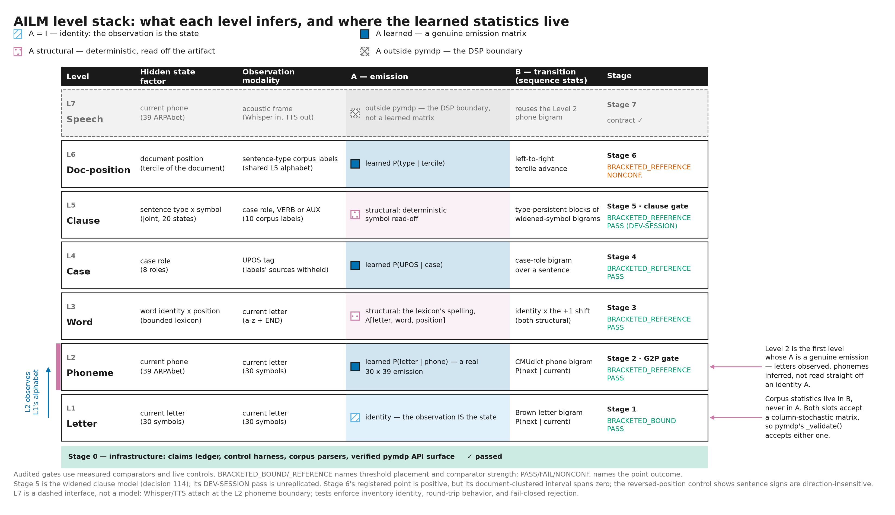
pymdp agent with its hidden factor, observation
modality, and the declared home of its A and
B; the badge marks the emission’s kind — identity, learned,
structural (deterministic, read off the artifact), or outside
pymdp entirely (L7, dashed: an interface whose tested
contract is inventory identity and fail-closed rejection, not a model).
The Stage column carries one audited gate per level, and where a stage
audits more than one it names which: Stage 2 draws its
grapheme-to-phoneme (G2P) accuracy gate rather than its
phoneme-perplexity gate, and Stage 5 draws the clause gate on the
widened observation alphabet. This table is one row per level, so the
retained case-only ablation is not here; the gate audit records it under
stage5_clause_case_only and fig. 7 draws it at its measured position,
non-passing, with its privileged-label gain unresolved. A row shown
solid whose gate audit no longer passes, a status contradicting
scripts/audit_gates.py, a badge drawn for a stage that
audits more than one gate without naming which, or a symbol count
disagreeing with the code constants would each falsify this figure, and
the counts are imported rather than typed so the last cannot drift
silently.The case-level observation is a universal part-of-speech (UPOS) tag from UD annotation (Marneffe et al. 2021). The speech interface handles ARPAbet phonetic symbols; digital signal processing (DSP) is outside the model stack.
| Level | Hidden factors and observations | Likelihood and transition | Preferences and initial prior |
|---|---|---|---|
| L1 letter | Hidden: current letter; Observed: current letter | A: identity; B: Brown letter bigram | C: zero; D: uniform |
| L2A phone sequence | Hidden: current phone; Observed: current phone | A: identity; B: CMUdict phone bigram | C: zero; D: learned phone unigram |
| L2B letter-to-phone | Hidden: current phone; Observed: current letter | A: learned \(p(\text{letter} \mid \text{phone})\); B: train-only phone bigram | C: zero; D: learned first-phone distribution |
| L3 word | Hidden: word identity × position within the word; Observed: letter or END | A: deterministic spelling table; B: identity over word × forward position shift | C: zero; D: word unigram × opening-position point mass |
| L4 case role | Hidden: case role (syntactic role, not grammatical case; UD-derived heuristic from the 8 CEREBRUM-named roles of tbl. 2); Observed: UPOS tag | A: learned \(p(\text{UPOS} \mid \text{case})\); B: case-role bigram | C: zero; D: learned first-case distribution |
| L5 clause | Hidden: sentence type × widened symbol, jointly;
Observed: widened symbol: a case role, or
VERB, or AUX |
A: deterministic symbol-component read-off; B: type-persistent blocks of learned widened-symbol chains | C: zero; D: type prior × first-symbol-given-type |
| L5 clause, retained case-only ablation | Hidden: sentence type × case role, jointly; Observed: case role | A: deterministic case-component read-off; B: type-persistent blocks of learned case chains | C: zero; D: type prior × first-case-given-type |
| L6 document position | Hidden: document-position tercile
(phase in code); Observed: sentence
type |
A: learned \(p(\text{type} \mid \text{tercile})\); B: learned left-to-right tercile transition | C: zero; D: opening-tercile point mass |
| L7 speech | Hidden: — outside pymdp by design; Observed: ARPAbet at the boundary | A: —; B: — | C: —; D: — |
Every modeled row has a live pymdp.Agent builder.
tbl. 4 separately states whether
the recorded headline score calls that Agent’s application programming
interface (API) for inference; a builder and conforming matrices do not
turn an exact or NumPy scorer into live pymdp inference.
| Level | Recorded score path and status |
|---|---|
| L1 letter | live pymdp filtering; bracketed bound |
| L2A phone sequence | exact full-dictionary sufficient-statistic score; bounded agreement between live pymdp and NumPy; bracketed bound |
| L2B letter-to-phone | full-set NumPy forward filter; bounded live check with 0 decision disagreements; bracketed reference |
| L3 word | exact path identity; sampled live-pymdp check; bracketed reference (sec. 4.5) |
| L4 case role | NumPy forward filter; exhaustive live-pymdp posterior comparison over the held-out set; agreement reported (sec. 4.6) |
| L5 clause | exact closed-form mixture, equal to oracle forward filtering on the joint block-diagonal chain to numerical tolerance, with a spec-build bit-identity check against a running agent; gate registered before the artifact existed and passing, with no held-back replication available (sec. 5.7.3) |
| L5 clause, retained case-only ablation | exact closed-form mixture with a live-pymdp posterior-agreement check (argmax and joint-posterior tolerance) on the full held-out set, which is not score equivalence for the headline estimand; gate non-passing and privileged-label gain unresolved (sec. 4.7) |
| L6 document position | registered observed-position score uses the direct conditional table; a separate descriptive score runs live sequential filtering; document-clustered primary interval spans zero on the development population and excludes zero on the held-back one (sec. 4.8, sec. 4.12.1) |
| L7 speech | serialization and parsing contract only (sec. 6.1, sec. 4.2) |
Reading each hidden factor alongside its observation shows what each
level is for. At Levels 1 and 2A the emission is the identity, so the
observation is the state and the level’s content is entirely
its next-symbol prediction. At Level 2B and above, the observation and
the hidden variable are drawn from different alphabets and the posterior
is an inference: the co-indexed phone from a letter (sec. 4.4), word identity from a letter prefix
(sec. 4.5), case roles from tags (sec. 4.6), sentence type from a case-role prefix
(sec. 4.7), document-position tercile
from sentence types (sec. 4.8). Those
are latent-variable semantics, not a claim that every recorded score was
produced by Agent.infer_states.
4.1.2 Declared and measured parameter counts
Every entry of every matrix in tbl. 3 arrives one of two ways. A declared entry is fixed by the design and is the same number whatever corpus is read: the identity emissions at Levels 1 and 2A, the word level’s spelling table and its two structural transitions, the clause level’s symbol read-off and the zero mass it places on every cross-type transition, the flat \(\mathbf{C}\) every level carries while it is comprehending rather than generating. A counted entry is a smoothed relative frequency estimated on a training split — a count of a named event over a count of its condition — installed as a fixed array before inference begins.
Each level therefore has one place where its corpus knowledge lives,
and it is worth naming per level because it moves. Levels 1 and 2A keep
it in the transition, as the Brown letter bigram and the CMUdict phone
bigram, with the phone level’s start prior counted as well. Level 2B
keeps it in both slots at once: a letter-given-phone emission and a
phone bigram, both estimated on the training half of the split. Level 3
keeps it in the prior. Its emission is deterministic and both
of its transitions are structural constants, so the lexicon with its
frequencies is the level’s entire learned content, and a wrong \(\mathbf{D}\) there is what a wrong \(\mathbf{B}\) is elsewhere (sec. 4.5). Level 4 counts all three of emission,
transition and start distribution. Level 5 counts its transition and its
start over the joint type-by-symbol space while its emission stays
deterministic, and Level 6 counts its type-given-phase emission and its
phase transition, whose left-to-right support is structural even though
its entries are counts. sec. 4.11
reports the one place a matrix is estimated inside pymdp
instead of counted outside it, and that the two procedures are the same
arithmetic.
4.1.3 Cross-level channels and shared alphabets
Hierarchical here names a relation between representations.
Each level’s hidden state space is a different description of the same
text, running from the symbol to the document — letters, phones, words,
case roles, sentence types, document-position terciles — and the upper
level’s observation alphabet is the lower level’s hidden state
space where letters enter the letter-to-phone model and sentence types
enter the narrative level. The word, case and clause seams are looser,
and saying so costs nothing. The word level reads letters over a
within-word alphabet of its own, the lowercase letters plus an
end-of-word symbol, and the historical case-level evaluation reads UPOS
tags from treebank annotation. The connected raw-text mode instead
derives a soft UPOS observation through a train-fitted lexical encoder,
whose boundary is stated in sec. 4.10. The
clause seam was an identity while the clause level observed case roles
alone. The canonical clause level observes the case roles plus
VERB and AUX, so its alphabet strictly
contains Level 4’s hidden state space rather than equaling it, and
material Level 4 does not represent enters the level above it. That
containment is not a detail of bookkeeping: it is the open
stratificational question sec. 6.2
states and does not resolve, and it is why the retained case-only
ablation, whose seam is a true identity, is kept rather than
discarded.
That relation is representational, and it is what the shipped stack is. Whether the stack also earns the word in the stronger sense — a level above making the level below better — is a separate and measurable question, and it is the one sec. 4.10 answers channel by channel. One thing the representational relation does not carry is worth fixing here: it does not make the levels stages of one pass over one index. In the historical component experiments, each runs or is scored on its own index against its own artifact, and fig. 5 draws the displayed inference paths each on its own index for exactly that reason.
In these historical standalone constructions, levels compose through their alphabets rather than through an active channel. The connected schedule of sec. 4.10 adds explicit messages to those component models. Level 2’s letter-to-phone model observes the 30-symbol letter alphabet that is Level 1’s hidden state space, and infers over the 39-phone inventory, so its emission \(\mathbf{A}_{lp} = p(\text{letter } l \mid \text{phone } p)\) is a rectangular matrix linking two different alphabets of two different sizes. It relates a letter to the phone that shares its index in an equal-length word, which is a stipulated pairing rather than a recovered grapheme-to-phoneme alignment (sec. 4.4). That alphabet identity is fixed when the matrices are built and is not a value computed at run time: two agents indexing the same symbol set share a vocabulary the way two functions can share an argument type without ever calling each other. Level 2B is where that first pays, being the lowest level whose posterior is hidden-state inference rather than a read-off of the observation — inference inside one agent. This component-level inference is distinct from the later coordination of agents by conditional messages.
fig. 2 traces one level from its GNN
specification to the live agent and back through the conformance check
that binds them. The loop is closed in both directions: beyond being
checked against the live agent, every specification also
constructs one.
ailm.spec_agent.build_agent_from_spec reads the dimensions,
counts, slot roles, and parameterization forms from the spec and
assembles the pymdp agent, resolving each
Learned(generator=..., artifact=...) declaration through an
explicit default-deny registry backed by the required corpus artifacts,
rather than executing whatever path the spec names — a registered
provenance annotated on the wrong slot is refused at construction, which
turns the anti-informative wiring of fig. 6 from a conformance violation into a
model that cannot be built at all. For every shipped level the
spec-built agent is bit-identical — shapes, dtypes, and bytes across
every matrix — to the agent the builder functions construct, so the
specification and the code provably describe one model rather than two
sources of truth that happen to agree (decision 20). That equality is
asserted per level in tests/test_spec_agent.py, together
with the controls that keep it falsifiable: a planted perturbation, a
dtype change, and a missing slot must each make the comparator fail.
fig. 3 puts the Part-A models side by
side with the alphabet identity that joins L2B to L1 — the composition
seam the rest of the stack repeats. The full 6-level stack is drawn in
fig. 1, and fig. 22 plots L1→L2B and L3→L2B, the
measured channels that share a receiver; sec. 4.10 reports all seven registered
interventions. docs/gnn_composition.md works through
representational, structural, and planned composition at length.
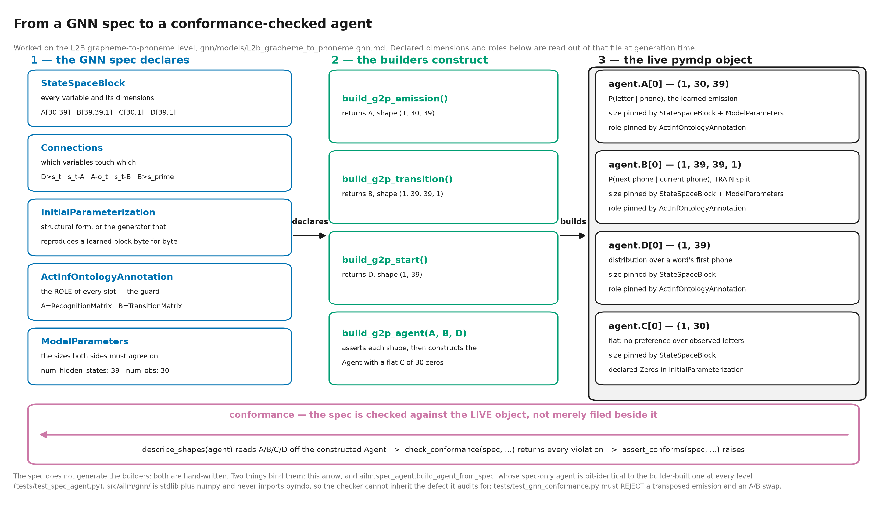
StateSpaceBlock,
InitialParameterization, and
ActInfOntologyAnnotation fix the dimensions and the role of
every slot; the builder functions construct the matrices;
pymdp receives them; and
ailm.gnn.assert_conforms closes the loop by checking the
live agent’s shapes and role assignments back against the declaration.
The spec does not generate the builders — both are written by hand, as
the panel’s own footer states. Two things bind them rather than one: the
closing conformance arrow drawn here, and
ailm.spec_agent.build_agent_from_spec, which constructs
every shipped level from its spec and registered artifacts and agrees
with the builder bit-identically (decision 20, described in the text but
not drawn on this panel). Dimensions shown are read from
gnn/models/L2b_grapheme_to_phoneme.gnn.md when the figure
is generated. A declared dimension on the panel that disagreed with that
file, or a live agent whose shapes or slot roles contradicted the
declaration while the closing arrow still reported conformance, would
each falsify this figure.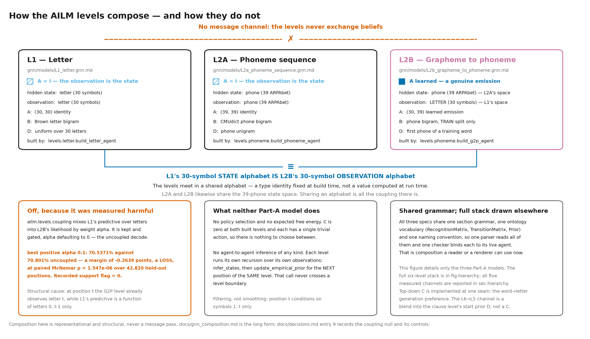
D intervention, and a helpful
privileged punctuation-type-oracle→L3 word-D intervention
that falsified its predicted harm, the last not an L5-output channel —
and two further case-word seams, of which the bridge — the case level’s
own role posterior marginalized into the L3 word prior — is now measured
as an exploratory prior-only influence sweep on the development
population (decision 121, reported in sec. 5.10.4), while its privileged-oracle
diagnostic remains a registered structural inlet whose evaluation
records nothing. sec. 4.10 reports all
seven registered interventions. The independently measured upper
experiments are not a cascade. fig. 22 plots the channels that share the
L2B receiver. These historical standalone score paths exchange no
further beliefs; the connected runtime is evaluated separately in
sec. 5.1. This caption is falsified by
a channel effect that disagrees with its recorded value, by a belief
exchange where none is drawn, by attribution of the oracle arm to L5
output, or by evidence that the independent experiments were executed as
one path.update_empirical_prior is within-level machinery. Every
call site in src/, outside the pymdp API smoke
probes, pushes a level’s own posterior through that same level’s own
\(\mathbf{B}\) to form the prior for
its own next symbol — the second half of eq. 6, staying inside a single agent. The probes in
src/ailm/generative/smoke.py are an exception: they call it
on placeholder arrays with no level behind them, only to establish which
call signature the installed pymdp exposes. That temporal
API is not itself an inter-level channel. The historical standalone
score paths run one level at a time; the connected runtime adds
separate, explicit message transformations rather than redefining
update_empirical_prior as a coupling operation. This
boundary is tested by five inter-level experiments, each measured
separately. A genuine Level 1 to Level 2 message was implemented and
measured, and it made the system significantly worse; sec. 6.1 reports the result and its controls,
while sec. 4.10 shows a lexical channel
into that same level helps substantially when it carries information the
level lacks. The L3→L1g generation seam runs top-down instead: sec. 4.9 gives the letter level a controllable
transition and sets its \(\mathbf{C}\)
from the word level’s lexicon, selecting actions under eq. 2. Separately again, the narrative level’s phase
prediction moves the clause level’s joint \(\mathbf{D}\) prior, with an exact
zero-weight anchor and a scrambled control (sec. 4.8); this intervention does not use the
generator’s \(\mathbf{C}\) mechanism.
The privileged punctuation-type-oracle→L3 word-prior intervention is
separate again, and it does not consume an L5 posterior. None of these
five experiments passes its output into the next. One further caution
applies to two of them: the privileged-label arm of the retained
case-only clause ablation is evidence of low receiver sensitivity, not a
hard bound on the L6→L5 intervention, and both that arm and the
intervention are measured against the case-only clause model rather than
against the widened one that sec. 5.7.3 promotes.
4.1.4 Worked filtering step: prior to posterior
fig. 4 traces a single symbol through a filtering path. The prior over the current state is the previous posterior pushed through \(\mathbf{B}\); the observation is scored against that prior through \(\mathbf{A}\), which is what eq. 7 measures; the posterior is the normalized product; and the posterior is then pushed through \(\mathbf{B}\) again to become the next prior. The whole cycle is the two halves of eq. 6 and nothing else. L1 executes its headline path through live pymdp. L2A’s canonical full-dictionary score collapses the same recursion to exact initial-phone and bigram sufficient statistics after a bounded live-pymdp/NumPy agreement check; L2B’s full-set scorer implements it in NumPy after a bounded live check with 0 decision disagreements. L4’s full scorer implements the cycle in NumPy, and the live-pymdp recursion is compared with it at every held-out position (sec. 4.6). L3’s exact path score, L5’s closed-form mixture, and L6’s registered observed-position score do not execute this live-agent loop; L5’s live recursion is separately checked against the NumPy joint filter on the full held-out set at the posterior level (sec. 4.7). L6’s separately reported descriptive filter does execute it, but measures sequential prediction from the Agent’s inferred prior rather than the registered known-position conditional.
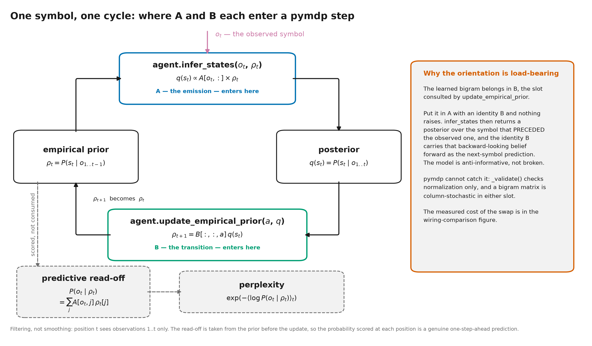
A enters twice — once
to score the observation against the prior and once in the predictive
read-off where per-symbol perplexity is accumulated — while the
transition B enters once, to push the posterior forward
into the next position’s prior. A missing emission contribution, a
transition applied before rather than after the update, or a predictive
score that disagreed with the displayed recurrence would falsify this
panel.Locating \(\mathbf{A}\) and \(\mathbf{B}\) in that cycle explains why their placement is not interchangeable, and why getting it wrong produces a model that runs.
fig. 5 makes the cycle concrete across the displayed levels: one held-out sentence, traced through the model-specific explanatory paths — the belief state drawn as a heatmap column per position at L1 through L4, and as a scalar type-posterior trace at L5. This visualization does not imply that all panels are recorded by live pymdp inference. Each panel runs on its own index, since the levels do not share one: letters at L1, the letters of a single word at L2B and at L3, tokens at L4, and the case-role prefix at L5. L6 is absent by construction rather than by omission — its observation stream is the sentence-type sequence across a document, so one sentence gives it a single observation and nothing to condition on (sec. 4.8).
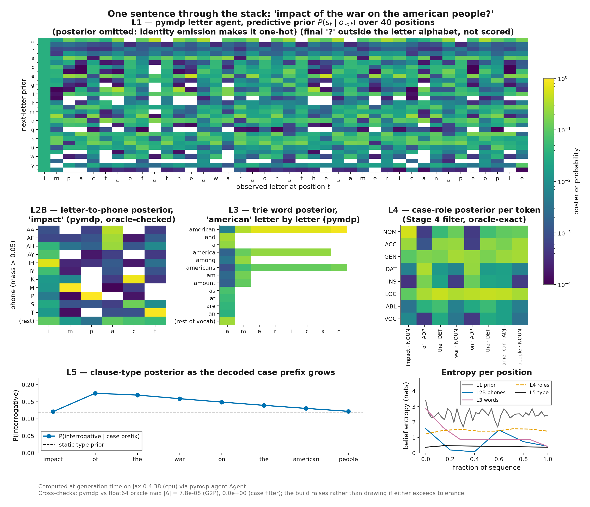
4.1.5 Transition statistics and emission semantics
Proposition 2 (Sequence statistics belong in \(\mathbf{B}\)). Let \(M\) be a learned matrix with \(M_{ij} = p(x_{t+1} = i \mid x_t = j)\).
Placing \(M\) in the transition slot,
\(\mathbf{B} = M\), with \(\mathbf{A} = I\), yields a filtering
recursion whose predictive prior is \(\rho_{t+1} = M q_t\), so the model predicts
the next symbol from the current one. Placing \(M\) in the emission slot instead, \(\mathbf{A} = M\) with \(\mathbf{B} = I\), yields a posterior \(q_t(j) \propto M_{o_t j}\), which is a
distribution over the symbol that \(o_t\); an identity transition then carries
that backward-looking belief forward as the prediction for \(o_{t+1}\). Both placements satisfy
column-stochasticity, so both are accepted by pymdp’s
validator, and only the first is informative.
The wrong placement is quiet rather than loud, which is why it is
kept in the suite as a live negative control rather than merely
described: the mis-wired agent constructs, validates, performs
inference, and returns a finite perplexity throughout. Measured on
held-out prose it scores 27.2499 against 11.9215 for the correct wiring
— informative enough to clear a threshold badly placed at the uniform
baseline of 30, and anti-informative enough to fall well short of the
context-free unigram bar at 19.9558, which is the comparator the
negative control is actually held to. fig. 6 puts the transition and emission
placements side by side; docs/decisions.md records the
measurement and the named mis-wirings it generalizes to.
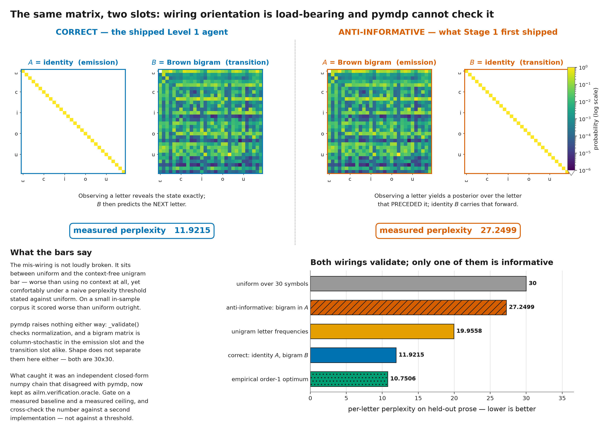
pymdp validation; the right placement produces a posterior
over the preceding symbol and measures 27.2499 perplexity, the
left measures 11.9215. A bar chart beneath ranks both wirings against
the uniform comparator, the context-free unigram and the empirical
order-1 optimum. A transpose, non-stochastic matrix, or placement that
made the two panels indistinguishable would falsify the
comparison.Two consequences shape the rest of the system. First, orientation
must be asserted by index, not inferred from a passing validator. The
gate tests pin that a lopsided count lands in
B[0, next, current, 0] and not its transpose, and they
assert normalization along the specific axis that indexes the produced
variable — because a transposed matrix still sums to one along
some axis. Second, and more general, structural checks cannot
catch this class of defect at all. What caught it instead was numerical
disagreement with an independently written closed-form chain. That is
why src/ailm/verification/oracle.py exists, and why it is
forbidden from importing pymdp. sec. 4.11 develops the point.
4.1.6 Tracing a prediction through named matrix entries
The claim that a prediction is answered by naming a column and
reading it is worth demonstrating once, on real numbers. Take the letter
level at the moment it has just observed q. Three steps
close the question. Name the state: the emission is the
identity, so the posterior over the current state is q and
nothing else. Name the column: q sits at index 20
of the sorted 30-symbol alphabet, so by eq. 6 the prediction for the next symbol is
B[0, :, 20, 0]. Read it: the three largest entries
are u at 0.9758, space at 0.0095 and period
at 0.0051, and the column sums to 1, so nothing has been renormalized
for display. Each of those entries is a Laplace-smoothed relative
frequency of the corresponding Brown bigram: a count of how often
q was followed by that symbol, over a count of how often
q occurred. The model predicts u because the
number in that cell is 0.9758, and a reader who knows how q
behaves in English can judge whether that parameter is the belief it
ought to be. That last point is the one worth keeping. The audit is
available to a reader, not only to an author with the training run in
hand.
Near-determinism is not typical, and quoting only q
would imply it is. The column for t is the ordinary case:
h at 0.3067, then space at 0.2031 and i at
0.0988 — a real distribution over successors, and a correspondingly
weaker prediction. What is identical in the two cases is the procedure:
the same three steps, the same named column, read directly off the
matrix that a reader can open.
scripts/record_worked_example_claims.py recomputes both
columns from the vendored counts, so every number in these two
paragraphs is a recorded measurement rather than an illustration.
4.1.7 Level factorization and conditioning variables
The alternative to a stack is one agent whose hidden state is the
joint of every level’s factor — a single instance of eq. 3 over the product space. Its emission would
have \(\lvert O \rvert \prod_f \lvert S_f
\rvert\) entries, the product running over every hidden factor,
so the joint letter-phoneme-word emission grows in proportion to the
size of the vocabulary. A flat factor over every base word in CMUdict is
not merely slow to work with; the transition matrix for that factor is
quadratic in the vocabulary and exceeds any reasonable storage budget by
orders of magnitude, and the joint emission with the phoneme and letter
factors multiplies that figure again. The scale table in
docs/design/architecture.md records the arithmetic for each
level.
Two mechanisms avoid it. Between levels, each level is a separate
agent over a separate hidden-factor set, so its matrices are sized by
that set alone rather than by the product of every factor beneath it.
The interface between Levels 1 and 2 is an alphabet of 30 symbols and
the 30 × 39 emission defined over it — not a joint letter-phoneme state
space, which is the object whose size the stack exists to avoid ever
forming. Within a level, A_dependencies declares which
hidden factors each observation modality actually depends on, so
pymdp builds one low-dimensional array per modality instead
of a single array indexed by every factor jointly. A modality that reads
only its own factor gets a three-dimensional array of batch,
observation, and state, regardless of how many other factors the level
carries. tests/test_pymdp_smoke.py::TestADependenciesShape
asserts the resulting shapes, so the factorization is a tested property
of the build rather than an assumption about the library.
The word level is where this stops being an optimization. The design
document specified a word as a path through a letter-phoneme trie: the
state space would be trie positions, and the transition would be the
trie’s own branching structure. That alternative was measured rather
than argued away. A dense pymdp transition over those trie
nodes is 24.6 GB at the length-matched Level 2B vocabulary, and roughly
0.37 TB at full CMUdict. No sparse path is reachable through
pymdp’s public Agent API, so this is a
representation that does not fit, not a representation that is merely
slow. The boundary sits at the API rather than in the mathematics:
pymdp’s JAX numerical backend (Bradbury et al. 2018) contains sparse
contraction machinery, and the transition contraction this level needs
is already sparse-capable, but Agent rejects sparse arrays
at construction and does not preserve sparsity across the filtering loop
(sec. 12). The shipped level factorizes
instead. Its hidden state is word identity × position within the word,
and both transitions are structural constants. The trie is not
discarded; it is induced: after a prefix, the posterior over
the word factor is supported on exactly the vocabulary words carrying
that prefix, and that support set is the trie node. This factorized
level is the one that is built, and its gate is verified bracketed — see
sec. 4.5.
4.1.8 Parameter counts and structural constraints
The factorization argument above is about what a flat model would
cost. This is what the shipped one does cost, counted from the built
agents rather than from the design: ailm.parameters
constructs every level through its own shipped builder and counts three
things per array, because any one of them alone points in the wrong
direction.
Stored is the dense entry count, what
pymdp holds and what sec. 12
prices in bytes. Nonzero is the entries the model can
place mass on; the rest are structural zeros fixed by the lexicon and
the trie, never estimated from anything. Free is
simplex capacity on the live support: every distribution loses one
degree of freedom to the simplex constraint, so a column with \(k\) live entries carries \(k - 1\), and a deterministic column carries
none. A one-hot emission is a lookup table written as a matrix — it has
entries and it has no freedom. This per-array rule does not distinguish
fitted distributions from builder-fixed distributions with the same
support: Level 1’s uniform start prior contributes simplex capacity
although the corpus does not fit it. It also does not infer constraints
shared across arrays.
| Level | Declared in | Stored | Nonzero | Free |
|---|---|---|---|---|
| L1 letters | gnn/models/L1_letter.gnn.md |
1830 | 960 | 899 |
| L2A phonemes | gnn/models/L2a_phoneme_sequence.gnn.md |
3081 | 1599 | 1520 |
| L2B letter-to-phone | gnn/models/L2b_grapheme_to_phoneme.gnn.md |
2730 | 2730 | 2651 |
| L3 words | gnn/models/L3_word.gnn.md |
5136462 | 46022 | 1999 |
| L4 case roles | gnn/models/L4_case.gnn.md |
168 | 168 | 151 |
| L5 widened clause types | gnn/models/L5w_clause_widened.gnn.md |
620 | 240 | 199 |
| L6 document-position terciles | gnn/models/L6_narrative.gnn.md |
18 | 12 | 5 |
| Total | — | 5,144,909 | 51,731 | 7424 |
Three things in tbl. 5 are worth
reading directly. First, these counted filtering components together
have 7424 free parameters, and that is the number this
architecture is built to make small enough to inspect by hand. Of the
three columns, free describes the capacity remaining after
support and normalization constraints. It is not a count of parameters
trained by the shipped pipeline, and it is not a directly comparable
neural-model parameter count. The reason is that this model
declares what a network would have to learn: the 30-symbol
letter alphabet, the 39-phone inventory, the 8 case roles borrowed from
CEREBRUM, the deterministic spelling table that is the lexicon,
the structural zeros, and the builder code that decides which entries
exist at all. These counts do not price the information carried by the
chosen alphabets, lexicon, role meanings, or builder code. The
deterministic spelling table and structural zeros do contribute to the
stored and non-zero columns, but they contribute no live-support
freedom. The free count also includes the capacity of the fixed uniform
start prior, so it does not state how much a corpus decides. Second,
only 1.0055% of the stored entries are non-zero, so most of the dense
allocation holds structural zeros. Third, the largest dense array
belongs to a level with few free values: Level 3 stores 5,136,462
entries, of which 1999 independent probability values are carried by its
word unigram prior. Its word transition is an identity padded out to the
square of the vocabulary, and its emission gives one letter per
word-position pair. The corpus also determines the retained vocabulary
and its spelling and length structure, but those contributions are not a
count of fitted probabilities.
The factorization makes these independence and deterministic assumptions explicit. An unrestricted learned joint transition over word and position would admit additional degrees of freedom. A dense joint matrix can also encode the same stipulated structure, however, so dense storage alone does not imply that every entry must be estimated. The table counts the shipped design; it does not establish factorization as the only representation of that design.
4.2 Gate taxonomy, threshold placement, and controls
A staged build is only as good as its gates. The premise of the construction in sec. 4.1 — that Stage \(N+1\) may not begin until Stage \(N\) passes a falsifiable test — buys nothing if the test cannot be failed, and buys less than nothing if it cannot be passed, because then the honest response to a correct implementation is indistinguishable from the response to a broken one.
This project shipped both failure modes. They are opposites, they were introduced by the same kind of inattention, and neither was caught by any test, review, or validator. That symmetry is the substance of the audit in sec. 10.1: the two defects are not two mistakes but two halves of one missing check.
4.2.1 Vacuous, unreachable, and discriminating thresholds
A gate is a threshold together with a direction. Write \(x \succeq t\) for “the measurement \(x\) satisfies the threshold \(t\) as declared”, and \(x \succ t\) for the strict form the audit applies:
\[x \succeq t \;\Longleftrightarrow\; \begin{cases} x \le t, & \text{lower is better (perplexity, error),}\\ x \ge t, & \text{higher is better (accuracy, agreement),} \end{cases} \qquad x \succ t \;\Longleftrightarrow\; x \succeq t \ \text{and}\ x \ne t .\qquad{(10)}\]
The inclusive relation is what every declared threshold’s own wording
— >=2 nats above uniform, >=60% — means
by “pass”. The strict relation is what the audit uses, and it is exactly
the semantics gate_passes in src/ailm/gates.py
implements: equality fails in both directions, so a baseline sitting
exactly on the bar is never certified vacuous and a typed comparator
sitting exactly on the bar never certifies reachability. The two
relations disagree only on the boundary \(x =
t\) — and that boundary is not an edge case here, it is where
every audited row sits. scripts/audit_gates.py sets each
row’s threshold to its measured baseline, so \(b_P = t\) exactly, by construction. Under
\(\succeq\) every such baseline would
“pass” its own bar and every audited gate would be reported vacuous;
under \(\succ\) none does. The strict
relation is what makes the audit report anything at all, and the price
is stated below: with the bar on the baseline, the vacuity half of a
bracketed verdict is true by construction and the verdict carries
exactly one measured comparison.
Two further quantities are needed, and the whole argument is that they must be measured rather than assumed. The trivial baseline \(b\) is what a model that does none of the work the stage is supposed to demonstrate already scores — for a sequence model, the context-free unigram distribution; for a classification task, a per-item lookup table. The typed comparator is a pair \(c = (c_{\text{value}}, c_{\text{type}})\): a measured or derived comparator together with a declaration of what kind of quantity it is, because the verdicts below differ in what they license and the license comes entirely from the type. The four types this project uses are those of tbl. 22: a model-class bound (a theorem-backed upper bound on every model of the class, on the scored population), an analytic bound (a closed-form bound needing no measurement, such as a total-variation distance of zero), a privileged oracle (a measured comparator given information the model forgoes), and a reference model (a measured system with no privileged access). The first two are bound types; the last two are exceedable types, and the Stage 4 derived row — where the shipped agent scores above its own smoothing reference — is the recorded proof that exceedable comparators are exceeded in practice.
Definition 3 (Threshold placement). Let \(t\) be a threshold whose direction fixes the relations \(\succeq\) and \(\succ\) above, let \(b\) be the measured score of the trivial baseline, and let \(c = (c_{\text{value}}, c_{\text{type}})\) be the typed comparator. Then the gate is if \(b \succ t\); otherwise, if \(c_{\text{value}} \nsucc t\), it is when \(c_{\text{type}}\) is a bound and when \(c_{\text{type}}\) is exceedable; and if \(c_{\text{value}} \succ t\), it is or by the same split. A bracketed gate of either strength is one the trivial baseline strictly fails and the comparator strictly clears, so that passing it is evidence about the model rather than about the threshold; only the bound-typed verdicts assert anything about models other than the ones that were measured.
The typing is the load-bearing repair in this definition, and it was
forced by an external audit of an earlier version in which a single
untyped \(c\) licensed
UNREACHABLE whenever it failed to clear \(t\). That inference is not valid for an
exceedable comparator: \[c_{\text{reference}} \nsucc t
\quad\not\Rightarrow\quad
\sup_{m \in \mathcal{M}} \operatorname{score}(m) \nsucc
t,\qquad{(11)}\] because a reference is one member of the
admissible class, not its supremum. Only a genuine bound —
information-theoretic, analytic, or exhaustive — turns “the comparator
fails the bar” into “no implementation can pass”. The classifier
therefore refuses an untyped comparator outright
(classify_gate in src/ailm/gates.py fails
closed), and the licensing rule is machine-checked:
unreachable_requires_bound in
formal/AILM/GateVerdict.lean proves that
UNREACHABLE is derivable only from a bound-typed
comparator, whatever the numbers are, and its dual proves a bound is
never softened into a reference statement.
The verdict is deliberately named for what it checks. Bracketed is a placement audit and nothing more: it says the measured baseline strictly fails the threshold, and the typed comparator strictly clears it, on a stated population. It does not say the metric is the right one. It does not say the comparator is the strongest available. It does not say the sample is representative. It does not say the effect is large enough to matter. It does not say the threshold was fixed before the run. This paper found several of those conditions violated somewhere in its own work: a defensible-but-not-strongest comparator (sec. 10.1.6), an unrepresentative subsample (sec. 10.1), and a retrospectively re-scoped threshold (tbl. 22). That is exactly why bracketed is not called sound. A gate worth calling scientifically valid needs seven things: a valid construct, a relevant metric, the strongest available comparator, a declared minimum effect, adequate power, a representative test population, and a prospective freeze. The taxonomy here audits one of those seven. The strongest available comparator clause also has a methodological reading this project does not yet meet. That reading would make the comparator search part of the formal method itself: declare the admissible information class, fit its strongest member on training data only, freeze it, and gate against that frozen artifact. Doing so would remove the residual discretion in which comparator gets declared — sec. 10.1.6 shows what that discretion cost at Stage 2B. That change belongs to the analysis code rather than to this paper, and it is recorded here as the standard the next gate revision should meet.
Equivalently, as the classification
scripts/audit_gates.py computes, with the verdict indexed
by the evaluation population \(P\):
\[\operatorname{verdict}(t; P) = \begin{cases} \text{VACUOUS} & \text{if } b_P \succ t,\\ \text{UNREACHABLE} & \text{if } c_{P} \nsucc t \text{ and } c_{\text{type}} \text{ is a bound,}\\ \text{ABOVE\_REFERENCE} & \text{if } c_{P} \nsucc t \text{ and } c_{\text{type}} \text{ is exceedable,}\\ \text{BRACKETED\_BOUND} & \text{if } c_{P} \succ t \text{ and } c_{\text{type}} \text{ is a bound,}\\ \text{BRACKETED\_REFERENCE} & \text{otherwise,} \end{cases}\qquad{(12)}\]
where \(b_P\) and \(c_P\) are the trivial baseline and typed
comparator measured on \(P\).
The comparator’s type is load-bearing, not annotation: a bound type that
fails the bar makes the gate UNREACHABLE and licenses an
impossibility claim, while an exceedable type that fails it makes the
gate ABOVE_REFERENCE and licenses none; a bound type that
clears the bar brackets the model as BRACKETED_BOUND, and
an exceedable one that clears it is the ordinary
BRACKETED_REFERENCE comparison. The case analysis the audit
applies to the declared thresholds is set out in sec. 10. Step 4 of the pre-build checklist
(sec. 10) makes the population index a
requirement rather than a notation, and the Stage 1 row is where it bit:
its comparator was the Brown training conditional entropy while
its baseline and model were scored on held-out prose, so the single
comparison a baseline-relative verdict contains straddled two
populations. scripts/audit_gates.py now uses that passage’s
own empirical order-1 optimum, 5.9928 (the perplexity of the
all-position bound of eq. 21), which is
the same quantity measured where the gate is scored. The population
index is not decoration; it is this section’s own Stage 4 lesson stated
in its own notation: \(\operatorname{verdict}(t; P_{\text{gold}}) =
\text{VACUOUS}\) while \(\operatorname{verdict}(t; P_{\text{derived}}) =
\text{ABOVE\_REFERENCE}\) at the same \(t\) (sec. 10.1.5) — above-reference and not unreachable,
because the derived population’s comparators are a smoothing decode and
a test-fitted lookup, both exceedable, so no impossibility claim is
licensed there. A verdict is a property of the pair \((t, P)\), never of \(t\) alone — which is why
audit_stage4() in scripts/audit_gates.py takes
population as a parameter instead of baking one in.
The order of the cases in eq. 12 is
not arbitrary. Under the strict relation, VACUOUS and the
failing-comparator verdicts cannot co-fire whenever \(c_P \succeq b_P\): if \(b_P \succ t\) and \(c_P \succeq b_P\), then \(c_P \succ t\), so neither failing case can
trigger. Reporting VACUOUS first therefore loses no
information and keeps the more actionable diagnosis in front.
The condition \(c_P \succeq b_P\) is
measured on every audited row, not assumed. It cannot be
justified “by construction, since the comparator bounds every model in
the class including the trivial one”, because these values are typed
comparators — a smoothing oracle, a conditional entropy, a per-item
argmax — and only some of them bound the model class. The Stage 4
derived row is the counterexample in this project’s own ledger, where
the shipped agent scores above its recorded smoothing
reference. What the case order needs is the weaker fact about the
baseline, which holds on every recorded row except the retained
case-only clause ablation, where the type oracle scores worse than the
type-free baseline (and where, with \(t =
b_P\), VACUOUS cannot fire anyway), and is checked
there; nothing here needs, or gets, a bound over every model.
One degenerate case is worth naming because the argument above is
silent on it: when \(b_P = c_P\) the
bracketed region is empty, and no threshold on that population can earn
either bracketed verdict — the data admits no gate at all, which is
itself a measurement worth having before building the level. This is not
a hypothetical shape. The Stage 4 gold population realizes it exactly:
its trivial baseline is 63.8%, its smoothing reference 63.8% and the
shipped model 63.8% — one number three times (tbl. 25). No threshold scored against that
population could discriminate anything, whatever value were chosen,
which is why no gate is stated there. The general statement is
machine-checked as degenerate_no_gate in
formal/AILM/GateVerdict.lean rather than argued in
prose.
A consequence of the audit’s own convention deserves stating plainly,
because a bracketed verdict otherwise reads as more than it is. Setting
\(t := b_P\) makes the first case of
eq. 12 never fire: \(b_P \succ b_P\) is false for every
population and either direction, so the vacuity test is discharged by
the strictness of \(\succ\) rather than
by anything measured. On those rows a bracketed verdict is therefore
equivalent to \(c_P \succ
b_P\) — the comparison that the typed comparator genuinely beats
the trivial baseline. That is a real and falsifiable claim about the
data, and it is the whole of what every row in the canonical audit
inventory asserts; a re-measurement can move a comparator relative to
its baseline, but a baseline can never cross a threshold defined to
equal it. The equivalence is machine-checked as
bracketed_at_baseline_bar_iff in
formal/AILM/GateVerdict.lean.
Because a reader meets the verdicts in the audit’s output before
meeting this paragraph, the property is named in the code as well:
gate_is_baseline_relative in src/ailm/gates.py
reports whether a row’s threshold equals its baseline, and
scripts/audit_gates.py prints that beside every affected
verdict and counts the affected rows in its summary. The predicate is
deliberately not an extra verdict. Whether a verdict was
predetermined is a fact about how the gate was constructed, not about
how the classifier behaves, and the six-way classification is fixed by
theorems in the Lean development that a new case would invalidate. What
carries evidential weight on a baseline-relative row is therefore not
the verdict but the two measurements beside it — that the comparator
beats the baseline, and that the shipped model does, the latter reported
as the audit’s OUTCOME line and, where the margin is small,
backed by a paired test rather than by a bare number.
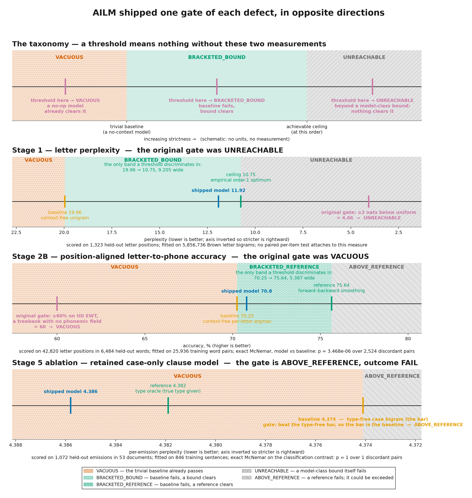
fig. 7 is the same statement drawn once per gate. The useful property of the picture is that it makes the two defects visibly symmetric — one threshold falls on the wrong side of \(b\), the other on the wrong side of \(c\) — which is not obvious from either defect considered alone.
The audit is also executable rather than narrative.
scripts/audit_gates.py re-derives the classification of
eq. 12 for every implemented stage on
every run, fixes its inventory in AUDITED_GATE_IDS, and
exits non-zero when a verdict changes, when the model lands on the wrong
side of its own bar, or when a gate stops being audited. The same
experience distilled a pre-build checklist — metric and direction fixed
in code before any number exists, the trivial baseline and a typed
comparator measured on the scored population, the negative control
written before the model — that no gate in this project was built under
and that is recorded as what the next gate revision should satisfy. The
script’s exit conditions, its restatement caveat, and every checklist
step are set out in sec. 10.
4.3 Level 1: a letter bigram fitted on Brown against a restated context-free bar
4.3.1 Letter states and Brown corpus counts
This subsection fixes the letter alphabet Level 1 predicts over and names the corpus its transition counts come from.
L1 is declared as a GNN file.
gnn/models/L1_letter.gnn.md fixes the letter transition,
the identity emission and the flat start prior; every dimension and slot
role in this section is read from it, and tbl. 5 checks the built agent against that
declaration. The spec does not generate the builder — both are written
by hand, which is why the check is worth running.
Level 1 models a single character at a time. The alphabet in
src/ailm/levels/letter.py is lowercase a through z plus
space, period, apostrophe, and hyphen, sorted so that indexing is
deterministic and every matrix row and column has a fixed meaning across
runs. A uniform distribution over that alphabet has perplexity 30, which
is the number every subsequent comparison is read against.
normalize_text lowercases input and maps every character
outside the alphabet to a space, so the model never sees a symbol it has
no state for.
The transition is trained on the Brown corpus (Francis and Kučera 1979) and reaches 805
distinct bigram types over 5,856,736 bigram tokens. Normalization is
documented in docs/provenance/sources.md and includes two
choices that matter: whitespace runs collapse to a single space, and
spaces immediately preceding a period or apostrophe are stripped.
Brown’s tokenizer emits punctuation as separate tokens, so without those
steps the space-space pair would dominate every other bigram and no
letter would ever transition directly into a period, which would distort
exactly the end-of-word statistics the level is supposed to learn.
Counts are vendored as vendor/brown_counts.json (14 kB,
sha256 778e2b31740b) and verified byte-identical on
regeneration, so the level’s tests need no network access and the
training data is pinned rather than described.
4.3.2 Bigram transition matrix
build_letter_transition accumulates the counts into a
square matrix with default add-1 smoothing, then normalizes each column
so that \(\mathbf{B}_{ij} = p(\text{next} = i
\mid \text{current} = j)\). Smoothing is not cosmetic: without
it, the matrix would assign zero probability to any legal English pair
absent from Brown, driving eq. 7 to
infinity on held-out text. build_letter_agent then places
that matrix in the transition slot and sets the emission to the
identity, since observing a letter reveals the letter state exactly.
fig. 8 shows the result.
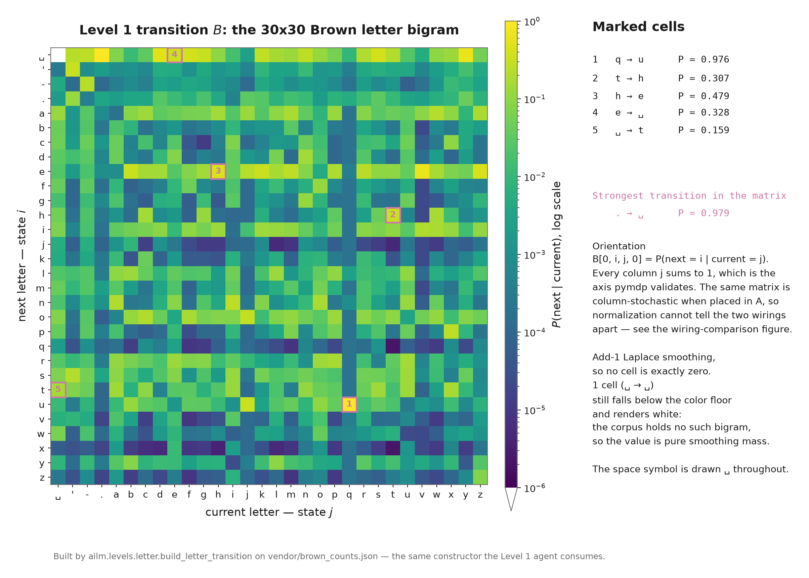
B, a square matrix over the letter alphabet with entries
\(p(\text{next} \mid \text{current})\)
on a log color scale, estimated from 5,856,736 Brown corpus bigram
tokens. Columns index the current letter and rows the next letter; the
visible structure — the vowel band, the q-to-u
near-determinism, the space column’s broad spread — is the entire
learned content of the level. A row/column reversal, a
non-column-stochastic matrix, or a matrix whose entries did not match
the trained transition would falsify the panel.Every entry of that matrix is a named conditional probability, and the whole of the level’s behavior is a lookup in it. There is nothing else in the level to interpret.
4.4 Level 2: a phoneme chain and a position-aligned letter-to-phone decoder
Level 2 holds a phone-sequence model and a letter-to-phone model, and
the distinction between them is the point of the level. Part A is the
letter level one rung down: a sequence model over phones, emission the
identity, dynamics in the transition. Part B is the first level whose
emission is not the identity — letters are observed, phones are hidden,
and A is a learned letter-given-phone matrix. That makes
Part B’s posterior an inference rather than a read-off of the
observation. It does not make it a message from one agent to another;
sec. 4.1 keeps those two senses of
hierarchical apart, and only the first is claimed here. Both
live in src/ailm/levels/phoneme.py.
L2 is declared as a GNN file.
gnn/models/L2a_phoneme_sequence.gnn.md fixes the phoneme
sequence model; the letter-to-phone model beside it is declared in
gnn/models/L2b_grapheme_to_phoneme.gnn.md; every dimension
and slot role in this section is read from them, and tbl. 5 checks each built agent against its
declaration. The spec does not generate the builder — both are written
by hand, which is why the check is worth running.
The inventory is the 39 canonical ARPAbet phones with stress digits
stripped, sourced from CANONICAL_ARPABET in
src/ailm/corpus/cmudict.py. The source contributes 135,166
pronunciation entries for 126,052 base words. The inventory count is an
enforced invariant rather than a constant: naive whitespace splitting of
CMUdict (Carnegie Mellon University
Speech Group, n.d.) yields 54 distinct tokens, including 15
comment-only phantoms after #; stripping comments recovers
the canonical 39. A negative control asserts that the naive path fails
the count. All Stage 2 inputs are derived into
vendor/cmudict_counts.json (978 kB, sha256
9f0f20746086), verified byte-identical on regeneration and
checked against the file on disk by
tests/test_provenance_checksums.py — a documented checksum
that has drifted from its artifact is worse than no checksum.
4.4.1 Part A: phoneme bigram chain
build_phone_transition estimates \(\mathbf{B}_{ij} = p(\text{next phone} = i \mid
\text{current phone} = j)\) from the primary pronunciation of
every CMUdict base word, and build_phone_unigram supplies
\(\mathbf{D}\), the distribution over
word-initial phones. The prior resets to \(\mathbf{D}\) at each word boundary. That is
a modeling decision with a measured justification. The alternative
treats the dictionary as one continuous phone stream, predicting each
word’s first phone from the previous word’s last phone. It measures
worse than paying the unigram price at position zero, because there is
no dependency across a word boundary to exploit. Position zero has no
predecessor and is charged for accordingly.
Part A is computed in closed form over all 800,198 positions of the dictionary, and never over the length-matched subset that Part B requires. The two are measurements of different populations. That subset selects words whose letter and phone counts coincide, which biases it toward short words with transparent orthography and, as Part B’s alignment subsection sets out, pairs even those words by index rather than by correspondence. So no whole-dictionary claim can be read off it in either direction, and the size of the discrepancy is not predictable from the selection rule. sec. 10.1 quantifies the gap.
4.4.2 Part B: position-aligned letter-to-phone decoding
Part B observes letters and infers phones, on words whose letter count equals their phone count, pairing the two sequences by index. The name of the task is that sentence: equal-length position-aligned letter-to-phone decoding. It is not grapheme-to-phoneme conversion, and the matrix it learns is not a grapheme-to-phoneme alignment. The next subsection says exactly what the index pairing does and does not buy, and the label is used consistently from here on because phoneme prediction and position-aligned letter-to-phone decoding have different targets, not merely different difficulty.
The shipped builders, the GNN specification file and every recorded
claim label at this level nevertheless carry the string
g2p. Those names are the implementation’s, fixed before the
task was named correctly, and the construct they denote is the one this
subsection names. They are left unchanged because a claim label is an
identifier that the ledger, the tests and the specification registry
resolve, not a description of a construct; renaming them would break the
single-writer discipline that makes every number here traceable, in
exchange for a word. Level 6 carries the same split for the same reason
(sec. 4.8), and the rule is the same
in both places: read the identifier as a key, and the surrounding
sentence as the claim.
build_g2p_emission estimates \(\mathbf{A}_{lp} = p(\text{letter } l \mid
\text{phone } p)\) over co-indexed pairs, column-stochastic over
letters for each phone; build_g2p_transition estimates the
phone bigram on the training split only; build_g2p_start
supplies the distribution over first phones.
decode_phonemes then runs eq. 6
one letter at a time and takes the posterior mode at each position. This
is the first level whose emission carries information, and therefore the
first level where the inference does real work rather than reading the
state off the observation. fig. 9
shows both learned matrices side by side; their differing shapes are the
visible form of the point sec. 4.1
argues structurally.
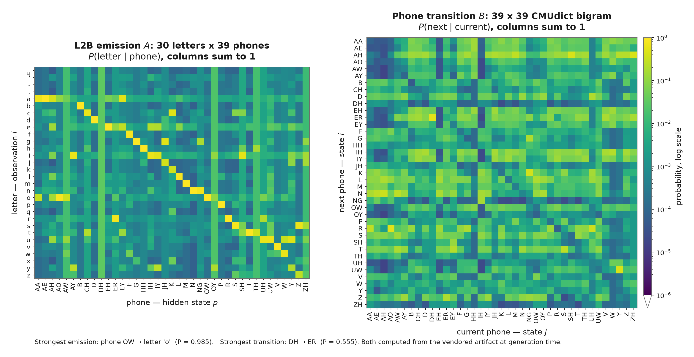
build_g2p_emission and build_phone_transition
calls the shipped agent uses. Left: the letter-to-phone emission \(\mathbf{A}\), 30 letter observations over
39 phones, counted over letters and phones that share an index in a
length-matched word. Its bright ridge is that co-occurrence and is read
as nothing more: where a phone’s conventional spelling is one letter the
ridge cell also happens to be a grapheme-phoneme correspondence, and
where the phone is spelled by a digraph, or the pairing hands its letter
to a neighboring phone, the ridge cell is an artifact of the pairing
rule. The panel is therefore not evidence of a learned phonographic
relationship. Right: the phone-bigram transition \(\mathbf{B}\) on the same log color scale.
The panels’ different shapes are the point: an emission and a transition
here cannot be confused by slot alone, which is exactly the mis-wiring
class Part A could not detect structurally. A rebuilt emission whose
columns were near-uniform — each phone’s letter mass spread flat across
the alphabet, so that the co-index statistic carried no information at
all — would falsify the caption’s reading of the left panel, and the
peak cells printed beneath the panels are re-derived from the matrices
on every build, so the figure refuses to draw numbers the model does not
contain.4.4.2.1 Alignment restriction and excluded corpus coverage
Learning \(p(\text{letter} \mid
\text{phone})\) requires knowing which letter emitted which
phone, and CMUdict does not say. Equal letter and phone counts make the
index pairing unique — zip the equal-length sequences and every
letter has exactly one partner, with no insertion or deletion left to
place. They do not make those pairs grapheme-to-phoneme correspondences.
English spells a phone with a digraph, spells multiple phones with a
single letter, and leaves letters silent, so a word can carry as many
letters as phones and still require a many-to-many alignment.
use = Y UW S has three of each, and the index
pairing counts u→Y,
s→UW, e→S; all three
are wrong, because u spells Y UW together,
s spells S, and e is silent.
one = W AH N counts
o→W, n→AH,
e→N, and is wrong the same way. Both words sit
in the training half of the split, so those counts are in the shipped
matrix.
The consequence runs deeper than a biased sample. The learned emission can encode systematically wrong local correspondences on words the selection rule admits, which fixes what \(\mathbf{A}\) is: a statistical relation between co-indexed symbols, not a learned grapheme-to-phoneme alignment. The G2P literature treats alignment as a latent many-to-many problem for exactly this reason, and joint-sequence models over graphone units are its classical probabilistic answer (Bisani and Ney 2008). AILM does not answer it. It declines to guess an alignment on unequal-length words, because a guessed alignment is fabricated training data, and it declines to run expectation maximization, which is a research contribution with its own convergence diagnostics and held-out likelihood check and cannot be smuggled into a level gate as a preprocessing step. What is left is the index pairing on the length-matched subset — a stipulation rather than a discovery, and the level is scoped to it.
The rest of the cost is stated rather than absorbed. The
length-matched subset is 25.7% of the dictionary (25,936 training and
6484 held-out pairs). It is held out by a stride over the sorted pair
list: every fifth index is test and the rest are train, so the split is
reproducible from the artifact with no seed to record. The stride
matters and is worth stating explicitly rather than leaving to the word
sorted. The list is alphabetical, so a contiguous cut would put
whole initial-letter neighborhoods on one side, while an interleave
distributes them. It does: the initial-letter distributions of the two
sides differ by 0.00085 in total variation. What the interleave does
not remove is morphological neighbors: 82.5% of held-out words
share a 4-character prefix with some training word. On a task whose
whole subject is letter-to-phone regularity, that overlap is partly the
phenomenon rather than contamination. Still, it bounds how independent
the held-out score is, and it is recorded here rather than left for a
reader to infer. 74.3% of the dictionary is discarded, and not at
random: length-matched words skew short, skew transparent, and skew away
from silent letters, digraphs, and vowel clusters. through
and knight are excluded; cat,
stop, and plant are not. Every accuracy figure
below is therefore a claim about position-aligned letter-to-phone
decoding on that subset. It is not a claim about grapheme-to-phoneme
conversion, and it is not a claim about English. Reconstructing the same
subset would still not make it comparable with a published G2P system,
because such a system predicts a word’s pronunciation while Part B
predicts the phone co-indexed with each letter under a pairing the
evaluation itself imposes. sec. 6.1
carries this forward as the sharpest restriction on the level’s
generality.
4.5 Level 3: a word level factored into identity and position
Level 3 is where the design document’s specification stopped being
implementable. Words were to be paths through a letter–phoneme trie,
with the transition encoding trie-constrained letter steps. Measured
over the length-matched letter-to-phone vocabulary, that trie has 78,398
nodes and 78,397 edges, so a dense pymdp transition over
trie nodes is 24.6 GB at float32 and 0.0013% occupied; extrapolated to
full CMUdict it is roughly 0.37 TB. No sparse path is reachable through
pymdp.agent.Agent’s public API. That is a statement about
the API and not about the mathematics, and the difference is worth
stating because the shorter claim — that pymdp has no
sparse path — is false: its JAX backend contains sparse contraction
machinery, and the transition contraction this level uses is already
sparse-capable. What Agent does is reject sparse arrays at
construction and lose sparsity across the filtering loop. Under two
patches at those two sites a sparse-transition agent reproduces the
dense agent’s posteriors exactly, which is what makes the restriction an
interface boundary rather than a limit of the method. This is not a
performance problem to optimize but a representation that does not fit,
and the distinction matters: the response to the first is tuning, and
the response to the second is a design decision that has to be recorded
with its rejected alternatives.
L3 is declared as a GNN file.
gnn/models/L3_word.gnn.md fixes both hidden factors, word
identity and position within the word, and the emission over letters;
every dimension and slot role in this section is read from it, and
tbl. 5 checks the built agent against that
declaration. The spec does not generate the builder — both are written
by hand, which is why the check is worth running.
4.5.1 Word identity and position factorization
The shipped level factorizes the hidden state into two
pymdp factors — word identity over a bounded vocabulary of
2000 types, and position within the word — with a single letter modality
depending on both through A_dependencies = [[0, 1]]. The
emission is deterministic: A[k, w, p] is one exactly when
letter p of word w is symbol k,
or when k is the end-of-word symbol and p has
passed the word’s last letter. B over word identity is the
identity matrix — a word does not become a different word part-way
through being spelled — and B over position is the
+1 shift.
The trie is not discarded, it is induced. After observing a
prefix, the posterior over the word factor is supported on exactly the
vocabulary words carrying that prefix, which is the trie node. That
correspondence is checked against a live agent rather than argued:
test_posterior_support_is_the_trie_node compares the
posterior’s support against the set of vocabulary words carrying each
prefix, and a companion test confirms the support genuinely narrows as
the prefix lengthens, so the equality cannot pass by returning
everything.
What those tests establish is prefix-support equivalence, and the claim is stated at that strength deliberately. The map from a factored state \((w, t)\) to the trie node for the prefix \(w_{1:t}\) is many-to-one — every word sharing a prefix lands on one node — so it is a projection rather than a change of coordinates, and the factored level retains a word identity the node has already aggregated away. Promoting the correspondence to equivalence of the two stochastic processes would require showing the projection is a lumping: that the prefix partition is a probabilistic bisimulation, with each node’s mass equal to the summed prior mass of the words it aggregates and the trie’s transition equal to the pushforward of the factored one. This project neither proves that nor relies on it; every measurement below is stated over the factored model. fig. 10 shows the level’s matrices and fig. 11 the narrowing they produce.
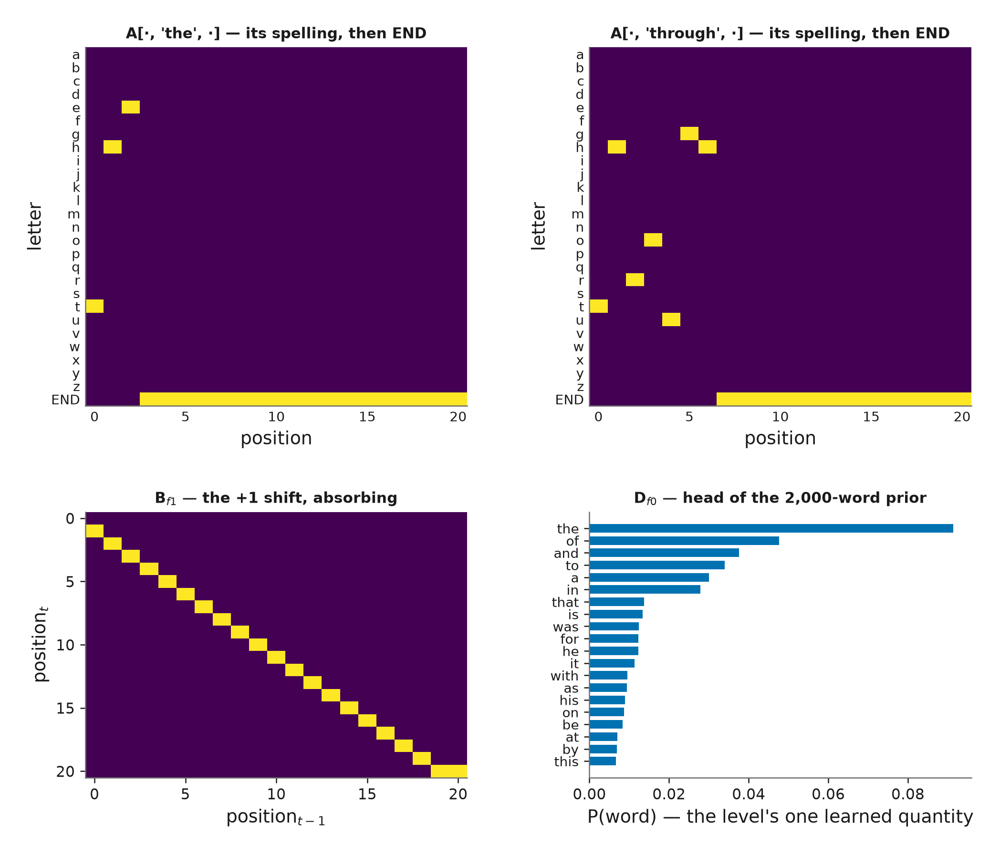
A[·, w, ·] for two vocabulary words, one short and one
long, chosen at draw time as the most frequent of their lengths — each
column of a panel is a one-hot on the word’s letter at that position,
then on END. Bottom left: B over position, the +1 shift
absorbing at the final slot. Bottom right: the head of the 2000-word
prior D — the level’s only learned quantity. Every
cell is a conditional probability a reader can check against the word’s
spelling; a top-row panel with two marks in one column, a shift off the
sub-diagonal, or a prior head disagreeing with Brown frequency order
would each falsify the corresponding structural claim.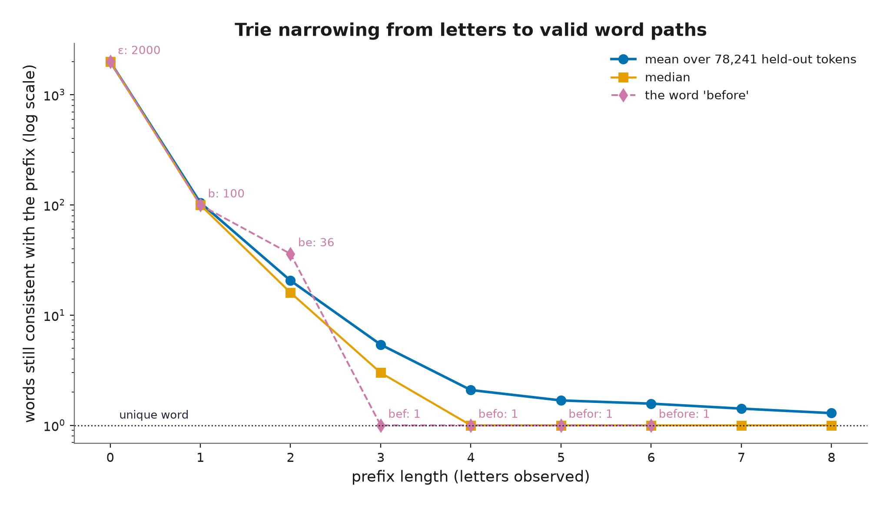
The factorization is also cheaper by an order of magnitude for the same vocabulary and the same coverage, because it spends states on words rather than on prefixes. It puts word identity in the model explicitly, which is what a word level ought to have — under the trie encoding the word is recoverable only by asking which terminal node was reached.
Because every factor except the word prior is deterministic, the probability the model assigns to a word’s full emission path collapses exactly to that word’s unigram probability. That identity is the level’s load-bearing invariant, and sec. 10.1.4 is where it earns that description.
4.5.2 Vocabulary scope and closed-form extension
The vocabulary bound is a scoping decision, not a tuning parameter. 76.4% of held-out alphabetic Brown tokens are in vocabulary; the model assigns the remainder no probability at all, not a small one, and every number in this section describes that sublanguage. The functions refuse to score an out-of-vocabulary token rather than falling back to a smoothed value, because a smoothed number would report a result for an input the model is undefined on.
The corpus population is partitioned before frequency fitting by a category-stratified, revision-bound hash of whole-document identities. Of 500 authenticated Brown source documents, 448 train and 52 are held out, with 0 document overlap. Both derived artifacts retain the ordered file identities, their length-framed digest, the exhaustive split, and a document index for every evaluation token; the loaders reject a duplicate, cross-arm alias, category relabeling, count drift, or token mapped outside the held-out arm. All 15 Brown categories contribute: 15 are represented in training and 15 in evaluation, so the corpus’s genre-blocked file order cannot collapse evaluation onto its last genres. Thus the word-frequency prior and its evaluation population are source-document disjoint and genre-stratified, not merely token-position disjoint.
The refusal to score out-of-vocabulary tokens is correct and it has a
cost, and until the complete held-out stream was vendored the cost could
not be measured. vendor/brown_word_counts.json carries the
evaluation stream already filtered to the lexicon, so the tokens the
level excludes were absent from the repository entirely and the coverage
figure above was a definition rather than a measurement.
vendor/brown_heldout_stream.json is the unfiltered
denominator — 102,404 tokens over 12,930 types, of which 24,163
(23.595757978203977%) fall outside the lexicon — and filtering it to the
lexicon reproduces the shipped evaluation stream element-for-element,
which is asserted as a test rather than assumed.
What it shows is that coverage selects an easier population, and the comparator is what shows it. The letter-bigram bar is defined on any alphabetic string, so it can be scored where the word level cannot, and scoring one model on three populations isolates the population from the system. It reaches 9.054720916239274 on the covered sublanguage, 10.330468611764502 on the whole held-out stream, and 13.27373940157792 on the excluded remainder alone.
The obvious mechanism is length, and it is not the mechanism. Covered tokens average 3.839508697485973 letters against 7.2394984066548025 for excluded ones. That difference invites a simple story: a frequency-ranked lexicon selects short words, and short words are easier for a letter model. Two marginal means cannot support that story, and stratifying by length refutes it. Split the data into 14 length buckets, each holding at least 30 tokens on both sides: the excluded tokens are harder in 12 of those buckets. Next, standardize both per-emission scores to the covered length distribution, weighting each length-\(L\) bucket by its covered token count times \(L+1\) emissions. That gives 9.054720916220827 against 14.80835728699474. Matching on length does not shrink the gap; it widens it, from 0.38250133238192774 nats to 0.4919054330492272, a change of 28.60227962763262%. So on this per-emission estimand, length was masking part of the effect rather than producing it.
What the effect actually is remains unmeasured, and saying so is the honest stopping point. The plausible account is that in-vocabulary tokens are the frequent, orthographically typical ones whose letter transitions dominate the token-weighted counts the comparator is estimated from, so the covered sublanguage is easy for the bar in the same way it is easy for the level. That is a hypothesis this section does not test, and it is recorded as one.
This does not make the Stage 3 comparison wrong. It is a paired comparison on identical tokens, and both systems meet the same easier population. What it does is fix what the comparison is about: the level’s reported gain describes 76.4% of running text, and the 23.595757978203977% it says nothing about is the harder part. The word level is not scored on the excluded tokens under any smoothing rule, here or anywhere, because that would be the smoothed number this section refuses above.
Stage 3 is measured on Brown rather than the Penn Treebank (PTB) the
original gate named. The full treebank is licensed through the
Linguistic Data Consortium (LDC), and nltk ships only a
partial sample under research terms, so a number reported against “PTB”
would have named a corpus this project does not have. Brown is already
vendored, checksummed and byte-reproducible, and is the corpus Level 1
trains on. All Stage 3 inputs are derived into
vendor/brown_word_counts.json, verified byte-identical on
regeneration and checked against the file on disk.
4.6 Level 4: case roles inferred over a UD-derived label, scored on both populations
Level 4 assigns each token of a sentence one of the 8 case roles of
the CEREBRUM inventory (Friedman 2025). The construct it infers
is a syntactic role, not grammatical case. Universal Dependencies
English EWT marks case morphologically as Nominative, Accusative and
Genitive only, and marks it on pronouns only (Marneffe et al.
2021; Nivre et al.
2020; Silveira
et al. 2014): in the split this project vendors, every token
carrying feats[Case] is a pronoun. The other 5 roles —
dative, instrumental, locative, ablative and vocative — have no
morphological ground truth in this corpus in principle, and every label
they carry comes from an explicit heuristic over deprel and
adposition lemmas. So does every label carried by a non-pronoun in the
other 3.
L4 is declared as a GNN file.
gnn/models/L4_case.gnn.md fixes the case-role transition
and the learned emission over UPOS tags; every dimension and slot role
in this section is read from it, and tbl. 5 checks the built agent against that
declaration. The spec does not generate the builder — both are written
by hand, which is why the check is worth running.
That most of the inventory has no morphological realization in English is a property of the construct, not a defect of the corpus. The point dates to Fillmore’s case grammar (Fillmore 1968). Fillmore argued that case relationships belong in the base as primitives, and that “subject” and “direct object” are proper only to the surface structure of some languages. His own inventory (agentive, instrumental, dative, factitive, locative, objective, later benefactive) is deliberately semantic: he did not expect English morphology to mark it. Dative, instrumental, and locative are deep cases in Fillmore’s own inventory, and they are among the 5 roles this level carries without morphological ground truth. Ablative is not one of Fillmore’s cases. Vocative cannot be one by his definition, since it is not a relation between a nominal and the predicate. The lineage is therefore partial. The part that transfers is the general point rather than the list: a case inventory can be semantic and still have no morphological realization in a particular language. Naming Fillmore does not license the heuristic used here; it identifies what the heuristic is a heuristic for. That is why the scope of the partial fidelity check below matters rather than being a formality. Fillmore himself later reopened the question of whether a fixed inventory is the right object at all (Fillmore 1977), and this section inherits that caution along with the frame.
The honest description of the level is therefore heuristic syntactic case-role inference over an inventory of 8 roles, 3 of them partly anchored in UD morphology and 5 of them supplied entirely by the heuristic. Naming it that way is what makes the rest of this section measurable rather than merely disclosed. A level claiming grammatical case would have to treat its labels as ground truth and report accuracy against them; a level claiming a labeling scheme can report that scheme’s fidelity against the morphology that does exist, and can state its gate over the population where the scheme actually applies. Both appear below.
The hidden factor is the case role, A is a learned
emission \(p(\text{UPOS} \mid
\text{case})\), and B is the case-role transition
along the sentence. Structurally it is the letter-to-phone model one
level up: two different alphabets, observations of one and inference
over the other. It is implemented in
src/ailm/levels/case.py and evaluated over 2001 sentences
and 25,148 tokens from 318 authenticated EWT # newdoc id
blocks. Those raw document identities are reconstructed before either
label population is filtered. A deterministic stride assigns 254
documents to training and 64 to test, with 0 documents in both arms.
Gold and derived populations inherit that one partition; filtering can
remove a document from a population, but can never move one across the
split.
4.6.1 Case-level observation alphabet
The model observes the token’s universal part-of-speech tag and
nothing else. Neither deprel nor feats[Case]
reaches it, and the restriction is recorded in the vendored artifact’s
own provenance rather than left to the implementation.
The reason is that the evaluation labels are derived from
those fields. A model observing deprel would be reading its
own answer key: agreement would approach perfect agreement and would
measure nothing about case-role structure at all. This is the sharpest
trap in the project so far, and it is worth being precise about why.
Every earlier mis-wiring made a model worse — anti-informative,
collapsed, upside down — and a suspicious number is something a reviewer
can pull on. This one makes the model excellent. There is no
numeric signature to notice, no degraded score to investigate, and a
gate stated purely as a threshold would pass comfortably while
certifying a circularity. The only possible guard is structural, so the
observation alphabet is checked for what it is not allowed to contain.
fig. 12 shows the emission, transition,
and start-prior arrays with their cells annotated.
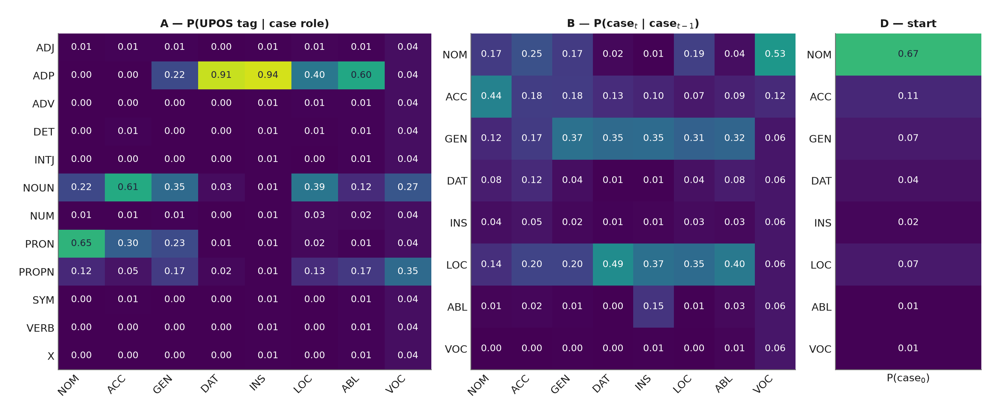
P(UPOS | case); center: the transition \(P(\mathrm{case}_t \mid
\mathrm{case}_{t-1})\); right: the start prior. The readable
structure IS the claim: prepositions load on the oblique roles (DAT,
INS), pronouns on NOM, and sentences overwhelmingly open in NOM. Any
cell disagreeing with a hand count of the training pairs — or a column
failing to sum to one — would falsify the corresponding builder, and the
annotated values make that check possible by eye.4.6.2 Gold and derived case populations
The gold population is the tokens carrying UD
feats[Case]: 3 roles, real English morphology, every one of
them a pronoun. The derived population is every token the
syntactic heuristic can label, and it is the population Stage 4’s gate
is stated over. The two are reported separately because a merged figure
would be part measurement and part heuristic with no way to tell which
part is which.
The heuristic is a research claim, not ground truth, and its fidelity is measurable: where both labelings exist, over 1752 tokens, the syntactic rules agree with real morphology 89.5% of the time.
That figure is narrower than it looks, and the narrowness is not a
caveat but the whole of what it measures. Both labelings exist only on
tokens carrying feats[Case], which in English EWT means
pronouns, in the 3 morphologically marked roles. The derived test
population is 1319 tokens spanning all 8. So the agreement figure checks
the heuristic exactly where the corpus can check it, and says nothing
about the 5 roles for which this corpus has no morphological ground
truth in principle. It is not a bound on the fidelity of the derived
labeling as a whole, and reading it as one is the mistake the wording
here is built to prevent. The scoring function is named
case_agreement rather than case_accuracy so
that overstating it takes deliberate effort; the same discipline applies
to the fidelity number itself.
The sufficient counts make that boundary executable. Across the full parsed EWT development shard, the oracle labels 7288 tokens: 1798 through morphology, 3898 through the dependency-relation map, and 1592 through the token-level adposition route. The heuristic-versus-gold overlap contains 1752 dependency-route tokens and 0 token-level adposition-route tokens. The reported agreement therefore supplies no fidelity estimate for that adposition route.
That route also exposes a construct duplication rather than a parser
accident. It assigns the ADP token from the ADP’s own lemma; it does not
look up or relabel the nominal head. None of its 1592 tokens carries
gold Case morphology, while 1516 have a head that the
oracle separately labels. The ADP-token and head roles disagree in 888
of those pairs (58.58%). This audit preserves the measured labels and
gates; it shows why neither the overlap agreement nor an English
morphological comparison can decide whether the ADP-token construct is
valid. Relabeling the nominal head would define a new research
population and would require a new recorded run, not an editorial
correction.
Computing that fidelity number correctly required one correction
worth recording. The natural implementation calls the project’s own case
oracle on each token and compares the result against the gold morphology
— but the oracle consults feats[Case] first, so on
exactly the tokens being compared it returns the gold label itself. The
measurement reads as perfect agreement, green by construction, and
confirms nothing. The syntactic rules have to be applied directly,
bypassing the morphological shortcut, which is the comparison the number
was always supposed to make.
4.7 Level 5: clause type, built on a case-only ablation and a canonical widened alphabet
This section describes the case-only clause model,
which is the retained ablation rather than the canonical Level 5. The
canonical arm’s alphabet, population and comparators are specified in
sec. 4.7.1. The
stage5_ ledger prefix stays with the case-only arm.
Decision 118 updates tbl. 5 to count the
canonical widened agent; the retained ablation is counted separately as
400 stored, 160 nonzero and 127 free entries, excluded from the
canonical total.
Its joint hidden state contains sentence type — declarative or interrogative, labeled by the sentence-final punctuation token — together with case role. Its observation alphabet is the same case-role inventory that Level 4 uses as a hidden state, which is the exact identity the canonical arm’s widened alphabet gives up (sec. 6.2). The scored stream is supplied directly by the UD-derived artifact, however; it is not a posterior emitted by a running Level 4 Agent.
This arm is declared as a GNN file.
gnn/models/L5_clause.gnn.md fixes the joint type-by-case
state space and its transition. The canonical arm’s
gnn/models/L5w_clause_widened.gnn.md declares the wider
alphabet and the agent counted in tbl. 5.
Both specs are checked against their own built agents, with mutation
controls. The specs and builders are independently written. The
parameter recorder requires each arm to conform to its own declaration;
separate crossed-spec tests require each arm to fail against the other’s
declaration.
The construct is that and no more. Sentence type here is a binary latent defined by a single character. The level models no constituent structure, no main-versus-subordinate distinction, no coordination or complementation, and no mood beyond what the final mark encodes; none of those is present in the observation stream, and none could be recovered from it. Calling this a clause level would import four constructs into a measurement that contains none of them. What the measurement does contain — what a punctuation-defined binary is worth to case-role prediction — is a smaller question, and the one this design can answer.
The model is a 2-component mixture of case-role Markov chains,
embedded as a single-factor pymdp agent over the joint
(type × case) space: 16 states, a block-diagonal transition with zero
cross-type mass (a sentence does not change type mid-way, as a word does
not drift mid-spelling), a deterministic emission reading off the case
component, and a prior \(P(\text{type})
\otimes P(\text{first case} \mid \text{type})\). Filtering a case
sequence accumulates evidence about the type; the type posterior is the
block marginal. The reported full-set score computes the corresponding
mixture evidence in closed form. The live Agent stores the same arrays,
and its inference API is equated with the same model on the full
held-out set. Over all 178 held-out sentences (1072 positions), the
Agent’s infer_states / update_empirical_prior
recursion produces the sentence-type posterior argmax with 0
disagreements against the NumPy joint forward filter over the identical
matrices, and its full joint (type × case) posterior deviates from that
filter by at most 1.67e-07 at any position. The argmax count is not the
load-bearing statistic: on this population the filter’s type argmax is
the same type at every position, so a transition with no case dynamics
at all also scores 0 disagreements while its joint posterior departs
from the filter by a wide margin. The posterior tolerance is the check
that separates the two, and the recorder refuses to write if either
statistic moves. This is posterior agreement between the live inference
path and the independent oracle that audits it. It is not score
equivalence for the headline mixture estimand, which remains
closed-form.
The disjointness discipline of sec. 4.6
applies one level up, and holds structurally: the type label’s source is
the punctuation token’s form, the observations are syntactic case roles
derived from UD dependency structure, and PUNCT tokens carry no case
role — so the label source cannot appear in the observation
stream. The artifact generator asserts this at build time, and the
observation alphabet is checked to be exactly the 8 case roles.
Sentences ending “!” (68) and unpunctuated web fragments (184) carry no
label and are excluded, stated rather than smoothed over; every Stage 5
number describes the typed sublanguage of 846 training and 178 held-out
sentences. The split is made before those filters: the generator
reconstructs all 318 raw EWT # newdoc id blocks, assigns
254 whole documents to training and 64 to test, asserts 0 overlapping
documents, and only then retains typed sentences. The retained training
sequences come from 196 contributing documents and the test sequences
from 53. Thus neither a second sentence from a held-out document nor a
filtered sentence from it can leak that document’s identity into model
fitting.
4.7.1 Canonical widened observation alphabet
This is the canonical Level 5’s specification. The clause level admits a second observation alphabet, and decision 114 made that one the arm the paper describes. The case-only stream of sec. 4.7 is the derived case-role sequence, which is Level 4’s hidden states read exactly one level down, and that stream cannot represent the two parts of speech that occupy a position in English surface order while carrying no case. The widened arm adds one distinguished symbol for each verb and each auxiliary, taking the alphabet to 10 symbols and the joint state space to 20 states in the same type-major, block-diagonal arrangement. Nothing else about the receiver changes: the recognition matrix remains the deterministic read-off of the symbol component, the transition retains exactly zero cross-type mass, and the prior remains the type prior times each type’s first-symbol distribution. The estimators are the shipped ones, called at the larger alphabet rather than transcribed a second time.
Widening an observation stream toward the label is the failure this level was built to avoid, so the disjointness assertion is strengthened rather than relaxed. Sentence-final punctuation remains the type label’s source and punctuation emits nothing; a verb or auxiliary contributes its part-of-speech tag alone, never its lemma, its morphological features, or its surface form. Both properties are asserted per sentence when the artifact is built, by recomputation rather than by inspection: every punctuation token is offered to the extractor alone and must yield nothing, and the recorded sequence must equal what the extractor produces from a view of the same tokens in which lemma, features and form are replaced by a single shared sentinel. An extraction that consults any withheld field disagrees with itself under that substitution and the build stops. A planted lemma leak and a planted punctuation emitter are both rejected by that assertion in the test suite.
The arm inherits the authenticated document partition before exclusions, so its arms are document-disjoint and its intervals resample whole source documents. One rule genuinely differs and is stated rather than inherited in silence: a sentence is usable here when it contributes at least the minimum number of widened symbols, where the shipped artifact requires that many case-bearing tokens. The two populations are therefore nested rather than equal, and per-position perplexity is never compared between the case-only arm and the widened one. The comparison that is valid across them is a per-sentence statistic about the same binary variable on the same sentences, and that is the one reported.
The arm was specified before its artifact was regenerated. The alphabet, the partition, the receiver, the comparators, the gate, the controls, the predictions and the falsifiers were fixed in advance, and the outcome was not re-selected afterwards. The specification was written within the development session and has no independently timestamped prior artifact, so every quantity it produces is recorded as descriptive and none of its p-values joins the frozen multiplicity family.
4.8 Level 6: document-position terciles, registered before the held-out score
One step up from the sentence sits the document. Level 6’s
observation alphabet is the sentence-type component named inside Level
5, and its hidden state is the document-position
tercile: the opening, middle or closing third of a document by
sentence index. Its scored sequence comes from punctuation-defined
corpus labels, not a running Level 5 Agent’s posterior. The shipped
code, the figure panels and the recorded claim labels name this variable
phase; that name is the implementation’s, and the construct
it denotes is the tercile.
L6 is declared as a GNN file.
gnn/models/L6_narrative.gnn.md fixes the three
document-position terciles and the emission over sentence types; every
dimension and slot role in this section is read from it, and tbl. 5 checks the built agent against that
declaration. The spec does not generate the builder — both are written
by hand, which is why the check is worth running.
The tercile is a position, not a narrative phase. Nothing in this corpus annotates discourse structure, so no measurement here can distinguish an opening third from an exposition, a setup or a lede: the construct is the ordinal partition, not whatever that partition might correlate with. Naming it that way costs the level its most interesting-sounding claim and keeps the one it can test — whether sentence-type probabilities differ by where a sentence sits in its document.
The operationalization is deliberately austere. A tercile is a
function of position, so every parameter is a count; there is no
expectation-maximization (EM) or fitted latent segmentation. That
austerity does not make the evidence confirmatory: the development
population and analysis family were reused. The tercile transition is
left-to-right by construction, and its strictly upper triangle is
exactly zero (0): in \(B[\text{next},
\text{current}]\) orientation a non-decreasing position puts mass
on and below the diagonal. This project’s own first draft
stated the invariant with the wrong triangle — decision 1’s orientation
trap arriving in prose rather than in a matrix. The error surfaced only
because the number was recorded rather than asserted
(docs/decisions.md entry 26).
The directional recognition prediction and the prior-intervention anchors are recorded in decision 25. This development-session protocol does not establish independent confirmation: the development population was reused, and uncertainty must respect the document sampling unit.
4.9 Generation by expected-free-energy policy selection
Every level described so far is a recognition model: observations
arrive and beliefs are updated. Generation is the other direction, and
until this section it was apparatus without exercise — the expected free
energy of eq. 2 was specified, C was
zero at every level, and each level had a single trivial action, so
there was nothing to select between.
That is not a missing feature so much as a half-specified model. A generative model that cannot generate has only been used in one direction.
4.9.1 Next-letter actions and policy selection
The generating agent is the letter level with a controllable transition. It has one action per symbol, and \(\mathbf{B}[\text{next}, \text{current}, k] = \delta(\text{next} = k)\): action \(k\) emits letter \(k\). Choosing an action is choosing the next symbol, which is what makes policy selection generation rather than an analogy.
Two quantities then compete. The policy prior \(\mathbf{E}\) is the learned Brown bigram column for the current letter — the agent’s habit, what it would do absent any goal. The preference vector \(\mathbf{C}\) is supplied top-down by the word level: given the prefix emitted so far, the lexicon posterior is supported on the vocabulary words carrying that prefix, and marginalizing it over each word’s next letter gives a distribution over what should come next. pymdp combines them as
\[q(\pi) \;=\; \sigma\!\left(\gamma\, \mathrm{neg\text{-}EFE} + \ln \mathbf{E}\right),\qquad{(13)}\]
with \(\gamma\) the policy precision that tbl. 17 sweeps.
This is the first place in AILM where one level sets another’s
C, and the first non-flat C anywhere in the
project. It is also the second inter-level channel attempted. The first
ran from letters into phonemes and measured harmful (sec. 6.1); the reason was structural, that it
carried strictly less information about the observed symbol than the
observation itself. This channel is not in that position — it carries
the lexicon, which the letter level does not possess in any form.
Under a controllable transition the corpus statistics change role rather than place. The bigram table is identical to Level 1’s; it is the policy prior here and the transition there, because the transition has become a structural consequence of the chosen action. A specification annotating it as the transition in this configuration would describe a model that cannot choose what to emit, which is why the generative agent carries its own GNN model rather than a flag on the recognition one.
4.9.2 Why membership cannot discriminate generation quality
The obvious measurement is the fraction of generated tokens that are real words. It is green by construction. The preference floors any letter that would leave the trie, so at any usable precision the generator essentially cannot emit a non-word: membership is 100% at the operating point, and also 100% at a precision where the model emits 1 distinct word forever.
A metric that cannot fail is not a gate, however good the number looks. Had membership been the gate, the degenerate generator would have passed it perfectly. This is the fourth occasion in this project on which the first metric anyone reaches for turned out to constrain nothing, and the pattern is now familiar enough to be worth stating as a rule: before adopting a metric, ask what configuration would fail it, and go and build that configuration.
The gate is instead the total-variation distance between the generated word distribution and the lexicon’s, against the exact word distribution induced by ancestral sampling from the letter bigram — the strongest generator with the same letter statistics and no top-down channel. Producing a real word is easy once the channel exists; producing the in the right proportion is the actual claim.
4.9.3 Generation controls and gate falsifiability
Three, and the first is an exact identity rather than a comparison. With \(\mathbf{C} = 0\) the policy posterior reduces to the habit, so the generator must reproduce ancestral sampling character-for-character under the same seed. Not approximately — the two are the same stochastic process, and the recorder refuses to write if they differ. That anchor is what licenses reading the whole sweep as an effect of the top-down channel rather than of anything else in the pipeline.
The anchor is paired with its own non-vacuity check, since a bug making the preference always zero would satisfy it while proving the opposite. And the third control replaces the preference with its letter axis reversed — a fixed involutive permutation, so it keeps its entropy and loses only its meaning. Membership falls to 0%. Replacing the preference with a uniform vector instead would have confounded content with entropy, which is why the reversal is the stronger control — the same argument that governs the inter-level coupling null.
Finally, the closed-form policy posterior that drives generation is
checked against pymdp’s own infer_policies primitive: the
historical fast generator never calls infer_policies
itself, and the recorder measures the worst absolute deviation between
the two posteriors over 120 (letter, prefix) states, refusing to write
above its tolerance; the recorded value is 1.16e-07. An unproven fast
path is a substitution rather than an optimization.
With the standalone generation mechanism characterized and its reduction measured, what remains is the question the stack has been deferring: whether anything passes between the levels. sec. 4.10 states the hypothesis and its test, and sec. 5 reports what each channel delivered.
4.10 Cross-level interventions and channel contracts
AILM is a stack of levels ordered by descriptive scale, and whether
that stack is a hierarchy is the question this section measures rather
than assumes. The vocabulary is kept separate throughout because the
distinctions are separately checkable: a stack is
levels arranged by scale, composition is one level’s
alphabet or output structurally entering another’s,
coupling is one level’s probability object actually
changing another’s computation, and hierarchy is the
stronger claim that cross-scale variables participate in a repeatedly
interacting inferential architecture. AILM ships a stack with
composition, and seven registered receiver interventions, five of them
measured and the case-word bridge’s influence measured as an exploratory
development-population sweep (sec. 5.10.4). It does not establish the
fourth from those measurements. The connected development runtime
described below is a separate engineering extension. By source kind,
five have a model-output source and two have a privileged-oracle source.
6 levels are built, and the interventions have opposite outcomes: a
letter-to-phoneme message that made the system significantly
worse, an L3→L1g lexical preference that makes generation work,
a lexicon-to-decoder channel that helps, an L6→L5 intervention on the
receiver’s joint D prior, and a privileged
punctuation-type-oracle→L3 word-prior intervention whose predicted harm
did not reproduce (measured in sec. 5.10.3). The oracle arm does not use
an L5 posterior. The last three are independently measured experiments,
not stages in one cascade.
Connected development runtime.
ailm.levels.connected.ConnectedRuntime executes the
GNN-built levels on an explicit causal schedule. Document-position
predictions set clause priors; clause predictions affect case priors;
case beliefs set word priors before spelling arrives; and
prefix-conditioned word beliefs change phone and letter predictions.
Completed-token evidence updates the clause agent, and
completed-sentence type beliefs update document position for subsequent
sentences. Raw input contains normalized American Standard Code for
Information Interchange (ASCII) lexical runs and sentence boundaries.
Structured input may supply UPOS before spelling, but has no slot for
case labels, dependency relations, morphology, phonemes or sentence-type
labels. In raw-text mode, a fixed train-fitted lexical encoder supplies
a soft UPOS observation after the current word has been processed. This
encoder is retained in both connected and named-channel-disabled arms;
because its input is the word belief, its outputs can differ between
connected and named-channel-disabled execution. Bridge kernels are
fitted from training inputs only. Each call resets document state, and
the composition contract specifies the subordinate reset clocks. The
resulting next-word prior can also drive bounded lexical continuation
through live L1g infer_policies and
sample_action calls.
This composition is a schedule of conditional updates, not an
assertion of an exact posterior for a single global model. Local
conditional reference checks, channel ablations, scrambled messages and
reset controls exercise the mechanism; they do not by themselves
establish a beneficial corpus-level effect. The separate, locally
specified GUM comparison in sec. 5.1
evaluates the fixed schedule against disabling its named channels. Its
channel strength is fixed before that evaluation rather than selected on
its outcomes. The historical stage and channel measurements below are
not reinterpreted as results for the connected runtime. The executable
contract is docs/design/connected_runtime.md.
One of the two case-word seams carries a measured estimand as well.
The L4→L3 case-word bridge’s influence sweep was registered before it
ran (docs/decisions.md entry 121): the estimand is the
per-token log-gain of the L3 word prior under the case-word inlet
against the bit-identical zero-weight anchor, over the case-word
artifact’s test documents, restricted to lowercase exact-string matches
against the Stage 3 receiver vocabulary. The scored population is 3001
tokens across 64 documents, expanding to 14,449 word-level emissions
under the whole-document clustered bootstrap; a token whose UPOS tag has
no row in the case model’s observation alphabet stays in the stream
under the no-message policy (D_α = D_0 exactly, 561 such
tokens of 4 tags). The message is the model-sender marginalization of
the case level’s own per-token role posterior; the privileged-oracle arm
is a separately labeled diagnostic and remains unexecuted. The controls
are the shipped ones: the bit-identical zero-weight anchor (the recorder
records the bit-identity as 1 and the anchor’s non-vacuity as 1; 1 =
verified), the scrambled-word negative control, and the declared
positive control — the evaluation stream’s own pooled in-vocabulary
unigram — which must lead the scrambled control by the pre-registered
per-token margin of 0.177528463 nats at every positive weight; the
recorder refuses without writing anything otherwise. The receiver
arithmetic is the L3 word level’s own per-token scoring with the
per-token UPOS observation in place of the clause type, and the sweep
reuses the shipped mixing grid, mix_prior, and clustered
summaries unchanged. Scope, stated as the registration states it:
development evidence under a fresh registration, never confirmatory —
the scored documents are the already-scored EWT dev population in a new
representation — with cross-corpus transfer (an EWT-estimated message
applied to the Stage 3 Brown-receiver vocabulary) part of the estimand
and named as such, and the recorded receiver sensitivities of the other
arms describing their own interventions and bounding nothing here.
Results with opposite signs are an anecdote unless something explains them all. This section states the explanation, derives a prediction from it, and reports a test of that prediction that was specified before it ran.
4.10.1 Information-value hypothesis for cross-level messages
Working hypothesis (information value). This hypothesis separates what a message could deliver from what it actually delivers, holding the receiver and the loss function fixed. Fix the receiving level and score it under a proper predictive loss (Gneiting and Raftery 2007) — a loss that a forecaster minimizes exactly by reporting its true beliefs. Under that setup, an inter-level message has positive potential value to the extent that it carries conditional information about the receiver’s target beyond what the receiver already has. Under logarithmic loss, that potential value equals exactly \(I(Y; M \mid X)\) — the conditional mutual information between the target \(Y\) and the message \(M\), given what the receiver already observes, \(X\) — but only for a Bayes-optimal receiver, one whose belief update is exact (Jiao et al. 2015). Realized value is different: it is a property of the receiving side rather than of the sender. It depends on how the receiver is misspecified, on how well the message is calibrated, on where and by what rule the message is inserted, and on how sensitive the receiver’s likelihood is to the latent variable the message moves.
Realized value is not bounded above by potential value when the receiver is misspecified, and AILM’s receivers are finite and misspecified by construction. Write \(q_0\) for the receiver before the message and \(q_1\) for the receiver after it. eq. 14 decomposes the log-loss reduction into three terms:
\[\Delta_{\log} = I(Y; M \mid X) + \mathbb{E}_X\, D_{\mathrm{KL}}\!\left(p(Y \mid X) \,\|\, q_0(Y \mid X)\right) - \mathbb{E}_{X,M}\, D_{\mathrm{KL}}\!\left(p(Y \mid X, M) \,\|\, q_1(Y \mid X, M)\right).\qquad{(14)}\]
The first term is the conditional mutual information above; the second and third measure how far the receiver’s beliefs sit from the truth before and after the message arrives. Because of these extra terms, a message that moves a badly misspecified receiver toward the correct distribution can deliver more than its conditional mutual information alone would predict. Conversely, a poorly inserted message can destroy performance even while that information is strictly positive. All three terms are separately measurable, which makes the empirical program sharper rather than weaker: source information, receiver sensitivity, and mismatch correction are three distinct mechanisms, and the channels below are read against all three.
The coupling sweep and its harm were already known when the hypothesis was formulated. The lexical sweep’s sign and interior optimum shape were then registered before that sweep ran, and the sign held while the shape did not survive the correction of decision 110; the earlier coupling shape supplied the motivating contrast, not an independent prospective confirmation. The hypothesis’s support is its measured channels, not a proof of universality.
Novelty — conditional information the receiver lacks — is the first term. The lexical and clause-channel predictions were prospectively specified against that term (decision 27 in a prior commit; decisions 18–19 within one development session); the earlier coupling result was already in hand and motivated the criterion.
The hypothesis is deliberately not a biconditional. “A message helps exactly when it is novel to the receiver” is the sharper statement, and it fails in both directions under the machinery this paper actually runs. One of the two failures is measured inside this section.
Novel and still harmful. Messages here enter by linear mixing at a weight, and linear mixing is not the combination rule a correctly structured receiver would use. Novelty is a property of the message; the weight is not. The lexical channel was the demonstration of this until its backoff was corrected (decision 110). Under the defective lookup, the same message into the same receiver helped at one weight and cost accuracy at the highest. Under the documented rule, it helps at every tested weight instead: by 3.333 points at weight 0.7, and by 3.258 at weight 0.9. The structural point survives the correction even though its example did not: conditional information is identical at every weight, so a weight-dependent sign, where one occurs, cannot come from the message’s content. Finite-sample estimation is a second route to the same outcome. The message is a statistic estimated on a training split, so what is delivered on a held-out item can point the wrong way even when the underlying quantity is informative.
Redundant and still helpful. A receiver whose own model is misspecified can be moved in the right direction by a message that would add nothing to a correctly specified predictor, because the message redistributes mass the receiver had mis-assigned. That is regularization rather than information, and it is indistinguishable from information if the only instrument is the sign of an end-to-end effect. The punctuation-type-oracle→word-prior intervention of sec. 5.10.3 is the measured case this paper cannot rule that reading out on.
Both failure modes are about the receiver and the delivery, which is why the hypothesis separates potential value from realized value rather than hedging the biconditional.
The hypothesis accounts for the existing results structurally, without appeal to their magnitudes.
The letter-to-phoneme channel carries no potential value because at position \(t\) the letter-to-phone level already observes letter \(t\), while the letter level’s predictive is a function of letters \(0 \ldots t-1\). The message is a strictly weaker statement about the very symbol the receiver can see, so mixing it in substitutes weak evidence for a certainty. Accuracy fell monotonically in the mixing weight, which is what a message with nothing to add looks like: there is no weight at which saying it more loudly helps.
The lexicon-to-letter channel carries potential value because a bigram cannot represent “only these letter sequences are words” at any order below the length of the longest word. The lexicon is information the letter level does not possess in any form.
4.10.2 Prospective lexical-sweep prediction
A hypothesis that only ever explains results already in hand explains nothing. The test holds the receiving level fixed and changes the sender: a lexical message into the same letter-to-phone level the first channel harmed.
It does not hold everything else fixed, and the claim of control is exactly this narrow. The two messages enter the receiver at different places — the letter predictive folds into the observation likelihood over phones, the lexical message mixes into the phone predictive — so message source is not the only variable that differs between the sweeps. The factorial version of this experiment crosses letter versus lexical source with evidence versus predictive insertion, holding receiver, mixing rule, weight grid, and evaluation positions fixed across every combination. The sweeps below occupy the letter-at-evidence and lexicon-at-predictive combinations; the crossed combinations are reported in sec. 11, which is where the attribution this paragraph could not make is made.
The message is \(p(\text{phone}_t \mid \text{letter prefix } 0 \ldots t)\), estimated on the training split and applied to held-out pairs, mixed linearly into the phone predictive. It is conditioned on the prefix rather than on word identity for a reason that sec. 4.6 makes concrete: the lexicon maps word to pronunciation, so conditioning on identity would turn the task into a dictionary lookup and any improvement would be circular. A prefix statistic evaluated on held-out words can be wrong, which is the property that makes it a measurement.
The prediction recorded before the experiment was that the channel would help, and would do so non-monotonically — an interior optimum being the signature the hypothesis expected from a message the receiver lacks.
4.10.3 Fixed and varying factors in channel comparisons
This table lines up the measured channels side by side so the one variable they do not hold fixed — where the message enters the receiver — is visible rather than buried in the numbers.
| Letter → phoneme | Lexicon → phoneme | |
|---|---|---|
| Message | letter predictive over \(0 \ldots t-1\) | lexical prefix statistic |
| Novel to the receiver? | no — the level observes letter \(t\) | yes — the level has no lexicon |
| Enters the receiver at | the observation likelihood over phones | the phone predictive |
| Shape in the mixing weight | monotone decline | rise to a plateau (interior argmax, not distinguished from the top weight) |
| Sign at the best recorded weight | -0.2639 points at weight 0.1 | +3.333 points at weight 0.7 |
Both figures in the last row are recorded at the weight that scored best on the grid, so they are read the same way; for the coupling that is the least harmful weight, because the decline is monotone and every larger weight costs more. Direction and receiving level are matched, and both messages are linear mixtures whose zero-weight end is the uncoupled decode exactly. Rows two and three of the table are the two variables that differ together: the pair varies novelty and insertion point at once, so it cannot attribute the opposite signs to either alone. The coupling result was already known; it motivated the potential-value account and the later registered lexical prediction. The lexical result supports that prediction, while an insertion-point account of the two signs remains available.
4.10.4 Registered proper-loss estimand
Every channel number above is an argmax accuracy. The working-hypothesis box at the head of this section is not stated on that axis: it is stated under a proper predictive loss (Gneiting and Raftery 2007), and accuracy is not one. Accuracy is a threshold statistic on the receiver’s posterior, so a perturbation that moves mass without moving the argmax is invisible to it, and one that flips a few near-ties can move it in either direction while the receiver’s actual belief about the target gets worse. The two axes can therefore disagree in both sign and shape, and until they have been put side by side on the same positions, a monotone decline over the whole grid is a property of the statistic as much as of the channel. For the letter-at-evidence cell of the channel factorial the two axes have since been put side by side on the same positions (sec. 11): they agree in sign and in shape class, so for that cell the decline is a property of the channel.
4.11 Verification by Mutation Controls and Independent Decoder Agreement
The verification apparatus is not scaffolding around the result — it is a deliverable of the same standing as the levels themselves. Both defects that reached a shipped state in this project (sec. 4.3, sec. 4.4) were invisible to every structural check available: pymdp validated the matrices, the suite was green, and the reported numbers cleared the declared thresholds. What surfaced them was a control that could fail and an instrument that did not share code with the thing it measured. This section describes those two mechanisms. It describes the decoder-equivalence result that lets a closed-form oracle stand in for pymdp on full-corpus statistics, and the statistical procedures the paired claims are judged by and what each of them assumes. It describes the two design facts — clustered sampling units and a retrospectively assembled test family — that bound what any of those procedures can be read to establish, the convention under which an interval-spanning result is reported as a bound rather than as an absence, and the ledger that binds every number in this manuscript to a recorded run. Both bounding facts are stated here, before sec. 5 reports the numbers they qualify, because a caveat that arrives after the claim it conditions has already been read as unconditional. Each mechanism is stated with the failure it forecloses and, where one exists, the failure it does not: a verification layer described only by what it checks is indistinguishable from one that checks nothing.
4.11.1 Positive controls and required mutation failures
Every gate carries a positive and a negative control.
src/ailm/control.py defines ControlHarness
and GateVacuousError, and it offers two services that are
easy to conflate and do different work. The first,
assert_gate_is_live(good_value, bad_value, direction),
compares a good model against a deliberately degraded one
directly, using the degraded score as the bar. It raises
GateVacuousError when the two scores are identical — a
metric that returns the same number for a working and a broken model is
measuring nothing — and it fails an assertion when the good model is
merely not better. It says nothing at all about where the declared
threshold sits. The second,
verify_negative_control_fails(metric_fn, broken_input, threshold, direction),
is the one the threshold enters: it re-runs the metric function on
broken input and raises GateVacuousError if the broken
result strictly passes the bar. Both inherit the strict
comparison of gate_passes in src/ailm/gates.py
(eq. 10), so a broken model landing
exactly on the bar is treated as having failed it. The boundary is
resolved against the gate rather than against the model, which is the
conservative direction for a vacuity check.
The distinction that makes this worth the machinery: a passing positive control establishes only that the number is achievable. A failing negative control establishes that the gate detects that planted defect under the tested conditions; it does not establish that every faulty model fails. A threshold no broken model can fail, or no working model can pass, is not a weak test, it is not a test — and the two defects in sec. 10.1 are both instances of exactly that, reached from opposite directions.
What the harness does not do is worth stating with equal precision, because a control that is trusted beyond its scope is the next defect. Neither method measures a trivial baseline or an achievable ceiling, so neither can classify a threshold’s placement; that is the audit of sec. 4.2, and the two are independent. A stage can hold a live negative control and still carry a misplaced gate, vacuous or unreachable, and both shipped defects did.
4.11.2 Independent NumPy reference decoder
src/ailm/verification/oracle.py is a closed-form
hidden-Markov implementation in plain numpy:
forward_filter, forward_backward,
viterbi, sequence_perplexity,
markov_chain_perplexity. Its independence is
implementation-scoped and no wider: it consumes the same fitted
matrices, the same preprocessing, and the same corpus artifacts as the
shipped decoder, so it audits the implementation of inference, not the
estimation pipeline or the modeling assumptions. It computes eq. 6 in its own array layout,
\[\alpha_t \;\propto\; \operatorname{diag}\!\big(\mathbf{A}_{o_t,:}\big)\, \mathbf{B} \, \alpha_{t-1}, \qquad \alpha_0 \;\propto\; \operatorname{diag}\!\big(\mathbf{A}_{o_0,:}\big)\, \mathbf{D},\qquad{(15)}\]
renormalizing at every step and accumulating log-evidence from the
normalizers, so a long sequence does not underflow; Viterbi runs
entirely in log space. The renormalization is not only numerical
bookkeeping: the normalized \(\alpha_t\) is exactly the filtered
posterior \(q_t\) of eq. 6, and each normalizer is the predictive
probability \(\sum_j \mathbf{A}_{o_t j}\,
\rho_t(j)\) that eq. 7 consumes. The
module’s docstring pins the conventions explicitly, because a transpose
anywhere in eq. 15 silently
invalidates every cross-check the module is used for. Two fix the array
layout: \(\texttt{emission}[i, j] = p(o = i
\mid s = j)\) and \(\texttt{transition}[i, j] = p(s' = i \mid s =
j)\), both column-stochastic. A third fixes the initialization:
\(\texttt{start}\) is the distribution
over \(s_0\) before any
observation, so the transition is not applied first. Those conventions
match pymdp’s once the leading batch dimension is stripped, and the
match is asserted rather than assumed:
tests/test_phoneme.py requires the two implementations to
agree numerically on perplexity, and the decoder-equivalence result
below requires them to agree position-for-position on argmax decoding.
Both are the same assertion at different resolutions, and either would
break under a transposed matrix — which is precisely how the Stage 1
wiring defect was found.
The module carries one prohibition: it must never import pymdp or jax. Its entire value is being an independent implementation. An auditor that shares code with the system it audits inherits the flaw it is auditing for — a numpy oracle built on the same array-layout helper that transposed the matrix would agree with pymdp perfectly and prove nothing. A cross-check of this shape is what caught the Stage 1 wiring defect, and having it as a tested module with pinned conventions is what makes it available to every level rather than to whoever happens to write the script again.
The prohibition is machine-checked rather than reviewed.
tests/test_oracle_independence.py imports the module in a
fresh, isolated interpreter and then inspects that interpreter’s
loaded-module table for pymdp, jax, or
jaxlib. Reading the module table rather than the source
text is what makes the check transitive: an import three packages deep,
added by a dependency rather than by this file, is caught on the same
run. The probe carries its own positive control. A second test plants a
counterfeit jax module in the child interpreter before the
import and requires the probe to name it, so a probe that had stopped
looking would fail instead of reporting a clean boundary.
Two properties of the numerics bound what agreement with this module
can mean, and both are consequences of choices made against underflow
rather than accidents. Probabilities are floored before any logarithm,
so an event the model calls impossible is charged a large finite penalty
instead of \(-\infty\): the oracle
never returns an infinite perplexity, and a cross-check that expected an
infinity to expose a defect will not get one. And when every state
assigns zero likelihood to an observation, forward_filter
logs a warning, charges the floor to the log-evidence, and carries the
predictive belief forward unchanged rather than propagating a NaN
through the rest of the sequence. That keeps later timesteps
interpretable, at the price of making the degenerate step quiet in the
returned value — the warning is the only signal it happened, so a long
run is read with logging enabled or not read at all.
4.11.3 Bounded decoder equivalence and refusal on disagreement
Tested decoder equivalence is what licenses the oracle-computed statistics.
pymdp’s per-position infer_states does not scale to
full-corpus evaluation. The letter-to-phone held-out set alone is 42,820
positions, and the phoneme sequence model spans 800,198; a naive
full-corpus pymdp pass is impractical at Level 2 and gets worse with
depth. The tempting response — shrink the evaluation set until pymdp can
finish — is the subsample trap that sec. 10.1 treats at length.
The response taken instead is an equivalence result.
scripts/record_stage2_claims.py decodes a bounded, evenly
spaced stride of the held-out pairs — 13,224 of the 42,820 held-out
positions — with both the pymdp agent and the oracle, and requires
\[\sum_{t} \mathbf{1}\!\left[\hat{p}^{\,\text{pymdp}}_{t} \neq \hat{p}^{\,\text{oracle}}_{t}\right] = 0\qquad{(16)}\]
before any full-set figure is recorded. The measured disagreement count is 0. The script refuses to record if that count is ever nonzero, which is the load-bearing half of the arrangement: the full-set statistics are reported as properties of the pymdp agent, and that reading is licensed only while the two decoders remain tested-equivalent on the positions actually checked. A cross-check that logs a warning and proceeds would convert the license into an assumption.
Three things bear on whether the two decoders agree everywhere, and this is the weakest of them. An algebraic derivation showing that the pymdp call sequence and eq. 15 compute the same argmax for every input would settle it by proof; running every held-out position through both implementations would settle it by exhaustion over the population in question. What is done instead is a finite test on a subset, and a finite test cannot establish that two implementations are the same function — a disagreement triggered only by inputs the subset omits is consistent with every observation here. The result is therefore reported throughout as tested equivalence, and the full-set attribution as an extrapolation from it (sec. 6.1); neither is reported as proven equality anywhere in this manuscript.
The population the equivalence is demonstrated on is not the
population it licenses, and the gap is the assumption. Both decoders run
over a bounded, evenly spaced stride of the held-out pairs — bounded
because pymdp is the constraint the arrangement exists to route around,
evenly spaced because a prefix of this alphabetically sorted list would
check only early-alphabet words. The conclusion is then applied to every
held-out position. What makes that extrapolation reasonable rather than
hopeful is its object: the two implementations are being compared as
functions of the same matrices, not as estimators of a shared
population quantity, so a disagreement would have to come from a
systematic layout or tie-breaking difference, and such a difference
would show on any word rather than on rare ones. What would defeat it is
a disagreement whose trigger is confined to inputs the stride happens to
skip — an unusual letter pair, a word length outside the sampled range —
and the check as written cannot see that. The residual risk is stated
rather than closed. Additional guards sit alongside: the subsample is
resolved once, by the same _iter_pairs call both decoders
use, so the comparison cannot silently pair a stride against a prefix;
and the script raises if the two decoders yield different position
counts, because a length mismatch would otherwise be absorbed as a
disagreement-free result over a truncated overlap.
The later levels do not inherit that license automatically. Their score paths are reported separately:
- L3 uses an exact path identity for the full score.
A sampled live-pymdp word walk agrees with that identity; the full
scorer itself does not call
infer_states. - L4 uses a NumPy forward filter for the full score.
Every one of the 1319 held-out positions is compared with live
infer_statesandupdate_empirical_prior: 0 argmax disagreements and a largest posterior deviation of 1.25e-07. The comparison is exhaustive over the scored population; the headline path is still the NumPy filter. - L5 uses exact closed-form mixture evidence for the
headline score. Beside it, the live Agent’s
infer_states/update_empirical_priorrecursion is compared with the NumPy joint filter over the full held-out set: the sentence-type argmax agrees at every position and the joint posterior agrees within 1.67e-07. The argmax count alone is not informative here, since the filter’s argmax is a single type throughout the set; the posterior tolerance is the statistic that carries the check. This is posterior agreement, not score equivalence for the headline estimand. - L6 registers the observed-position conditional-table score. Its primary inference is document-clustered: the interval spans zero on the development population and excludes it on the held-back one (sec. 4.12.1). A separate descriptive live-filter run reports 0.3687 nats, an improvement of 0.0043 nats; it is a different call path and does not replace the registered estimand.
This inventory prevents the existence of a live Agent from being used as a synonym for a score computed by live Agent inference.
4.11.4 Statistical methods and supplementary derivations
Three instruments carry every comparison in this paper, and each is stated here with its verdict and derived in full in sec. 15.
The test is paired and exact. Every stage comparison
scores two predictors on the same positions and tests the
discordant pairs, because an aggregate difference between two accuracy
figures discards the pairing the design already has. The exact
conditional test is used rather than its asymptotic form, and it is
conservative rather than anti-conservative where the two disagree. One
assumption is strained everywhere and is not repaired by exactness: the
scored units nest inside larger sampling units — positions inside words,
tokens inside sentences, sentences inside documents — so
ailm.clustering recomputes each effect with the cluster as
the resampling unit, using the document/sentence-cluster percentile
bootstrap of (Cameron et al. 2008), and reports
both.
The family is corrected twice. All 16 declared significance tests form one family at familywise \(\alpha =\) 0.01. 7 cross the fixed Bonferroni per-test threshold (Dunn 1961) of 0.000625; 7 cross their Holm step-down threshold (Holm 1979) at the same level and under the same dependence assumptions. The fixed threshold is a constant and is what the automated gate asserts against; Holm depends on the whole ordered family and is the sharper scientific reading. The Stage 6 sentence-sign test crosses neither the fixed Bonferroni threshold nor its Holm step-down threshold and remains secondary: a reversed-phase model with worse mean log loss can still obtain a nominally favorable sign. Neither correction repairs the larger problem, which is that the family was assembled retrospectively on the population every gate was tuned against.
A null is reported as a bound. Where a pre-registered test failed, the paper prints the interval the data support rather than the word none. An interval containing the null bounds how large the effect can be; it never establishes that the effect is absent, and turning one into an equivalence claim needs a declared smallest effect of interest (Lakens 2017; Lakens et al. 2018) and enough discordant pairs to resolve it. Most nulls here do not have enough pairs, and sec. 15 names the one arm that does.
4.11.5 Claims ledger and recorded-run provenance
src/ailm/claims.py implements the ledger: every
quantitative claim is tagged claim:<label> in source
prose and backed by an entry in data/claims.json recorded
from a run that actually produced the value.
ClaimsLedger.scan_prose(*paths) returns the labels with no
backing entry.
tests/test_claims_discipline.py points that scanner at
the real tree — every root Markdown file, all Markdown under
docs/, gnn/ and formal/, and
every Python file under src/ — because a gate that runs
only on synthetic input constrains nothing about the shipped artifact. A
ledger built and discarded inside a tmp_path fixture is a
demonstration of the mechanism, not an audit of the repository, and for
an entire stage that distinction let an unbacked claim sit in this
project’s own README.md while the suite stayed green.
The scan’s two vacuity risks are guarded separately, because they are
different failures. The first risk is an empty or shrinking scan:
assert unbacked == [] also passes when the glob silently
returns nothing. To guard against this, the discovered file set is
asserted non-empty, asserted to contain the reader-facing files by name,
and asserted to contain formal/README.md by path.
The check uses path rather than name because a name-only check on
README.md is satisfied by the root file, while the Lean
layer’s companion file would then quietly drop out of scope. The second
risk is an insensitive scanner, and this is where the honest statement
differs from the tempting one. The sensitivity control does not plant a
tag in a tracked file. Instead, it writes a fabricated
claim: tag into a temporary file and requires
scan_prose to flag it, paired with a second control that
writes a backed tag into the same kind of file and requires the
scanner to stay silent. Together those controls say the instrument
discriminates. They do not say the repository was scanned — that is what
the file-set assertions are for, and neither guard substitutes for the
other. Both are instances of the general rule stated in sec. 4.2: a check is accepted only once it has
been made to fail.
4.11.6 Single-writer protection for claim recording
The ledger is read whole at the start of a recorder run and written
whole at the end, so two overlapping recorders are a lost update: the
second to finish discards everything the first wrote, with no error on
either side and a green suite afterwards.
src/ailm/ledger_lock.py closes that race with a
single-writer lock, and the mechanism is unremarkable — an atomically
created lock file carrying the holder’s process id, reclaimed if that
process no longer exists so a crashed run cannot wedge the repository,
and released only by the process that recorded itself as the holder so a
writer that already lost the lock cannot delete the lock of whoever
holds it now.
The interesting part is the coverage, because for most of this
project’s life the lock was taken by a small minority of the recorders
and every other one wrote the same file unguarded. A lock that one of
two contending writers takes is not mutual exclusion; it is a comment.
Every claim recorder now takes it, and the rule is enforced as a rule
rather than as an inventory:
tests/test_claims_single_writer.py and
tests/test_benchmarks.py each discover the recorder set
from the filesystem and require the lock in every member, so a recorder
added tomorrow is covered the moment it exists rather than when someone
remembers to list it. An enumeration would be strictly weaker, because
the edit that admits a new recorder to the list is exactly the moment
the lock gets forgotten. Both scans assert their discovered set is large
enough to be meaningful before asserting anything about it, since “no
unlocked recorders” is also true of an empty scan.
4.11.7 Source Validation and Exact Hydration of Ledger-Bound Manuscript Values
This manuscript is bound to the same ledger by a different mechanism,
described in sec. 8: prose here
carries double-brace token markers resolved from
data/claims.json at render time by
src/ailm/manuscript_variables/__init__.py, and a token with
no ledger entry fails the render instead of appearing as a plausible
default. tbl. 6 collects the
whole apparatus, each layer named by the artifact that implements it and
by the specific failure it forecloses, including the spec-conformance
layer described in sec. 4.1, which
checks a live agent’s slot roles and shapes back against the declaration
that named them. The column that matters is the third one: a
verification layer whose stated purpose cannot be written as something
it makes impossible is decoration, and one whose stated purpose is
broader than what it checks is worse than decoration.
| Layer | Artifact | What it makes impossible |
|---|---|---|
| Control harness | src/ailm/control.py |
Accepting a threshold no broken model can fail |
| Independent oracle | src/ailm/verification/oracle.py |
Confirming a mis-wired matrix by re-deriving it with the same code |
| Oracle independence probe | tests/test_oracle_independence.py |
The oracle acquiring a transitive dependency on what it audits |
| Spec conformance | src/ailm/gnn/, gnn/models/ |
A live agent whose slot roles or shapes contradict its declaration |
| Stage 2 decoder equivalence | scripts/record_stage2_claims.py |
Attributing Stage 2 oracle-computed statistics to pymdp without checked subset evidence |
| Later-level scorer audit | tests/test_stage3_gate.py,
tests/test_pymdp_inference_equivalence.py, level-specific
scorers |
Treating L3-L6 Agent construction as proof that each headline score called live inference |
| Paired significance | decode_positions / baseline_positions |
Resting a sub-point margin on two aggregate accuracies |
| Declared multiplicity family | src/ailm/statistics.py |
Judging a p-value without counting the tests around it |
| Derived interval convention | paired_difference_bound_from_counts,
TestDerivedPairedBound |
Reporting a null as an absence when the data only bound it |
| Claims ledger | src/ailm/claims.py, data/claims.json |
A number in prose with no recorded run behind it |
| Single-writer lock | src/ailm/ledger_lock.py |
Two overlapping recorders silently losing one result |
| Prose scan on the real tree | tests/test_claims_discipline.py |
A ledger gate that passes by examining nothing |
| Token resolution | src/ailm/manuscript_variables/__init__.py |
A hand-typed number in this manuscript |
| Prior committed learning prediction | ailm.learning, decisions 22–23 |
A prediction first introduced with the versioned learning outcome; earlier uncommitted execution is not timestamped by Git |
Two failures in this project have no row, and saying so is the honest reading of the table. No artifact here makes it impossible to compute a paired test at a unit finer than the one the corpus samples, and no artifact here makes it impossible to declare a test after seeing what it will say. Both are properties of the process rather than of any file, which is why neither can be foreclosed by one; sec. 15.2 states each and bounds what the reported p-values can be read to mean. A table of foreclosed failures is itself a claim about coverage, and coverage stated without its complement is the defect the third column exists to prevent.
4.12 Replication protocol registered before held-back evaluation
Every threshold crossing in sec. 5 is
inference on the population the gates were revised against (sec. 15.2). One partition of the vendored
corpora had never been scored by anything in this repository: the test
split of the UD English EWT treebank,
en_ewt-ud-test.conllu, from which the case, clause and
narrative artifacts draw nothing. Of the frozen 16-member significance
family, 4 members are computed on EWT populations, and decision 111 of
the decisions log registers, before any of them was scored, a single run
of exactly those four against that split. The outcome is reported in
sec. 10.6.
The protocol has five parts. The population is the whole split,
vendored through the identical generators, oracles, exclusion rules and
minimum-length filters that built the development artifacts, with no
stride applied because nothing is fitted on it; its document identities
are checked disjoint from every development document identity. Every
model parameter is read unchanged from the development train fits, and
the recorder refuses to run unless the arrays it builds equal the
development artifacts’ arrays element for element. Each member keeps its
frozen endpoint, test, sidedness and threshold, the per-test level
0.000625 that sec. 15.2 fixes, and
Holm’s step-down verdict is reported beside it over the same frozen
family. Both controls run on the population before any member is scored:
a planted-effect positive control fitted on the population’s own labels,
which must fire, and a label-shuffled negative control, which must not.
The run happens once. The recorder writes the sentinel claim
confirmatory_run_completed_ud_ewt_test before its first
score and refuses on that sentinel afterwards, so the population is
spent by the act of scoring it.
The registration states a direction and a threshold prediction for each member and names each member’s falsifier, so that a result contrary to prediction is recorded and reported as a failure and no member is re-selected, re-weighted or dropped. The other 12 members of the family have no held-back partition left and were not rescored: upstream CMUdict is byte-identical to the vendored pin, which retired the lexicon members by exhaustion (decision 91), and the split diagnostics are re-analyses of a shipped subsample with nothing to replicate on fresh data. The confirmatory status of every label the run records follows the registration-provenance rule: a label is confirmatory only when its registration commit strictly precedes its outcome commit.
4.12.1 Held-back scoring of the document-clustered Level 6 estimand
The 4 members above are the family’s tests. Level 6’s primary estimand is not one of them: the family member is the sentence-level sign test, while the level’s registered primary quantity is the mean per-sentence log-loss improvement with the document as the resampling unit. The development population illustrates the distinction: its sentence-sign statistic is nominally favorable but crosses neither corrected threshold, while its document-clustered log-loss interval spans zero. A held-back sign test therefore licenses nothing about the held-back interval, and decision 115 registers that interval separately.
The registration fixes the population as the held-back documents already scored above, the estimand as the same observation-weighted mean the development analysis uses, the procedure as the same whole-document percentile bootstrap at the same resamples, seed and coverage, and a prediction with the arithmetic behind it, all in a commit that precedes the outcome commit. The models are the frozen development fits and the recorder asserts them equal array for array, as the protocol above requires.
Two things about it are deliberately weaker than the protocol above, and both are recorded rather than argued around. The status is descriptive, not confirmatory, even though the commit ordering would permit the stronger tag: the population had already been spent by the run above, so an estimand registered afterwards is registered by someone who knows that population’s other results, which is the knowledge preregistration exists to exclude (Nosek et al. 2018). And the recorder is idempotent rather than one-run, because it re-analyzes a spent population through a function of frozen inputs rather than scoring a held-back one.
Its controls are stated as a resolution rather than as a single planted size. The smallest constant per-sentence shift the arm can resolve is computed from the centered differences and verified from both sides: one tolerance is planted just above it, which must be detected, and one just below it, which must not. Whether an effect the size of the development population’s own is resolvable is itself recorded as a measurement. That measurement does not gate the run; it only decides whether a null would be interpretable, and it says nothing about a detection. A whole-document sign-flip control under a recorded seed must not be detected. The first specification of these controls made the development-sized plant a gate, which would have refused a detection because a smaller hypothetical effect was unresolvable. The amendment that corrected this is recorded in the same decision entry, before any result of this arm was written to the ledger.
5 Connected and Component Results Under Their Registered Comparators
The connected evaluation is reported first, followed by the historical stage, generation and individual-channel experiments. Their observations, populations and scoring routes differ; a component gate result is not an end-to-end measurement of the connected runtime.
5.1 Connected inference on the locally frozen GUM population
tbl. 7 reports the paired document result and full scoring population. fig. 13 separates the implemented causal schedule from this paired comparison; its arrows do not attribute the aggregate gain to individual channels.
The connected runtime was evaluated on the previously unexamined
portion of a frozen UD English-GUM test input (Zeldes 2017). The locally specified
protocol excludes 8 documents inspected in the preceding bounded
development run, leaving 22 paired documents. This is local prospective
specification within the development effort, not independent external
registration or replication. Model parameters and train-only bridges
remain fixed; the connection strength is 0.5. The connected arm is
called integrated in the recorded data. Its comparator
disables every named channel while retaining the same raw observation
encoder, so it is a channel ablation rather than a wholly independent
representation.
Only source # text comments enter inference, joined in
document order. Source sentence boundaries are not separately supplied.
The runtime lowercases lexical runs restricted to the American Standard
Code for Information Interchange (ASCII), with punctuation defining its
own sentence boundaries, and scores letters plus a space after every
retained token. This normalized stream is not the original Unicode text
or byte stream. UD UPOS, dependency, morphology, case, phoneme and
sentence-type labels are withheld from inference.
| Quantity | Recorded result |
|---|---|
| Paired documents | 22 |
| Source sentences | 1040 |
| Source characters | 105,803 |
| Normalized lexical tokens | 18,188 |
| Scored normalized characters, including token spaces | 102,522 |
| Integrated mean document-level character log loss | 1.9345924139381503 |
| Named-channel-disabled mean document-level character log loss | 2.3766101701632905 |
| Mean paired gain, named-channel-disabled minus integrated | 0.4420177562251402 |
| Paired document-bootstrap interval | [0.42010385279024465, 0.46325671494396264] |
| In-vocabulary lexical tokens | 13,653 |
| Out-of-vocabulary lexical tokens | 4535 |
| Lexical vocabulary coverage | 75.065977567627% |
The full-stream closed-vocabulary word loss is infinite because out-of-vocabulary tokens receive zero word probability. Vocabulary coverage accompanies the character result so a finite character loss cannot conceal unsupported words. This comparison does not establish semantic comprehension, a global exact posterior, or generalization beyond the specified normalization, population and engineering setting. Historical stage and channel metrics reported later remain their original independent estimands. Log loss is appropriate for assessing the probability assigned to the observed outcome (Gneiting and Raftery 2007), but its propriety does not make differently normalized streams comparable. Here both arms score the same normalized characters, and the paired contrast concerns the fixed named-channel intervention as a whole; it does not identify a contribution from each channel or validate the linguistic meaning of its states.
The input corpus digest begins cd96a285e733, the local
protocol digest begins c2ad1ee3b9aa, and the
execution-input digest begins 0cd3b86fd81f.
scripts/record_connected_gum_claims.py records the complete
source/input binding, per-document paired summaries, exclusions and
environment alongside the ledger; the report digest begins
045d953dd1d4. Reproduction requires these exact inputs
rather than a moving upstream treebank.
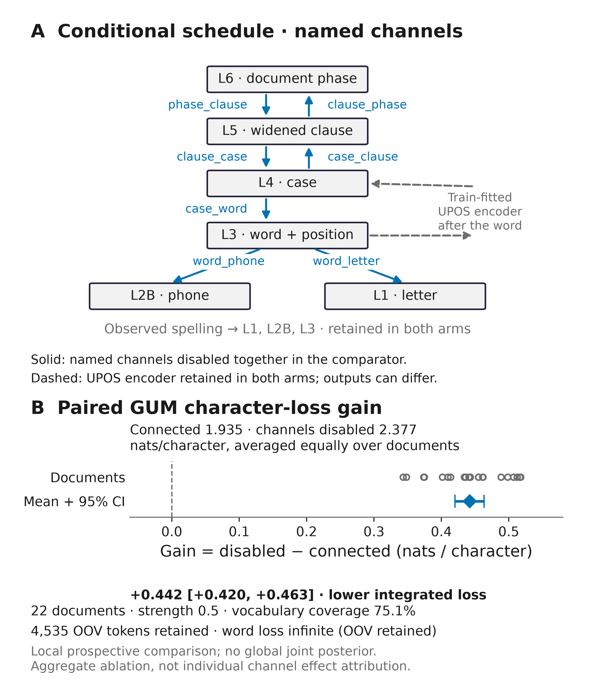
5.2 Historical component gate outcomes and their scoring routes
The six levels are built and have recorded gate outcomes; Stage 5
passes on the widened observation alphabet against a bar registered
before its artifact existed — a development-session specification with
no held-back replication available, because that partition was already
spent (sec. 5.7.3) — while the
case-only clause model it displaced is retained as a non-passing
ablation with an unresolved privileged-label gain. Stage 6’s primary
document-clustered analysis spans zero on the development population and
excludes zero on the held-back one, at the coverage the development
analysis uses and not at the family-corrected one. This section
consolidates the sequence-model measurements of the first two — the
letter level of sec. 4.3 and the phoneme
level of sec. 4.4 — where the
perplexity ladder and the information budget live. Both are pymdp
Agent instances whose learned sequence statistics live in
the transition matrix B; at Level 2 the emission
A is a learned letter-given-phone likelihood over
co-indexed pairs rather than the identity, so that level performs
inference rather than a state read-off. The later levels’ results,
generation, the cross-level channels and learning are reported below as
well, and their instruments are described where they are built: the word
and case levels in sec. 4.5 and sec. 4.6, the clause and narrative levels in
sec. 4.7 and sec. 4.8, and the cross-level channels in
sec. 4.10, with the historical significance
family judged against its declared corrected threshold in sec. 15.2. Quantitative figures and these tables
consume the same recorded claims, with source and provenance checks
intended to catch stale or inconsistent outputs. That shared source does
not substitute for checking the rendered artifacts.
Two conditions established in sec. 15.2 govern the historical paired comparisons summarized below, and neither is repeated at each individual result. The first condition is about the sampling unit. The historical paired tests are computed at a unit nested inside the unit its corpus samples — and each has been recomputed at that outer unit (sec. 4.11). By construction, this recomputation never changes the effect size itself; it only changes the interval around it, and the intervals move in both directions (tbl. 33): clustering widens some arms and tightens others. So the nesting is not a uniform penalty, and its direction could not have been signed without measuring it. The second condition is about the test family. That family was assembled retrospectively, on the population every gate in this project was revised against. So a test crossing the corrected threshold is a corrected-threshold survivor on the development population, not a confirmed effect on fresh data, except for the held-back rescoring of sec. 10.6. Neither condition moves an effect size; both instead bound what the accompanying inference means.
The tables below report the per-level comparators (tbl. 8, tbl. 10, and tbl. 11), restate each as a consolidated ladder, and add the information-budget accounting that sec. 4.2 depends on. A reader following the argument rather than the construction can read this section and sec. 4.2 alone.
The gate audit found that every declared threshold was defective as declared. Stage 1’s threshold sat beyond the information-theoretic ceiling of the distribution the model was fitted to. Stage 2’s sat below the trivial baseline, against an oracle that does not exist. The later-stage declarations failed through vacuity, a population-dependent double defect, or mis-scoping. Beyond these per-stage defects, the audit found two general lessons. First, a reproducible subsample is not a representative one. Second, a context-free comparator, though necessary, is not sufficient. Stage 1’s ceiling is stated under the training distribution. The population qualifier is not a hedge: the fitting distribution contains only about half the first-order information the declared target demands. The target exceeds that ceiling by a factor of 1.95, so no smoothing or implementation can supply the shortfall from the data the model was given. Nothing here, however, bounds the held-out passage’s own first-order optimum. The defects are worked through stage by stage below; the re-runnable audit script, the pre-build checklist, and the Level 3 mis-wiring catalog are set out in sec. 10.
5.3 Level 1: the letter bigram clears the restated unigram bar
5.3.1 The bigram agent beats the unigram bar
The agent runs the filtering recursion of eq. 6 over held-out prose, accumulating eq. 7. The uniform, unigram, mis-wired, and training-distribution references bracket it; each is necessary to read the result.
| Comparator | Perplexity | Uses the previous letter? |
|---|---|---|
| Uniform over the alphabet | 30 | no |
| Context-free unigram letter frequencies | 19.9558 | no |
Mis-wired variant: the bigram matrix in the emission
A |
27.2499 | inverted — yields the preceding symbol |
Bigram agent: the bigram matrix in the transition
B |
11.9215 | yes |
| Order-1 optimum on the training distribution, \(\exp H_{\text{train}}(X_t \mid X_{t-1})\) | 10.7506 | yes, optimally |
The agent beats the context-free unigram baseline by 8.0343 perplexity units, which is the gate. It does not beat the order-1 reference: 10.7506 is eq. 8 evaluated on the training counts, so it is where an optimal first-order model lands on the distribution it was fitted to rather than a bound on what any model scores on this passage (sec. 3). In nats the agent sits at 2.4783 against that reference’s 2.375 — above it, which is the ordinary direction for a held-out score measured against a training-set optimum.
That is 3.5755 bits per character, a value in the range expected for a deliberately low-order character model. It is not a replication of a published figure and must not be read against one: Shannon (1951) reports letter entropy falling as the conditioning context lengthens and estimates the long-context value through human prediction experiments, over a smaller alphabet than the one used here, so the longer-context estimates in that literature are measuring a different quantity. The letter ladder below states the alphabet, normalization and corpus differences that each move the number. fig. 14 arranges these comparators and the phoneme level’s on one axis; the gap from uniform to unigram there is the part available without using any context at all, which is why the gate is stated against the unigram rung.
compute_perplexity reports a number produced by
pymdp infer_states and
update_empirical_prior calls, one pair per character, not
by a shortcut around them. The value is cross-checked against the
closed-form numpy Markov chain in
src/ailm/verification/oracle.py to the tolerance pinned in
tests/test_stage1_gate.py, so the perplexity reflects
pymdp actually performing the inference — and a mis-wiring
shows up there as a disagreement of roughly the distance between the
mis-wired and correct rows of tbl. 8, which is a far louder signal than
either number alone.
5.3.2 Restated unigram gate and its controls
The level’s gate is the context-free unigram comparison, which is both reachable and diagnostic. A model can clear uniform while carrying no context whatsoever. Clearing the unigram rung is consistent with conditioning on the previous letter, but it does not prove that conditioning is happening: the bar is estimated on training counts and scored on a finite passage, so another context-free distribution can land below it through distribution shift alone. What carries the attribution is a separate context-destruction control. It takes the same trained conditionals and rotates them onto the wrong contexts; that rotated model scores 159.3667 against the unigram bar’s 19.9558 on the identical positions. So the gate’s margin does not survive destroying the context-to-conditional assignment, even while every individual conditional distribution is kept intact. The unigram rung and that control together test the thing the level claims to do.
The alternative wording of the gate — a gain of at least 2 nats over uniform — asks for more first-order information than the training distribution holds. The argument for this takes one pass over the counts. The gain a first-order model can realize on the distribution it is fitted to is at most the difference between the uniform entropy and the conditional entropy of eq. 8. On the Brown counts, that difference is 1.0262 nats, so the 2-nat target exceeds the level’s entire order-1 information budget by a factor of 1.95. The bar was calibrated for a model class this level does not implement. The shortfall is in the order of the model rather than in the code, so no implementation, tuning choice, or smoothing constant can reach it on that distribution. The held-out passage is a different population, though, and needs its own bound. eq. 21 supplies that bound: it caps the order-1 gain available across all 1323 positions this level is scored on at 1.6106 nats, including the fixed uniform-start prediction, and this bound is also short of the target. So the conclusion survives on both populations rather than being carried from one to the other. Against the training distribution’s 1.0262-nat budget, the agent realizes 0.9229 nats on held-out prose, or 89.9% of it — a failure under the 2-nat wording, and a result close to the training distribution’s first-order optimum. Measured against the bound on the passage it is actually scored on, the same realized gain is 57.3%. That is the same-population figure, and the one to quote where a same-population statement is wanted. The first percentage, by contrast, crosses populations — a held-out gain measured against a training-set budget — and it is reported as a descriptive ratio for exactly that reason, not as a bound the agent is proved to respect. fig. 25 draws both readings on the same nat axis. sec. 4.2 treats this as the worked example of a threshold beyond its measured ceiling, and states why the wording must not be inherited by a later stage.
5.3.3 Letter perplexity from uniform to the empirical first-order optimum
This table restates Level 1’s comparators as a single ladder, from a model using no context at all up to the best any first-order model can do.
| Comparator | Perplexity | Uses the previous symbol? |
|---|---|---|
| Uniform over the letter alphabet | 30 | no |
| Context-free unigram letter frequencies | 19.9558 | no |
Mis-wired variant: bigram matrix in the emission A |
27.2499 | inverted — yields the preceding symbol |
Bigram agent (A identity, B
learned) |
11.9215 | yes |
| Empirical order-1 optimum | 10.7506 | yes, optimally |
fig. 14 plots tbl. 9 alongside its Level 2 counterpart on a shared axis, which is where the structural similarity between the two levels is easiest to read: in both cases the model sits close to the empirical order-1 optimum and far from uniform, and the interval between unigram and optimum — not the interval between uniform and model — is the space in which a bigram model can distinguish itself.
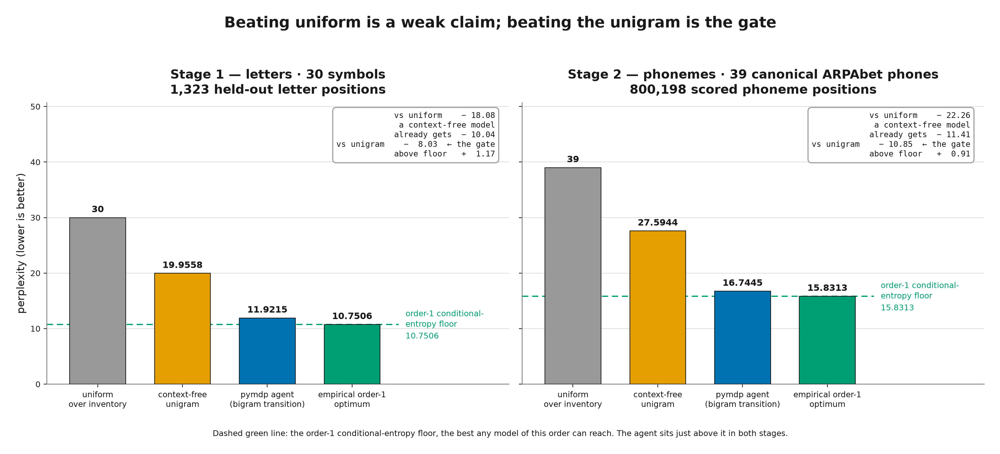
3.5755 bits per character sits in the range of published estimates of
English letter entropy at low context order. Shannon (1951) measures that entropy dropping as
the conditioning context lengthens, and later bounded estimates place
fully contextual English well below any order-1 figure (Cover and King
1978; Brown et
al. 1992); the value here belongs to the shallow end of that
progression, which is where an order-1 model should land. This is a
consistency check, not a replication, and it is worth being precise
about why it cannot be one. The alphabet here adds space, period,
apostrophe, and hyphen to the 26 letters, so uniform over it is 30
rather than Shannon’s 27; the normalization collapses whitespace runs
and strips spaces before . and '; the training
corpus is Brown (Francis and Kučera
1979; Bird et al.
2009) and the evaluation is held-out prose. Any of those
choices moves the number, so the agreement establishes that nothing is
badly wrong rather than that a published figure has been reproduced.
5.4 Level 2: filtering beats the context-free bar, by a thin decoding margin
5.4.1 Part A: the phoneme sequence model beats its context-free bar
This table reports the phoneme sequence model’s in-sample comparators against uniform, unigram, and the order-1 optimum, on the full dictionary.
| Comparator | Perplexity | Uses the previous phone? |
|---|---|---|
| Uniform over the 39 phones | 39 | no |
| Context-free unigram phone frequencies | 27.5944 | no |
| Phoneme bigram agent | 16.7445 | yes |
| Exact all-position order-1 optimum | 15.8313 | yes, optimally |
The same reachability argument as Level 1 applies with less room. The total gain available over uniform at this level is 0.9016 nats on the exact all-position population (and 0.9744 nats under the more optimistic transitions-only relaxation), both below Level 1’s inherited 2-nat threshold, so that wording is unreachable here before a line of code is written. fig. 14 shows both levels’ rungs together.
5.4.2 Family-disjoint evaluation and lexical overlap
The shared-prefix bound is also measured from the inside rather than
only stated. A family-disjoint arm assigns whole 4-character prefix
families to one side of the split, using the same seedless stride
construction lifted one level up: every fifth sorted family is held out.
As a result, no held-out word of length 4 or more shares its 4-character
prefix with any training word (0% shared, by construction, against the
interleave’s 82.5%). Re-fitting the identical decoder and the identical
context-free lookup on the disjoint train side gives 70.515% against
70.128% over 43,107 positions — a margin of 0.387 points beside the
interleave’s 0.546, with discordant counts 1387 against 1220 and exact
McNemar p = 0.001145. This is an exploratory robustness arm:
its direction was prospectively specified within the development
session, but its p-value stays outside the frozen significance family,
so it is a bound rather than a second significance claim. Read as a
bound, it cuts both ways. Morphological-neighbor transfer accounts for
part of the interleave margin, but most of the margin survives with the
neighbors removed, so the left-context mechanism is not an artifact of
catalog teaching catalogs. The disjoint
assignment has its own recorded price, though: holding out whole
alphabetical families moves the initial-letter total variation to
0.03458, well above the interleave’s 0.00085. That is why this arm
bounds the shipped result rather than replacing it.
The bound is itself partitioned. The same disjoint held-out set can
be grouped by morphological family — the identical four-character family
key the split assigns sides with — and each family can then be scored
against the same context-free bar with the same paired test. Doing so
asks whether the disjoint margin is a level-wide property or the average
of unlike parts. The answer, prospectively specified within the
development session in the arm’s decision stub, is that it is not
level-wide. Across the 2422 held-out families, 241 carry at least 40
scored positions, and only 104 of them show a positive margin — a share
of 0.4315, against the stub’s registered bar of more than one half. The
pooled disjoint margin of 0.387 points is therefore a majority-null
average, not a property most families carry. The largest evaluated
family, cons, scores 72.529% against 73.042% over 779
positions (margin -0.513 points, exact p = 0.3438). By
contrast, the amer family’s margin is -16.201 points over 179 positions.
This measured heterogeneity is real rather than an artifact of the
scoring, for two reasons. First, position-weighted, the per-family
scores reproduce the disjoint arm exactly (70.515% over 43,107
positions, the prospectively specified positive control). Second, a
deterministic reversal control — reversed pooled correctness vectors
paired with the same family sizes — reaches a largest per-family margin
of only 66.667 points, against the real assignment’s 100. Read together
with the disjoint bound above, the family partition sharpens it: the
surviving margin is concentrated in a minority of families, which is one
more reason the length-matched subset is not English and accuracy
figures on it do not transfer. Per-family p-values are diagnostics of a
diagnostic arm and join no significance family; this partition reports
the shape of the margin across the dictionary, not a new significance
claim.
5.4.3 Forward filtering beats the context-free baseline
This table compares the context-free lookup, the filtering decoder, and the whole-word smoothing and Viterbi references on the same held-out positions.
| Decoder | Position accuracy (%) | Context used |
|---|---|---|
| Context-free per-letter \(\operatorname*{arg\,max}_p\, p(\text{phone} \mid \text{letter})\) | 70.255 | none |
Full-set NumPy forward filtering, after a bounded
pymdp check with 0 decision disagreements |
70.801 | left only |
| Forward-backward smoothing | 75.642 | whole word |
| Viterbi maximum-a-posteriori path | 75.306 | whole word |
On a length-matched subset the co-indexed letter alone is nearly
sufficient, which is precisely why the context-free baseline is already
strong and why the headroom for context is thin. Filtering captures part
of that headroom and no more, because infer_states
conditions on observations up to the current position and never revisits
them. Smoothing and Viterbi see the whole word and gain several points,
as tbl. 11 records. Reporting a
smoothed figure would flatter the gate while describing a different
whole-word computation. The canonical full-set filtering statistic is
evaluated by the NumPy oracle only after a bounded live-pymdp comparison
finds 0 decision disagreements; no shipped Level 3 path consumes Level
2’s posterior. fig. 15 plots the
baseline, the filtering decoder and the smoothing reference, and the
baseline and the filtering agent are visually indistinguishable at full
scale — which is the honest picture of a 0.546-point margin and the
reason the next subsection exists.
5.4.4 Decoding margin and the lookup comparator
Before the margin is read at all, the baseline comparison bounds what it can mean. A left-context lookup over the observed symbols, with 677 parameters, no latent state and no inference at decode time, scores 72.8188% on this same population against the shipped model’s 70.801%. It does not merely clear the declared bar; it beats the model by 2.0177 points, several times the margin this section is about. Clearing a context-free comparator therefore does not show that latent-state filtering is what produced the gain (sec. 10.1.6).
McNemar’s test conditions on the observed count of discordant pairs.
The discordant-pair interval constructed from it retains that
conditioning; it is not an unconditional interval for the difference in
marginal accuracies (McNemar 1947; Newcombe 1998). The margin is 0.546
accuracy points, and the gate does not rest it on a comparison of
aggregates. It compares the decoders in paired form instead:
decode_positions and baseline_positions line
them up position for position, and the test runs only on the positions
where the two disagree.
That test is the exact conditional form of McNemar’s test (McNemar 1947). Its statistic is the two-sided exact binomial of eq. 24, not the \(\chi^2\) approximation to it. Over 42,820 held-out positions there are 2524 discordant pairs: 1379 where only filtering is correct against 1145 where only the baseline is, p = 3.468e-06. The pairing is what carries that result: at 0.546 points the difference is too small for an independent-proportion approximation to bound, so the uncertainty has to be evaluated on the paired predictions rather than on two aggregates. sec. 4.11 gives the reason two aggregates cannot establish a margin this thin, derives the exact form, and carries the identical-predictors control that keeps the test itself falsifiable.
Significance here depends on using the whole held-out set.
_iter_pairs in src/ailm/levels/phoneme.py
takes an evenly spaced stride and never a prefix wherever the evaluation
has to be subsampled at all. The pair list is sorted alphabetically, so
a prefix is only the words beginning with the first few letters. Even
the unbiased stride is not enough here: over 13,224 positions it reaches
only p = 0.02881, orders of magnitude weaker than the full-set
result and short of the gate’s bar. fig. 28 plots both failure modes against the
full set and sec. 4.2 generalizes
them.
Shrinking the evaluation is therefore not an option, and a full-set
pymdp pass is tens of thousands of
infer_states calls.
scripts/record_stage2_claims.py computes the full-set
statistics with the implementation-independent NumPy reference decoder
(the oracle) instead. Reading those figures as properties of the
pymdp agent is licensed by the 0-disagreement result of
eq. 16, which sec. 4.11 states, measures, and enforces at
record time.
5.4.5 Learning an unobserved emission does not improve decoding
Decision 29 tested a different question from the supervised gate
above: whether pymdp’s Dirichlet observation-likelihood
learning could recover a useful letter-to-phone emission when the phone
states were deliberately unobserved. The target is the
same co-indexed relation the gate uses, so the experiment inherits the
alignment stipulation and cannot escape it by learning. The lane trained
on 1621 pairs and evaluated 42,820 positions, using an evenly spaced
stride of 16 for the recorded experiment. The fixed comparator is the
recorded add-1 count emission from the same lane, not a full-corpus
count.
| Decoder or control | Held-out position accuracy (%) |
|---|---|
| Latent-state emission learning | 12.487156 |
| Same-lane fixed count emission | 70.733302 |
| Observed-state P4 gold-lane control | 70.733302 |
The learned emission moved by 0.198777 in its largest entry, but its
decoding accuracy did not merely fail to improve on the fixed control:
it collapsed, from 70.733302 to 12.487156. The observed-state control
recovered the same-lane count emission to a maximum absolute difference
of 0, and the independent oracle and pymdp decoders
disagreed on 0 positions. The result is therefore NO IMPROVEMENT
/ QUALIFIED: this experiment demonstrates that the learning
path is active and that its observed-state control is correct, not that
unobserved-phone learning recovers the co-indexed emission — and
certainly not grapheme-to-phoneme conversion, which no lane at this
level attempts. The result is recorded under decision 29 and its
limitations are carried into sec. 6.1.
5.4.6 Either the emission or the transition can carry the placement error
Level 2 has a learned emission and a learned transition, so either slot can carry the placement error stated as a proposition in sec. 4.1. The obvious signature of a mis-wiring is that accuracy drops below the context-free bar: a filtering decode that cannot beat a lookup table is broken, not merely weak. A time-reversed transition and an information-free uniform emission were both caught that way.
The third mis-wiring was not. An emission normalized over phones
instead of letters, then renormalized so that pymdp still
validates it, cleared the context-free bar while being wrong. Beating
the baseline is therefore necessary and not sufficient. The following
guards actually pin the emission down: first, the column-sum invariant
on A before any renormalization; second, numerical
agreement with the closed-form oracle. Both are asserted in
tests/test_stage2_gate.py and
tests/test_phoneme.py; sec. 4.11 describes why the second one is the
instrument the whole project now depends on.
5.4.7 Phoneme and letter-to-phone comparison ladders
Part A is the phoneme sequence model, the Level 1 construction one level down over the 39 canonical ARPAbet phones.
| Comparator | Perplexity |
|---|---|
| Uniform over 39 phones | 39 |
| Context-free unigram phone frequencies | 27.5944 |
| Phoneme bigram agent | 16.7445 |
| Exact all-position order-1 optimum | 15.8313 |
The exact all-position gain available over uniform at this level is
0.9016 nats, below the inherited Level 1 threshold of 2 nats, so that
wording is unreachable here too, and for the same reason. The per-word
prior reset matters and is a modeling decision rather than a
convenience: position zero of a word has no predecessor and is therefore
paid for under the unigram prior D, which is the honest
language-model accounting.
Part B is equal-length position-aligned letter-to-phone decoding — the first level whose emission is not the identity, so the posterior is an inference rather than a read-off. It is not grapheme-to-phoneme conversion, and a non-identity emission is not a message between levels (sec. 4.4, sec. 4.1). Letters are observed and phones inferred through a learned emission.
| Method | Position accuracy | Context used |
|---|---|---|
| Context-free per-letter \(\arg\max_p P(\text{phone } p \mid \text{letter } l)\) | 70.255% | none |
| Full-set NumPy forward filtering after a bounded pymdp check with 0 decision disagreements | 70.801% | left context only |
| Forward–backward smoothing reference | 75.642% | whole word |
| Viterbi maximum a posteriori (MAP) path | 75.306% | whole word |
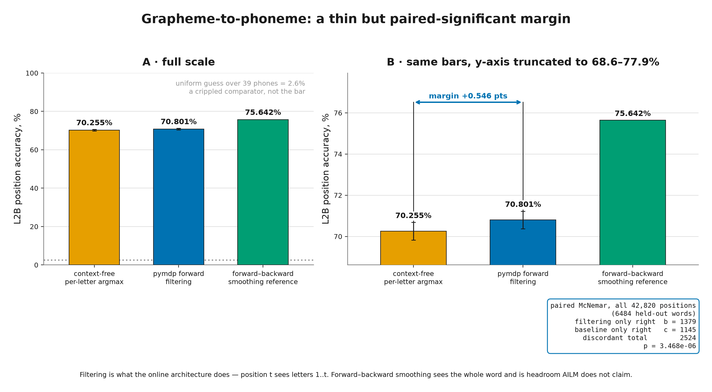
The margin in tbl. 13 is thin by construction, not by accident. The length-matched training subset is biased toward transparent orthography, where the letter alone is nearly sufficient, so the context-free baseline is already strong and the headroom for context is small; sec. 4.4 prices that subset and states what it costs in generality. Forward filtering captures part of that headroom and nothing more. Both facts — the thin margin and its cause — are load-bearing for sec. 6.1.
5.5 Level 3: the letter-bigram bar admits a wrong word prior
The level relocates where the learned content sits — both transitions
are structural constants and the single learned quantity is the prior
over word identity — so the mis-wiring risk moves with it, and the
accuracy bar does not catch a wrong prior; the recorded catalog makes
that case in sec. 10.1.4. The closed form
stays exact at any vocabulary size, the gate stays bracketed at every
rung of the lexicon-scaling ladder, and the dense pymdp
transition stops fitting in memory far below the closed form’s reach.
The mis-wiring figure, the scaling ladder with its two cautions, and the
run-versus-measure boundary are set out in sec. 10.
5.6 Level 4: the declared gate fails against both populations at once
5.6.1 The declared gate fails in opposite directions on each population
Level 4’s declared gate fails against both populations at once, in opposite directions. fig. 16 puts the two side by side; sec. 10.1.5 works through why one threshold can be simultaneously vacuous and above-reference.
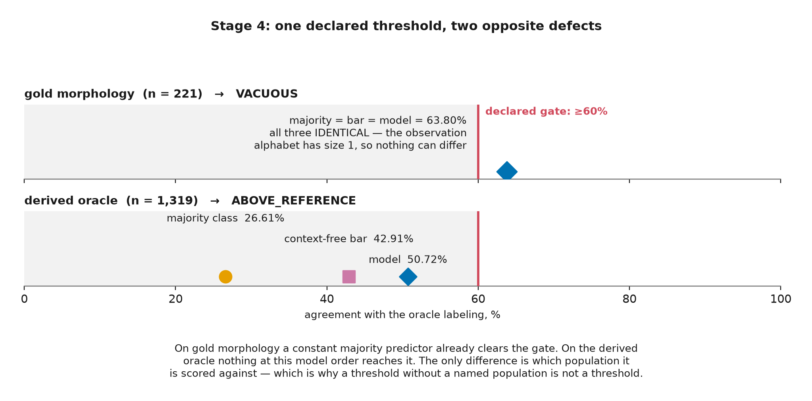
5.6.2 The gold population cannot carry a gate
After the raw document split, the gold population holds 221 tokens in 76 sequences from 28 contributing documents. On every one of them the case-transition model and the context-free baseline make identical predictions: the paired test finds 0 positions where only the model is right and 0 where only the baseline is. Model, baseline, forward-backward smoothing, Viterbi and a majority-class constant all score 63.8%.
Every gold-morphology token in the vendored EWT split is a pronoun, so the gold observation alphabet has size 1. A constant observation carries no state information through the emission. It does not, however, erase the learned transition: filtering still evolves the prior through that transition, and a one-tag population with alternating case dynamics can make the sequence decoder disagree with a context-free predictor. The identical predictions in the committed split are therefore an empirical null of its fitted transition, start prior, and held-out sequence labels, not a structural theorem or an impossibility result. Reported rather than omitted, it shows that this English gold arm does not support the shipped gate; an independent population could produce a different paired outcome.
Stage 4’s gate is therefore stated over the derived population only, and the gold-population result is reported as the null it is. sec. 10.1.5 takes up what happens to the declared threshold when it meets both populations at once.
5.6.3 Derived case agreement by stratum
Stating the gate over the derived population buys all 8 roles at the
cost of a labeling this project has not validated. That cost has a
shape, and the shape is measurable, because the oracle assigns each
label by paths applied in strict precedence: morphological
feats[Case] where the corpus marks it, then a deterministic
dependency-relation map, then the ADP token’s own lemma. The final route
labels that token and never transfers the role to its head. The paths
are recomputed from the treebank purely to partition the evaluation and
never reach the model, which observes the UPOS tag and nothing else.
Partitioned that way (tbl. 14), the derived margin of 7.81 points is not a property of the level. It is a property of one stratum. A second bound sits beside that one: a 65-parameter lookup over the observed tags scores 55.4208% against this level’s 50.72%, so the margin is bounded both by where it lives and by what a table already achieves without any latent state (sec. 10.1.6).
The agreement itself is computed by a NumPy forward filter, and the
live Agent’s infer_states /
update_empirical_prior recursion is compared with that
filter over the entire held-out split rather than a prefix: across all
229 test sentences (1319 positions) the two agree on the case-role
posterior argmax with 0 disagreements, and the largest absolute
deviation between the two posteriors at any position is 1.25e-07. The
recorder refuses to write if either statistic moves, so the attribution
of the reported agreement to the pymdp Agent is exhaustive over the
scored population while the headline path remains the NumPy filter
(sec. 4.11, fig. 18).
| oracle path | tokens | baseline | model | margin | discordant | p |
|---|---|---|---|---|---|---|
| dependency relation | 704 | 36.65% | 52.84% | 16.19 | 192 | 3.688e-17 |
| morphology (control) | 296 | 64.53% | 65.54% | 1.01 | 35 | 0.7359 |
| adposition token | 319 | 36.68% | 32.29% | -4.39 | 80 | 0.1456 |
The margin’s primary uncertainty analysis uses the source document, not the sentence or token, as the independent outer unit. The held-out derived arm has 229 sequences from 62 contributing documents; whole-document resampling preserves every nested sequence and position together. Its token-weighted point effect is 7.808946 percentage points, with a 0.95-coverage percentile cluster-bootstrap interval of [4.889581, 11.180282]. The largest document contributes 171 scored tokens, the estimated intracluster correlation is 0.028825, and the corresponding variance-inflation factor is 1.4666. A whole-document sign-flip sensitivity reaches the finite Monte Carlo floor 9.999e-05 under joint central symmetry of document-level effects; the bootstrap interval is the primary statement. The familiar tokenwise McNemar result (p = 4.213e-09, in the caption of tbl. 14) is secondary and conditional on treating nested positions as independent.
The reading is not that the model cheated. It never observes the field the label is derived from, and sec. 4.11 reports what a predictor that is allowed that field scores. The correct reading is narrower: on the dependency-relation stratum, “case” is a deterministic renaming of a syntactic relation, and a first-order model over part-of-speech tags is good at recovering syntactic relations. What that stratum demonstrates, in other words, is a result about word order wearing case’s name.
The morphology stratum is where the claim could be tested against real English case marking, and it is registered as a control rather than a result. Its 35 discordant pairs sit far below the minimum this project requires to resolve an equivalence (sec. 15.2). So its outcome is printed in tbl. 14 but not read as a verdict, and it must never be read as absent. The token-level adposition stratum’s negative margin is likewise unresolved, at 80 pairs. What it does establish is that the aggregate is pooling strata whose signs disagree.
One objection deserves answering rather than deflecting: the morphology stratum starts from a much higher baseline, so it has less room to improve, and a small margin there could be a ceiling effect rather than a provenance effect. It is not, or not only. Expressed as the percentage of available headroom each stratum captures, the dependency-relation path takes 25.56% and the morphology path 2.85%. The gap narrows under that normalization and does not close.
There is a stronger statement available, and it is structural rather than statistical. The observation is the UPOS tag, so a margin requires the tag to carry information about the label. Within each stratum it either does or it cannot (tbl. 15):
| oracle path | UPOS alphabet | \(H(\text{case})\) | \(I(\text{case};\text{UPOS})\) |
|---|---|---|---|
| dependency relation | 9 | 1.443603 | 0.092571 |
| morphology | 1 | 0.892573 | 0 |
| adposition token | 1 | 1.441481 | 0 |
This is the same degeneracy sec. 5.6.2 reports for the gold population, where the alphabet is likewise 1 and every predictor scores alike. It was not known to recur inside the derived population, because nothing had partitioned it. So the reading of tbl. 14 sharpens: Level 4’s margin does not merely happen to live on the dependency-relation path, it can only live there. On the other two the emission is uninformative by construction, and whatever those strata show is attributable to the case-to-case transition alone, never to what the model observed.
None of this withdraws a recorded number. The aggregate is correct arithmetic and tbl. 22 keeps its verdict. What changes is what the number licenses: a reader can now see where the effect lives rather than accept on trust that agreement with an unvalidated heuristic is not accuracy.
5.6.4 Scored against real case morphology, which English EWT cannot supply
Everything above shares one ceiling: English EWT cannot say whether
the sequence mechanism works on real case, because its gold morphology
lives on a one-symbol observation alphabet and its derived margin lives
in the stratum a dependency rule labeled. The question that remains —
does the margin survive when the labels are ground truth? — was
answerable only on a language that marks case morphologically on
nominals. Its population, comparator, endpoint, and refusal rules were
prospectively specified within the same development session before the
sequence-model score, after feasibility and development-set inspection
(docs/decisions.md entry 77). That specification was not
independently timestamped in an immutable prior artifact, so it is not a
preregistration. The result is exploratory: the
project’s confirmatory family was frozen before this arm existed,
neither of its p-values joins that family, and nothing here rescues or
retires an English number.
The corpus is the Universal Dependencies conversion of the Prague
Dependency Treebank – Consolidated (UD Czech-PDTC). Scored tokens are
the case-inflecting nominal categories (6 UPOS tags) carrying UD
feats[Case]; every label is morphology (100% of scored
tokens, enforced by a recorder refusal — the coverage English gold never
had), spanning 7 of the 8 roles (Czech has no ablative). ADP is excluded
although Czech annotates Case= on prepositions: there the
feature records government — the case of the complement, not
inflection of the token — which is the analogue of the English
token-level adposition path whose margin reversed in tbl. 14. The vendored artifact retains UPOS
and Case per token plus each retained sequence’s
authenticated # newdoc id index; the fields the English
trap turns on never enter the file. The train-ft shard (11,267 tokens)
fits the same builders the English arm uses — the modules are shared,
not forked — and the dev shard (169,331 tokens in 20,349 retained
sequences nested within 1005 contributing documents) is scored held-out,
against the same context-free argmax P(case | UPOS)
comparator fitted on the same training tokens. Because the labels are
ground truth, the endpoint is accuracy — the word every English
number in this section is named to avoid.
The prospectively specified question resolves in the surviving direction. The sequence model reaches 39.21% against the comparator’s 32.36%. The primary uncertainty analysis preserves the token-weighted effect but treats each authenticated source document as one independent outer cluster: 6.847535 percentage points over 169,331 tokens in 1005 documents. Its 95% percentile cluster-bootstrap interval is [6.430598, 7.260224]. A whole-document sign-flip sensitivity analysis with 10,000 draws and deterministic seed 20,260,811 reaches its declared Monte Carlo resolution floor at 9.999e-05; it is reported as \(p \leq 9.999e-05\) conditional on joint central symmetry of whole-document differences, an assumption stronger than marginally fair token discordances or zero expected document sum. The interval therefore bounds the positive effect away from zero at the document sampling unit; the finite randomization statement is a resolution bound, not a claim that a probability is zero.
The token-level analysis is secondary and conditional on treating positions as independent despite their nesting within sequences and documents. It reports a 6.85-point margin over 169,331 positions, with McNemar \(b=23,692\) against \(c=12,097\) (35,789 discordant pairs, against the 420-pair resolvability minimum). Its exact two-sided p-value underflows a double and is therefore reported through the finite log-tail, \(\log_{10}p=-832.4\). This much smaller conditional tail does not replace the cluster-primary interval or randomization result.
The displayed comparisons locate the margin. Below: the majority
class scores 29.05%, so the comparator is doing real work before the
model improves on it. Above: a context-free predictor fitted on the
test labels themselves — the best any member of the comparator
class can do — reaches 35.97%, and the model sits above that too. The
margin is therefore not a better lookup; no lookup on this observation
reaches it, and what remains is the case-to-case transition. That is the
mechanism this level always claimed, shown against labels no heuristic
generated. The mis-wiring controls transfer: a cyclically deranged
emission or transition falls below the context-free baseline
(tests/test_czech_case.py).
The honest boundary of the finding is the observation’s poverty, and
it is measured rather than lamented. The mutual information is \(I(\text{case};\text{UPOS})\) = 0.0748 nats,
against a label entropy of 1.6145. So 39.21% is nowhere near what a
model observing word forms would reach: Czech case is largely
written on the word, and a UPOS tag discards the suffix. The
claim this arm supports is correspondingly narrow — the transition
structure of case sequences carries real information beyond the tag, on
ground truth — and it carries two costs the development-session
specification declared. First, Level 4 becomes the stack’s only
non-English level, so no inter-level channel can cross into this arm.
Second, the inventory mapping (UD Case=Ins → INS) remains a
research claim even though the labels themselves are morphology.
5.7 Level 5: case-only ablation and widened-alphabet development result
This level was measured twice, on two observation alphabets, and both
results are reported here. The canonical clause level
observes the case role plus one distinguished symbol each for
VERB and AUX; its gate was registered before
its artifact existed and it clears that gate (sec. 5.7.3). The clause model that observes
case roles alone is retained as an ablation, and
everything between here and sec. 5.7.3
describes it: its gate does not pass, its privileged-label gain does not
resolve, and the held-back rescoring of its classification contrast
yielded no discordant pair. Its failure is what motivated widening the
alphabet in the first place, which is why it is kept in full rather than
replaced. Both arms carry limits that are stated with their verdicts
rather than deferred.
5.7.1 The ablation’s declared gate is vacuous, since free energy rises with length under any model
The declared Stage 5 gate —
free energy tracks clause length — is VACUOUS as stated,
and the audit shows it executably: cumulative free energy is monotone in
length under any model, because every step adds non-negative
surprise. A uniform-random model — the trivial baseline that must fail a
bracketed gate — satisfies it exactly. The declared wording also names a
quantity the level does not have: what the model consumes is one
sentence’s case-role sequence, so the only length available to it is
that sentence’s. This is another shipped declared gate to fail its
audit, and a distinct failure mode in the gate taxonomy (sec. 4.2).
5.7.2 On the case-only ablation, neither the mixture nor the privileged label beats the type-free chain
Stated at the resolution this design supports: the fitted mixture does not beat the type-free case-role chain on this document-disjoint EWT split. Supplying the privileged punctuation-defined type label also gives a negative point gain, but a paired whole-document bootstrap does not resolve its direction. No equivalence margin was declared, so these data do not license calling the gain absent or negligible.
The derived gate is the honest one: beat the type-free case bigram — the strongest model that does not use sentence type, decision 2 applied to the new variable — on the identical held-out positions. The gate is ABOVE_REFERENCE: the bar fails the strict criterion definitionally, and the measured fitted type-label reference also fails to clear it. The comparator is privileged but exceedable, not a bound, so this verdict does not say that no better model can pass. The case-only mixture fails as well. This arm is therefore a non-passing above-reference gate whose privileged-label gain remains unresolved, not a metric pass, an impossibility result, or an equivalence result. Read together with sec. 5.7.3, it is also the direct evidence that the bar is reachable and the alphabet was the binding constraint.
Over 1072 held-out positions, the type-free bar scores 4.3741; the mixture scores 4.3858 — worse. With 99 interrogative training sentences, that pattern is consistent with limited-sample estimation variance, but this single fitted split does not distinguish variance from smoothing, misspecification, or distribution shift. The decisive row is the privileged type-label reference: scoring every sentence under the fitted chain selected by its privileged reference label scores 4.3819, a signed perplexity reduction of -0.178%; the negative sign means the fitted privileged reference is worse than the type-free bar. This is a receiver-sensitivity reference, not a hard information bound: under misspecification a mixture can assign more probability than the label-selected component. On the paired log-evidence scale, the reference-minus-type-free point estimate is -0.010698 nats per sentence, with a 99% percentile interval of [-0.034233, 0.008941] over 10,000 whole-document resamples of 53 contributing test documents at fixed seed 20,260,804; that interval spans zero. The companion ratio of resampled gain to resampled positions is -0.001776 nats per position, interval [-0.006209, 0.001417], which spans zero. The latter point estimate is exactly the log-ratio corresponding to the position-weighted perplexity comparison above. Both arms use the same sampled document indices; all sentences and positions within a selected document move together. The gain is therefore unresolved on both reported scales at this order and in this sample. MAP classification reaches 88.2% accuracy on the held-out sentences, below the 88.76% majority baseline, and a length-only classifier merely reproduces that baseline (88.76%). Recall on the minority class says it more sharply: of the held-out interrogatives, MAP classification recovers 0%. The document-primary paired accuracy difference is -0.5618 percentage points, with a 99% whole-document-bootstrap interval of [-2.7779, 0] over 53 documents, computed from 10,000 whole-document resamples at fixed seed 20,260,804; the largest of those clusters carries 21 sentences. The interval is read at the same declared confidence level as the paired-gain intervals above — one declared level that both intervals state by construction — and its upper endpoint is zero, so it supplies no positive classification claim: p = 1 against the recorded display floor 9.999e-05. The historical sentencewise McNemar contrast remains a conditional secondary analysis. The mixture posterior’s point area under the curve (AUC) of the receiver operating characteristic (ROC) is 0.6483, with a 99% interval of [0.5026, 0.7724] bootstrapped over test documents (53 contributing clusters, with all sentences moving together). It excludes chance on that rank scale, but it does not select a decision threshold or establish calibrated probabilities.
A rank statistic of 0.6483 sitting beside 0% minority recall looks contradictory only if AUC is read as a claim about decisions or about probabilities, and it is neither. Average precision and Brier score, measured on the same posteriors, say what AUC leaves out; each is reported against the reference that makes them interpretable. Average precision is 0.1552 against a positive-class prevalence of 11.24% — its chance level is that prevalence rather than one half. Brier score (Brier 1950), a strictly proper rule (Gneiting and Raftery 2007), is 0.1018 against 0.0998 for the constant predictor that always emits the 11.7% training prevalence: a skill of -0.0201. The negative skill means the fitted posterior is worse than that constant under this proper score. That is the recorded point skill; no action-utility threshold or equivalence margin was specified. The reference prevalence is taken from the training split so that the baseline never sees a test label.
Strict propriety is worth stating precisely, because it licenses less than it appears to. It means a forecaster minimizes expected score by reporting its true beliefs; it does not mean a score improvement is attributable to calibration. The Brier score decomposes into reliability, resolution and uncertainty, so a lower value can come from sharper discrimination as readily as from better-calibrated probabilities, and this measurement does not separate the two.
Together these give one consistent but qualified description: the model’s AUC and average-precision point estimates exceed their rank references, while its Brier score and default maximum-a-posteriori accuracy are worse than their references and the mixture does not clear its type-free gate. The paired privileged-label gain is unresolved. That last qualification is not decorative. An AUC of 0.6483 is ranking information, and information a threshold could in principle exploit — a cost-asymmetric rule trading precision for minority recall is not ruled out by anything measured here. What is reported is a non-passing result for the decision rule this project actually applies, not for every rule that could be applied. The perplexity ladder and paired log-evidence interval answer related but distinct questions and agree only on the weaker conclusion: no gain is resolved on this split.
What makes this a finding rather than a shrug is the detectability control. On a synthetic corpus whose two types genuinely differ, the identical harness classifies at 99.5% against a 50% majority and drops mixture perplexity from 4.0661 to 3.4556. That is a design argument and not an observed-power one: the control plants a known effect and shows the instrument recovers it, whereas computing power from the very statistic that failed to reject is a transformation of the p-value and says nothing new (Hoenig and Heisey 2001). Read that way, the control rules out a generically dead instrument; it does not turn the unresolved EWT result into a property of English. The control’s own operating point differs from the measurement’s — it is balanced and larger — so it bounds the instrument’s capability, not the sensitivity available at 99 minority training sentences and 20 test ones. At the operating point that produced the failure, uncertainty is reported on the axes that were actually intervalled: the AUC interval above, the paired oracle-gain intervals reported here, and the exact conditional bound on the default MAP classification contrast in tbl. 37. The latter produced too few discordant pairs to support equivalence, and the oracle-gain intervals were not evaluated against any smallest effect of interest. The machinery ships — spec-built and bit-identical, with the closed form agreeing with a manual walk over the Agent’s stored arrays to 1.0658141036401503e-14 — but the shipped mixture does not clear the type-free bar and the default MAP rule does not improve on its majority reference. What the synthetic control establishes is that the same machinery recovers a much larger designed signal; it does not establish that the real effect is exactly zero. This arm therefore reports a failed gate, paired uncertainty on the privileged-label gain, and a bound on its classification contrast—not absence, negligible value, or an equivalence result (sec. 4.10 returns to what this outcome does to the inter-level criterion). fig. 17 plots this arm’s non-passing point result and interval beside the detectability control.
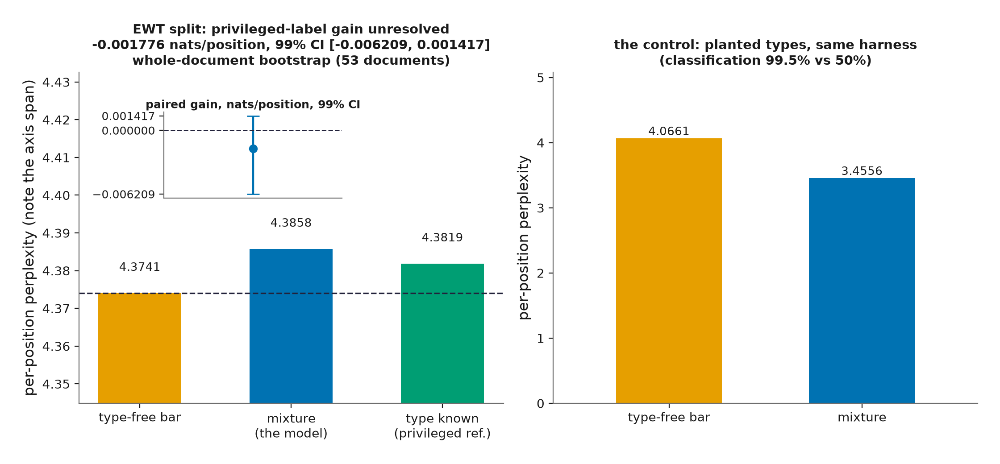
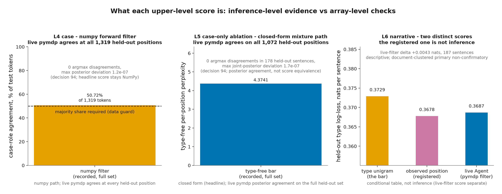
infer_states +
update_empirical_prior agree with it at every one of the
1319 held-out positions (0 argmax disagreements, largest posterior
deviation 1.25e-07), so the attribution is exhaustive over the scored
population while the headline path stays NumPy. Middle: the closed-form
mixture path of the retained case-only Stage 5 ablation, drawn at its
type-free bar of 4.3741; the live pymdp agent agrees with the NumPy
joint filter on the type-posterior argmax at 0 disagreements over all
178 held-out sentences and on the full joint posterior within 1.67e-07 —
posterior agreement on the whole held-out set, not score equivalence for
the headline mixture estimand. Right: the registered observed-position
score is a conditional table, not inference; the separately recorded
live-filter score (0.3687 nats, 0.0043 nats better than the unigram bar
over 187 sentences) is the only L6 quantity drawn through pymdp’s
inference path. Any of the following would falsify this panel: a
recorded L4 or L5 disagreement count other than the stated zero, an L4
comparison that stops short of the scored population, a live-filter
score inconsistent with its recorded improvement, the two L6 estimand
deltas collapsing onto one another, or the Stage 4 agreement leaving the
majority share its annotation requires.5.7.3 Canonical widened model: development-only gain over the type-free chain
This is the canonical clause level. On 205 held-out sentences from 64 source documents, spanning 1679 positions, the widened mixture beats the type-free bar refitted on the identical widened stream (tbl. 16). That is the registered gate and it is a measured outcome that could have failed.
Two limits belong with that verdict, and they are stated here once
rather than distributed through the section. First, this is a
development-session specification: the entry that
registered the alphabet, the population, the comparators, the controls,
the predictions and the falsifiers was committed before the artifact was
regenerated, but its registration and its outcome sit in one session, so
every label the arm produces is recorded descriptive and none may be
read as confirmatory. Second, it has no held-back
replication, and it can never acquire one. The held-back
ud_ewt_test partition was spent by the confirmatory run of
sec. 10.6; a sentinel refuses a second
pass from either side, and a second pass over a held-back set un-holds
it (a re-analysis of the spent population, as in sec. 5.8.2, is descriptive only). A
reader who wants the strongest available evidence about the clause level
should weigh a registered gate that could have failed against the
absence of an independent replication, and neither fact cancels the
other.
| quantity | value |
|---|---|
| type-free bar refitted on the widened stream | 4.7708 |
| mixture (the widened clause model) | 4.7449 |
| privileged type reference (true type given) | 4.6564 |
| privileged-label gain over the bar | 2.396% |
| paired gain, nats per sentence | 0.198647 |
| its 99% document interval | [0.024598, 0.358617] |
| paired gain, nats per position | 0.024254 |
| its interval | [0.003053, 0.046058] |
| entropy of the type variable | 0.361478 nats |
| share of that entropy realized | 54.95% |
| MAP classification vs majority | 93.66% vs 88.29% |
| interrogative recall | 58.33% |
| rank signal (AUC) | 0.8908 |
| its 99% document interval | [0.7341, 0.9767] |
| comparator: sentence length only | 0.5828 |
| comparator: first symbol is an auxiliary | 0.7543 |
| comparator: case-only arm, same sentences | 0.6201 |
| widened arm on those same sentences | 0.8908 |
The paired privileged-label gain is 0.198647 nats per sentence and its 99% whole-document interval excludes zero on both reported scales. This is the quantity the retained case-only ablation leaves unresolved, and on the widened stream its direction is resolved. It realizes 54.95% of the 0.361478 nats the binary type variable makes available. The widening does not raise that ceiling — the entropy is a property of the prior, not of the receiver — so what moved is the share realized within it.
The rank signal clears every registered comparator. It exceeds the length-only rule at 0.5828, whose classifier never beats the base rate at all, scoring 88.29% against the 88.29% majority. It exceeds the single first-symbol-is-an-auxiliary indicator at 0.7543, so the effect is not one free parameter wearing a sequence model’s clothes. And on the 205 sentences where both arms are defined, the widened arm scores 0.8908 against the case-only arm’s 0.6201: the two added symbols, not the refit, carry the difference.
Classification reaches 93.66% against the 88.29% majority, recovering 58.33% of held-out interrogatives where the case-only ablation recovers none. Its discordant counts are 14 and 3 at p = 0.012725830078125, uncorrected and outside the frozen family. The limit belongs beside that number: documents are the outer sampling unit, and the document-clustered margin of 5.3659 points has interval [0, 10.7695] across 55 clusters, whose lower bound touches zero. The classification contrast is therefore not resolved away from zero at document level, even though the paired gain and the rank interval both are. On the threshold-free scores the posteriors carry real information: average precision 0.7204 against the 11.71% prevalence, and Brier 0.0534 against the training-prevalence reference 0.1034, a skill score of 0.483.
The controls that stand behind those numbers each have the authority to stop the recording. The closed-form mixture and oracle filtering agree to 7.105427357601002e-15, and that agreement is not vacuous: a transition carrying mass across the type blocks drives the same comparison apart by 4.348005. Exchanging the two types’ fitted chains costs the classifier its margin, dropping it to 57.56%, so the type assignment is load-bearing. Finally, the identical harness on a synthetic corpus whose types genuinely differ classifies at 99.5% against its measured 50% majority, with mixture 4.6513 beating type-free 5.5835. That control establishes a live instrument for a large planted effect. It supplies no minimum detectable effect, though, and it is not evidence about small ones.
The population is stated with the result. The arm fits on 972 training sentences and scores 205 held-out ones, drawn from 318 source documents (254 training and 64 held out) and carrying 114 and 24 interrogatives respectively. 130 exclamative sentences and 571 unpunctuated fragments carry no label, and 123 fall under the usability minimum.
5.8 Level 6: development and held-back document-position results
5.8.1 Development estimate with a document-clustered interval spanning zero
The registered point estimate is positive. Its primary analysis spans zero on the development population and excludes zero on the held-back one.
The train split shows interrogatives concentrating in document openings: in this corpus, English web text opens with questions more often than it continues with them. The association is stated over EWT and no further. The preregistered direction was lower held-out mean log loss under the tercile-conditional table. Its point estimate is positive. Over 187 sentences in 27 held-out documents, the tercile-conditional model scores 0.3678 nats per sentence against the type-unigram bar’s 0.3729 — an improvement of 0.0051 nats, positive on 116 sentences against 71 (sign test p = 0.001232362495942883). This registered observed-position score indexes the fitted table by the known sentence position; it is not live pymdp filtering over the latent tercile. The audit classifies the gate BRACKETED_REFERENCE: the bar fails it definitionally, and the fitted-on-test reference clears it.
The document is the sampling unit. In the primary document-clustered analysis on the development population, the log-loss interval [-0.009563, 0.024959] spans zero and the p-value is 0.5469 under the assumption-conditional whole-document sign-flip sensitivity analysis (finite-sample exact only if the joint document-difference distribution is centrally symmetric). That result on that population is imprecise, and it is what the level’s status rested on until the estimand was carried to a population the models had never seen. The sentence sign count is secondary and non-diagnostic: reversing the phase columns makes mean log loss worse yet still yields a nominally favorable sentence sign test. A statistic that a worse control passes cannot confirm the registered mean-log-loss prediction, which is why the held-back sign test of decision 111 was not treated as settling the question below.
5.8.2 Held-back document-clustered gain at uncorrected coverage
Decision 115 registered the primary estimand on the held-back UD EWT test split before computing it, fixing the population, the bootstrap, the coverage, the seed and the prediction in a commit that precedes the outcome. The models are the frozen development fits, asserted equal array for array; nothing is refitted. Its status is descriptive, not confirmatory: the population had already been spent by the run of decision 111, so this estimand was registered by someone who knew that population’s other results (sec. 4.12.1).
Over 1090 sentences in 150 held-back documents the mean improvement is 0.008288 nats, and the document-clustered interval [0.002562, 0.014556] excludes zero at 95 percent coverage, the coverage the development analysis above uses. The improvement favors the tercile model in 98 documents against 52, and the sign-flip p-value is 0.0045. Together with the held-back sign test of decision 111, which crosses the frozen family threshold in the registered direction, this is what the gate audit reads to compute Level 6’s finding status; the status is a function of those recorded flags rather than a sentence anyone typed.
Three qualifications travel with that interval and none of them is optional.
First, the development-population interval still spans zero. The two populations disagree, and the honest description is that the estimand resolved on the larger held-back sample and did not on the smaller development one, not that the earlier result was wrong.
Second, the same held-back bootstrap read at the family-corrected coverage of 99.9375 percent gives [-0.001398, 0.019386], which spans zero. This arm is a registered singleton and not a member of the frozen significance family, so the corrected level is a declared sensitivity rather than its decision threshold. A reader who prefers the conservative reading should take the effect as unresolved at that level, and the recorded bounds are there to make that reading available rather than to be argued away.
Third, the population’s resolution is coarser than the effect the development population produced. The smallest constant per-sentence shift this arm can resolve is 0.005726 nats, measured by planting shifts on the centered differences and verified from both sides. The development population’s own clustered effect, 0.0051 nats, sits below that, and planting it here does not resolve ([-0.000626, 0.011369]). The held-back effect is detected because it is larger than the development one, not because this population is more sensitive. A null here would therefore have been uninterpretable, and the detection should not be read as evidence that the effect size generalizes.
The controls behave. Centering the differences to exactly zero mean gives [-0.005726, 0.006269], which does not detect, so no plant above it is detecting the centering. Reversing the sign of 80 whole documents under a recorded seed gives [-0.011465, 0.000634], which also does not detect, so the procedure does not find an effect in differences whose aggregate direction has been destroyed.
A separate descriptive run does use the live Agent’s filtering
recursion. It reports 0.3687 nats, an improvement of 0.0043 nats, with
sentence signs 105 to 82 (p = 0.10741108743413678). This is
evidence that the built Agent can run and produce a related positive
descriptive score; it is not the registered observed-position estimand
and does not replace the registered document-clustered primary analysis.
As a post-registered execution diagnostic, its p-value is outside the
frozen significance family, is uncorrected, and carries no
threshold-crossing inference. The attribution gap between the two
estimands is measured rather than merely named: on the same bounded
slice of 178 held-out sentences, the live Agent’s recursion scores
0.3798 nats against the registered observed-position score’s 0.3796 — a
divergence of 0.0002 nats — and the two estimands agree on the
per-sentence sign of the improvement on a 0.7978 share of sentences.
They index different conditionals by construction (a
B-carried latent-phase belief versus the known position),
so this is characterization, not equivalence.
Under the repository-wide multiplicity family of 16 declared tests
(sec. 15.2), the secondary sentence-sign
p-value is nominally positive at \(\alpha
=\) 0.01 and does not cross the fixed Bonferroni per-test
threshold of 0.000625; the recorded flag
stat_stage6_familywise_confirmed is false. Against its Holm
step-down threshold of 0.00111111 at the same familywise level the
recorded verdict stat_holm_stage6_rejected is false: the
test crosses neither the fixed Bonferroni threshold nor its Holm
step-down threshold, and a step-down verdict depends on where every
other member of the family fell (sec. 15.2). The threshold question remains
secondary because neither multiplicity correction repairs the wrong
sampling unit or the mismatch between sentence signs and mean log loss.
It is not confirmation.
5.8.3 The top-down prior intervention moves the case-only model’s type prior
sec. 4.9 implements an L3→L1g
C-preference seam. Stage 6 uses a different mechanism in a
separate experiment. The position prediction \(P(\text{type} \mid \text{tercile})\) blends
into that level’s D type prior — \(D'(\alpha) = (1-\alpha) \cdot P_{\text{L5}} +
\alpha
\cdot P(\text{type} \mid \text{tercile})\), re-formed into the
joint prior — and the guards below make the demonstration falsifiable
rather than decorative. The \(\alpha =
0\) anchor reproduces the sentence-type prior
byte-for-byte (the recorder refuses to run otherwise).
At \(\alpha = 1\) the opening-tercile
message moves P(interrogative) from the static 0.1179 by +0.0521, the
middle tercile by -0.0189. And the tercile-permuted scramble — the
entropy-preserving control — lands elsewhere (-0.01 at the opening), so
the effect depends on which tercile says what. This intervention is not
passed to L3 or L1g in the same run.
The retained case-only clause ablation supplies a privileged-label sensitivity reference, and it is the arm this intervention was measured against. The intervention demonstrably moves the sentence-type level’s type prior, while selecting the fitted case-only chain by its reference type changes case-role perplexity by -0.178% (a signed reduction; here negative). That small, unresolved value motivates expecting little delivered effect, but it is not a hard bound under model misspecification. Novelty and receiver sensitivity remain useful explanatory dimensions. The working hypothesis of sec. 4.10 therefore predicts a channel pays only when it is novel to the receiver and consequential for the receiver’s likelihood, and the document-position→sentence-type intervention is evidence about that distinction, not a proof of it. fig. 19 shows the intervention’s measured effect.
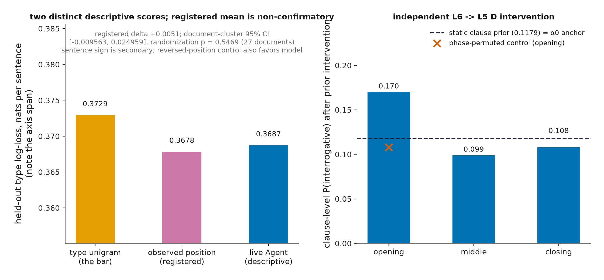
phase-conditional —
against the type-unigram bar over 187 sentences; the improvement of
0.0051 nats (secondary sentence sign p = 0.001232362495942883) has a
document-clustered interval of [-0.009563, 0.024959], so it is
non-confirmatory. Right: the independent prior intervention — the
sentence-type level’s P(interrogative) after the \(\alpha = 1\) message, per tercile, against
the dashed static prior that the \(\alpha =
0\) anchor reproduces exactly, with the scrambled-message control
(×) landing away from the real opening-tercile message. Bars hugging the
dashed line, or the × coinciding with the opening bar, would each
falsify the intervention demonstration, and the data function refuses to
draw in either case.5.9 Generation: the optimum is interior, and the distance metric could not be the gate
5.9.1 Interior optimum in the registered generation sweep
This table sweeps the generator’s policy precision and shows that both extremes generate badly, for opposite reasons, while an interior setting does not.
| Configuration | Membership | Distinct words | Distance |
|---|---|---|---|
| Baseline — ancestral sampling from \(\mathbf{B}\) | 13.33% | 325 | 0.9092 |
| \(\gamma\) = 0.1 — goal too weak | 54.75% | — | 0.6276 |
| \(\gamma\) = 0.55 — shipped | 100% | 180.7 | 0.3449 |
| \(\gamma\) = 16 — collapsed | 100% | 1 | 0.9071 |
tbl. 17 reports the sweep, and the shape is the result. As \(\gamma \to 0\) the policy posterior becomes the habit and the model is the baseline. At high precision, the policy follows the locally most preferred trie branch at each prefix, with the habit breaking ties. This greedy conditional path is not generally the globally most probable word; on the shipped Brown artifact its distinct-word count nevertheless collapses to 1. Neither endpoint is language.
5.9.1.1 Expected-free-energy contribution to letter generation
The generator selects actions by minimizing eq. 2, which is the one place in this project where the distinctively active-inference machinery runs at all: in the comprehension path every level has a single action and a flat \(\mathbf{C}\), so no policy is scored (sec. 3). It is therefore worth stating exactly what that machinery buys, and the answer is narrower than the framing suggests.
Proposition 4 (The information-gain term vanishes). Let the transition be deterministic, so that taking action \(k\) from any state yields \(q(s_\tau \mid \pi = k) = \delta_k\). Then for every policy the information-gain term of expected free energy is exactly zero, and the expected free energy reduces to its pragmatic part, \(G(\pi = k) = -\sum_o \mathbf{A}[o, k]\, \mathbf{C}[o]\). If in addition the emission is the identity, so that action \(k\) yields observation \(k\) with certainty, this becomes \(G(\pi = k) = -\mathbf{C}[k]\).
The argument is one line. The posterior after an outcome is \(q(s_\tau \mid o_\tau, \pi) \propto p(o_\tau \mid s_\tau)\, q(s_\tau \mid \pi)\), and a point-mass predictive is not sharpened by any likelihood, so the posterior is \(\delta_k\) as well and the divergence between them is zero. Nothing in that half of the argument mentions \(\mathbf{A}\): the vanishing follows from the transition alone.
The second equality does depend on \(\mathbf{A}\), and the distinction is easy to lose because the first does not. The predictive over outcomes under policy \(k\) is \(q(o_\tau \mid \pi = k) = \sum_s \mathbf{A}[o_\tau, s]\, \delta_k(s) = \mathbf{A}[\cdot, k]\), so the pragmatic term is \(-\sum_o \mathbf{A}[o,k]\, \mathbf{C}[o]\) in general, and collapses to \(-\mathbf{C}[k]\) only when \(\mathbf{A}\) maps state \(k\) to observation \(k\) with certainty. AILM’s letter generator does have an identity emission (sec. 4.1), so the reduction below holds for the shipped model, and the condition is stated here because a proposition that omits it would be false of a model with any other emission. Substituting into the policy posterior eq. 13 gives
\[q(\pi = k) \;=\; \sigma\!\left(\gamma\, \mathbf{C}[k] + \log \mathbf{E}[k]\right),\qquad{(17)}\]
which is what efe_policy_posterior computes and what
tests/test_free_energy_decomposition.py checks against the
full decomposition at representative current letters spanning the
alphabet.
A proposition asserting that a quantity is zero reads as true whether
or not anyone computed it, so the term is measured against
stochastic-transition and flat-likelihood controls; these are the whole
of the evidence. On the shipped construction the largest information
gain over all 30 actions is 0 nats. Making the transition uniform while
keeping the identity likelihood raises it to 3.401197 nats, which is
exactly \(\log 30\) — the analytic
ceiling, since a uniform predictive resolved by a perfect observation
yields precisely the prior entropy. Flattening the likelihood as well
returns it to 0. The second control is the one that identifies the
cause: a zero alone is consistent with either condition, and only
exhibiting a spread predictive with an uninformative observation shows
that the shipped generator’s maximally informative identity \(\mathbf{A}\) is not what produces the
result. scripts/record_generation_claims.py refuses to
record if the first control fails to exceed the shipped value, because a
control that cannot fire turns the recorded zero into decoration.
This cuts two ways and both are worth having. It is a limitation: at this level the expected free energy contributes no exploratory drive, and eq. 17 is a preference-weighted softmax that a reader owing nothing to active inference could have written down. It is also what makes the rest of this section interpretable, because the generator’s behavior is fully explained by \(\mathbf{C}\) and \(\mathbf{E}\) — which is why the flat-preference and scrambled-preference controls below isolate what they claim to isolate, and why the \(\gamma\) sweep is a clean one-parameter frontier rather than a trade among three unobserved forces.
There is a third degeneracy, and it closes the escape the first two
leave open. Both conditions above drive the information gain itself to
zero, which invites an obvious repair: give the generator a hidden state
that genuinely carries uncertainty. This architecture already holds one
— the unresolved word, whose trie-node posterior at an ambiguous prefix
is spread over many candidates. So the construction was built and
measured: hidden factor the word identity over the 2000-type lexicon,
action the emitted letter, \(\mathbf{A}\) the prefix-conditioned
next-symbol map, belief the trie-node posterior, and \(\mathbf{B}\) the identity for
every action, because a word does not become a different word
part-way through being spelled — the invariant that pins the word level
(sec. 4.5). Emitting a letter changes what
is observed, never which word is being spelled. On this construction the
information gain is measured and it is not zero: 2.716363 nats
at the empty prefix, and positive at the most-populated ambiguous trie
node of every probed depth — t, th, the,
with, selected by mass, not by hand. What is zero is the term’s
per-action spread: across all 30 actions the information gain,
the pragmatic value, and \(G\) each
vary by exactly 0 at every probed prefix. Transitions that do not depend
on the action make the predictive state — and therefore the predictive
observation — identical across actions, so both terms of eq. 2 are constants over the policy space, and the
softmax in eq. 13 cancels constants.
The induced policy posterior equals \(\sigma(\ln \mathbf{E})\), the pure habit,
to a measured maximum deviation of 1.11e-16. The recorder
(scripts/record_generation_word_state_claims.py,
prospectively specified with its refusal conditions in the development
session as decision 78) refuses to write if any spread is nonzero, and
its action-dependent control — the same node, the same belief,
transitions that differ by action — spreads \(G\) by 0.786256 nats, so the zeros were
recorded by machinery that can report a nonzero.
tests/test_generation_word_state.py rejects the general
class: for any emission, belief, preference, and precision, an
action-independent transition stack leaves the policy posterior on the
habit.
The three degeneracies are therefore of two kinds. A deterministic transition or an uninformative likelihood makes the epistemic term zero; an action-independent transition leaves it positive and makes it irrelevant — nonzero information gain that differentiates nothing. The consequence is worth stating plainly, because it is a fact about generation rather than about this implementation: a hidden state with real uncertainty is not enough. The epistemic term bears on action only where different actions induce different predictive distributions over that state, and over a fixed word state no emitted letter can do so — the environment would have to hold the true word and answer differently depending on what is asked of it. That is interrogation, not generation, and the regime it describes already exists in this project under that description.
The obvious next question, then, is what happens where the information-gain term is not zero and action-bearing, and this project has already answered it rather than deferred it. Budgeted attention at the letter-to-phone level (sec. 6.1) inverts this section’s regime exactly: there the preference term is absent and the information-gain term is the sole selection criterion, with each candidate position scored by the posterior entropy it is expected to leave. That arm was measured against the exhaustively optimal fixed schedule and it loses, by 1.0832 points at a 50% budget.
The generation and budgeted-attention arms together are the decomposition, each term measured alone. Where the information-gain term vanishes and preference carries the policy, generation works: every sampled word is in the lexicon and the induced distribution sits 0.3449 in total variation from the target. Where the information-gain term is the whole policy and preference is absent, it is beaten by a schedule that performs no inference at decode time. Neither result is an argument that expected free energy is the wrong objective. Together they are the narrower and more useful statement that in this architecture the two terms are separable, and that on the evidence here the pragmatic term is the one carrying the work.
5.9.1.2 Exact distributional distances
The policy generator’s whole state is the prefix it has emitted so
far: lexicon_preference reads the prefix and nothing else,
and the current letter is reset to a space at every word boundary. Its
distribution over the lexicon is therefore the product of the action
posteriors along each word’s own path through the trie. The ancestral
comparator admits the same computation with each action posterior
replaced by the corresponding Brown-transition column. In both cases the
finite lexicon’s complement is one explicit out-of-lexicon remainder. An
attempt that terminates immediately produces no token and is conditioned
out on both paths, exactly matching GenerationResult.words.
Thus the model, baseline, and their difference share one exact estimator
rather than comparing an exact model value with a pooled baseline
sample.
That distinction changed a recorded result, which is why it is stated here rather than in a methods note. The sampled sweep put the optimum at \(\gamma\) = 1, scoring 0.4828; exactly, the optimum is \(\gamma\) = 0.55 at 0.3449. The sampled and exact values differ by up to 0.1465 on the shared grid, and the direction of that gap is not random. A run of 400 words over 3 seeds is 1200 tokens against a 2000-type target, so the empirical distribution is supported on at most 1200 types and its distance to the truth is inflated by construction — before any question of which \(\gamma\) is best. Pooling the seeds into one statistic with no spread reported left nothing to signal it.
The finding survives. The optimum is interior, both endpoints fail for opposite reasons, and the exact curve is the same shape. What did not survive is the operating point, and the ancestral comparator’s old pooled distance is now retained only as an explicitly sampled diagnostic: its pooled estimate is 0.9224, whereas the compatible exact comparator is 0.9092. A sampled estimate of a distribution’s distance to a many-type target was never going to resolve the small gaps that separate adjacent grid points near the minimum.
This gives the generation gate a property none of the recognition gates has: it fails in two opposite directions, so it cannot be passed by turning a dial to an extreme. Every gate in sec. 4.2 can be characterized by the single question of whether a threshold sits between a baseline and a ceiling. This one additionally requires that a free parameter be neither too small nor too large, and the U-shape is what demonstrates the requirement rather than asserting it. fig. 21 shows the sampled strings at each setting.
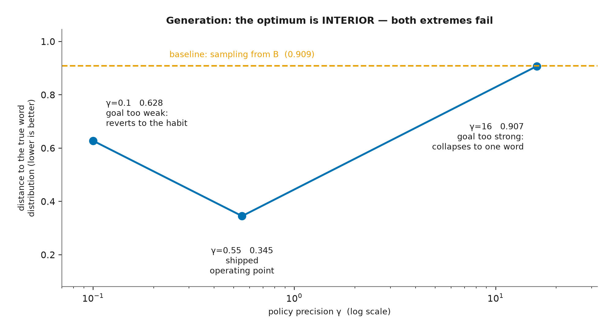
5.9.2 What the distance metric does not catch, and how a degenerate generator beats it
The degenerate generator scores 0.9071, which beats the baseline’s 0.9092 while holding its distinct-word count at 1 indefinitely. Distance alone would admit it. The second gate conjunct requires more than 20% of the ancestral run’s sampled diversity, or more than 65 distinct words under the declared run protocol; only that diversity floor rejects the collapsed endpoint.
That is recorded here for the same reason tbl. 24 records the three word-level mis-wirings that clear their bar: a guard’s blind spots are part of its specification, and a project that reports only what its checks catch is reporting half of what it knows.
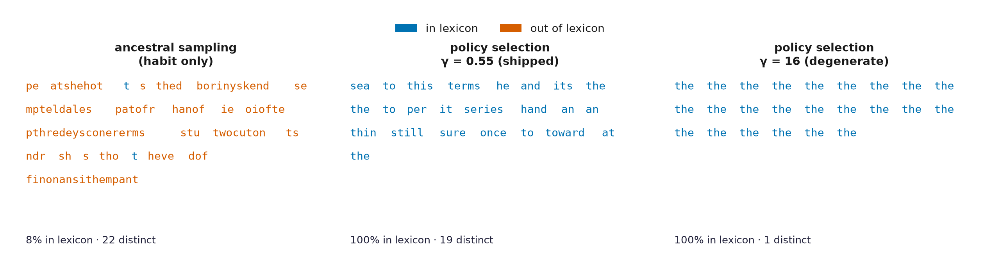
5.10 Helpful and harmful cross-level interventions
5.10.1 The lexical channel helps at every tested weight
This table sweeps the lexical message’s mixing weight and shows it beating the uncoupled decoder at every weight tested, unlike the harmful letter-coupling sweep it is contrasted against.
| Mixing weight | Accuracy | vs anchor | Scrambled control |
|---|---|---|---|
| 0.0 — the anchor | 70.801% | — | identical by construction |
| 0.1 | 72.704% | 1.903 | 69.25% |
| 0.2 | 73.319% | 2.518 | 67.13% |
| 0.3 | 73.648% | 2.847 | 66.245% |
| 0.5 | 73.951% | 3.15 | 65.035% |
| 0.7 — best | 74.134% | +3.333 | 62.55% |
| 0.9 | 74.059% | 3.258 | 58.309% |
The first predicted signature appeared in tbl. 18. The channel helps by 3.333 points — for scale, the entire letter-to-phone margin over its own context-free baseline is 0.546 points, so the channel is worth several times the level’s own headline result. The second did not survive the correction of decision 110: the sample argmax is interior, at weight 0.7, but the highest tested weight trails it by only 0.075 points on 302/270 discordant positions (p = 0.1949), the effect helps at every tested weight, and the wider grid of tbl. 30 places the same message’s best cell at full weight. The sweep therefore records an ordering, not an optimum: it does not distinguish an interior peak from a plateau, and the reversal the defective lookup had shown at weight 0.9 was an artifact of matching the wrong context.
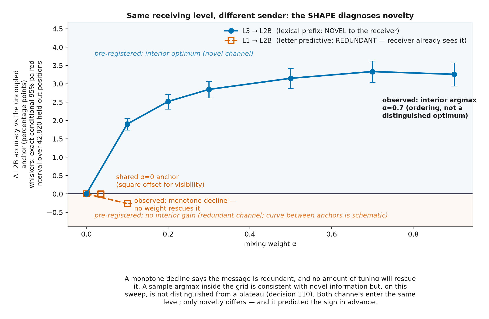
5.10.2 Sweep-shape diagnostics and their scope
The part worth keeping is a diagnostic about the shape of a weight sweep, for which these two sweeps are the evidence base:
In the two measured sweeps, the message the receiver lacked helped at every tested weight, with a sample argmax strictly between zero and one that the sweep cannot distinguish from its highest weight, and the message it already observed had an optimal weight of zero. The working hypothesis this supports: a monotone decline over the whole grid means no weight rescues the message — a diagnostic every future channel either confirms or breaks.
That converts an expensive question into a cheap one in one direction only. Whether to build an inter-level channel is otherwise answerable only by building it; a monotone decline says no tuning will rescue this message into this receiver at this insertion point, which is a verdict on the channel as built.
The converse does not hold, and the oracle intervention is why. An interior optimum would say the mixing weight matters, and a weight can matter both when the message carries something the receiver lacks and when it partially corrects a receiver that is misspecified. The typed word-prior curve below improves through its high tested endpoint and therefore locates no optimum. Its helpful direction from a message predicted to be redundant still shows that sign alone does not separate the two accounts.
The hypothesis also predicted where the remaining channels would and would not pay, and one of those predictions has since been run — with an instructive qualification. A document-position level passing a type distribution into the clause joint prior sends something no clause model can represent, and the channel demonstrably moves the clause level’s type prior (sec. 4.8). But the case-only clause arm, which is the receiver this channel was measured against, measured how its fitted predictive changes when a privileged reference type selects the chain — -0.178% (sec. 4.7). That small reference suggests low sensitivity; it does not hard-bound an intervention under misspecification. This is the sensitivity term of the hypothesis doing the work that novelty cannot: the message moves a prior, and the receiver’s predictive is barely a function of the variable being moved. Potential value prices the message, sensitivity prices the delivery. The potential-value term rests on the interventions that vary it — the coupling, the lexical channel, the generation channel, and the punctuation-type-oracle→word-prior arm below; the sensitivity term on the case-only clause arm’s privileged reference and the L6→L5 prior intervention, the only intervention that has tested it. Whether the widened receiver of sec. 5.7.3 is more sensitive to the same message is an open question this paper does not answer: no channel has been measured into it. Five of the 7 registered interventions are separately measured, and they bear on those two terms and nothing beyond them. Of the two case-word seams that make up the rest, the bridge’s influence is now measured as an exploratory development-population sweep under a fresh registration (sec. 5.10.4), and the privileged-oracle diagnostic remains the structural inlet whose evaluation records nothing.
5.10.3 The predicted privileged-oracle harm did not reproduce
The predicted harm did not reproduce.
The cheapest available test of the potential-value term was a privileged punctuation-type-oracle→word intervention: a train-estimated \(P(\text{word}\mid\text{punctuation-defined sentence type})\) mixed into the word level’s prior for held-out typed sentences. The message uses the same type variable the clause model represents, but it is a reference label, not the clause Agent’s posterior or an L5 output. The word level already observes those words. Under the biconditional form the prediction was unambiguous — that channel harms, monotonically. It has since been built and measured (decision 27, corrected after the document-partition repair in decision 88): on the declared axis — the held-out perplexity of the word prior, the quantity the pre-registration named as where harm would show — the clause-typed word message produced a small improvement at every tested positive weight (anchor 3.268023 → best tested 3.263007 at the high grid endpoint alpha = 0.9, delta -0.005016). The sweep therefore does not locate an optimum. The token-direction tally agrees: 51,364 tokens improve against 22,649 made less probable, while the scrambled control is far worse (4.562879). No monotone harm reproduced, so the predicted harm was not confirmed.
The population boundary is source-document disjoint: the typed statistic is estimated on 448 Brown documents and evaluated on 52 others, with 0 overlap and every Brown category represented in both arms. The type-free and swapped-type controls isolate the role of the privileged type label. Replacing both conditional rows by the type-free bridge marginal gives perplexity 3.267863 at the selected weight, while swapping the declarative and interrogative rows gives 3.376872; the real typed message is 3.263007. The vocabulary-axis reversal remains a wiring control, not the evidence that sentence type itself matters.
The outcome is evidence against the biconditional and is what the potential-value hypothesis expects to be possible. A coarse, type-conditioned message is not cleanly redundant against a prior that is a marginal over words: the receiver’s prior carries no type structure at all, so the message can shift mass the marginal had mis-assigned without telling the receiver anything it could not have read off the observed word. Agreement between aggregate log-loss and the majority token direction survives whole-document uncertainty. The mean gain is 0.00153609 nats per emission, with a 95% whole-document interval of [0.00088152, 0.00233064]; 43 documents favor the typed message and 9 favor the anchor. The assumption-conditional document sign-flip sensitivity is reported only as p ≤ 9.999e-05, its Monte Carlo resolution floor. This resolves the descriptive sign on the reused population; it does not make the correction confirmatory or identify whether the gain is conditional information, mismatch correction, or regularization under the chosen mixing rule. What neither metric supports is a large effect. The best point differs only narrowly from the anchor (3.268023 to 3.263007), so the measured improvement sits on a numerically narrow curve. That scale is reported by the injected endpoints; no equivalence or near-null classification is inferred from it.
5.10.4 Case-word influence sweep on the development population
The case-word bridge’s registered influence sweep
(docs/decisions.md entry 121; estimand and controls in
sec. 4.10) is the second intervention on
the L3 word prior that was specified before it ran, and the first in
which the sender is the case level’s own posterior rather than a
privileged reference. The receiver side is scored over 3001 tokens of 64
EWT-dev test documents — 14,449 word-level emissions — against the
zero-weight anchor, whose word prior has held-out perplexity 3.439523
and which the recorder reproduces bit-identically from the untouched
receiver prior before any positive weight is scored.
The mean per-token log-gain is positive across the tested weights and peaks at an interior weight: the recorded best weight is alpha = 0.3, at 0.171460512 nats per scored token against the anchor. The token-direction tally is not a uniform win: 1015 tokens improve against the anchor, 1425 are made less probable, and 561 are exactly unchanged — the last the no-message tokens the inlet never touches. Both controls behave as registered: the scrambled-word negative control sits at -0.229713297 nats per token at the best weight, and the declared positive control leads the scrambled control by 0.492584079 nats, above the pre-registered margin of 0.177528463 nats and recorded as passing at every positive weight.
The whole-document clustered analysis expands each token’s difference to its word-level emissions (14,449 across the 64 source documents), resamples whole documents and sign-flips them: 10,000 resamples at seed 20,260,811. The clustered per-emission effect at the best weight is 0.035611668 nats per emission, with a 95% whole-document interval of [0.026024861, 0.045182061]; 56 documents favor the message and 8 favor the anchor (fig. 23). The interval excludes zero on the development population, which is a descriptive sign resolution, not a confirmatory one, and the two units are not interchangeable: the clustered estimand prices the bridge per word-level emission, the mean per scored token.
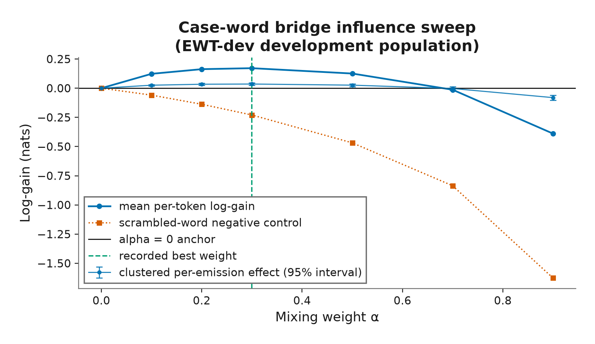
The sweep’s scope warnings are the registration’s own and travel with the result. The scored documents are the EWT dev population already scored for Stage 4 case assignment: development evidence under a fresh registration, never confirmatory, never “untouched”, and the shared corpus’s test file remains spent (decision 111). Cross-corpus transfer — an EWT-estimated message applied to the Stage 3 Brown-receiver vocabulary through a lowercased exact-string match — is part of the estimand, named as such. The recorded receiver sensitivities of the other arms bound nothing here. The bridge carries the exploratory prior-only evidence reported above; its privileged-oracle diagnostic remains a registration-only structure. These independently measured arms do not establish an executed cascade. Every derived label here remains agreement, not accuracy wherever quoted; nothing in the sweep promotes a development-population result to confirmatory, which would require a fresh population and a fresh registration.
5.10.5 Evidence and limits of the information-value hypothesis
The honest limit is the evidence sequence itself. The letter-predictive harm motivated the account. The later registered lexical channel helped. The L6→L5 prior intervention moved its receiver but has a non-confirmatory recognition result. And the punctuation-type-oracle→L3 harm prediction failed, with a directionally concordant helpful outcome under a corrected partition — and that correction is not a fresh confirmatory population. Taken together, this is a small, dependent set of experiments in one language, not confirmation of an architectural principle.
The measurement that would test the hypothesis directly is not reported here. Every channel in this paper is measured as an end-to-end intervention at a fixed mixing rule, and this confounds the potential value of a message with the insertion rule that delivers it. Separating the two requires estimating the conditional information the message carries about the receiver’s target given what the receiver already has — \(I(Y; M \mid X)\), or equivalently the held-out log-loss reduction of a flexible predictor given \((X, M)\) against \(X\) alone — under the receiver’s own proper loss and independently of any mixing weight. That quantity is the Bayes-optimal potential-value term. Under a misspecified receiver, though, it does not hard-bound realized improvement. What would turn each channel from one number into a mechanistic decomposition is comparing three things directly: the potential value, the mismatch correction, and the realized effect.
5.10.6 Message source and insertion point under proper loss
The letter-predictive and lexical sweeps above were each measured at exactly one insertion point, which confounds which message was sent with where it entered the receiver. A channel factorial crossing both factors, a combination-rule control, a fitted variant, and a re-scoring of every cell on the receiver’s own proper predictive loss are reported in sec. 11: message source and insertion point both matter, but the apparent site effect is largely an artifact of linear mixing, and every decided sign agrees across the accuracy and loss axes.
5.11 Learning outcomes beyond baseline comparisons
Beating the context-free baseline is necessary but not sufficient.
Level 2’s emission and transition are both learned, and one of the
mis-wirings tested against them — an emission normalized over phones
instead of letters and then renormalized so pymdp still
validates it — clears the baseline bar while wrong. Only structural
invariants checked before renormalization and a value-for-value
comparison against an independent re-derivation catch it (tbl. 28); the catalog and the invariants
that pin the emission are set out in sec. 10.
5.11.1 Count-based learning and its registered prediction
Until this result, every matrix in the project was estimated by
counting outside pymdp and installed as a fixed array: the
agents inferred, but had never learned. The prediction in decision 22
was committed before the first versioned learning recorder and outcome
in decision 23. That chronology establishes repository ordering; Git
does not timestamp any earlier uncommitted execution. The conjugacy
checks retain descriptive ledger status, and this protocol is outside
the current machine-checked registration-provenance inventory.
The prediction is an identity, not a hope of approximate agreement.
Add-\(k\) counting is the
posterior mean of a categorical–Dirichlet model, and under the letter
level’s identity emission the filtered posterior at every step is a
one-hot on the observed letter, so pymdp’s Dirichlet
accumulation over posterior outer products is the accumulation of
observed bigram indicators. The learned transition and the counted
transition are the same arithmetic in different code, and were therefore
required to agree to float32 rounding. They did, to a maximum absolute
deviation of 0 over 1323 positions, with identical perplexity on the
passage the counts were accumulated over (8.163892 against 8.163892;
in-sample, so not comparable to the shipped agent’s held-out score in
tbl. 8) as the corollary. The
agreement is evidence only because the controls show where it fails: a
Dirichlet prior mismatched to the comparator’s pseudocount breaks it by
0.15343913435935974, re-matching restores it to 0, and a learning rate
other than 1 breaks the conjugate identity outright. lr_pB
is therefore not a tuning knob here: any value except one makes the
learned matrix an estimator of nothing the ledger describes. fig. 24 plots the agreement and its
mismatched-prior control.
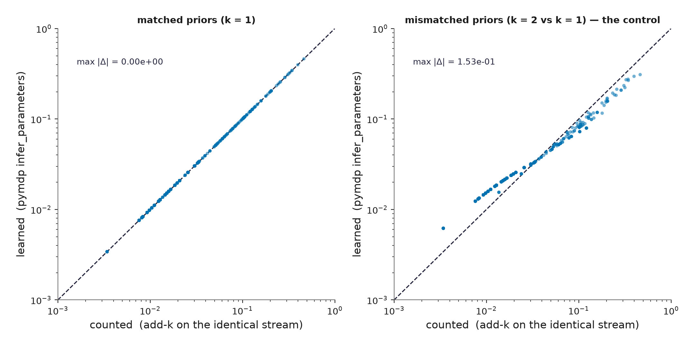
Nothing above claims learning helps: agreement with counting
is a correctness anchor for the mechanism. The version that is a real
active-inference claim — a level that keeps learning beating a frozen
one on non-stationary text — has since been measured (decision 28). On a
drifted Brown genre stream (government then romance, letter-bigram drift
1.110006, measured not asserted), the online agent that keeps learning
across the drift scores 10.502499 on post-drift held-out text against
the frozen control’s 11.611376, a gap of 1.108877 perplexity. The frozen
control is the arm the prediction requires to lose, and its losing is
informative because the alternative is diagnostic rather than merely
disappointing: a frozen model fitted to the first genre only that did
not lose on post-drift text would mean the drift was not real
or the online updates were not happening, and the comparison would be
measuring neither. The re-fit control (10.306888) bounds the same
comparison from the other side by scoring at least as well as the online
agent, and the pre-drift identity confirms the online path is still
counting at lr = 1 (P3). The prediction was committed
before its measurement (decision 28), but the entry is not in the
registration-provenance registry, so its ledger status is descriptive
rather than confirmatory, it sits outside the significance family, and
no interval is attached: the gap is a point comparison.
5.12 Bits-per-symbol information budget
Perplexity throughout is eq. 7 — the exponentiated mean negative log predictive probability under the model’s own one-step-ahead prior — reported in bits per symbol where that is the more legible unit,
\[H_2 \;=\; \log_2 \mathrm{PPL},\qquad{(18)}\]
and the fraction of the information available at a given model order that the agent actually captures is
\[\eta \;=\; \frac{\log \mathrm{PPL}_{\text{uniform}} - \log \mathrm{PPL}_{\text{model}}}{\log \mathrm{PPL}_{\text{uniform}} - \log \mathrm{PPL}_{\text{opt}}},\qquad{(19)}\]
with \(\mathrm{PPL}_{\text{opt}}\) the empirical order-1 conditional-entropy optimum of eq. 8, computed on the sample the numerator is scored over. eq. 19 is the quantity the gate discussion in sec. 4.2 turns on: it separates “the model is weak” from “the order is exhausted”, and those two situations call for opposite responses.
In information units the letter level reaches 2.4783 nats, which by eq. 18 is 3.5755 bits per character.
| Quantity | Value (nats) |
|---|---|
| Uniform over the letter alphabet | \(\log\) 30 |
| Bigram agent | 2.4783 |
| Order-1 conditional-entropy floor | 2.375 |
| Gain realized over uniform | 0.9229 |
| Maximum gain any order-1 model can realize | 1.0262 |
Against the training distribution’s order-1 budget, the agent’s held-out gain is 89.9% of the information an order-1 letter model can access there; by eq. 19, with the optimum taken on the scored passage itself, it is 57.3%. fig. 25 draws that budget directly in nats, with the declared threshold placed outside the achievable region.
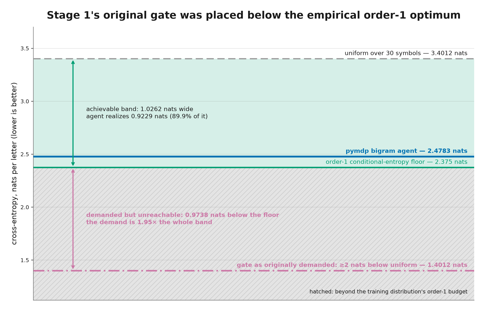
5.13 Confirmatory replication on the held-back split
The members of the frozen significance family with a genuine
held-back partition available were the ones computed on EWT populations.
Under the registered protocol of sec. 4.12 they were scored against the
whole held-back en_ewt-ud-test.conllu split exactly once,
with every model parameter read unchanged from the development fits and
both controls run on the same population first. Every registered
direction and threshold prediction held: the Stage 4 derived comparison
and the Stage 6 sign test cross the frozen per-test threshold of
0.000625 in the direction their development result recorded, the Stage 4
gold comparison and the case-only Stage 5 ablation’s classification
yield no discordant pair and are therefore not shown rather than shown
absent, and the other members of the family were not rescored and remain
development-population inference. The run cannot be repeated — the
sentinel claim marks the population spent — and the per-member detail,
the controls, and the document-clustered intervals are set out in
sec. 10.6.
5.14 What the historical component results establish
They establish that six levels have real pymdp Agent builders and
recorded figures traceable to runs. They do not establish that every
headline score used live Agent inference. L1 does; the exact or NumPy
paths of L2A, L2B, L3, and L6 and their live-Agent checks are
inventoried in sec. 4.11. L4 uses a
NumPy forward filter whose live-Agent recursion reproduces it at every
one of the 1319 held-out positions with 0 argmax disagreements and a
largest posterior deviation of 1.25e-07. The retained case-only L5
ablation uses a closed-form mixture whose live-Agent recursion
reproduces the NumPy joint oracle with 0 type-argmax disagreements and a
largest joint-posterior deviation of 1.67e-07 over all 1072 held-out
positions, which is posterior agreement rather than score equivalence
for the headline estimand; the canonical widened L5 mixture is checked
against oracle filtering (sec. 5.7.3).
The clause level clears a gate registered before its artifact existed,
on the widened observation alphabet, with its paired privileged-label
interval resolved away from zero (sec. 5.7.3); that gate is a
development-session specification and has no held-back replication. The
case-only clause model it displaced is retained as an ablation, with a
non-passing gate and a paired privileged-label interval spanning zero,
and its instrument recovers a planted effect in the detectability
control (sec. 4.7). The system generates
text under policy selection with a measured interior optimum (sec. 4.9); its seven registered receiver
interventions — 5 measured, the case-word bridge measured as an
exploratory prior-only sweep (sec. 5.10.4), and the privileged-oracle
diagnostic the one registered seam that records no estimand — classify
as three help on its declared result axis, one harms its receiver, three
move a prior without a delivered end-to-end effect estimate, and none
are mixed-direction. By source kind, five have a model-output source and
two have a privileged-oracle source. The selected lexical channel,
L3→L1g generation seam, and corrected punctuation-type-oracle→L3
word-prior result help; letter coupling harms; and L6→L5 moves a
D prior. The oracle→L3 arm’s predicted harm did not
reproduce, but it is not an L5-output seam. The L3→L1g and L6→L5
model-output seams and the oracle intervention were not executed as a
connected cascade, and the privileged-label gain of the retained
case-only clause ablation remains unresolved (sec. 4.10 states why neither is a hard bound). Both
that arm and the L6→L5 intervention are measured against the case-only
clause model, not against the widened one. A further result, held at
descriptive status in the ledger and outside the significance family,
comes from within-level parameter learning rather than from the
hierarchy. An agent that keeps learning across a distribution shift
beats a frozen control on the drifted stream — 10.502499 against
11.611376 post-drift perplexity, a gap of 1.108877 — a point comparison
with no interval; the direction and the refusal clauses were committed
before the run (decision 28, sec. 4.11),
and the ledger does not promote the entry to confirmatory. What the
numbers do not establish is language comprehension in any
behavioral sense, competitive capability on any benchmark, generality
beyond the corpora each level was scored on, or confirmation of any
member other than those that clear the frozen per-test bar on the
held-back split (sec. 10.6); sec. 6.1 draws the first three lines, and sec. 15.2 the fourth. sec. 13 scores three zero-shot external
models against an AILM comparator on identical positions within each
separate letter, phoneme, and G2P arm, using benchmark-specific fixtures
rather than the positions scored here. That comparison is a reference
frame: it is not contamination-controlled and settles no competitiveness
question in either direction.
One further accounting spans the historical component and channel
experiments rather than a single level. Their declared significance
tests form one family of size 16 at familywise \(\alpha =\) 0.01, corrected two ways. 7 of
the 16 cross the fixed Bonferroni per-test threshold of 0.000625; 7
cross their Holm step-down threshold at the same familywise level, which
controls the same error rate under the same dependence assumptions. Of
those, 0 survive only the step-down. The Stage 6 sentence-sign test is
nominally positive and crosses neither the fixed Bonferroni threshold
nor its Holm step-down threshold
(stat_stage6_familywise_confirmed = false, a ledger key
that predates the vocabulary used here and records the fixed-threshold
crossing alone; stat_holm_stage6_rejected = false, its
step-down bar being 0.00111111). It crossed that step-down bar under the
family ordering recorded before the lexical channel’s backoff was
corrected (decision 110) and no longer does, which is the instability of
a step-down bar that sec. 15.2
describes. This is secondary evidence: a reversed-phase model with worse
mean log loss can still yield a nominally favorable sentence sign, while
the primary document-clustered log-loss interval spans zero on the
development population. That survivor count is not a tally of
endorsements. The biased prefix re-analysis of sec. 4.2 is another survivor; it crosses the
threshold precisely because its subsample is unrepresentative. Within
the family, two members cannot reject at the corrected threshold for any
outcome. And the family itself was declared after its members were
measured, so crossing a corrected threshold here means surviving a
retrospective procedure on the development population rather than
confirming an effect — the distinction sec. 15.2 defines and this section’s numbers
inherit. The historical family’s development-population verdicts retain
that status; sec. 10.6 separately
reports the eligible held-back rescoring. The benchmark family and
locally specified GUM interval have their own stated populations and
inferential scope. The confirmatory run that could have upgraded it was
pre-registered, executed to its first data touch, and retired by
exhaustion for the external_lexicon members (decision 91):
the registered population, upstream CMUdict entries absent from the
vendored pin, was measured empty because upstream is byte-identical to
the pin. The family, each member’s endpoint and test, and each
substantive member’s replication population remain frozen in
CONFIRMATORY_REPLICATION; the four split re-analyses are
explicitly marked as non-rescored diagnostics whose full-set member
carries the replication (src/ailm/statistics.py, decision
79); the ud_ewt_test members were then scored exactly once
against the held-back EWT test split under decision 111 (sec. 10.6): two clear the frozen per-test bar in
their recorded direction, two yield no discordant pair, and the other 12
members of the family remain development-population inference. sec. 15.2 states the family executably, gives
all three qualifications in full, and reports each primary effect with
its exact 95% interval on the discordant win share (tbl. 36).
The external reference probes are scored on their own fixtures rather than on the positions measured here, and sec. 13 carries the protocol and the full probe readings. The one result worth carrying into the main text is that the comparator’s raw letter-census margin is mostly inventory compliance — whether a system will emit a space at all — and the contrast that survives restriction to alphabetic targets, not the raw census margin, is the finding.
6 Interpretation, External-Validity Limits, and Unmeasured Extensions
The connected GUM comparison in sec. 5.1 evaluates a fixed message schedule on a locally specified population. Its character-loss result does not remove closed-vocabulary word failure or identify the contribution of each channel. The historical component gates answer a different question.
For those gates, fig. 26 places every built level between its own trivial baseline and its own ceiling comparator on a single normalized axis, so a reader who has followed six level-specific results in six units can see in one place how far each shipped model went and what kind of comparator bounds that placement.
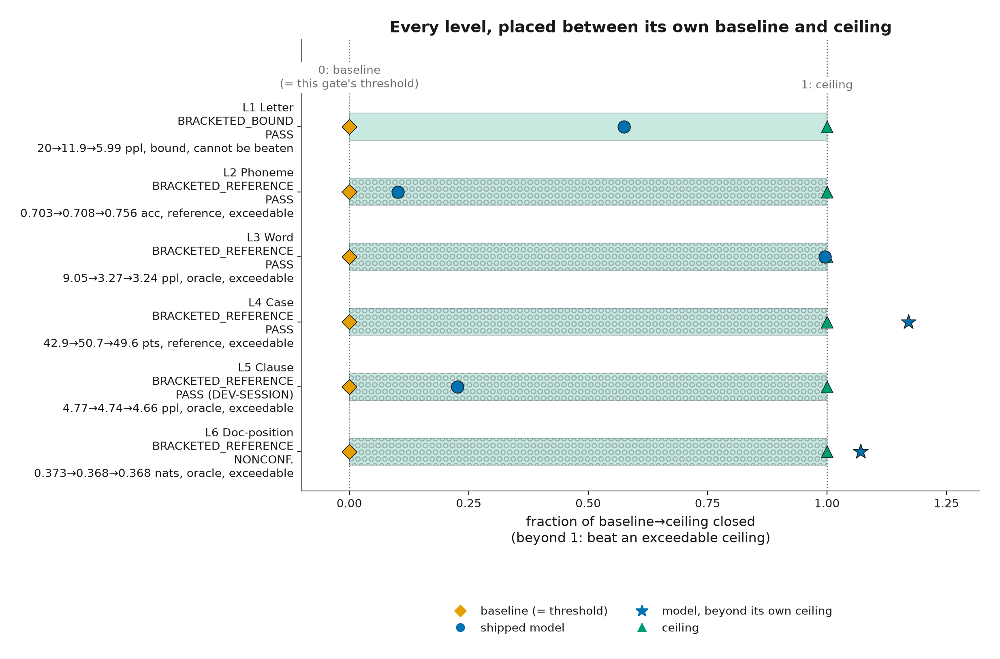
6.1 Limitations that follow from deliberate architectural choices
Several limitations follow from deliberate architectural choices; stating them plainly is the price of those choices.
6.1.1 Not a competitive language model, and not comparable to subword perplexities
AILM has no embeddings, no attention, no learned continuous representations, and no capacity to generalize beyond discrete conditional tables. The perplexities in tbl. 9 and tbl. 12 are order-1 numbers over small inventories — not comparable to word-level or subword-level perplexities. Its named arrays make parameter roles accessible to inspection (sec. 7); the recursion, encoder and message schedule still determine how those roles combine into behavior. The experiments characterize this architecture’s limits, without estimating a general tradeoff between interpretability and language capability.
6.1.2 Historical component composition and current conditional coupling
The historical standalone levels compose by sharing an alphabet
rather than passing beliefs. The current connected runtime does pass
explicitly scheduled messages; its global posterior is not asserted to
be exact, and its aggregate GUM comparison does not estimate individual
channel effects. update_empirical_prior is within-level
temporal recursion at every call site. Inter-level coupling was built
and measured (L1→L2B, src/ailm/levels/coupling.py):
accuracy fell monotonically as the mixing weight rose, with a
significant harmful margin of -0.2639 points at the best
positive weight on the recorded grid, alpha = 0.1 (paired McNemar
p = 1.547e-06). Because the decline is monotone, that figure is
the smallest harm the sweep contains rather than a summary of
it. The harm is not marginal under exact uncertainty: the uncoupled
decoder wins a 0.603291 share of the 547 discordant pairs, exact 95%
interval [0.560912, 0.644548] (tbl. 36). The cause is structural: at
position t the letter-to-phone level already observes letter
t, while the message is a function of letters 0 to t-1
only.
6.1.3 First-order limits on orthographic and syllabic structure
The letter and phoneme levels are both first-order Markov. The letter level cannot represent orthographic constraints spanning >2 characters, and the phoneme level cannot represent syllable structure. The 89.9% figure is a large fraction of a small quantity.
6.1.4 The length-matched subset is not English
Results are measured on the length-matched subset of CMUdict (74.3% of pronunciations discarded), biased toward transparent orthography. No comparison with published G2P systems is made. The thin margin follows from the subset’s transparency — where the letter nearly determines the phone, context adds little. Two external-validity bounds follow. First, the family-disjoint arm of sec. 4.4 removes shared-prefix transfer but not lexically or morphologically grouped leakage more broadly. The existing held-out family-group analysis already measures heterogeneity within those prefix-defined groups (sec. 5). The remaining sensitivity check would assign train/test membership using independently defined morphological families, rather than treating shared prefixes as the family definition. Second, the task itself — equal-length position-aligned letter-to-phone decoding under a pairing the evaluation imposes — stops short of many-to-many grapheme-to-phoneme conversion over a full dictionary, the setting in which the classical G2P literature evaluates (e.g. Jiampojamarn et al. (2007)); no result here transfers to that setting without the alignment being learned rather than stipulated.
6.1.5 Filtering rather than smoothing, and what whole-word methods gain by it
The model’s online algorithm is forward filtering; its canonical full-set score is computed by the NumPy implementation after the bounded live-Agent check. Whole-word methods do substantially better on the same parameters — 75.642% for forward-backward smoothing and 75.306% for Viterbi, against 70.801% for filtering. The gap is reported rather than hidden precisely because the architecture forgoes it by construction.
6.1.6 Part A’s dictionary perplexity is in-sample, defended only by its parameter ratio
The dictionary perplexity in tbl. 12 is a descriptive in-sample protocol: the same primary pronunciations supply the counts that fit the transition matrix and the sufficient statistics that are scored. Its defense is the parameter-to-data ratio — 39 × 39 parameters from 800,198 positions, with the recorded protocol’s add-1 smoothing — not a holdout, so on its own it is not a generalization claim and is not comparable with Level 1’s held-out number as one.
The held-out word split converts that defense into a measurement. The Part A unigram and bigram are re-fit — inside the analysis code, from the pinned CMUdict snapshot, with the same recorded add-1 smoothing and per-word prior reset — on the 100,841 dictionary words that remain when a seedless stride holds out every 5th sorted word, the same interleave construction the letter-to-phone split uses one level down, and the identical closed-form path is scored on the disjoint 25,211 held-out words over 160,196 phone positions. The context-free bar is re-fit on the same training words, so model and bar share one fit and one denominator. Held out, the bigram agent scores 16.7665 against the bar’s 27.6027 — a margin of 0.4985 nats per position, essentially the whole in-sample advantage — at a generalization penalty of only 0.022 perplexity units above the in-sample 16.7445. The reading is bounded by a control on each side. A model fit on training phones re-dealt across word boundaries — the corpus unigram and word lengths preserved, every trace of order destroyed — does not beat the bar; its gap is -0.0013 nats, so the held-out margin is not available to a structure-free fit. And a model fit on the training words with each word’s phone order shuffled within the word still clears the bar, at 0.1443 nats against the honest margin’s 0.4985 — which says that a substantial part of the margin is available from which phones merely co-occur in a word, before any adjacency is used. The in-sample table remains the descriptive dictionary protocol; the held-out arm is the measurement behind the claim that Part A’s margin survives generalization.
6.1.7 Historical fast score paths and current live inference have different evidence
At Level 2B, infer_states is one call per observation.
Its full-set statistics are computed by the NumPy oracle and attributed
to pymdp through the bounded decoder-equivalence result (eq. 16). This is a constraint on that
evaluation path, not a license to attribute every later exact or NumPy
score to live inference. L3 uses an exact path identity, L4 a NumPy
filter that the live recursion reproduces at every held-out position, L5
a closed-form mixture with a live posterior-agreement check that is not
score equivalence, and L6 separates its registered observed-position
score from a descriptive live sequential score. The connected GUM
evaluation instead executes live agents on its full declared population
using compiled calls. That later execution does not retroactively extend
the historical decoder-equivalence checks or equate their estimands with
the normalized-character result.
6.1.8 Decoder equivalence is bounded, and licenses nothing outside its subset
Decoder equivalence is tested on a bounded subset (13,224 of 42,820 held-out positions; 0 disagreements on the checked positions); the recorder refuses to proceed if nonzero. A finite test cannot establish that two implementations are the same function, so the result licenses no statement about positions outside the subset, and full-set attribution to pymdp remains an extrapolation from the checked ones. Proving equality would take an algebraic derivation over the two call sequences or a full-population comparison; neither is done (sec. 4.11).
6.1.9 The UD case oracle is a research claim, not ground truth
Only NOM, ACC and GEN carry morphological marking in English EWT — 3 of the 8 roles. The remaining 5 — DAT, INS, LOC, ABL and VOC — are derived from dependency relations, a principled heuristic that this project has not validated. Agreement with it is agreement, not accuracy.
6.1.10 Unresolved component verdicts and the speech interface boundary
The clause level’s case-only ablation is non-passing
at bigram order over punctuation-typed sentences (decision 83). Its
privileged-label reference has a negative point estimate, its paired
whole-document-bootstrap interval spans zero, and no equivalence margin
was declared. The canonical clause level, on the widened observation
alphabet, clears its registered bar. But what it clears is a
development-session specification with no held-back replication, so it
does not close the question that ablation leaves open. The
document-position (tercile) level — narrative in code — has
a positive point estimate, in its preregistered direction, of 0.0051
nats per sentence, whose primary document-clustered log-loss interval
spans zero on the development population. The same estimand, registered
separately and carried to the held-back split, gives 0.008288 nats with
an interval that excludes zero (sec. 5.8.2). So the level is no
longer a case of a positive point estimate with nothing behind it. Three
limits keep it from being more than that. The two populations disagree.
The development one is not retracted. At the family-corrected coverage
the held-back interval spans zero too. So the resolution is a claim at
the level the development analysis was read at, not at the stricter one.
The held-back population’s own resolution, 0.005726 nats, is coarser
than the development-sized effect. So what was demonstrated is that a
larger effect is present there, not that this effect size generalizes. A
null there would not establish absence of the development-sized effect.
The development-population sentence-sign statistic remains secondary: it
crosses neither the fixed Bonferroni threshold nor its Holm step-down
threshold. Even reversed tercile columns with worse mean loss can yield
a nominally favorable sign (sec. 15.2).
That is exactly why the held-back sign test was not allowed to stand in
for the interval. A separate live-Agent filter is descriptive, not a
replacement for that primary analysis. The independent L6→L5 prior
intervention moves the receiver’s D. The case-only clause
arm’s privileged-label reference has an unresolved gain and is not a
hard bound; that arm is the receiver the intervention was measured into.
The speech level is deliberately not a model at all: the boundary
contract (docs/design/speech_boundary.md) is tested, while
everything acoustic remains someone else’s system.
6.1.11 The familywise survivor sets are smaller than the nominal set
The declared significance family (sec. 15.2) has 16 members and 7 survivors at the
fixed Bonferroni threshold 0.000625, 7 under Holm’s step-down correction
at the same familywise level. The four headline paired results — Stage
2B letter-to-phone, Stage 4 derived, the lexical channel, and the
coupling harm — survive both. The secondary Stage 6 sentence-sign test
crosses neither the fixed Bonferroni threshold nor its Holm step-down
threshold (stat_stage6_familywise_confirmed = false,
stat_holm_stage6_rejected = false), and one survivor,
subsample_prefix_mcnemar_p, is significant only because it
measures a biased subsample (sec. 10.1).
Multiplicity correction bounds the survivor set; it does not rank the
science. A further boundary none of these corrections touches: every
gate here is a placement audit against a threshold. Each audited gate
now declares a smallest effect size of interest, and the audit reads the
gate’s margin against it (decision 123), so a hairline margin is
displayed as such rather than silently certified. The declared margins
are floors attached after the fact for the retrospective rows — they
change no recorded verdict — and the uncertainty reporting remains what
carries the finding where a recorded margin sits near its floor; a gate
registered from now on must declare its margin before measurement
(sec. 4.2).
Two conditions that bound every one of those verdicts are stated in sec. 15.2 rather than here, because they qualify the results before the reader reaches them rather than afterwards: the paired tests are computed at units nested inside the units their corpora sample, and the family was assembled retrospectively on the population this project developed against. This entry adds nothing to either. It records only the arithmetic consequence — that the survivor set is smaller than the nominal one, and that neither set is a set of confirmed effects.
6.1.12 The calibration gate was a proxy, and the proxy was not conservative
Calibration was the one axis on which AILM and the external probes looked directly commensurable (sec. 13), and it was originally reported only for a system whose answer-slot distribution was at least 0.5 observed rather than reconstructed. That captured-mass floor stood in for the quantity that actually matters — whether the completion rule rather than the model decides the reported number — and it was declared on an argument rather than measured. It has since been measured, offline and with no model call. Truncating AILM’s own letter columns to 96 target captured masses and reconstructing each under both completion rules, the shipped min-bound rule and observed-only renormalization, puts the smallest captured mass above which neither expected calibration error nor the Brier score again disagrees by more than 0.01 at 0.9913050462092039, which is 1.9826100924184078 times the declared floor. The declared floor is permissive, not conservative: at 0.5009002481860143 captured mass the two rules still report expected calibration errors 0.027279486311722168 apart, against AILM’s whole recorded value of 0.06525983583459523.
That located value depends on requiring a sustained crossing rather than a first one. Each metric’s divergence crosses zero exactly once on the way up, at 0.46163474055756576 and 0.4955158182362678 captured mass — essentially at the declared floor — while the two reconstructions are still 0.8852931589225496 apart in total variation. A locator that stopped at the first crossing would have confirmed the declared floor on a coincidence of opposite biases.
The conservative threshold is also unreachable through the API these probes are served by. Holding 0.9913050462092039 captured mass takes 19.205 of 30 candidates on average against a server cap of 20, and 0.395 of positions need more than the cap. It is out of reach in principle for any probe read through this endpoint, not an unmet bar that more positions would clear.
The gate is therefore no longer the proxy. It is the direct check of the two completion rules against each other on each probe’s own recorded distribution (decision 93): a system whose expected calibration error or Brier score moves by more than 0.01 between rules is withheld. Under that gate Qwen 2.5 3B reports and Gemma 3 4B is withheld — its recorded divergences are 0.012740862022979305 in expected calibration error and 0.012133730087630523 in Brier score — although the captured-mass floor had admitted it at 0.8610770659256101 captured mass; SmolLM 1.7B Base v0.2 is withheld by both rules. The withheld figures remain in the ledger, and the values in sec. 13 are the gate-admitted ones.
The case the proxy could not see is the one the direct check exists for: a probe whose reported distribution is as flat as AILM’s own could clear the declared floor and still sit where the two rules disagree materially, so that its reported calibration would be a property of the completion rule rather than of the model. The direct check flags exactly that, which is why the proxy was retired from gating. The floor constant is retained as provenance for the starved-fraction diagnostic and the floor-locating sweep above, not as an admission rule.
6.1.13 The gate-audit method generalizes only as a working hypothesis
sec. 9 expects the bracketing check to generalize past this project and past active inference, and names the method among the most transferable results here. That claim carries the working hypothesis label of sec. 2 and no stronger one: it organizes the design and is bounded by the evidence that produced it. That evidence is every declared gate of a single repository (tbl. 22, tbl. 27), declared and audited by the same author. The recorded failure modes are varied enough — unreachable, vacuous, both at once, mis-scoped, necessary-but-not-sufficient — to establish that the defect class is real and cheap to detect. They are not a sample from which a base rate follows, and nothing here tests whether the check catches defects in gates whose author did not also write them.
6.1.14 Corpus and language boundaries remain specific to each result
The letter and phoneme results use Brown and CMUdict statistics vendored as frozen JavaScript Object Notation (JSON) artifacts. The EWT experiments, exploratory Czech morphology arm and connected GUM comparison add distinct populations, not blanket evidence for other registers, languages or pronunciation dictionaries. The normalization choices — collapsing whitespace, keeping only the primary pronunciation, discarding stress digits — each bias the counts in ways that were chosen for defensible reasons and not independently validated. GUM’s multilayer corpus design provides a resource for examining linguistic structure (Zeldes 2017), but the present raw-text comparison does not evaluate its discourse annotations or establish transfer across genres. Its document average and interval describe the frozen scored population; they leave performance on unexamined registers and independently collected documents open.
6.1.15 Adaptive observation selection was measured, does not pay, and is not built
One extension this architecture invites is budgeted attention: given a budget of observations for a word, choose which letters to look at by expected free energy rather than on a fixed schedule. It was measured rather than assumed, and it does not pay, so it is not built.
This arm is the exact complement of the generation regime in sec. 4.9, and the two are best read together. There the information-gain term is identically zero and the preference term carries the whole policy; here there is no preference term and the information-gain term is the sole criterion, each candidate position scored by the posterior entropy it is expected to leave. So the two components of the expected free energy have each been measured in isolation in this project, in the only two places its architecture admits them, and the one that carries the work is the pragmatic one.
The bar is the exhaustively optimal fixed schedule per word length and budget, fitted on the training split — for each shape, the observation set maximizing training accuracy, searched over every subset rather than approximated. That bar uses no inference at decode time and is strictly less data-dependent than the policy it is bounding. Over the held-out letter-to-phone positions at a 50% budget it scores 50.0381% against the adaptive arm’s 48.9549%, a loss of 1.0832 points for adaptivity. The comparison the proposal originally invited, against a “uniform stride”, is not a comparison at all: the stride’s phase is an unstated free parameter worth up to 12.3129 points across phases at one word length, which is larger than any margin at issue.
Two details of how that number was obtained belong here rather than in a methods appendix, because both are ways the measurement could have come out wrong in this paper’s favor. A policy may only use what it has already observed, so a candidate position is scored by the entropy it is expected to leave, marginalizing over the letters it might reveal under the model’s own predictive distribution. Scoring it instead by the entropy left after conditioning on the letter actually present returns +3.90 points for adaptivity — but that is not a policy, since it consumes the observation to decide whether to pay for it, and the budget it operates under is fictional. That variant is retained in the probe as a declared upper bound; it sits 4.987 points above the policy that can actually be run.
6.1.16 Zero epistemic value in the deterministic letter generator
Policy selection at the letter level (sec. 4.9) is driven entirely by the pragmatic term of the expected free energy: the preference vector supplied top-down by the lexicon (sec. 4.9), combined with the habit prior from the learned bigram. The information-gain term is 0 nats — identically zero rather than approximately zero. The cause is structural: the generator’s transition is deterministic and controllable, so the policy-conditioned predictive distribution is a point mass and carries no residual uncertainty the next observation could resolve. A stochastic-transition control confirms the quantity can be nonzero; it reaches 3.401197 nats, the entropy of a uniform letter distribution. AILM’s letter generator therefore cannot trade off exploration against exploitation: it selects letters because the lexicon wants them and habit expects them, not because any letter would say more about the hidden state than another. Whether that is a limitation depends on what the hidden state is. If it is the emitted prefix — which is the case in the shipped generator — then no letter is more informative than another and the zero is correct. The alternative construction — a word-identity hidden state over the lexicon — was built and measured (sec. 4.9). Its information gain is 2.716363 nats at the empty prefix, yet because emitting a letter never changes which word is being spelled, every action induces the same predictive distribution: the per-action spread of \(G\) is exactly 0 and the policy posterior stays on the habit to a maximum deviation of 1.11e-16. Uncertainty in the hidden state is necessary but not sufficient; the epistemic term bears on action only where actions induce different predictives, which over a fixed word is interrogation, not generation. The budgeted-attention arm above is that regime, and it does not pay.
6.2 Stratificational alternatives beyond the widened arm
The widened arm produces the number that makes a choice informed; it does not make the choice, and the choice it forces is the load-bearing one. A stream containing verb and auxiliary symbols is no longer Level 4’s hidden states read one level down, unless Level 4’s own state space is widened to match — which would move every Stage 4 number and contradict the stratificational reading the hierarchy rests on. The alternative, letting Level 5 observe Level 4’s states plus material Level 4 does not represent, abandons the one-level-down claim outright. Both branches remain live after this measurement, and nothing here selects between them. Making the widened arm the canonical clause level does not select between them either. It settles which arm the paper describes, and it takes the second branch as a matter of description while leaving the stratificational reading unrepaired, which is why the alphabet seam from Level 4 to Level 5 is stated as a containment rather than an identity in sec. 4.1 and why the case-only arm, whose seam is a true identity, is retained rather than discarded. What the measurement establishes is the size of what is at stake: the positions occupied by verbs and auxiliaries carry a type signal that the case-only projection does not see, worth 54.95% of the available entropy against the case-only arm’s unresolved gain.
Two further limits. The arm shows that those positions carry the signal, not why. Auxiliary fronting is the obvious account and is untested here; the first-symbol-is-an-auxiliary comparator bounds how much a single fronting indicator reproduces on its own, at 0.7543 against the model’s 0.8908, which is a bound on one rival explanation rather than a test of the mechanism. And the arm is descriptive throughout. It was specified before its artifact was regenerated and its predictions were not revised afterwards, but the specification and the outcome share one development session, so it carries the weight of a well-run exploratory result and not that of a confirmed one.
6.3 Scope of the held-back replication
What the replication of sec. 10.6 changes is narrow and worth stating precisely. Two of the 16 family members rest on a population that was fixed before the prediction was written and scored once under a registered rule, and two more were put to that test and returned no discordance. That is the difference between a result and a corrected-threshold survivor of a retrospectively assembled family, and it is available for exactly 4 members because only those had a held-back partition left: the eight lexicon members were exhausted, since upstream CMUdict has not moved since the vendored pin, and the four split diagnostics are re-analyses of a shipped subsample with nothing to replicate on fresh data. The twelve unrescored members are unchanged, and calling the paper confirmed would misread this.
The two members that did cross also differ in what they buy. Stage 4’s derived comparison already survived the frozen correction on the development population; its replication supplies held-back evidence for that survivor. Stage 6’s crossing adds evidence where the development run did not cross. The registration predicted the crossing on sample size alone, but the observed effect estimates also differ across splits. The crossing corroborates the registered direction; it does not establish a stable effect size or identify how much of the smaller p-value comes from the larger population. The case-only clause arm’s replicated null is the most useful result of the four for a reader deciding what to build on: an observation alphabet that fails on its development split and fails again, with zero discordance, on several times the data, against a live instrument, is not an alphabet awaiting more data. It is the one that was awaiting a different alphabet, and the widened arm of sec. 5.7.3 is what happened when it got one. That contrast is also the sharpest available statement of what the promotion does and does not buy: the widened result rests on a registered bar, the null it displaced rests on a held-back partition, and no single arm here has both.
6.4 Future Tests of Model Scope, Human Auditability, and Hybrid Composition
Everything below is a proposal, not a result. Where an item is already partly built, registered, or measured, the text says so; no item here licenses a claim about what a future run would find. Where a design choice is already fixed by a principal decision or a rejected alternative, that fact is stated so a reader does not mistake an open question for a settled one.
6.4.1 Richer State Dynamics, Wider Linguistic Coverage, and Cross-Framework Checks
A separate next test concerns the reader, rather than the model’s predictive score. The human-evaluation proposal in sec. 7 would assess whether named parameters and a trace of the recursion help readers diagnose a defect or anticipate an intervention. Such a study would need its own participants, comparison interface and prospective success criterion. Conformance tests and a functioning dashboard do not supply that evidence (Doshi-Velez and Kim 2017).
The open Major items already carried in TODO.md are the
nearest and most concrete of these: equal opportunity to fit the task,
the aligned-pronunciation zero-shot arms, and the end-to-end top-down
cascade’s performance claim. None of them is a fresh idea. Each has an
unadopted design written down in
docs/extension_protocols.md, and each design is partially
landed rather than merely sketched. Protocol P1’s offline data and
identity foundation — the streaming census objective, the diagnostic
carve, the separate fitted-probe registry, the stride-aliasing
refutation — is built and fixture-tested, and its warm-up compute gate
has been measured and found not to clear the census budget at the
observed rate (decision 122); what remains is the fit pipeline itself,
gated on the external model infrastructure the protocol assigns to its
own implementation grant. Protocol P2’s stipulated pair-structured
artifact and offline evaluator are built, its comparator arm is recorded
offline, and its zero-shot probe arms are recorded: both scoring arms
fall far below the analytic contract floor and the third probe is
recorded as a contract refusal, so the arm closes by refusal rather than
ranking (sec. 13). Protocol P3’s
label-construction and split account, its registry entries, and its L3
inlet and executor are built, and its influence sweep is recorded
(decision 121, an exploratory prior-only sweep on the development
population); what remains, by the protocol’s own three-layer separation,
is a performance claim under its own population, comparator, controls,
and uncertainty analysis — deliberately the last of the protocols to be
attempted, because it is the one whose cost is largest and whose value
is least certain.
The connected schedule is now executed and evaluated on the locally frozen GUM population in sec. 5.1. Its next empirical steps are independent replication, coverage expansion and attribution of the aggregate result to particular channels; those steps remain unmeasured. The channels this project has already run disagree in sign on that question, which is the whole point of running them rather than arguing for them: the L3→L2B lexical channel and the independent oracle→L3 word-prior intervention both help their receivers, the L1→L2B coupling channel harms its receiver, and the case-word bridge has exploratory prior-only sweep evidence on the development population, while its privileged-oracle diagnostic remains structural (sec. 5.10.4). Attributing the connected gain to a particular channel requires further registered receiver interventions, each with its own zero-weight anchor, negative control and accounting of whether the expected direction preceded the measurement. The existing whole-configuration comparison is not that attribution, and neither result would declare the hierarchy complete.
Learning of parameters within Active Inference has already been
probed at its boundary rather than left untried, and the next step
should be read against that boundary rather than around it.
Observed-state conjugate counting under pymdp’s own
parameter-learning machinery reproduces the shipped counted matrices
exactly, which is a correctness anchor rather than a capability
(decision 22). Continuing those same updates online, on a stream whose
statistics are made to drift partway through, does recover a measured,
predicted-in-advance improvement over a matrix frozen before the drift —
the one regime in which online learning has been shown to earn its place
over not learning (decision 28). But in the one place a hidden state had
to be inferred before the parameter update could use it — the G2P
emission, whose phone states are never observed — the learned matrix was
measured to be worse than counting the same data, with an observed-state
control confirming the learning machinery itself was sound and the harm
traceable to the latent-state inference (decision 29). A future attempt
at parameter learning within this architecture should say in advance
which of those two regimes it is in, rather than repeating the optimism
this project’s own earlier documentation stated before decision 22 first
measured the boundary.
Larger lexica and other languages remain almost entirely untried. The one non-English population this project has scored is the exploratory Czech case arm, built by reusing the English case-level builders unmodified against UD Czech-PDTC and reporting raw accuracy against morphological ground truth rather than agreement with a derived oracle, because Czech is the one population where that ground truth exists. That arm is also where the boundary of the approach shows most plainly: Czech’s own case inventory omits a role English case grammar carries, and several of Czech’s roles are marked directly on the word in a way English morphology does not supply, so the arm is not a template that generalizes by relabeling — it is a demonstration that extending to a new language means building that language’s own oracle, vendoring and checksumming that language’s own corpus, and stating that language’s own boundary, not rescaling the English numbers. The fixed default vocabulary at the word level is a separate, already-declined axis of scaling: a principal decision keeps it at its shipped size because the scaling ladder already publishes every rung through a closed form exact at any vocabulary size, so raising it buys no science, only a re-record. A larger lexicon or a second language is future work exactly to the extent that it is willing to pay for its own oracle and its own disclosed boundary, not to the extent that it reuses this project’s counts under a new label.
Finally, every shipped level’s GNN declaration already carries the
ontology-annotated structure that a conformance checker reads — the same
declaration a hand-written builder and
ailm.spec_agent.build_agent_from_spec both construct an
agent from, checked to match in shape, dtype, and bytes. What this
project has deliberately not done is run those same declarations through
the upstream GeneralizedNotationNotation project’s own generation
pipeline, which independently renders a spec to RxInfer and
ActiveInference.jl in addition to PyMDP — AILM
keeps its local construction paths and does not adopt that pipeline.
Rendering the shipped specs through it and comparing the resulting
agent’s filtering output against AILM’s own, on the same held-out
positions, would be a cross-implementation check in the same spirit as
the pymdp-versus-independent-oracle agreement checks that already
license every exact and NumPy score path in this paper (sec. 4.11) — except across frameworks maintained
by different people, rather than within the one repository this project
controls.
6.4.2 Declared Parameters and Learned Representations as Distinct Evaluation Targets
AILM and a transformer-based large language model are not competing answers to the same question, and stating the differences precisely is what makes that claim more than a disclaimer.
AILM’s probability and preference arrays have declared roles and axes checked against the live agent by the GNN conformance guard; habits and policy precision have separately named settings (sec. 4.1); a transformer’s parameters are weights distributed across attention and feed-forward blocks learned end to end by gradient descent (Vaswani et al. 2017), with no declared role for any individual weight. The consequence is asymmetric epistemic access. AILM’s semantic addressability is designed in: the ontology block names what a matrix means before it is measured. A transformer’s internal structure is instead the subject of mechanistic interpretability, a field that exists precisely because that structure is not declared and must be reverse-engineered from a trained network after the fact, circuit by circuit (Olah et al. 2020; Elhage et al. 2021). AILM’s guard would have nothing to check without the declaration; interpretability’s methods would have nothing to interpret without a network that hides its own organization.
Each component uses first-order transitions over its hidden state. That does not limit a filtered belief to the preceding observed symbol: recursive beliefs summarize earlier observations, the word posterior carries a within-word prefix, and the connected schedule carries messages across its declared reset clocks. These fixed finite-state summaries differ from learned attention across an input context. Component HMM correspondences are scoped in sec. 7; no global HMM equivalence is asserted for the connected runtime. A single-writer claims ledger binds reported values to their runs (sec. 8). The external probes do align bounded next-symbol units and positions, but their unequal training opportunities, prompting contracts and contamination exposure prevent those contrasts from establishing general competitiveness (sec. 13). Parameter-level auditability and broad language capability are different evaluation targets. Recent theoretical work argues in the same direction from the side of prediction and action: a system optimized to passively predict the next token and a system whose inference is coupled to acting on the world answer different questions about meaning, and the productive move is treating them as complementary resources rather than substitutes for one another (Pezzulo et al. 2024). Nothing in this paper measures that argument; it is cited here as the framing the compositions below take for granted.
6.4.3 Proposed Tool and Observation Channels Between AILM and Language Models
Compositions in both directions are sketched below, plus the discipline either one would have to satisfy to be worth building rather than merely demonstrating. Neither direction has been built, and no result about either is claimed.
An LLM calling AILM as an auditable tool. An agent built in the style of self-taught tool use (Schick et al. 2023) or interleaved reasoning and acting (Yao et al. 2023) could delegate a bounded subtask — letter-to-phone decoding, case-role inference, or a run of the gate-audit method itself (sec. 4.2) — to AILM as a callable tool, and receive back not only an answer but the posterior and the provenance chain the claims ledger already attaches to every number in this paper (sec. 8). The point of the composition, if it is worth building, is that the tool’s output would be checkable by the same mechanism a human reader of this paper already uses, rather than trusted because a well-audited tool produced it. What would make this falsifiable rather than a demonstration: a target the calling model cannot see held out in advance, with the composed answer scored against that held-out target and not against AILM’s own prediction of it.
AILM calling an LLM. The designs below are proposals
only. First, an LLM’s output could be declared as a new observation
modality with its own explicitly measured likelihood matrix inside a GNN
spec — the same kind of typed declaration every shipped level already
carries and the conformance guard already checks (sec. 4.1), fit and audited like any other
emission rather than assumed useful because the source is a large model.
Second, an LLM’s output could be treated as a proposal distribution
mixed into a receiving level’s prior or preference, registered and
measured exactly as the existing channels are: a weighted mixture with a
bit-identical zero-weight anchor, a scrambled or shuffled negative
control, and a document-clustered interval, reusing the apparatus
P3’s case-word bridge already specifies (Protocol
P3 bridge account) rather than inventing a new one. Read against
work that already translates natural language into a probabilistic
substrate for inference (Wong et al. 2023), the second design is
the same move made in the other direction: instead of a language model
translating language into a program that a probabilistic system
executes, a probabilistic system here would be treating a language
model’s output as one more typed input whose influence on the receiver
is measured, not assumed.
Either direction inherits a discipline this project already learned
the hard way. It has already rejected one shape of this composition
outright: supplying AILM’s own fitted column to an external probe as the
probe’s input, then scoring the probe against a target AILM itself
produced, so that AILM becomes the probe’s ceiling by construction and
any reported margin certifies the leak instead of catching it
(TODO.md, “Rejected, with reasons”). Every proposal above
is written to avoid that shape by the same means Protocol P1 already
draws the line for the fitted-probe design (Protocol
P1 fit/evaluation boundary): the evaluation target is held out and
independent of whichever system sent the message, the effect is measured
at the receiver rather than assumed from the sender’s identity, and no
arm scores a system against its own prediction. The channels already in
this paper follow exactly that rule — the sign of a message is something
this project has measured at the receiver in both directions, not
something it has ever been willing to assume from the sender (sec. 4.10) — and either an LLM-to-AILM or an
AILM-to-LLM channel would be required to earn its sign the same way.
The gate-audit method applied to LLM evaluation claims. This paper already states, as a working hypothesis rather than a demonstrated one, that the gate-audit method — measure what a trivial baseline scores and what an achievable ceiling allows before accepting any threshold in between — should generalize past this project and past active inference to any staged or gated build whose progress is defined by a numeric criterion. A published LLM benchmark claim is exactly that shape of object: an accuracy or a leaderboard score judged against a threshold whose own trivial floor and achievable ceiling are usually neither stated nor measured. The calibration gate in this paper is the nearest worked example of what that audit looks like in practice: a declared floor, defended by argument rather than measurement, was found — once actually measured — to sit well short of where the two completion rules it was meant to distinguish still disagreed materially (sec. 6.1). Applying the same discipline to a published LLM evaluation claim would mean measuring, rather than accepting, where its own threshold sits relative to a trivial baseline and an achievable ceiling before treating a model’s clearing of that threshold as informative — the same question this project was willing to ask of its own gates, turned outward.
6.4.4 Generative Artificial Intelligence Integration: Predictions That a Hybrid Must Earn
The next integration study should test a declared division of labor
rather than add an LLM and infer that the result is more cognitive.
Generative artificial intelligence (AI) would remain an external
predictor or tool caller; AILM would retain its explicit discrete state
contract, GNN specification and pymdp inference. Tool-use
work (Schick et al.
2023; Yao et al.
2023) and the hybrid reading model of Donnarumma et al. (2025)
motivate this separation, but do not validate an AILM hybrid.
Our proposed tool-use prediction is that a frozen LLM given access to AILM will improve held-out correctness on bounded phoneme or role-inference tasks relative to the same LLM without the tool, under a matched inference budget. The comparison would fix the model version, prompts, decoding rules, tool schema and independently labeled evaluation targets before measurement. Matched-output sham tools and shuffled AILM messages would test whether any gain comes from informative tool content rather than extra tokens or an additional opportunity to answer. Tool refusals, invalid outputs and call costs would be scored explicitly. A demonstration of fluent explanations would not count as success, and self-reported confidence would not be substituted for measured calibration.
Our proposed receiver-side prediction is that an independently fitted, task-relevant LLM message will lower AILM’s proper predictive loss relative to the same receiver with that message disabled. The message would enter a named observation or prior interface; observation evidence and preferences would remain separate experimental arms. The fit split would determine the mapping and mixing rule. A bit-identical zero-weight anchor, shuffled messages and a same-budget non-LLM predictor would distinguish useful information from an advantage supplied by additional fitting. The primary analysis would be paired on independently held-out documents, with uncertainty reported at the document level. No gain, or gain retained under shuffled messages, would reject the claimed benefit of that interface. These predictions concern specified tasks; they do not forecast general conversational competence or preserve the current paper’s gate verdicts for a modified system.
6.4.5 Biometrics: Testing Linguistic Beliefs Against Human Measurements
Here biometrics means behavioral and physiological measurements during language tasks, not a claim that the current system measures a person’s cognitive state. A proposed reading study would align model predictions with fixation durations, regressions and pupil responses. Expectation-based comprehension motivates testing surprisal against processing difficulty (Hale 2001; Levy 2008), while pupillometry requires controls for illumination, gaze and arousal as well as task demand (Mathôt 2018).
Our proposed behavioral prediction is that greater pre-observation surprisal will predict longer first-pass reading times on independently held-out items. Our proposed pupil prediction is that larger model-predicted belief revisions will accompany larger task-evoked pupil responses after the nuisance controls are applied. These are hypotheses to register, not associations already observed in AILM. Surprisal, posterior uncertainty and belief revision would be specified as distinct predictors rather than selected interchangeably after seeing the data. Each predictor would identify its originating model level and conditioning history; the stimulus population, finite-score requirement and treatment of out-of-vocabulary items would be fixed in advance. Lexical frequency, word length, preceding-word effects, luminance, gaze position and baseline pupil size would enter the predefined comparison; time-shifted model traces would provide a negative control for spurious temporal alignment. Participant and item dependence would be modeled, with evaluation on held-out participants and items. The stronger cognitive claim would require predictive value beyond both simple lexical baselines and a frozen LLM predictor, not a correlation considered alone.
Electroencephalography (EEG) and event-related potentials (ERPs) offer a separate possible extension. The N400 component is sensitive to meaning-related processing (Kutas and Federmeier 2011), but the current phoneme, syntactic-role and document-position states are not validated semantic representations. A study targeting that response would therefore first need an independently justified meaning-sensitive task and an explicit extension of the state contract; it cannot obtain a semantic neural explanation by relabeling an existing state. Any such study would need its own consent, measurement and analysis protocol. Failure to generalize beyond the baseline predictors would count against the proposed model-to-measurement bridge, not invite a reinterpretation of the biometric measure as proof of active inference.
6.4.6 Cognitive Linguistics: Interventions on Role, Construction and Context
Case grammar and constructionist accounts offer different hypotheses about how linguistic form relates to participant roles and learned generalizations (Fillmore 1968; Goldberg 2006). AILM should test those distinctions rather than treat its present case inventory as a settled theory. A candidate extension would declare which role or construction distinctions are represented, then evaluate independently annotated minimal contrasts in argument structure, word order and contextual disambiguation. Grammatical case, semantic participant role and CEREBRUM model-functional role would remain separate annotation and state inventories.
Our proposed structural prediction is that a correctly aligned role- or construction-sensitive representation will improve held-out disambiguation over an otherwise identical receiver whose incoming observation-to-role or message-to-role correspondence is scrambled after fitting, while its learned arrays and evaluation labels remain fixed. This breaks the informative mapping; a coordinated permutation of all state axes would merely rename the states and is not a negative control. The comparator would retain the same lexical information and parameter budget, so an advantage cannot be credited simply to a larger state space. Independent annotations and human interpretation judgments would provide targets outside the features the model observes; derived-label agreement alone would not test the semantic hypothesis. Cross-linguistic work would use each language’s own state contract and overt morphology where available, with constructions held out to distinguish generalization from lexical memorization. A null effect with live controls would reject the chosen inventory or channel claim. It would not warrant replacing the target after development.
The proposed sequence is to validate the external interfaces and offline hybrid comparisons before undertaking human measurement studies. Each project would freeze its population, observation access, primary outcome, direction of the prediction, comparison family and failure criteria before its first evaluation data touch (Nosek et al. 2018). Model or protocol changes after that point would start a new exploratory record. This agenda specifies what would make the next claims worth believing; it supplies no new empirical result, human validation, paid-model acquisition or commitment to clinical deployment.
7 Related Work: Active Inference, Finite-State Language, and Evaluation
AILM’s nearest neighbors are not transformers. They are the explicit probabilistic finite-state models — hidden Markov models, their hierarchical extensions, and weighted finite-state transducers — that carried speech and pronunciation modeling for two decades and that already had the properties this project claims for itself: named states, parameters that are conditional probabilities, and components that compose. That tradition is the comparison class, and this section places AILM inside it immediately after stating the active-inference formulation it builds on. Four further literatures are placed: active inference as a process theory, which supplies the engine; letter-to-phone conversion, which supplies Level 2’s task and the alignment problem it declines; mechanistic interpretability, which supplies the motivation; and discourse structure, which already owns a term Level 6 declines to use for what it measures. Three more are borrowed from rather than contributed to — the statistics of paired comparison, the methodology of evaluating prompted language models, and the reproducibility, testing, and machine-checked-proof tooling used to audit the rest — and the subsection before the last says what is taken from each and what this manuscript declines to claim on the strength of it.
7.1 Discrete Active Inference and the Scope of the pymdp Implementation
The free energy principle casts perception, learning, and action as
minimization of a variational bound on surprise (Friston 2010), and active inference
turns that into a process theory in which agents select policies by
expected free energy (K. Friston et al. 2017). The discrete
state-space formulation — categorical distributions over hidden states,
likelihood matrix A, transition matrix B,
preference vector C, initial-state prior D —
is synthesized by Da Costa et al. (2020) and
given textbook treatment by Parr et al. (2022). That is the formulation used for
the component agents. AILM additionally specifies their state
ontologies, counted parameter sources and inter-level message schedule;
the connected schedule is not itself derived here as exact inference in
a single joint generative model.
pymdp (Heins et al. 2022) is an open-source
implementation of that formulation and the one used here, and this
project uses it as the implementation of its discrete agents. Historical
exact and NumPy scorers, and the checks linking them to live agents, are
identified separately in tbl. 4.
The consequence is a hard constraint the rest of the design has to
satisfy: whatever a level does, it must be expressible as
A, B, C, D over a
discrete factor, because there is no escape hatch. Where pymdp’s
numerical behavior matters it is noted explicitly — version 1.0.4 runs
on JAX (Bradbury et al.
2018) with float32 defaults, so analytic anchors are compared
with tolerance rather than for equality.
7.1.1 Prior Language Simulations and the Bounded Natural-Corpus Search
Active inference has been applied to language before, and by the authors of the formalism. Friston et al. (2020) build a deep discrete generative model of linguistic communication and simulate both generation and comprehension: synthetic agents take the roles of questioner and answerer in a game of Twenty Questions, using one shared model, with belief updating by marginal message passing. The paper’s results are architectural and neurophysiological — it shows which factorial structure the combinatorics of language demands, and that theta-gamma coupling emerges from belief updating while listening.
That work is the prior art for the sentence “a language model built entirely in discrete active inference”, and it predates this one by six years. Any claim of priority here has to be narrower than that sentence, and the narrower claim is about the evaluation rather than the architecture. Friston et al. (2020) is fitted to no corpus: its lexicon and task are constructed for the simulation, and it reports emergent dynamics rather than a score on held-out text. AILM is fitted to Brown, CMUdict and UD English EWT, and reports held-out perplexity, position accuracy and agreement against measured baselines and comparators at every level.
Five further systems sit near the same boundary, and each stops short of it on a different side. K. J. Friston et al. (2017) simulate reading itself in a deep temporal hierarchy — a discrete model whose slow states generate sentences and whose fast states generate words, with epistemic sampling of the text driving where the model looks next — but the simulation runs on a constructed lexicon and grammar: no parameter is estimated from a natural corpus, and no held-out language-modeling metric is reported. Friston et al. (2021) move from text to speech, combining discrete lexical states with a continuous acoustic model. Candidate word boundaries are selected by minimizing variational free energy over already sampled acoustic segments. The authors distinguish this selection from minimizing expected free energy when planning future observations (Friston et al. 2021, sec. 5.1). Their simulated recognition and speech repetition establish face validity, without reporting a held-out natural-corpus language-modeling score. Donnarumma et al. (2025) come closest on the linguistic side and stop shortest on the fitting side: their hierarchical active inference model of reading and dyslexia takes its textual predictions from an external large language model, so the linguistic distributions are supplied by a trained transformer rather than estimated in the discrete generative model itself, and what is evaluated is the plausibility of the simulated eye movements rather than a language-modeling metric.
Two newer robot-language systems widen the neighborhood without meeting the same criterion. Vijayaraghavan et al. (2024) combine a neural predictive-coding architecture with active inference and test compositional generalization in constructed language–action simulations. Tinker et al. (2025) amortize active inference with Q-learning while robots acquire imperative sentence–action associations through self-exploration. Both are relevant demonstrations of language and action learning; neither is a discrete active-inference language model whose own linguistic probabilities are fitted to a natural corpus and scored by a held-out language-modeling metric.
The bounded statement this project can defend is therefore: the documented search found no earlier system meeting every listed facet — discrete active inference, natural-corpus fitting, and a held-out quantitative language-modeling metric. That is a report about the search, not a claim of priority. Any earlier system satisfying every listed facet is a counterexample. The unqualified claim that active inference had not reached language is already false because of Friston et al. (2020).
The scoping was checked by a targeted search rather than assumed, and
its machine-readable record is data/literature_search.json.
The arXiv API query was complete through August 2026. The wider OpenAlex
title search was interrupted by rate limiting before every cursor page
was retrieved, and Semantic Scholar returned Hypertext Transfer Protocol
(HTTP) status 429 before returning any result. The record
preserves those failures rather than converting them into an empty
result set. Its exact query strings cover “active inference” jointly
with language, linguistics, speech, and reading, plus the narrower
corpus and held-out perplexity formulations. The inclusion criterion
requires a discrete active-inference system whose own linguistic
parameters are estimated from natural-language corpora and
which reports a held-out quantitative language-modeling metric. The
screened candidates include the works above — Friston et al. (2020),
K. J. Friston et al.
(2017),
Friston et al.
(2021), Donnarumma et al. (2025),
Vijayaraghavan et al.
(2024), and Tinker et al. (2025) —
and none satisfies all facets. Because the broader search is incomplete,
the record explicitly forbids a priority claim.
What AILM adds on this axis is therefore not that the formalism reaches language, which was known, but a measurement of what the formalism contributes once it does. sec. 4.9 gives the sharpest form of that: under the construction these levels use, the expected free energy’s information-gain term is identically zero, so policy selection reduces analytically to a preference-weighted softmax over the habit. The reduction follows from the model’s construction and does not require corpus fitting. The corpus-fitted experiments and controls measure the behavior of that reduced policy rule on the declared tasks.
7.2 Hidden Markov Models and Weighted Finite-State Composition
With their conditional inputs fixed, AILM’s standalone filtering
components have the finite-state Markov structure described below. This
correspondence is not a global HMM claim about the connected schedule.
The letter level is an HMM with an identity emission; the G2P
(position-aligned letter-to-phone) level is an HMM with a learned
emission and a learned transition, decoded by forward filtering. The
classical treatment of that model class — the forward recursion,
forward–backward smoothing, Baum–Welch training — is Rabiner (1989),
and MAP path decoding is Viterbi (1967). The oracle in
src/ailm/verification/oracle.py implements forward
filtering, forward–backward smoothing, and Viterbi decoding. It does not
implement Baum–Welch training: the corpus-derived level parameters are
estimated from counted training artifacts. The independent inference
recursions provide the check on pymdp, with numerical agreement assessed
under the declared tolerances.
Multiscale discrete Markov structure has a direct predecessor, and it is older than this project’s framing suggests. Fine et al. (1998) introduce the hierarchical hidden Markov model, in which a state may itself be a sub-model, and demonstrate it on natural English text with levels of the hierarchy corresponding to structure at different length scales in that text. Two differences from AILM are worth naming precisely, and only one of them favors this work. An HHMM is a single automaton: inference runs over the whole nested structure at once, and the paper’s technical contribution is an extension of Baum–Welch that estimates the hierarchy from unlabeled data. AILM’s levels are separately parameterized agents, fitted separately from labeled corpus statistics. The original stage evaluations and intervention measurements were separate; the subsequent connected runtime executes the conditional schedule in sec. 4.10. It does not estimate a single globally exact joint hierarchy, so its locally evaluated composition in sec. 5.1 does not establish the HHMM’s stronger joint-inference interpretation. What its levels have and an induced HHMM’s levels do not is a declared meaning per state, which is what lets a channel between two of them be stated as a claim about symbols rather than about indices.
The second comparator is the one that bounds this project’s cost
claims. Weighted finite-state transducers (Mohri et al. 2002) are the mature
framework for exactly the composition AILM performs by hand: a lexicon,
a pronunciation mapping, and a transition system are separate weighted
machines, joined by a composition procedure with state pairs and an
optional lazy implementation that constructs them as needed.
Determinization and minimization can reduce redundancy where their
conditions hold; they do not guarantee that composition avoids a product
state space, and not every weighted automaton is determinizable (Mohri et al.
2002). That matters twice here. It is the architecture
against which an explicit lexicon-to-pronunciation cascade is normally
measured, so Levels 1 through 3 sit on its home ground rather than on a
transformer’s. And it is the counterexample to reading sec. 12’s dense-representation figures — the 24.6
GB trie transition above all — as the computational price of being
explicit. That section already attributes the cost to pymdp’s dense
arrays and their absent sparse path through Agent; the
transducer literature supplies explicit, composable graph
representations whose storage need not be a dense transition matrix over
every state pair. This is an alternative representation, not a bound
guaranteeing a small composed graph.
A third member of the same explicit-parameter tradition sits one rung above AILM on the Chomsky hierarchy rather than beside it. Probabilistic context-free grammars assign probabilities to context-free production rules and estimate them from a corpus with the inside-outside algorithm, itself a context-free generalization of the forward–backward recursion used here (Lari and Young 1990). That step buys unbounded recursive structure — center-embedding chief among it — that no finite-state model, including every level built in this project, can generate. AILM does not take it: each isolated component has first-order transitions over its declared state space and filtering rather than constituent parsing, a property this section returns to below when Reich’s finiteness thesis is weighed against Chomsky’s objection to it. A PCFG is the instrument for constituent structure that AILM’s finite-state levels decline to represent, and the corpus-fitted comparators chosen here are the other finite-state members of the same explicit-parameter tradition for exactly that reason.
The HMM correspondence is worth stating rather than obscuring, and it
cuts two ways. The Level 1 and Level 2 results use classical
sequence-model recursions; their numerical reproduction requires the
same fitted arrays, priors, decoding conventions, and tolerances. The
measured addition beyond passive HMM inference is the use of preference
vectors C to make generation a policy-selection problem.
Generation by policy selection is built and measured (sec. 4.9). The case scaffold records the source’s
structurally distinct formulations and implements only AILM’s NOM/ACC
scalar approximation; no shipped decoder calls it (sec. 4.6). A further candidate has been struck off
rather than left pending — the first inter-level message channel was
built and measured harmful (sec. 6.1)
while a second, carrying information its receiver lacked, helped
(sec. 4.10), so the historical
alphabet-sharing construction and its separately measured interventions
must be distinguished from the current conditional runtime. Component
HMM equivalences support the local inference checks; they do not
establish a globally exact HMM for coupled execution. Generation by
policy selection (sec. 4.9) is evaluated
separately, and the case-conditioned scaffold remains specified rather
than shown.
7.3 N-Gram Estimation and Letter Entropy as Information-Theoretic Context
The information-theoretic frame the gates in sec. 4.2 depend on is Shannon’s, cited here as historical context rather than as a comparison condition: entropy as the bound on compressibility (Shannon 1948), and the entropy of printed English measured by human prediction experiments (Shannon 1951). No AILM number reproduces or tests those measurements. The letter-level ceiling in tbl. 19 is the conditional entropy \(H(X_t \mid X_{t-1})\) of the training distribution, which is the order-1 instance of exactly that quantity. Later work tightened the bounds with gambling estimates (Cover and King 1978) and with large-corpus models (Brown et al. 1992), and the smoothing literature (Chen and Goodman 1999) is where the add-1 smoothing used here would be replaced by something defensible if the transition tables mattered as language models rather than as generative-model parameters. The classical pairing of an n-gram language model with an HMM acoustic model that this lineage feeds into is set out at length in (Jelinek 1997); AILM’s letter- and phoneme-level HMMs sit in that same discrete-state, count-based tradition, cited here for the tradition rather than as a system this work extends.
One further quantity from the same lineage governs sec. 4.10 rather than the gates. What a message from one level can be worth to another is, under logarithmic loss and an optimal predictor, the conditional mutual information between the message and the receiver’s target given what the receiver already holds; Jiao et al. (2015) derive that correspondence from the benefit of side information and use it to justify logarithmic loss itself. That theorem is the formal content of the potential value half of the working hypothesis stated in sec. 4.10. Its realized value half has no theorem behind it, because realized value depends on the receiver’s misspecification and on the rule by which a message is mixed in, neither of which the optimal-predictor result constrains. That asymmetry is why the hypothesis is stated as two clauses rather than as a biconditional, and the citation is what marks which clause is borrowed.
Two points of positioning. First, the perplexities sec. 5 reports for Levels 1 and 2 are order-1
character and phone perplexities, and no perplexity reported there,
including the Level 3 per-emission letter perplexities, is comparable to
word-level perplexities on standard benchmarks such as the Penn Treebank
(Marcus et al.
1993), the corpus the original Stage 3 gate named before the
built Stage 3 was measured on Brown instead (sec. 4.5). Second, the corpora themselves are the
standard ones — Brown (Francis and Kučera 1979), accessed
through NLTK (Bird et al.
2009) — so the letter statistics should be reproducible by
anyone, and are vendored as frozen counts precisely so that they are
(sec. 8). Reproducibility of that
kind is necessary and not sufficient: a checksum fixes which bytes were
used and says nothing about whose English they are. The data-statement
practice Bender and
Friedman (2018) propose asks for the rest —
language variety, speaker and curation demographics, the selection rule,
and the population a result may be generalized to.
docs/reference/data_statement.md, described in sec. 8, collects these boundaries for the
English corpora and fixture, the exploratory Czech case arm, and the
stipulated controls. Their distinct populations and fitting histories
limit different results; sharing checksummed artifacts does not make
them representative of language as a whole.
7.4 Grapheme-to-Phoneme Conversion and the Cost of Stipulated Alignment
Grapheme-to-phoneme conversion has a long dedicated literature, and its central technical problem is the one AILM declines. CMUdict (Carnegie Mellon University Speech Group, n.d.) entries are not length-matched, so learning \(P(\text{letter} \mid \text{phone})\) requires knowing which letters emitted which phones. The field treats that correspondence as a latent structure to be inferred rather than as a preprocessing detail: Jiampojamarn et al. (2007) infer many-to-many alignments between letter and phone substrings before training, and joint-sequence models (Bisani and Ney 2008) promote the aligned unit itself to the modeling primitive. Neural sequence-to-sequence models later superseded both on standard splits (Yao and Zweig 2015) by dispensing with an explicit alignment variable altogether.
Set against that literature, equal letter and phone counts do not
make the correspondence unambiguous — they make the index
pairing unique, which is a different and much weaker property.
English orthography contains digraphs, silent letters, and
context-dependent graphemes that do not respect single character
boundaries, so a word can carry as many phones as letters and still
require a non-positional alignment. sec. 4.4 scopes the level to the pairing as a
stipulation and names the task position-aligned letter-to-phone decoding
for this reason. The consequence worth stating here is stronger than the
sampling bias that section already records. On a length-matched word
whose true alignment is not positional, the fitted emission absorbs a
wrong local correspondence, so A is a statistical relation
between co-indexed symbols and not a learned grapheme-to-phoneme
mapping. That is what makes the accuracy incomparable with any published
G2P figure, and no such comparison is offered (sec. 6.1).
What the Level 2 result is for is different from what a G2P system is for: it is the first place in this architecture where the emission matrix is not the identity, so it is the first place where the posterior is over a variable that was never observed rather than a read-off of the observation. It is scored against a context-free lookup table on the same subset rather than against the field.
7.5 Parameter Decomposability and the Missing Human Evaluation
The mechanistic interpretability works considered here recover mechanism from trained networks after the fact: circuits found by feature visualization and ablation (Olah et al. 2020), and the mathematical decomposition of transformer components (Elhage et al. 2021). Rudin (2019) argues the harder line that for consequential decisions one should build models that are interpretable by construction instead of explaining opaque ones afterwards.
AILM is an instance of that harder line taken to its limit for a
language system, and the literature has a name for the specific property
it buys. Lipton (2018)
separates transparency — simulatability, decomposability, algorithmic
transparency — from post-hoc explanation, and argues that
“interpretable” labels a family of unlike properties rather than one.
What AILM claims is parameter-level decomposability, and nothing wider:
conditional probability entries refer to named symbols, while
preferences, policy habits and precision have separately declared roles.
B[0, i, j, 0] is \(P(\text{next} = i \mid
\text{current} = j)\), and a prediction can be traced to specific
matrix entries through the stated recursion. The slot semantics need not
be recovered post hoc; the validity of the state ontology and the
explanation of a whole trajectory remain open questions.
This structural claim does not establish explanation quality. Doshi-Velez and Kim (2017) distinguish application-grounded evaluation, human-grounded evaluation and functional proxies. AILM’s named axes and conformance checks support a proposed proxy for auditability; no human study validates that proxy, and no downstream task is shown to improve because the matrices can be inspected. A future evaluation could ask a specified group of readers to localize planted wiring defects or predict the effect of a stated intervention, with a matched alternative interface and a separately defined success criterion. That is a proposed study, not evidence supplied by the current tests. The low-order and closed-vocabulary limits in sec. 6.1 characterize this implementation; they do not estimate a universal capability cost of interpretable modeling. The finding that pymdp cannot detect a transposed emission (sec. 4.11) is the sharpest available illustration of the gap between the two notions: a fully named, fully inspectable model is not a self-checking one. Decomposable structure made the wiring defect explicable once found; it did nothing to find it.
7.6 Transformer Representations, Tool Use, and Embodied Meaning
The object the previous section’s interpretability literature works
to recover mechanism from is, in current practice, almost always a
transformer (Vaswani et al.
2017): self-attention over a continuous embedding, stacked
into residual blocks whose weights are learned by gradient descent and
whose units carry no declared meaning until a separate research program
goes looking for one. AILM’s tables are the reverse commitment.
B[0, i, j, 0] is \(P(\text{next}
= i \mid \text{current} = j)\) by construction (sec. 4.1), not a quantity a probe recovers from
a trained network; there is no embedding matrix anywhere in the six
levels for an attention pattern to be computed over. The two
architectures are not positioned on a shared capability axis in this
manuscript (sec. 13) — the
contrast is representational, not competitive, and this section’s
earlier subsection already gives the sharper form of it: circuit-finding
and transformer-component decomposition (Olah et al. 2020; Elhage et al.
2021) recover after training what a GNN declaration and its
conformance check fix before it. AILM does not make transformer
interpretability easier or harder; it removes the recovery step for the
family of models it can express, at the capability cost sec. 6.1 already states. A forward-looking
account of what a declared, GNN-checked notation and a trained
transformer’s representations could still learn from each other, rather
than what either already does, is sec. 6.4.
Neighboring literatures compose language models with an external
symbolic or probabilistic layer rather than reading one out of the
weights after the fact, and they bear on what AILM’s own declared tables
could still become. Wong et al. (2023) translate natural language into a
probabilistic language of thought — a program in a structured generative
model, synthesized by an LLM and then executed and scored by the
probabilistic system rather than by the LLM itself — which is the same
division of labor AILM’s own case scaffold gestures at without building:
an external system proposes structure, a declared generative model is
the one that computes with it (sec. 4.6).
Tool-use prompting composes a language model with external callables at
inference time rather than at training time: Schick et al. (2023)
teach a model to emit calls to external tools during generation, and
Yao et al. (2023)
interleave a model’s reasoning traces with actions against an external
environment and the observations that come back. Both are architectures
in which the language model is the orchestrator and a separate, exact
system supplies an answer the model cannot compute itself — the shape a
future AILM-as-tool composition would have to take, and unbuilt and
unmeasured here. That direction is not symmetric with its reverse. This
project already rejected the adjacent composition in which an external
probe’s own prompt is seeded with AILM’s fitted prediction and the probe
is then scored: the probe’s resulting upper bound is AILM itself, and
the proposed leak guard for that design was found to certify the
circularity rather than catch it (TODO.md, “Rejected”,
Supplying AILM’s fitted column to the probes). A tool-use
composition that let an LLM call AILM would need an estimand that keeps
AILM’s output out of the context the LLM is scored on, for exactly the
reason that rejection gives; no such estimand is specified here, and
sec. 6.4 is where one would have to be.
Whether an active inference reading of a language model’s own computation is the right frame at all is itself an open, and contested, question in the active inference literature — not one this manuscript needs to settle, because AILM does not run an LLM inside its own inference loop and makes no claim about what one is doing internally. Pezzulo et al. (2024) argue the cautious side of that question directly: a system that only predicts, without the closed action-perception loop and the risk of consequences active inference agents are defined by, is not thereby an active inference agent merely because it minimizes prediction error, and passive next-token prediction stays short of the pragmatic, embodied sense of “meaning” their account requires. AILM instantiates discrete filtering and policy-selection primitives, but a passive filter with a single action does not establish an embodied perception-action loop. Its generator selects symbols under stipulated lexical preferences; no experiment here shows that loop acquiring the pragmatic, world-coupled meaning discussed by Pezzulo et al. (2024). Named states and executable policies therefore do not settle that philosophical or behavioral question for AILM, and the comparison supplies no verdict about an LLM’s internal computation either.
One further connection is closer to home than a citation of
technique: the notation this manuscript’s every level is declared in has
never yet had its own source named in this survey. Generalized Notation
Notation (Smékal and Friedman
2023) is the Active Inference Institute’s structured language
for generative models, and it is what gnn/models/*.gnn.md
is written in and what ailm.gnn.assert_conforms checks the
running agents against (sec. 4.1). Its
authorship overlaps this manuscript’s, on the same disclosed basis
already stated for Friedman (2025)
and Friedman (2026). GNN’s
StateSpaceBlock and ActInfOntologyAnnotation
blocks name a hidden-state factor and its role independently of how that
factor’s observations are produced; nothing in the notation restricts an
observation modality to a hand-counted table. A GNN declaration that
named an LLM-backed signal as a factor’s observation source — logged,
versioned, and conformance-checked the way every hand-built emission
here already is, rather than folded into a matrix by hand — is a
proposal this manuscript does not build or measure, and it is
elaborated, as a proposal rather than a result, in sec. 6.4.
7.7 Case Grammar, Morphological Case, and UD-Derived Role Labels
Two computational-linguistics traditions this manuscript relies on for one of its six levels have gone uncited in this survey specifically, though each is cited where the technical claim is made (sec. 4.6). Level 4’s case roles are Fillmore’s case grammar (Fillmore 1968), later qualified by Fillmore’s own reopening of the question of a fixed case inventory (Fillmore 1977) — a caution sec. 4.6 already inherits rather than overlooks. The heuristic built here maps a syntactic role, not morphological case, and the CEREBRUM source this section later places Level 4 relative to ((Friedman 2025)) is one heuristic reading of that older grammar rather than a replacement for it. Level 4’s observations — part-of-speech tags without dependency labels — are drawn from Universal Dependencies English EWT (Marneffe et al. 2021; Nivre et al. 2020), the annotation standard whose tagset and treebank make a syntactic-role heuristic checkable against real sentences at all; the gold dependency arcs UD also carries are the deliberately unused information sec. 4.6 draws its withheld upper bound from. Placed beside the finite-state comparators above and the stratificational ones below, the point is the same one this section makes throughout: the level is built on named, citable structure from an older field, not invented for this project, and citing that structure here is what lets a reader distinguish what Level 4 borrows from what it claims on its own.
7.8 Discourse Structure and the Limits of Document-Position States
Level 6’s hidden state is a document-position tercile, and sec. 4.8 names it that rather than a narrative phase. The reason the distinction is worth a subsection is that the term is already occupied by constructs defined over events and relations rather than over position. Chambers and Jurafsky (2008) learn narrative event chains — sets of events sharing a protagonist, with a temporal order induced from a corpus — which is a structure an ordinal partition of a document cannot express. Discourse structure has an annotated standard of its own: the RST Discourse Treebank (Carlson et al. 2001) labels rhetorical relations between spans, so that an opening is identified by its relation to what follows and not by its index.
An ordinal partition is a legitimate variable, and it predicts sentence type out of sample (sec. 4.8). It is neither of those constructs, and nothing in the corpora used here annotates the structures that would let this project check whether the tercile correlates with them. The discourse literature is cited to mark what a narrative claim would cost: annotation, not more sentences.
7.9 Stratificational Linguistics as an Architectural Precedent
The architecture of this paper — several named strata, each with its own alphabet and its own inference, related to its neighbors by a correspondence rather than by a rule that rewrites one into another — is not new. It is the shape of stratificational grammar, developed by Sydney Lamb from the early 1960s (Lamb 1966a) and set out across phonology (Lamb 1966b) and semantics (Lamb 1964), with a textbook (Lockwood 1972) and a collected volume (Makkai and Lockwood 1973) by the early 1970s.
The resemblance has to be stated narrowly or it says nothing. “Several levels, each with its own alphabet, related by a correspondence” is equally true of the hierarchical hidden Markov model and of a transducer cascade, both of which this section has already compared against at the level of mechanism, so an identity claim at that abstraction adds no information about which tradition AILM is in. What is specifically stratificational is the realization relation: a unit at one level is not rewritten into a unit at the next but stands in a declared correspondence to it, and the theory’s economy comes from having that one relation do work a rule system spreads across several mechanisms. AILM has exactly that wherever an upper level’s observation alphabet is the lower level’s hidden state space (sec. 4.1). It does not have the relation at the word and case seams: the word level reads letters over a within-word alphabet of its own, and the historical case evaluation reads UPOS tags from treebank annotation. Connected raw-text execution adds a train-fitted lexical UPOS encoder, rather than making the case observation alphabet identical to the word state space. These declared correspondences and explicit bridges bound the stratificational analogy.
The disanalogy matters more than the resemblance, and it runs against this project. Lamb’s realization is a live, bidirectional path through a network: the strata are coupled, and a signal arriving at one propagates. AILM’s historical standalone decoders exchanged no beliefs. The connected runtime now propagates specified conditional messages, with a separately evaluated scope (sec. 5.1). The original evidence comprised composition — L2B infers over a variable L1 represents — plus seven registered receiver interventions built one at a time — five measured, the case-word bridge measured as an exploratory influence sweep, and its privileged-oracle diagnostic the one registered seam that records no estimand; one measured arm is a privileged oracle rather than a level output. On the stratificational reading, the original AILM stage experiments built the strata and only selected realization relations. Their seven registered interventions were the initial independently evaluated attempts: three help, one harms, three move a prior without a delivered end-to-end effect estimate — one measured as insensitive, the two case-word seams prior-only (the bridge measured as an exploratory development-population sweep, the diagnostic unexecuted) — and zero are mixed-direction. The corrected punctuation-type-oracle→word measurement belongs to the helpful count while still falsifying its predicted harm — a poor advertisement for assuming the couplings rather than measuring them. Collapsing the prior-only result into the helpful count would erase the sensitivity distinction the working hypothesis of sec. 4.10 turns on.
One level is nearly absent from that accounting, and on this reading its near-absence is the sharpest thing the comparison produces. The measured interventions are L1→L2B, L3→L2B, L3→L1g, L6→L5 and a privileged punctuation-type oracle→L3 arm. Level 4 is neither a model sender nor a receiver in any of them; it enters only as the sender of the prior-only case-word bridge, whose influence was measured as an exploratory sweep. In those historical experiments its observations come from annotation rather than from the level below, and there is no isolated end-to-end effect estimate in either direction. The connected model now includes L4 among its six levels, but the GUM comparison disables named channels together and therefore supplies no separate L4 effect estimate. That distinction limits what the stratificational comparison can attribute to this level.
The program’s arguments most directly bearing on the claims made here are older than the framing this paper reached independently.
The first is Peter Reich’s thesis that natural language is finite,
and therefore describable by finite-state means (Reich 1969). AILM’s isolated component
filters use first-order state transitions; their scoped HMM equivalences
let a plain-numpy oracle check the corresponding pymdp
paths (sec. 4.11). The results here
neither support nor refute Reich: a finite model that captures 89.9% of
the information available at its own order says nothing about whether a
larger finite model would suffice for language, which is the
claim at issue.
That thesis is contested, and citing it without its standard objection would be using a live dispute as though it were settled in this paper’s favor. The objection is Chomsky’s (Chomsky 1956): English contains constructions whose dependencies nest without bound, and no finite-state device generates them, so the finiteness of any actual corpus does not establish the finiteness of the grammar that produced it. Reich’s reply and the objection are about different objects — a body of utterances against a generative capacity — and this paper takes no side, because nothing it measures could. What the finiteness literature supplies is not a license but the reason not to treat “it is only finite-state” as a settled objection either; the finite-state character of these levels is disclosed in sec. 4.11 as a property, and it is neither defended by Reich nor refuted by Chomsky here.
A closer argument concerns this paper’s methodological core. Reich argued that the transformational simplicity metric, which counted symbols, measured the notation rather than the object: the algebraically shorter grammar could be the structurally more complex one: on his account a symbol count measures skill at algebraic manipulation rather than the complexity of what is described (Reich 1968). The wording is paraphrased rather than quoted, because the source is an unpaginated technical report and this bibliography’s standard is to omit a locator it cannot give rather than quote without one. His replacement counted nodes in the network, weighted by their connections, and compared only grammars encoding the same structures. That is the argument of sec. 4.2 one level up and in an earlier research tradition. A declared numeric criterion can be an artifact of how it was written rather than a fact about the system, and the remedy in both cases is the same: fix what is being counted to something the notation cannot inflate, then check the metric against a trivial baseline and an achievable ceiling. sec. 12 counts operations and bytes for the same reason Reich counted nodes.
Where this paper departs from the program is in what it will assert. The stratificational literature argued its economy on the page; the units were declared eliminable and the networks drawn. Here the analogous claims are gated: the mis-wiring batteries, the oracle agreement, and the gate audit exist because a formalism’s parsimony is not evidence that the model it expresses is right.
What this comparison does not do is survey the program’s reception. Every source cited above is used for what it proposed, so the section is silent on how the field answered it — including on why a framework this close in shape to the present architecture did not persist. That silence is a bounded engagement rather than a verdict, and it is disclosed here rather than left for a reader to infer from the dates in the bibliography. It also bounds what the resemblance is worth: a tradition’s shape can be recovered independently, as it was here, without that recovery being evidence for either the tradition or the recovery.
7.10 CEREBRUM and Categorical Case Accounts as Hypothesis Sources
Level 4’s case structure comes from two prior works by the author.
CEREBRUM (Friedman
2025) defines the 8 case roles with structurally distinct
free-energy functionals \(F_{\text{case}}[q]\) and the \(\langle S,A,T,\Omega,O,F,\pi\rangle\)
tuple. It does not print a pymdp crosswalk: the main-text Active
Inference Integration figure is caption-only, and AILM’s
T-to-B and O-to-A
correspondences are project heuristics. What the built level infers over
the inventory is a syntactic role rather than grammatical case, for the
reasons sec. 4.6 gives.
The categorical companion (Friedman 2026) supplies the
enriched-categorical formalism, the sequential belief-update rule, and
the case-typed DisCoCat analysis in
FVect/FinHilb, which in turn descends from the
compositional distributional program of Coecke et al. (2010). Its source identity is also
intentionally two-part: the Zenodo record title and the deposited PDF’s
printed title differ, and the optional pinned companion repository
identifies the printed-title work at a later manuscript edition. The
bibliography and data/reference_sources.json retain those
identities rather than silently choosing one.
One adaptation is load-bearing and is this project’s own. Both prior
works describe comprehension: how case-structured observations
update beliefs. Neither provides a generation mechanism. AILM’s proposal
is that generation is policy selection — policies are next-symbol
commitments scored by expected free energy. The historical generation
experiment uses the independent L3→L1g seam: the word lexicon supplies
L1g’s C, and the Brown bigram supplies its policy habit
E. The L6→L5 model-output intervention and the
punctuation-type-oracle→L3 prior intervention were measured separately
and do not feed that experiment’s generator. The connected runtime also
supports live next-word policy selection under its conditional schedule;
that implementation is distinct from the historical generation sweep.
AILM does not redirect that DisCoCat functor. Its implemented
A and B arrays are column-stochastic
conditional kernels, and compatible kernels compose by matrix
multiplication. FinStoch is not compact closed, however, so
those products do not interpret the pregroup cups and caps and are not a
DisCoCat meaning functor. The no-embeddings invariant instead holds
directly: no measured path contains learned semantic vectors, and no
categorical semantic functor is implemented.
docs/design/no_embeddings.md records the corrected boundary
and the proof obligations for a future bridge. The generation commitment
is exercised and measured (sec. 4.9); no
result reported here depends on a categorical semantic mapping.
7.11 Selection Bias, Reproducibility, Test Oracles, and Formal Proof
Several subjects that would sit here belong with the material they qualify, and are placed there instead. The apparatus that decides whether a difference in this manuscript is real is assembled out of four separate literatures, and every choice in it has a named alternative that was declined rather than overlooked; that survey is sec. 15, beside the derivations it justifies. What a fair comparison against a prompted transformer would actually require — and why the probes reported here are a reference frame rather than a competitiveness claim — is sec. 13, beside the probes themselves.
What this project takes from the preregistration and reproducibility-checklist literature (Nosek et al. 2018; Pineau et al. 2021) — which knowledge a late-registered estimand cannot exclude, and which properties a machine-checked gate audit enforces on every run rather than a checklist enforces once — is sec. 4.12.1 and sec. 8 respectively, each beside the mechanism that implements it. Two adjacent literatures diagnose why that kind of practice fails rather than only prescribing it, and this project’s exposure to each is worth stating rather than assuming it identical to theirs. Kapoor and Narayanan (2023) catalog leakage — train-test contamination in its several disguised forms, from duplicated near-neighbors to preprocessing computed over the whole dataset — as the recurring mechanical cause behind inflated results across machine-learning-based science. sec. 4.4 already runs exactly that check on one of AILM’s own splits: 82.5% of the Level 2 held-out words share a long prefix with a training word, a near-duplicate exposure in their taxonomy, and the manuscript states the bound and declines to call it contamination only because morphological regularity is part of what the task measures rather than a confound of it. What their taxonomy does not name is AILM’s more basic exposure: count-based estimation removes gradient optimization from the fitting procedure, but it does not remove choices about alphabets, smoothing, message weights, policy precision or evaluation populations. Cawley and Talbot (2010) distinguish fitting a model from overfitting the criterion used to select it; that distinction applies to selecting a discrete architecture or channel weight as well as to optimizing a neural model. A deterministic rerun reproduces a selected analysis, without supplying fresh evidence that the selection generalizes. The documented sweeps and reused development data expose AILM to analyst selection even when each fitted table is deterministic. The token-resolved-from-ledger discipline of sec. 8 addresses a different failure: manually reporting a number inconsistent with its recorded measurement. It does not repair selection or leakage. Dodge et al. (2019) emphasize the search budget behind a reported score. That issue remains relevant to the weight and precision sweeps here; their best tested points are not independently validated optima. Recording baselines, comparators, sweep grids and registration chronology makes the selection visible rather than eliminating it. Bouthillier et al. (2021) show how much of a claimed benchmark improvement instead reflects unaccounted variance — across seeds, data order, and search noise — once enough runs are actually collected to measure it. The core recorders fix corpora, counts, fitted arrays and declared seeds; replay checks that configuration’s repeatability rather than estimating variance over model selection or alternative fits. For the deterministic core, sampling variation on the fixed evaluation populations is addressed in sec. 15. Fresh externally served calls can also vary across executions despite fixed requested settings; their transport, provider and run-cohort provenance is retained separately. Neither deterministic core execution nor cached replies establishes serving-weight immutability.
sec. 4.11’s apparatus answers a
question with its own name in software testing: what checks a system’s
output when no independent ground truth is available. Barr et al. (2015) survey
that oracle problem and its workarounds, among them the pseudo-oracle —
an independently written alternate implementation whose disagreement
with the system under test is evidence of a fault in one of them — and
metamorphic testing, which checks relations between outputs on related
inputs when no absolute oracle exists at all.
src/ailm/verification/oracle.py is a pseudo-oracle in
exactly that sense: a plain-NumPy forward-filtering, forward–backward,
and Viterbi implementation forbidden by test from importing pymdp, so
agreement between the two is evidence rather than circularity. It is
also, deliberately, not a test oracle for the whole system: it checks
decoder-equivalence at the tolerances sec. 4.11 declares, not whether the state
ontology those decoders operate over is the right one, and it caught the
transposed-emission wiring defect sec. 4.11 reports only because that defect
happened to move a decodable quantity — a limit the oracle-problem
literature would call structural rather than incidental. The
manuscript’s other use of the word names a different thing: the
privileged oracle of sec. 4.2 and the derived label of sec. 4.6 are a measured comparator given
information the model forgoes, not an independent implementation of the
system under test, and the two senses are kept apart here because the
oracle-problem literature’s guarantees attach only to the first.
That verification apparatus is checked by tests running against the live implementation; a further layer checks a narrower claim by a different method entirely. sec. 14 machine-checks the gate taxonomy, the sweep-shape predicates, and the multiplicity arithmetic in Lean 4 (Moura and Ullrich 2021) against a ledger generated from the same recorded measurements the prose cites, so that a theorem which fixes a threshold is evaluated by the kernel rather than trusted by inspection. That is a narrower use of the tool than most: it proves no property of pymdp, of the corpora, or of whether a measurement was taken at the right position, only that the recorded values have the logical properties sec. 5 and the gate audit assert of them. Most Lean 4 verification work outside this project builds on Mathlib’s library of formalized mathematics; this layer deliberately does not, declaring no dependency so that the build runs offline from a clean checkout — possible here only because what needed proving was a taxonomy and an arithmetic bound rather than a body of theory large enough to need borrowing one.
7.12 Contribution Relative to Established Finite-State Methods
AILM belongs to the tradition of explicit probabilistic finite-state language models before it belongs to anything else, and its distinctive contribution relative to that tradition is not the discrete hierarchy. Hierarchical hidden Markov models already represented temporal structure at several scales at once, and estimated it from unlabeled data rather than declaring it (Fine et al. 1998); weighted finite-state transducers (Mohri et al. 2002) already composed lexicons, phonological mappings, and probabilistic transition systems at scales this implementation cannot reach, using graph representations rather than the dense matrices priced in sec. 12. A composed graph can still grow to the product state space; the representation does not guarantee a small composition. What is not standard in that tradition is the rest of the apparatus, and it is four things: state spaces and matrix slots with explicit semantics rather than post-hoc labels; a specification an executable conformance check holds the running agent to (sec. 4.1); an inference oracle forbidden from importing the library it checks (sec. 4.11); and a gate methodology in which a threshold’s trivial baseline and achievable reference are both measured, so that a threshold nobody can fail is recorded as a defect of the same severity as a wrong number (sec. 4.2). The claim is that those four together catch errors an accuracy number does not — including several of this project’s own.
AILM does not compete on perplexity, accuracy, or capability, and no comparison in this manuscript is framed as if it did. Its declared comparators are deliberately scoped context-free baselines chosen to make one claim falsifiable — that the model uses context — rather than to establish superiority over the strongest non-neural alternative. The stronger left-context lookup audit in sec. 5 shows why those are different claims.
8 Source-Bound Reproduction, Deterministic Builds, and Availability
The core Stage 0–6 results in sec. 5 use
vendored inputs and local computation. The release source repository is
Institute
release source repository. Their ordinary recorders support
deterministic offline replay once the pinned environment and generated
prerequisites are prepared. The one-shot replication of sec. 10.6 is deliberately outside that replay
inventory. Its spent-population refusal and the separate descriptive
replay are explained below. The external-model reference frame is the
stated exception. Re-measuring it requires a local Ollama server serving
the named local probes. The stipulated synthetic and in-context probes
score through the hosted OpenRouter transport, which requires an
exported OPENROUTER_API_KEY kept out of versioned
artifacts. Eligible cached replies avoid repeated generation under their
recorded transport identity. Local Ollama identity is content-bound;
hosted OpenRouter identity records logical model slugs and does not
authenticate immutable serving weights. The historical component corpora
are vendored as committed count artifacts (tbl. 20). Their upstream use terms, including
Brown’s non-commercial restriction and the Czech artifact’s CC BY-NC-SA
terms, remain in LICENSE and
THIRD_PARTY_NOTICES.md.
Availability. The versioned release source is the Institute repository’s release tag. The corresponding Zenodo deposition is unpublished. Its reserved DOI identifies the intended archive and does not yet resolve to a public record. The citation, package metadata and title page identify the same intended archive and release destination. Public source and archival availability do not establish independent reproduction. No independent reproduction outside the project is recorded in the evidence available here. A reproducibility claim becomes a result only when someone other than its authors acts on it.
8.1 Pinned environment and interpreter identity
The project pins inferactively-pymdp 1.0.4, which runs
on JAX (Bradbury et al.
2018), and is installed with uv sync --locked
from pyproject.toml and the committed uv.lock.
All project commands then address .venv/bin/python
explicitly. The quick release profile checks this base
dependency set. The full profile requires the declared
gnn-interop extra, installed with
uv sync --locked --extra gnn-interop, and a real upstream
GNN checkout selected by AILM_GNN_UPSTREAM or the validated
default discovery path. Its interoperability checks fail on missing
prerequisites instead of skipping. Returning to quick
requires uv sync --locked to restore the base set; neither
release profile modifies the environment it checks. This sidecar is not
a member of the surrounding template workspace, so uv run
can bind the template environment and a bare pytest can
select a shim; either can produce a green run against the wrong Python
or pymdp. Coverage on src/ailm is gated at 90% with branch
coverage (fail_under in pyproject.toml,
recorded into the ledger by the Stage 0 recorder so this sentence cannot
silently disagree with the gate).
8.2 Vendored corpus artifacts and their population boundaries
The historical component corpora are reduced to committed count artifacts, so core corpus evaluation and figure generation do not require downloading those corpora again. The connected GUM evaluation additionally uses a vendored raw CoNLL-U test file and a frozen document/exclusion manifest, rather than only sufficient statistics.
| Artifact | Size | sha256 (first 12) | Regenerated by | Contents |
|---|---|---|---|---|
vendor/brown_counts.json |
14 kB | 778e2b31740b |
scripts/generate_counts.py |
Letter bigram counts: 805 types over 5,856,736 tokens from the Brown corpus |
vendor/cmudict_counts.json |
978 kB | 9f0f20746086 |
scripts/generate_phoneme_counts.py |
Phone unigrams and bigrams, plus the 25,936 train and 6484 test length-matched position-aligned letter-to-phone (G2P) pairs |
vendor/brown_word_counts.json |
2082 kB | 2d10d0c6e237 |
scripts/generate_word_counts.py |
Word-level sufficient statistics for the Stage 3 word level |
vendor/ud_ewt_case_counts.json |
393 kB | 3de812c40139 |
scripts/generate_case_counts.py |
UD English EWT case counts for the Stage 4 case level |
Full provenance for every artifact, including each derivation choice
that biases the counts, is in docs/provenance/sources.md:
the text normalization applied to Brown (Francis and Kučera
1979; Bird et al.
2009), and for CMUdict (Carnegie Mellon University Speech Group,
n.d.) the use of the primary pronunciation only, the
stripping of stress digits to the canonical 39-phone inventory, the
length-matching restriction, and the shipped sorted-index interleave.
That seedless word-level split is reproducible but permits
lexical-family overlap; the separately recorded family-disjoint arm
keeps each prefix family on one side and reports the covariate cost of
doing so. The accompanying docs/reference/data_statement.md
describes language varieties, curation, filtering, sampling units, and
limits on generalization. It covers the English corpora and authored
Stage 1 fixture, the exploratory Czech morphology arm, and the
stipulated letter and phone controls separately. For English EWT it
distinguishes internal document partitions of upstream dev
from the upstream test population subsequently used under the registered
replication protocol.
The connected evaluation uses
vendor/en_gum-ud-test.conllu,
data/connected_gum/protocol.json and
data/connected_gum/input_manifest.json.
scripts/record_connected_gum_claims.py authenticates the
frozen inputs, excludes the documents already inspected during bounded
development, and records paired per-document losses with its execution
binding. Replaying those same documents checks reproducibility; it does
not create another independent replication. The GUM file retains its
upstream CC BY-NC-SA 4.0 terms (Zeldes 2017). Only its raw text comments
enter inference under the normalization specified in sec. 5.1; annotation columns remain
withheld.
8.3 Reproduction order and offline, local, and hosted dependencies
tbl. 21 lists the reproduction path from
the project root. Set and export TEMPLATE_REPO_ROOT to the
existing template checkout’s path before running the table. The render
and validation commands use that variable to change directory in a
subshell. Core level verdicts are independent of the model server.
Re-measuring the external reference frame of sec. 13, including the stipulated
controls, uses the network claim phase and requires a local Ollama
server with all registered probes available and, for the two hosted
scored-call recorders, an exported OPENROUTER_API_KEY. A
missing probe or key refuses the comparison rather than silently
shrinking its declared family. Environment installation and count
regeneration from upstream sources may also require downloads. The
committed counts support offline core evaluation.
That network phase stores calls individually, keyed by the request, endpoint, protocol and transport-specific identity. Local Ollama calls require a server-supplied content digest or a validated content blob in a stable build manifest. Hosted OpenRouter calls instead hash requested and returned model slugs; a hash of a logical slug is not a hash of serving weights. Capped hosted runs additionally bind the selected provider and price constraints in both the exact cached payload and the run receipt, retaining raw server response and usage evidence. This documents the serving route and observed response, while provider-side weight immutability remains unverified. The synthetic and in-context recorders retain registered probe tags as run labels, but their scored calls use the hosted model named in the receipt, not distinct local weights. Replay is protocol-specific. The external benchmark can reuse eligible ordinary calls, but its repeat-agreement trials make both requests fresh. Every scored synthetic and in-context call is fresh on a publication run. The drift recorder pairs authenticated stored log-probability replies with fresh uncached observations. Re-running the phase is therefore a new measurement and can change scientific values.
The external, synthetic, and in-context recorders namespace every fresh scored call with a UTC run scope, the registered probe tag, and that call’s own position slot — every scored call’s namespace is unique within its run, because the hosted transport’s replies are not assumed deterministic — preserving older records without overwriting them. The in-context recorder authenticates the synthetic producer’s stored zero-shot replies under that producer’s scope before making its own scored calls. The drift recorder instead binds its sampled stored records and new observation pairs directly. Receipts record hit, miss, and fresh-call accounting as execution evidence; their validator reconstructs the claims from the exact declared records and rejects missing, extra, or inconsistent evidence. Source and vendored-input manifests must remain unchanged throughout recording.
Separately, the external recorder’s --verify-cache audit
re-measures a stratified sample, requires exact answer strings, and
compares log-probability candidates at aligned emitted positions under
the frozen tolerance before writing claims. Distribution-bearing rows
must retain their emitted-token identity and shared candidates; the
audit does not flatten candidates across different output contexts. Its
strata cross registered probes with ordinary and answer-distribution
requests. This compares current replies with the sampled stored replies;
it establishes neither stability of every cached call nor a guarantee
about future server behavior.
The ordinary offline inventory is the dynamically discovered
scripts/record_*_claims.py set.
scripts/record_confirmatory_replication.py deliberately
sits outside it: decision 111’s sentinel records that the held-back
population has been spent and refuses another scoring run. Ordinary
reproduction preserves that record. By contrast,
scripts/record_confirmatory_stage6_clustered_claims.py
belongs to core: decision 115 permits deterministic replay
of its separately specified estimand on the already-spent population
with frozen development fits. Its status remains descriptive; replay
supplies no new held-back replication.
| Step | Command | Produces |
|---|---|---|
| Install | uv sync --locked |
The base environment; select the declared extra above for the full profile |
| Regenerate counts | .venv/bin/python scripts/generate_counts.py,
..._heldout_stream.py, ..._phoneme_counts.py,
..._word_counts.py, ..._case_counts.py,
..._case_word_counts.py,
..._czech_case_counts.py,
..._clause_counts.py, ..._narrative_counts.py,
..._clause_word_counts.py,
..._online_genre_counts.py,
..._synthetic_counts.py,
..._synthetic_phone_counts.py,
..._clause_widened_counts.py, and
..._confirmatory_ewt_counts.py |
tbl. 20 and the remaining vendored counts, byte-identical; the last two regenerate the widened clause artifact (sec. 4.7.1) and the held-back confirmatory population |
| Re-record ordinary offline claim namespaces | .venv/bin/python scripts/orchestrate_claim_recorders.py core |
Every dynamically discovered non-network recorder except the order-sensitive formal and aggregate writers; fail-fast, with the one-shot replication excluded as described above |
| Reproduce the connected GUM comparison separately | .venv/bin/python scripts/record_connected_gum_claims.py |
The fixed locally specified population, paired document summaries
and source-bound connected_gum_ claims; also included in
ordinary core recorder discovery |
| Re-record and bind every network claim namespace | .venv/bin/python scripts/orchestrate_claim_recorders.py network |
Every recorder whose scored calls reach a model server — the local
Ollama probes and, for the stipulated synthetic and in-context probes,
the hosted OpenRouter transport with an exported
OPENROUTER_API_KEY — with its binding validated before the
next producer and an unscoped final validation; the live discovery is an
exact disjoint phase of the full recorder inventory |
| Re-record aggregate statistical claims | .venv/bin/python scripts/orchestrate_claim_recorders.py aggregate |
The multiplicity family and cluster-aware derived intervals, after all contributing measurement recorders |
| Regenerate the Lean ledger bridge | .venv/bin/python scripts/generate_lean_ledger.py (add
--check to fail on a stale file) |
formal/AILM/LedgerData.lean, byte-identically |
| Check the formal layer | Full formal-layer command below | The Lean proofs, formal/axiom_report.txt, and a
mutation control accepted only when the test observes every expected
refutation diagnostic, including the ledger-backed one |
| Re-record the formal claims | .venv/bin/python scripts/orchestrate_claim_recorders.py formal |
The formal_* entries in data/claims.json,
from the real build |
| Assign epistemic statuses | .venv/bin/python scripts/assign_claim_status.py |
A status on every ledger entry, derived from recorder ownership and registered design chronology |
| Audit every gate | .venv/bin/python scripts/audit_gates.py (add
--json for a machine-readable export) |
The eq. 12 classification, plus
tbl. 27; with --json,
also output/reports/gate_audit.json |
| Manuscript variables | .venv/bin/python scripts/z_generate_manuscript_variables.py |
output/data/manuscript_variables.json and the resolved
manuscript tree; every mutable scientific/configuration value is
injected here before any dependent figure or render |
| Hydrate and check repository documentation | .venv/bin/python scripts/z_render_docs.py && .venv/bin/python scripts/z_render_docs.py --check |
The resolved documentation mirror, checked against authored sources and current claim values |
| Figures | MPLBACKEND=Agg .venv/bin/python scripts/generate_figures.py |
Every PNG referenced in this manuscript |
| Publish the figure registry | .venv/bin/python scripts/generate_figure_registry.py
(add --check to build and validate without writing) |
../figures/figure_registry.json, built by the
template’s own infrastructure.documentation builder from
the provenance receipt and this manuscript’s own figure captions |
| Generate and check the cover | MPLBACKEND=Agg .venv/bin/python scripts/generate_cover.py && MPLBACKEND=Agg .venv/bin/python scripts/generate_cover.py --check |
The current cover and its content-bound freshness receipt, required before rendering |
| Export the web model | .venv/bin/python scripts/export_web_model.py |
The ignored local model payload required by the clean full suite |
| Build the web page | .venv/bin/python scripts/build_web_ailm.py |
The ignored standalone local page required by the clean full suite |
| Stage 0 gate | .venv/bin/python -m pytest tests/test_stage0_gate.py -v |
Infrastructure, ledger, harness |
| Stage 1 gate | .venv/bin/python -m pytest tests/test_stage1_gate.py -v |
tbl. 9 comparators and the anti-wiring negative control |
| Stage 2 gate | .venv/bin/python -m pytest tests/test_stage2_gate.py -v |
tbl. 12, tbl. 13, the paired McNemar test |
| Stage 3 gate | .venv/bin/python -m pytest tests/test_stage3_gate.py -v |
The word-level comparators and mis-wiring controls |
| Stage 4 gate | .venv/bin/python -m pytest tests/test_stage4_gate.py -v |
Case-agreement comparators against the gold and derived oracles |
| Stage 5 gate, canonical arm | .venv/bin/python -m pytest tests/test_stage5_widened.py -v |
The widened-observation clause gate registered by decision 112 and promoted by decision 114, its resolved paired gain, its decoder-equivalence and swapped-blocks negative controls, and its detectability control |
| Stage 5 gate, retained ablation | .venv/bin/python -m pytest tests/test_stage5_gate.py -v |
The non-passing case-only clause gate, paired whole-document cluster-bootstrap intervals for privileged-label gain, and detectability controls |
| Stage 6 gate | .venv/bin/python -m pytest tests/test_stage6_gate.py -v |
The preregistered positive point estimate, descriptive live-filter run, and non-confirmatory document-clustered analysis |
| Oracle | .venv/bin/python -m pytest tests/test_oracle.py -v |
Closed-form and analytically anchored checks on
src/ailm/verification/oracle.py |
| Claims discipline | .venv/bin/python -m pytest tests/test_claims_discipline.py -v |
Ledger scan over real prose, with its planted-tag positive control |
| Artifact checksums | .venv/bin/python -m pytest tests/test_provenance_checksums.py -v |
tbl. 20 digests re-derived from disk |
| Render the publication | scripts/pipeline/stage_03_render.py; full command
below |
The assembled manuscript, web render, and combined PDF through the template’s locked environment |
| Resolve and check individual HTML references | .venv/bin/python scripts/z_render_docs.py --publication-references && .venv/bin/python scripts/z_render_docs.py --publication-references --check |
Links, visible reference kinds and numbers derived from the actual combined index; literal code examples preserved |
| Check PDF integrity | qpdf --check; full command below |
PDF structure and recovered TeX-error checks before Stage 04 |
| Validate the publication | scripts/pipeline/stage_04_validate.py; full command
below |
Structural, provenance, manifest, and PDF validation reports over the completed publication tree |
| Full suite and coverage gate, with generated and rendered prerequisites current | .venv/bin/python -m pytest tests/ --cov=ailm --cov-report=term-missing --cov-fail-under=90 |
The complete test suite, including controls and generated-artifact freshness checks |
| Authoritative release profile | .venv/bin/python -I -S scripts/verify_release.py full |
Static checks, required environment checks, the coverage suite, isolated replay, generation, rendering, and validation, with a release receipt |
The longer commands from the table are expanded here for copying. Run each at its position in the ordered reproduction path above.
Check the formal layer.
(cd formal && lake build && ./Scripts/axiom_report.sh) && .venv/bin/python -m pytest tests/test_formal_isomorphism.py::test_the_negative_control_does_not_compile -v --no-covRender the publication. Set
TEMPLATE_REPO_ROOT to the explicitly selected template
checkout and run the following from the AILM root.
export TEMPLATE_REPO_ROOT
.venv/bin/python scripts/z_render_docs.py --supporting-protocols
.venv/bin/python scripts/z_render_docs.py --check
(cd "$TEMPLATE_REPO_ROOT" && uv run --locked python scripts/pipeline/stage_03_render.py --project working/active_inference_language_model)Resolve and check individual HTML references. Run these commands from the AILM checkout after Stage 03. Complete supporting HTML acceptance follows the repair; the earlier documentation check covers only the hydrated mirror.
.venv/bin/python scripts/z_render_docs.py --publication-references
.venv/bin/python scripts/z_render_docs.py --publication-references --check
.venv/bin/python scripts/z_render_docs.py --check --supporting-protocolsCheck PDF integrity.
qpdf --check output/pdf/active_inference_language_model_combined.pdf && .venv/bin/python -m pytest tests/test_pdf_integrity.py -q --no-covValidate the publication.
(cd "$TEMPLATE_REPO_ROOT" && uv run --locked python scripts/pipeline/stage_04_validate.py --project working/active_inference_language_model)Generated prerequisites must be current before the full suite or
release profile starts: those tests consume figure and cover outputs,
local web artifacts, both gate-audit reports, and Stage 04 provenance.
Hydrated repository documentation is also generated and checked before
rendering. The release profile subsequently repairs individual HTML
references from the actual combined index and performs strict complete
HTML checks before Stage 04 binds final provenance. It regenerates and
checks these outputs. Its receipt distinguishes completed checks
(success) from release eligibility
(publication_acceptance); a run using the development
dirty-tree override cannot establish publication acceptance.
docs/method/release_checklist.md records the required local
model cache, upstream GNN checkout, template checkout, and toolchain
configuration. Structural checks do not establish visual correctness:
inspect the final PDF’s rendered pages, figure labels, tables,
equations, and metadata after regeneration.
The gate-audit and claims-discipline rows of tbl. 21 are the minimum pair a reader should run.
scripts/audit_gates.py re-derives the gate classification
from measured baselines and ceilings rather than from anything recorded,
so it would catch a threshold that had drifted back into vacuity.
tests/test_claims_discipline.py scans the real repository
tree rather than a fixture, which is what makes it a statement about the
shipped artifact (sec. 4.11). Where a
reproducibility checklist such as (Pineau et al.
2021) asks an author to self-report a study’s degrees of
freedom, this repository’s gate audit and claims-discipline scan check
the corresponding properties mechanically against the shipped tree on
every run, rather than once at submission time.
8.4 Interactive inspection and the reply-generation boundary
The local dashboard exposes input controls and a temporal trajectory beside a chat demonstration (fig. 27). Its input-analysis views and generated reply have different computational scopes: the reply follows the L3-to-L1g policy path described in sec. 4.9. The upper-level input posteriors do not constitute an end-to-end reply-generation cascade. The matrix explorer provides a separate inspection surface. These interfaces support inspection; they do not add an evaluation population to the results.
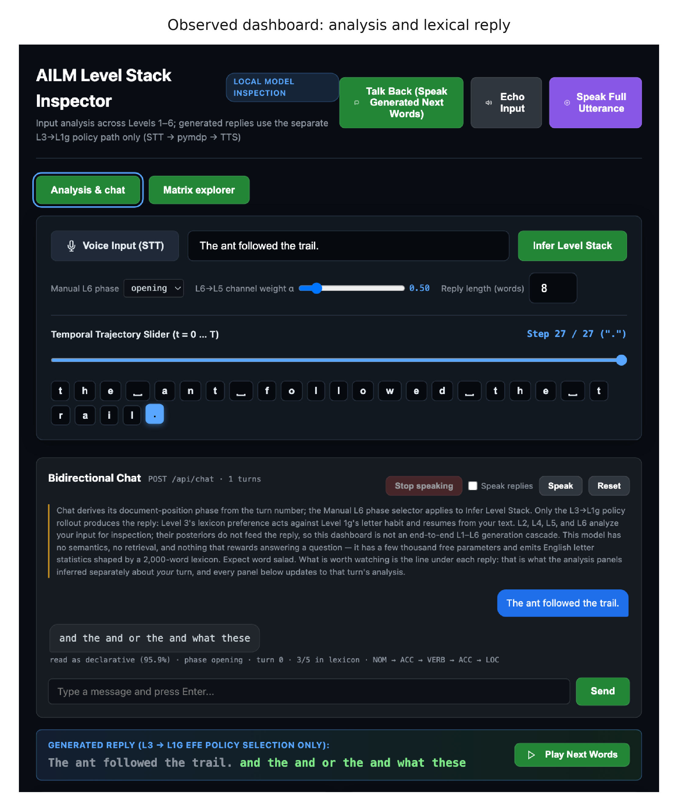
data/dashboard_capture/; figure provenance binds these
inputs and the framing generator. Altered pixels or source assets
inconsistent with those bindings would falsify the capture’s provenance
and cause the generator to refuse.8.5 Variable injection and source provenance
All 2577 claims live in data/claims.json, each recorded
by the run that produced it with its run_id and source
location. src/ailm/manuscript_variables/ supplies the
double-brace token map this manuscript is written against.
Recorded-value tokens follow a mechanical rule: the token is the ledger
label uppercased, so stage1_letter_perplexity becomes
STAGE1_LETTER_PERPLEXITY. Provenance companions are
generated alongside each value, so a claim’s originating run is
available without a separate lookup. Other tokens are explicitly derived
expressions or configuration and metadata values; they do not acquire
ledger entries merely by appearing in the map.
The failure behavior is the point. A required claim absent from the
ledger raises MissingClaimError and the render stops; it
does not emit a plausible default and does not leave an unresolved
marker in the output, because an unresolved token in a rendered PDF
reads as a fabricated result.
tests/test_manuscript_variables.py tests that failure path
claim by claim, deleting each required label in turn and requiring the
error to name it. The consequence for a reader is narrow but real: each
ledger-backed value in sec. 5 can be traced
to its entry and owning recorder; derived values require the additional
calculation in the token writer. The refusal protects required recorded
inputs. It does not prove the measurements correct or make arbitrary
hand-written numerals impossible.
A concrete trace starts at tbl. 9,
which prints the letter-level perplexity as the token
STAGE1_LETTER_PERPLEXITY. Lowercasing gives the ledger
label stage1_letter_perplexity; its companions resolve to
run stage1_letter_gate and source
scripts/record_stage1_claims.py. Running that recorder,
.venv/bin/python scripts/record_stage1_claims.py,
re-records the entry;
.venv/bin/python -m pytest tests/test_stage1_gate.py -v
recomputes the same perplexity from the vendored counts and re-applies
the declared bar; and
.venv/bin/python scripts/audit_gates.py re-derives the
verdict that bar is judged under. The first two steps of that walk —
token to label, label to run and source — are mechanical and hold for
every one of the 2577 claims. Only the last step is claim-specific, and
it is not guesswork either: the source field names the
script that recorded the number. tbl. 21
identifies the ordinary recorder phases; the one-shot replication is
retained under its separate protocol above.
Selected mathematical claims are stated and proved in Lean 4 under
formal/: the gate taxonomy of eq. 10 and eq. 12, the pre-registered sweep-shape
predicates of sec. 4.10, both halves of
eq. 6, and the Bonferroni arithmetic behind
tbl. 36. The layer ships 149
named theorems and 34 witness examples with a recorded
formal_sorry_free verdict of true, and it cannot drift from
the recorded measurements: the one ledger-facing module is generated
from data/claims.json, byte-identity-checked on
regeneration, and every ledger-facing theorem that fixes a threshold
closes by decide, so a re-record that moves a measured
value across a declared threshold stops the corresponding proof from
compiling. What the layer does not establish — that any recorded number
is correct — and the rest of its deliberate scope boundaries
are set out in sec. 14.
8.6 Deterministic build epoch and figures
This document was rendered at 2026-10-27T02:45:22Z from version
1.0.0. The timestamp honors SOURCE_DATE_EPOCH; when it is
omitted, the manuscript orchestrator derives the epoch of the last
audited commit that touched an input outside the regenerable
output/ tree, so the build stamp remains reproducible along
with everything else and a commit that only refreshes rendered output
does not move it. Figures are written deterministically by
src/ailm/figures/ with fixed layout and recorded inputs.
Where a figure validates a bootstrap statistic, it uses the registered
seed. Numeric content is drawn from the same recorded values as the
prose. Sharing that source removes a separate transcription step;
correct token selection, current generation, and rendered figure/table
agreement still require their own checks.
One caveat on exact equality: pymdp computes in float32 under JAX, so
analytic anchors are compared with recorder- or test-owned tolerances
rather than exact equality. A uniform transition over 39 phones measures
marginally below 39, not exactly it. That float32 premise is recorded,
not assumed: jax_enable_x64 is recorded as
false, preserving the default float32 path used by the
shipped pymdp agents. The Stage 0 recorder pins the live flag at record
time (env_jax_enable_x64, alongside the JAX, jaxlib, and
pymdp versions and the platform) and refuses to record with JAX’s 64-bit
mode enabled, since a flipped flag would change the numeric story, not
merely the rendering. tests/test_pymdp_smoke.py asserts the
recorded value still matches the live interpreter after importing the
pymdp path, so the recorded premise cannot silently outlive the
environment it describes. Reproducing the figures to the byte requires
the same matplotlib and font stack; reproducing the numbers
requires only the pinned environment.
8.7 Availability and retained upstream licenses
AILM’s own code (src/, scripts/,
tests/, formal/, and gnn/) is
licensed MIT; the manuscript, documentation, figures, and other authored
data are licensed CC BY-SA 4.0. The vendored count artifacts keep their
own, narrower upstream terms, which neither AILM license relicenses: the
Brown-derived counts carry NLTK’s non-commercial package terms, the
Czech-PDTC artifact is CC BY-NC-SA 4.0, the English EWT artifacts are CC
BY-SA 4.0, and the CMUdict counts retain the upstream BSD-2-Clause
notice. THIRD_PARTY_NOTICES.md inventories each component
with its transformation, and LICENSE states the
commercial-use boundary the two non-commercial artifacts impose on the
distributed wheel.
The recorded environment names an arm64 workstation
(macOS-27.0.1-arm64-arm-64bit) and the pinned JAX precision
setting. The CUDA extra is an untested install path. These fields do not
record device placement for each computation and do not establish
CPU-only execution of the separate Ollama model server. No wall-clock
performance claim is made here.
The work has a single author, who wrote every gate the audit reports on and every control that tests it. The external scrutiny to date is the audit and cross-vendor model reviews recorded in the decisions log, which the author commissioned and answered; no independent reproduction of the checkout is recorded in this evidence.
The work received no funding: there are no grants and no external funding of any kind. The author has no competing interests to declare.
sec. 6.1 states what that single-author position means for the gate-audit method’s own evidence.
9 Established Findings and the Next Independent Tests
AILM now combines explicit GNN-declared components with a live conditional message schedule. The connected GUM result, the historical component experiments and the gate-audit method support different conclusions and retain their own populations, comparators and limitations.
The six modeled levels are built and their outcomes recorded; one of
the six verdicts is qualified. The clause level clears a gate that was
registered before its artifact existed, on an observation alphabet
widened past the case roles, and its privileged-label gain resolves away
from zero under a paired whole-document bootstrap. That gate is a
development-session specification and has no held-back replication,
because the held-back partition was already spent. The case-only clause
model it displaced is retained as an ablation: its gate is non-passing,
its privileged-label gain is unresolved on both reported scales under
the same bootstrap, and its detectability control recovers a larger
planted effect but supplies no equivalence claim (decision 83). The
document-position (tercile) level — narrative in code — has
a positive point estimate in a direction timestamped before its
measurement, but its document-clustered primary interval spans zero and
is non-confirmatory (decisions 25–26). The same estimand, registered
separately under decision 115 and carried to the held-back split, gives
0.008288 nats with an interval that excludes zero at the development
coverage and spans zero at the family-corrected one, on a population
whose own resolution, 0.005726 nats, is coarser than the
development-sized effect (sec. 5.8.2); the development result
is not retracted by it. The level’s sentence-sign statistic is secondary
and nominally positive; it crosses neither the fixed Bonferroni
threshold nor its Holm step-down threshold, the fixed threshold being
the one 7 of 16 declared tests cross. sec. 5
holds the letter and phoneme measurements and points to where each later
level’s measurements are recorded. All level builders produce ordinary
pymdp agents, but among the historical stage scores only L1’s headline
filters live; the later levels’ exact or NumPy score paths and the
live-Agent checks that license them are inventoried in tbl. 3 and sec. 4.11. Two of those checks are exhaustive:
L5 uses an exact closed-form mixture with a live-Agent
posterior-agreement check on the full held-out set that is not score
equivalence, and L4 uses a NumPy filter that the live Agent reproduces
at every held-out position.
The historical stack first established representational hierarchy:
L2B infers over a variable L1 represents, observing the alphabet L1’s
states are drawn from. The historical standalone decoders exchange no
beliefs. The seven registered receiver interventions are built on that
composition: five measured separately, the case-word bridge measured as
an exploratory prior-only sweep on the development population, and its
privileged-oracle diagnostic the one registered seam that records no
estimand. The measured ones disagree in sign. The L3→L2B lexical channel
and L1→L2B coupling enter the same letter-to-phone receiver but differ
in sender: the lexical channel helps (+3.333 pts at p =
3.756e-102), the coupling harms (moving accuracy -0.2639 pts at
p = 1.547e-06). L3→L1g, the lexicon-to-letter preference used
by the recorded generation run, helps without a paired significance test
behind it. The independent L6→L5 and privileged
punctuation-type-oracle→L3 interventions are less clean and stay on the
record as such. L6→L5 moves the case-only clause model’s D
prior against a tercile-scrambled control, in a receiver whose
privileged-label gain is unresolved. The independent oracle→L3
word-prior intervention is a corrected helpful result on both
directional summaries that falsified its predicted harm (sec. 4.10). It is not evidence about an L5 output
channel. These experiments were not executed as a connected cascade. The
subsequent connected runtime executes explicit conditional messages and
live next-word policy selection. Its locally frozen GUM comparison spans
22 previously unexamined documents after excluding 8 development
documents. The mean paired normalized-character log-loss gain is
0.4420177562251402 nats with interval [0.42010385279024465,
0.46325671494396264], indicating lower integrated loss. Full-stream word
loss remains infinite because out-of-vocabulary tokens receive zero word
probability. These are results for a fixed conditional schedule and
normalization, not a globally exact joint posterior or external
replication (sec. 5.1).
Comprehension filtering alone does not distinguish the system from
classical Bayesian state estimation. Every modeled level has a flat
C and a single action in comprehension, so no policy is
scored and no expected free energy is computed. L1’s headline and the
bounded L2 verification paths execute live filtering; that recursion is
the forward algorithm of a hidden Markov model, while the L2 full-set
and later headline scores use the exact or NumPy paths just enumerated.
This is precisely what lets a plain-NumPy HMM serve as the
implementation-independent reference decoder at the checked levels
(sec. 7). The additional policy-selection
mechanism is exercised in generation, where the letter transition is
made controllable and the lexicon supplies the only non-flat preference
vector in the system, so the emitted symbol is selected by minimizing
expected free energy over policies (sec. 4.9). Even that one place is narrower than it
sounds, and saying so is a result rather than a concession: because the
controllable transition is deterministic, the information-gain term is
identically zero and policy selection reduces analytically to a
preference-weighted softmax over the habit (eq. 17). The measurement is reported with a
control that restores the term to its analytic ceiling, so the claim is
that the formalism contributes nothing beyond that softmax
here, not that it could not elsewhere. A transition that is
both stochastic and action-dependent would put the term back and let it
bear on the choice; the uniform-transition control fixes the ceiling
such a design works within, and the word-state construction of sec. 4.9 shows that uncertainty without
action-dependence buys nothing. The budgeted-attention arm (sec. 6.1) already measures the case where that
term is the whole policy. The gate-audit findings that follow concern
these filtering models and the thresholds written for them; they are not
a verdict on active inference as a general framework.
The more transferable results are the gate-audit method and the
negative findings. A load-bearing modeling decision, which slot the
learned matrix occupies, was wrong in a way the library could not
detect. pymdp validates more than normalization: it checks
array shapes against declared factor dependencies, index bounds, and
control consistency. What no structural check reaches is semantics. A
column-stochastic bigram is column-stochastic whichever slot it
occupies, and nothing in the library knows whether an axis was intended
to mean next given current or its transpose. The wrong wiring
was not loudly broken but quietly anti-informative, and it
slipped under a threshold that had never been checked against either a
trivial baseline or an achievable ceiling. Then the same class of
oversight produced two opposite gate defects: one threshold no correct
implementation could ever reach, one that a lookup table already
cleared. The detection method is the same in both directions, and it is
cheap: measure what a model doing none of the work scores, measure what
the data allows, and accept a threshold only when the first fails it and
the second clears it.
That check is expected to generalize past this project and past
active inference, a working hypothesis in the sense of sec. 2: its evidence is every declared gate of
one repository, written and audited by one author, and nothing outside
it has yet been tested. It would apply to any staged or gated build
whose progress is defined by a numeric criterion: accuracy floors in a
test suite, latency budgets, coverage thresholds, benchmark targets in a
research program. The taxonomy of sec. 4.2 needs only three measured quantities,
two of which can usually be obtained before the system exists, and the
checklist there is written to be run before the build rather than after
the result. scripts/audit_gates.py is what makes it a
re-runnable artifact instead of something someone happened to do twice;
the same shape would fit any repository with declared thresholds.
The check was then turned on a threshold of our own, which is the harder half of the same lesson. The benchmark originally refused to report a calibration number when too little of a model’s reported distribution was observed, and that floor was declared on an argument rather than measured. Measuring where it belongs put it at 1.9826100924184078 times the declared value, and at a mass the serving interface cannot supply for 0.395 of positions: the floor was not conservative, and no reachable gate of that shape would be (sec. 13). The instructive part is how nearly the measurement endorsed the wrong answer. Both metrics’ rule disagreement crosses zero once, essentially at the declared floor, while the two reconstructions are still far apart; a locator that took the first crossing would have confirmed 0.5 by a coincidence of opposite biases. A threshold that survives its own audit is not thereby correct, and the audit needs its own negative control.
One reporting change follows from the same discipline. Every interval-spanning paired result in this project is stated as an interval rather than as an absence, because “no effect was found” is weaker than the data support and hides the distinction that matters: no near-null arm in the plotted paired-bound roster produced enough discordant pairs to support an equivalence claim, so each bounds its effect and says nothing about absence (sec. 15.3). The one arm that once did, the lexical channel at its highest tested weight, became a decided effect when its backoff defect was corrected (decision 110), and the roster now holds bounds only. A bounded effect and an unresolved one can read alike in a table; separating them is the reporting result.
The project’s other negative result is about its own headline architecture. An inter-level message, L1’s predictive over letters folded into L2B’s observation likelihood, was built rather than assumed, and it moved accuracy by -0.2639 points against the uncoupled decode, a loss significant at paired McNemar p = 1.547e-06. The channel works; it simply carries nothing L2B does not already observe. Reporting that is the point: the mechanism had been asserted in this project’s own documentation before anyone measured it, which is the same failure as an unfalsified threshold, one layer up. By contrast, the L3→L2B lexical channel was prospectively specified in the same development session, built, and measured as helpful (3.333 pts), so the novel-information criterion (decisions 18–19) is falsifiable, and on that pair — same receiving level, opposite senders — its prediction matched the development-population result. Its next test went the other way. The privileged punctuation-type-oracle→L3 word-prior intervention, which the criterion itself named as its cheapest falsification and predicted would harm, instead moved the word prior’s held-out perplexity slightly in the helpful direction throughout the tested positive grid; the best tested weight is its high endpoint, not a located optimum (3.268023 → 3.263007, decision 27 and sec. 5.10.3); the token-direction tally agrees, with 51,364 improved against 22,649 made less probable. The predicted harm was not supported, so the criterion’s first clause is qualified on that channel. One prospectively specified supporting result and one corrected result that falsifies the criterion’s prediction leave a criterion under test, not an established one.
Three subsidiary lessons carried real cost here. A reproducible evaluation subsample is not a representative one, and an unbiased subsample of the same size can be too small to establish the effect it correctly measures. The resolution was to remove the constraint that forced subsampling: require an implementation-independent oracle and the pymdp decoder to agree on the bounded comparison subset (0 disagreements), then compute full-set statistics. A verification gate that runs only on synthetic fixtures constrains nothing about the shipped artifact: the claims scanner had never been pointed at real prose, and an unbacked claim sat in the repository’s own README for an entire stage while every test passed. A failure signature that catches the mis-wirings you thought of is necessary but not sufficient: an emission normalized along the wrong axis cleared the baseline comparison while being wrong, and only a column-sum invariant and numerical agreement with the oracle pinned it down.
The staged-gate method’s own description was inaccurate, which is why
sec. 2 states the qualification
alongside the claim-strength labels rather than leaving it to this
section. The original Stage 1–4 gates were restated after those levels
had been built or measured because their thresholds were vacuous,
unreachable, or named the wrong population (tbl. 22, tbl. 27). Later declarations were also
re-scoped during audit. Stage 6’s direction was registered before its
held-out measurement, but the development population and analysis family
were reused and its clustered primary remains non-confirmatory. The
repaired gates and controls are more rigorous, but they do not turn the
historical process into sequential validation, and no multiplicity
correction repairs population reuse. A rerun of the frozen family
against a population never inspected while the gates were written was
pre-registered, executed to its first data touch, and retired by
exhaustion for the external_lexicon members (decision 91);
the ud_ewt_test members were then scored exactly once
against the held-back EWT test split under decision 111 (sec. 10.6): two clear the frozen per-test bar in
their recorded direction, two yield no discordant pair, and the other
twelve members of the family remain development-population inference.
The supplements that follow — the gate-audit trails and the confirmatory
replication, the channel factorial, operation and byte counts, the
registered external probes read as a reference frame rather than a
competitiveness claim, the machine-checked Lean layer, and the
statistical apparatus the paired results rest on (sec. 10, sec. 11, sec. 12, sec. 13, sec. 14,
sec. 15) — carry the detail behind the
claims and qualifications stated here. Naming the defect is not the same
as fixing it: the same honesty the method claims for its measurements is
owed for its own process.
What travels beyond this one repository is the pair the introduction opened with: an explicit discrete generative language system whose probabilities, preferences, habits and policy precision are inspectable, and a gate-audit-and-claims-ledger method for holding a staged build to its own thresholds. Neither depends on active inference to be useful, and neither depends on this corpus, this language, or this author’s own gates having been the ones checked. The next test of either is a build this project did not run: a second staged system, audited by someone other than its builder.
What comes after this paper follows the same three commitments the abstract opens with — a generative model declared in Generalized Notation Notation, an Active Inference formalism that turns that declaration into filtering and policy selection, and a grain of linguistic description the declaration is built along — rather than abandoning any of them for scale. That combination is what makes the open work in sec. 6.4 proposable in the terms this paper already uses: a new level, a new language, or a new cross-implementation render is another GNN declaration and another conformance check, not a different kind of artifact; a globally normalized hierarchy would require a new joint specification and fresh comparisons beyond the conditional connected runtime measured here; and a composition with a large language model, in either direction, is answerable to the same discipline that kept this project’s own fitted-probe proposal from certifying its own circularity. None of that is claimed to have happened. It is what the method this paper reports is for.
10 Supplement A: Gate Audits, Mutation Controls, and Held-Back Replication
sec. 4.2 states the typed gate taxonomy and how a threshold is placed and checked; the verdicts that taxonomy produces are reported with each level’s results in sec. 5. This supplement is the trail behind those verdicts: the re-runnable audit script that classifies every declared threshold, the pre-build checklist the audit experience distilled, the defect findings worked through stage by stage, the Level 3 mis-wiring catalog with the scaling ladder behind it, and the per-member detail of the confirmatory replication on the held-back split.
It sits here rather than in the main text because the reader who wants the verdicts needs a paragraph, and the reader who wants to re-derive them needs the trails. The verdicts stay in sec. 4.2 and sec. 5; the script’s exit conditions, the worked defects, the catalogs, and the replication detail are here. Every number in both places resolves to the same ledger entry.
10.1 Declared-threshold defects and gate audits
10.1.1 Stage 1: the declared threshold sat beyond the information-theoretic ceiling
The Stage 1 gate was declared as
>=2 nats above uniform. The declaration is
information-theoretic, so it can be checked against the data before any
model exists, and doing so takes one pass over the training counts. The
conditional entropy \(H_{\text{train}}(X_t
\mid X_{t-1})\) of the Brown bigram distribution caps the gain
any order-1 letter model can realize over uniform on that
distribution at 1.0262 nats. The declared target exceeds that
ceiling by a factor of 1.95. By eq. 12
the verdict is UNREACHABLE.
The population qualifier is not a hedge, and dropping it would contradict sec. 3. What that sentence establishes is that the fitting distribution contains barely more than half the first-order information the gate demands, so no amount of better smoothing or better implementation supplies the shortfall from the data the model was given. What it does not establish is anything about the held-out passage: eq. 8 bounds order-1 log loss under \(p_{\text{train}}\) and not under the evaluation sample, whose own first-order optimum can sit either side of it.
The evaluation population is not a second corpus sample. It is the
AILM-curated normalized composite of an AILM-authored rhyming sentence,
traditional English tongue twisters and nursery verse, and a pangram: a
short normalized passage repeated 3 times. The complete UTF-8 protocol
string is 1323 bytes, identified as
ailm-stage1-letter-evaluation-v1 with SHA-256 prefix
513f73d02c22; its terms are CC BY-SA 4.0 for the AILM
selection and normalization; cited source phrases are public domain in
the United States. Repetition increases the scoring denominator but does
not create independent linguistic material, so this passage supports a
deterministic protocol check, not a representative-English claim.
The gap that leaves is worth closing rather than conceding, because the same computation performed on the right population closes it exactly. On the transition positions, cross-entropy under empirical bigram distribution \(q\) decomposes as eq. 20:
\[\mathbb{E}_q\!\left[-\log p(X_t \mid X_{t-1})\right] \;=\; H_q(X_t \mid X_{t-1}) \;+\; \sum_{a} q(a)\,\mathrm{KL}\!\left(q(\cdot \mid a) \,\|\, p(\cdot \mid a)\right),\qquad{(20)}\]
and the second term is non-negative for every order-1 conditional
\(p\). The gate, however, scores all
\(T\) characters: the first is
predicted from the fixed uniform \(D\),
and only the remaining \(T-1\) are
transitions. Its exact lower bound on the same all-position mean as
compute_perplexity is therefore
\[H^{*}_{\mathrm{all}} = \frac{\log |\mathcal{A}| + (T-1)H_q(X_t\mid X_{t-1})}{T}.\qquad{(21)}\]
For this fixture, 1.7893 nats over 1322 transitions plus that initial prediction yields 1.7906 nats over all 1323 scored positions. That all-position quantity — not the transition-only entropy — is the exact lower bound on what any model with this fixed uniform start and first-order conditional can score. It caps the gain available over uniform at 1.6106 nats, still short of the 2-nat target. The declared gate is unreachable on the evaluation population as well as on the training one, and now as a theorem rather than as a hope.
The estimate’s finite-sample bias runs the safe way, which is why so
few transitions can carry the argument. The plug-in estimator of an
entropy is biased downward in the undersampled regime, by an
amount that grows with the number of cells relative to the sample (Miller 1955; Paninski
2003); here that is 1322 transitions over an alphabet
admitting \(30 \times
30\) bigrams. A smaller entropy means a larger apparent
gain, so the bound above is generous to the gate. A gate that fails
against a generous bound fails, which is the one direction of bias an
unreachability argument can absorb. The same estimator would need a
correction, not an appeal to direction, if the argument ran the other
way — if a ceiling were being claimed as reachable — and no
argument in this paper does that.
scripts/record_stage1_claims.py refuses to record at all if
the measured gain ever reaches the declared target, because that outcome
would demand rewriting this section rather than re-rendering it, and
tests/test_evaluation_population_bound.py supplies the
passage that makes the refusal fire.
One derived quantity moves when the denominator is corrected, and the corrected one is the honest figure for a same-population statement. Against the training budget the agent captures 89.9% of the available first-order signal; against the bound on the passage it is actually scored on, 57.3%. The first compares a held-out numerator to a training denominator and is reported here only because the literature’s usual framing does the same.
The trained agent realizes 0.9229 nats, which is 89.9% of what the order allows (tbl. 19). Under the declared gate that near-optimal result reads as a failure, and the natural response to a failure — build a better bigram model — is guaranteed to be wasted. An unreachable gate does not merely fail to discriminate; it actively points the work in a direction that cannot succeed. The restated gate is the context-free unigram baseline, which the agent clears by 8.0343 perplexity units. That bar is reachable and, unlike uniform, diagnostic — with one qualification the ledger carries. A model can beat uniform while carrying no context at all, and beating the training-estimated unigram on a finite held-out passage is consistent with using the previous letter but does not by itself attribute the gain to it: a different context-free distribution can land below the count-estimated bar through distribution shift alone, and one measurably does — the trained transition’s own context-marginalized distribution scores 19.955 against the bar’s 19.9558 on this passage. The attribution is carried instead by a context-destruction control: rotating the trained conditionals off their own contexts — the same thirty distributions, mis-assigned — collapses the model to 159.3667, far above the bar on the identical positions, so the margin the agent realizes is attributable to correctly-assigned previous-letter conditioning rather than to the letter frequencies its transition happens to carry.
10.1.2 Stage 2: the declared threshold sat below the baseline, against an absent oracle
The Stage 2 gate was declared as
letter->phoneme accuracy >=60% on the English EWT oracle.
The first error is that the oracle does not exist. Universal
Dependencies English EWT is a syntactic treebank (Nivre et al. 2020; Silveira et al.
2014); its CoNLL-U fields are lemma,
upos, feats, and deprel, with no
phonemic annotation of any kind. The line had been copied from the Stage
4 case gate, where UD is at least the right corpus — though sec. 4.6 shows the eight-way labeling that gate
scores against is a documented heuristic rather than a gold standard, so
it was defective too, for a different reason. A phoneme task cannot be
scored on UD at all, at any threshold.
The second error survives fixing the first. Measured on held-out
CMUdict, a context-free per-letter lookup table — no transition matrix,
no pymdp, no active inference — scores 70.255%. The declared threshold
sits below the trivial baseline, so a model doing nothing hierarchical
passes. By eq. 12 the verdict is
VACUOUS, and it would have remained vacuous on the correct
corpus.
| Stage | Declared threshold | Trivial baseline \(b_P\) | Best comparator \(c_P\) | Comparator type | Verdict | Restated as |
|---|---|---|---|---|---|---|
| 1 letters | >=2 nats above uniform |
unigram letter frequencies, 19.9558 | empirical order-1 optimum on the evaluation passage, 5.9928 | model-class bound | UNREACHABLE |
beat the unigram bar |
| 2A phonemes | inherited 2-nat wording | unigram phone frequencies, 27.5944 | exact all-position order-1 optimum, 15.8313 | model-class bound | UNREACHABLE |
beat the unigram bar |
| 2B letter-to-phone | >=60% on the English EWT oracle |
per-letter lookup table, 70.255% | whole-word smoothing, 75.642% | reference model | VACUOUS |
beat the lookup table, paired McNemar |
The middle row of tbl. 22 is the payoff. Once Stage 1’s defect had been diagnosed as unreachable rather than as a threshold that happened to be wrong, the same measurement was cheap to repeat at Level 2, where the available gain over uniform is 0.9016 nats on the exact all-position protocol, below the inherited 2-nat threshold. The wording would have shipped a second time. A taxonomy earns its keep by making the second instance of a defect cheaper to find than the first.
10.1.3 A reproducible subsample is not a representative one
The third finding is not about the threshold but about what the threshold is evaluated on, and it is the one most likely to recur, because the reasoning that produces it is locally correct.
The letter-to-phone evaluation originally took a deterministic prefix
of the held-out pair list, pairs[:limit], on the argument
that a prefix needs no seed and is therefore perfectly reproducible. It
is. But g2p_pairs is alphabetically sorted, so a prefix is
only words from the start of the alphabet. Reproducibility and
representativeness are independent properties, and satisfying the first
is not evidence about the second. Measured on that prefix the
letter-to-phone (G2P) margin is 1.691 points against the full set’s
0.546, an overstatement by a factor of 3.1, which reads as a comfortable
pass rather than the thin one it is. The prefix spans 4 word initials
where the full held-out set spans 27. Evenly spaced indices cost exactly
the same and span far more of them, and _iter_pairs in
src/ailm/levels/phoneme.py now takes a stride instead.
The finding is not asserted from those numbers, it is re-derived from
them: scripts/record_subsample_claims.py computes the
overstatement factor from the two recorded margins and refuses
to record if it is not greater than one, and refuses again if
the prefix ever spans as many initials as the full set. Either refusal
means the bias this section is built on has disappeared and the section
needs rewriting, which is the outcome a guard should force rather than
absorb.
Fixing the bias exposes a second problem underneath it, and separating the two is the part worth generalizing. The first contrast is about selection and holds size fixed: the alphabetical prefix over 7982 positions against an evenly spaced stride truncated to the same size, 7959 positions, whose margin is 0.327 points — much nearer the full-set figure than the prefix’s. The second contrast is about size and holds selection fixed: that same honest stride returns p = 0.2375, and a denser stride, with a margin of 0.489 points, is closer but still short of the declared criterion, while the full 42,820 positions reach p = 3.468e-06. An unbiased subsample of the same size is underpowered. The biased prefix had looked significant, and it looked significant for the wrong reason: not because the effect was large but because the subset was easy. The bounded pymdp subsample the stage tests still run — 13,224 positions, p = 0.02881 — is kept for exactly that reason: it is a live demonstration that this procedure returns “not significant” on real data of an inadequate size.
At the Bonferroni-corrected per-test threshold of the declared family, 0.000625 (sec. 15.2), the full set has power 0.943796 against the fixed reference share 0.55 over its 2524 discordant pairs: it could have detected the smallest effect this project treats as interesting. Its effect size and exact interval are recorded with the remaining primary paired effects in tbl. 36.
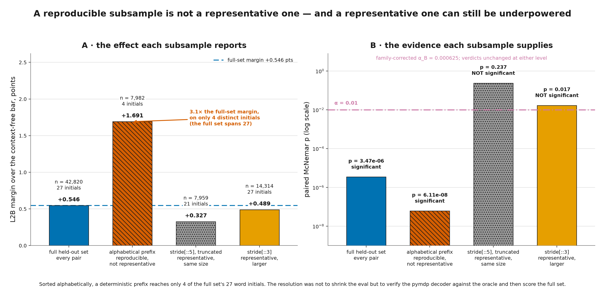
fig. 28 shows why neither subsample is an acceptable evaluation. The resolution was not to shrink the claim or inflate the sample, but to remove the constraint that forced subsampling in the first place: test pymdp and the numpy oracle against each other on a bounded subset — 13,224 of the 42,820 held-out positions — where they disagree on 0 positions (eq. 16), then compute full-set statistics with the fast oracle. That is tested equivalence on the checked positions and an extrapolation beyond them, not a proof that the two decoders are the same function (sec. 4.11). The same bias recurred in Part A, where a length-matched-subset measurement gives 15.2882 for a quantity whose full-dictionary value is 16.7445; the two are different measurements over different position sets and must not be reported interchangeably, so Part A is now computed in closed form over all 800,198 positions.
10.1.4 Level 3: the declared gate states a condition the bar itself already clears
Level 3’s declared gate was “perplexity below 500 on PTB-1k”. Measured, the letter-bigram bar itself scores 9.0547, clearing 500 by a factor of 55.2. The gate was vacuous by a wide margin and named a corpus the project does not have — the third borrowed round constant to turn out to constrain nothing.
The restated gate compares the level against a letter-bigram model over the identical alphabet and the same whole-document training partition. The bar is fitted to every training type while the word prior is fitted to its bounded lexicon; both are scored on the identical held-out in-vocabulary positions. This gives the non-lexical comparator strictly broader training support. tbl. 23 places it against the full comparator ladder.
| Comparator | Uses the lexicon? | Per-emission perplexity |
|---|---|---|
| Uniform over 27 symbols | no | 27 |
| Context-free letter unigram | no | 16.1715 |
| Letter bigram — the bar | no | 9.0547 |
| Word times position model | yes | 3.2713 |
| Held-out-oracle word model — privileged reference | yes | 3.2448 |
The margin is comfortable. That comfort is exactly what makes the level the sharpest illustration of the lesson tbl. 28 introduced one level down: a lexicon is so much information that almost any word prior beats a letter model. In all, five mis-wirings were built against the bar; four are scored and recorded, and tabulated below. The remaining arm — end-of-word emitted one position early — assigns zero probability to every true path, so its perplexity is unbounded and it is not a comparable number. It is reasoned rather than recorded (decision 14). Note that running it through the oracle would not return an infinity either: the log floor of sec. 4.11 converts an impossible path into a large finite penalty, so “infinite perplexity” is the analytic statement and not a measurement anything here would print.
| Mis-wiring | Per-emission perplexity | Caught by the bar? |
|---|---|---|
| Uniform prior over words — lexicon kept, frequencies discarded | 4.8095 | no |
| Prior derived from word length instead of frequency | 4.6412 | no |
| Frequency ranking reversed — the rarest words made the likeliest | 6.9101 | no |
| Time-reversed emission — letters emitted back to front | 213.957 | yes |
What pins the level is not the bar but a closed-form identity.
Because every factor except the word prior is deterministic, the
probability the model assigns to a word’s whole emission path must equal
that word’s unigram probability. A live pymdp walk and an
independent derivation that imports neither pymdp nor
jax agree to 1.12e-06 nats over 400 vocabulary words. All
three surviving mis-wirings change the word prior, so every one fails
it.
The general form of the lesson: when a level’s mechanism is highly informative, the baseline comparison stops discriminating precisely because the level is good. Necessary conditions get weaker as models get stronger, and a gate built only from them gets correspondingly less able to fail.
10.1.5 Level 4: one threshold failing in opposite directions on each population
Level 4’s declared gate was “at least 60 percent against the UD 8-case oracle”. It fails in both directions simultaneously, and which failure is observed depends only on which population the threshold is scored against. tbl. 25 scores it against both.
| Population | \(n\) held out | Cases | Majority | Context-free bar | Model | Smoothing | Viterbi | Verdict |
|---|---|---|---|---|---|---|---|---|
| Gold morphology | 221 | 3 of 8 | 63.8% | 63.8% | 63.8% | 63.8% | 63.8% | vacuous |
| Derived oracle | 1319 | 8 of 8 | 26.61% | 42.91% | 50.72% | 49.58% | 47.69% | above-reference |
This is the clearest evidence in the project for a claim the earlier stages only gesture at: a threshold without a named population is not a threshold. The same number, the same corpus and the same model yield opposite verdicts, and nothing in the declared gate’s wording distinguishes them.
The restated Stage 4 gate is beating the context-free \(\arg\max\, p(\text{case} \mid \text{UPOS})\) bar on the derived population, defended by a paired test: 50.72% against 42.91%, a margin of 7.81 points over 1319 positions, with 205 against 102 discordant positions at \(p =\) 4.213e-09. No gate is stated on the gold population, for the reason sec. 4.6 measures: the committed split yields identical predictions from the fitted sequence model and its context-free comparator. That is an empirical paired null on this split, not an exact consequence of the constant observation. The model’s favored share of those 307 discordant positions is 0.667752, marginal exact 95% interval [0.612006, 0.720224], with power 0.04599 against the fixed reference share 0.55 at the family-corrected threshold (tbl. 36): unlike the Stage 2B comparison, this one could not have detected the smallest effect the project treats as interesting.
10.1.6 A context-free comparator is necessary but not sufficient
Requirement 1 of the staged-gate method (sec. 2) says the comparator is context-free and never uniform, because a model that beats uniform has shown only that it knows which symbols are frequent. That requirement is necessary. It is not sufficient, and this section is the demonstration, on this project’s own gates.
Nothing in those requirements or in the pre-build checklist says to look for the strongest comparator that is still not the model. So each gate was stated against the first defensible comparator rather than the best one. Searching that class instead of picking from it changes two verdicts’ meaning (tbl. 26).
The search is austere by design. For each level, fit an argmax over counts of (previous observed symbol, current observed symbol) to the label, on the training split alone, backing off to the per-symbol argmax where a pair is unseen. There is no latent state, no filtering, no inference at decode time, and strictly less information than the filtering decode uses, which sees the whole left context through its belief state. It is the obvious thing, which is the point: a comparator that took ingenuity to construct would be a weaker criticism than one that does not.
| Stage 2B letter-to-phone | Level 4 case | |
|---|---|---|
| declared context-free bar | 70.2546% | 42.9113% |
| shipped model | 70.801% | 50.72% |
| left-context lookup | 72.8188% | 55.4208% |
| lookup parameters | 677 | 65 |
| lookup over model | 2.0177 pts | 4.7005 pts |
| model’s own margin | 0.546 pts | 7.81 pts |
At Stage 2B the lookup exceeds the shipped model by 2.0177 points, which is several times the model’s entire recorded margin over its declared bar. At Level 4 it exceeds it by 4.7005.
No recorded number is withdrawn. The model accuracies, the context-free bars, the margins and every gate verdict stand exactly as recorded, and all of them reproduce. What is withdrawn is an interpretation: that clearing the declared bar showed the latent-state machinery doing the work. It did not, because the bar was not the hardest thing in its own class.
The controls, including the one that is weak. A positive control requires the bigram lookup not to score below the per-symbol argmax it backs off to, since it uses strictly more context; it does not at either level. A negative control deranges the same map, holding the key set, the label multiset and the parameter count fixed and changing only which label sits at which key. At Stage 2B that collapses to 0.6913%, which is clean. At Level 4 it reaches 47.4602%, above the bar and below the lookup, so a substantial share of the Level 4 result is context-conditional label frequency rather than the specific mapping. That is reported rather than suppressed, and it means the Level 4 half of this finding should be discounted relative to the Stage 2B half.
Why this belongs in the paper rather than in a reviewer’s report. It is the gate-audit defect class recurring inside the repair, found by applying the project’s own discipline to the project’s own method. The taxonomy of eq. 12 is unaffected: a verdict still classifies a threshold against a baseline and a typed comparator, and those verdicts are still right. What this shows is that the check is not yet a procedure. A procedure would say: enumerate the comparator class, fit its strongest member on training data alone, and place the threshold above that. Requirement 1 asks only that the comparator not be uniform, and the distance between those two demands is the distance between a taxonomy and a method.
This is the sharpest available argument that the working hypothesis of sec. 2 is worth testing outside this repository. A check that its own author can defeat by fitting a two-symbol lookup table is a check whose failure modes are not yet exhausted.
10.2 Executable gate-audit report
Both defects were found by hand, and being found by hand is not a
property that survives contact with a schedule.
scripts/audit_gates.py performs the classification of
eq. 12 as an executable artifact: for
each implemented stage it measures the trivial baseline, the shipped
model, and the typed comparator and prints them together. Its inventory
comprises the rows of tbl. 22, the
implemented later-stage rows of tbl. 27, and the generation gate, whose
comparators belong with the rest of that level and are tabulated in
sec. 4.9. The inventory is fixed by
AUDITED_GATE_IDS in src/ailm/gates.py and
compared, in order, against the rows the script actually built; a
mismatch aborts the run with its own exit code before a single verdict
is printed. A gate that quietly stopped being audited therefore fails
the run rather than vanishing from it, which is the failure mode an
audit script is most prone to and least able to notice.
The script exits non-zero if any ordinary verdict is not bracketed
(of either strength) or if the model sits on the wrong side of its own
bar, with one exception required by the outcome of the retained
case-only clause ablation (sec. 4.7).
That row must remain ABOVE_REFERENCE, both the model and
fitted privileged reference must sit on the failing side, both
whole-document-bootstrap privileged-label intervals must span zero, and
the planted-effect control must fire. A model pass, a
comparator that clears the bar, or a resolved interval trips the exit
code, because any of them means the finding changed rather than that the
status string may remain fixed. Stages with no implementation are
printed as UNAUDITED alongside their declared thresholds,
so an unchecked gate is visible rather than absent.
Three properties of the audit bound what a clean run establishes. The
typed comparators include a smoothing decode, a conditional entropy, a
per-item argmax, an oracle given the answer — and only some of them
bound the model class. The verdict carries that distinction rather than
leaving it to a footnote: each row declares its comparator’s type,
BRACKETED_BOUND and BRACKETED_REFERENCE say
which strength of comparator beat the baseline, and a reference clearing
a bar never reads as a bound doing so. Where the shipped model scores
above its own recorded smoothing reference, as on the Stage 4 derived
row, the script prints the row with an explicit warning rather than
reclassifying it, because the row is still bracketed-by-reference. The
audit classifies placement only: it says nothing about whether a margin
is large enough to be believed, which is the separate question sec. 15.2 answers and which no threshold
comparison can answer on its own.
The third property is the one this section’s own history creates. Almost every threshold the script audits is a restated threshold, restated after its stage had been built and measured — the audit sets each row’s bar to the measured baseline of the population the model is then scored against. A clean run therefore certifies that the restated rows are placed where the audit convention places them; it does not certify that any of them was chosen without knowledge of the answer. That is retrospective re-certification rather than sequential validation, and sec. 15.2 states what it costs every significance verdict downstream. The counterweight is that a restated gate can still fail: the retained case-only clause row is restated exactly like the others and the shipped model lands on its failing side. Its fitted privileged reference now does too, and its gain remains unresolved under whole-document resampling (sec. 4.7), which is why the script treats a model pass or an interval that no longer spans zero as an alarm.
The canonical Stage 5 row is the one exception to the restatement, and it is worth stating plainly rather than leaving a reader to infer it from a date. Its bar was written down in the decision record before the artifact it scores was regenerated, together with the alphabet, the population, the comparators, the controls, the predictions and the falsifiers, and the entry said in as many words that a mixture failing that bar would mean the widening was decorative. The mixture cleared it. That is a stronger claim about placement than any restated row here can make, and a weaker one than the confirmatory replication of sec. 10.6, because registration and outcome share one development session and no held-back partition survives on which to repeat it (sec. 5.7.3).
The quoted speech threshold uses text-to-speech (TTS) synthesis.
| Stage | Declared threshold | Audit outcome |
|---|---|---|
| 3 words | perplexity < 500 on PTB-1k |
VACUOUS — the letter-bigram bar itself clears it by 55.2× (sec. 4.5) |
| 4 cases | >=60% vs the UD 8-case oracle |
VACUOUS on gold morphology and ABOVE_REFERENCE on the derived oracle, from one threshold (sec. 4.6) |
| 5 clauses | free energy tracks clause length |
VACUOUS — cumulative free energy is monotone under ANY model; on the
document-disjoint derived gate both the model and fitted privileged
reference FAIL the bar (ABOVE_REFERENCE), and the paired
privileged-label gain remains unresolved (sec. 4.7); the canonical widened-observation
gate, registered before its artifact was regenerated, is bracketed and
passes (sec. 5.7.3) |
| 6 narrative | narrative C vector constrains clause priors |
legacy C wording corrected to an L6→L5
D-prior intervention; its structural guards pass, and the
registered recognition point estimate has a document-unit interval that
spans zero on the development population and excludes zero on the
held-back one (sec. 4.8, sec. 4.12.1) |
| 7 speech | Whisper -> phoneme -> TTS round trip |
out of scope as declared — it measures Whisper’s and the TTS
engine’s models; re-scoped to the boundary interface contract,
UNAUDITED as a model gate |
tbl. 27 began as a liability list of unaudited declarations and is now a completed record: every declared gate was audited when its stage was built, and none survived unchanged. The Stage 3 constant was vacuous on arrival, exactly as the unmeasured-baseline shape predicted. The Stage 4 percentage failed in both directions at once from a single threshold. The Stage 5 declaration could not fail for any model. The pattern is uniform enough to state as the section’s conclusion: not one threshold declared before its stage was built survived the measurement of its own baseline and typed comparator.
10.3 Pre-build gate requirements
Applied before writing the level, not after measuring it. Steps 1 through 4 are cheap — they need the corpus, not the model. No gate in this project was built this way: each was declared cheaply, found defective once measured, and restated against the measurement. The checklist is what that experience recommends, not what it records.
- Name the metric and its direction. Fix which side of the threshold is passing, in code, before any number exists. eq. 10 is where a sign error becomes a silently inverted gate.
- Measure the trivial baseline \(b_P\). Build the dumbest model that produces a number on this task — context-free frequencies, a per-item lookup table, the majority class — and score it on the real evaluation set. If \(b_P \succ t\), the gate is vacuous on that population; restate it against \(b_P\) and stop.
- Measure and type the comparator \(c_P\), on the evaluation
population. Use the conditional entropy of that
population, an oracle with access the model does not have, or another
explicit reference, and declare which comparator type the taxonomy
assigns it. If \(c_P \nsucc t\), a
bound type makes the gate
UNREACHABLE; an exceedable type makes itABOVE_REFERENCEand licenses no impossibility claim. A training-distribution entropy is a legitimate calibration reference and is not \(c_P\) for a gate scored held-out; if it is all that is available, say so in the row and do not read the verdict as a same-population comparison. Never inherit a threshold constant from another stage without redoing this step — that is precisely how the 2-nat wording reached Level 2.classify_gaterefuses an untyped comparator, and only a bound type can produce “no implementation could pass”. - Confirm \(b_P\) and \(c_P\) were measured on the same population \(P\) the gate scores the model on. A comparator from one subset and a baseline from another produce a margin that describes nothing, and eq. 12 is a function of the pair \((t, P)\) — a verdict quoted without its population is not a verdict.
- Check the evaluation set for structural bias. Is it sorted? Is a prefix a proper subset of some category? Is it length-, frequency-, or alphabetically filtered? Reproducible is not representative.
- Check the evaluation set for power at the corrected
threshold. If the expected margin is small, compute whether the
intended sample size can establish it at all — against the
family-corrected per-test threshold of sec. 15.2, not the nominal one, because adding a
test tightens the bar for every test. With an exact test the question
has a sharper form than “is power adequate”: below a minimum discordant
count there is no rejection region at any outcome, and
exact_two_sided_rejection_regionreturns that emptiness rather than a small number. An honest effect on an underpowered sample fails, and that failure is uninformative. - Write the negative control before the model. A
deliberately broken variant — transposed matrix, uniform emission,
shuffled labels — that must land on the failing side. If it passes,
GateVacuousErrorand the stage is blocked (sec. 4.11). - Check that the failure signature is sufficient, not merely necessary. tbl. 28 is the counterexample: the wrong-normalization mis-wiring cleared the baseline bar while being wrong. Add an invariant that pins the structure directly.
- Record every threshold, baseline, and typed comparator in
the ledger and register the gate in
AUDITED_GATE_IDSandscripts/audit_gates.py, so the classification is re-derived on every run rather than remembered and a gate that stops being audited fails the run. - Declare any new inferential p-value into the multiplicity
family. A threshold-crossing claim that is not a member of
SIGNIFICANCE_FAMILYis judged against an uncorrected threshold while tightening nobody else’s, which is the one way to add a test and make every existing claim look stronger. A descriptive diagnostic or re-analysis may remain outside only through a named, machine-checked exclusion and prose that carries no threshold-crossing inference (sec. 15.2). - Fix the threshold and the test before the population is scored, and hold a partition back for them. A gate restated after its stage has been measured, or a p-value declared into the family once its value is known, is retrospective re-certification: the correction of sec. 15.2 bounds a fixed family’s Type-I rate and does nothing about a test chosen with the answer already in view. Step 2 and step 3 are the steps that consume the evaluation set, so the partition the final gate is scored on must be one they never touched.
10.4 Level 3: the letter-bigram bar admits a wrong word prior
10.4.1 The letter-bigram bar does not catch a wrong word prior
The level also relocates where the learned content sits. At the letter and phoneme levels the corpus statistics parameterize the transition; here both transitions are structural constants and the single learned quantity is the prior over word identity. That is the level’s whole content — a lexicon with frequencies — and it moves the mis-wiring risk with it. A wrong prior at Level 3 is what a wrong transition was at Level 1, with one difference that sec. 10.1.4 makes the case for: the letter-bigram bar does not catch it. fig. 29 shows the four finite-score mis-wirings beside the correct construction, and which of them the bar catches.
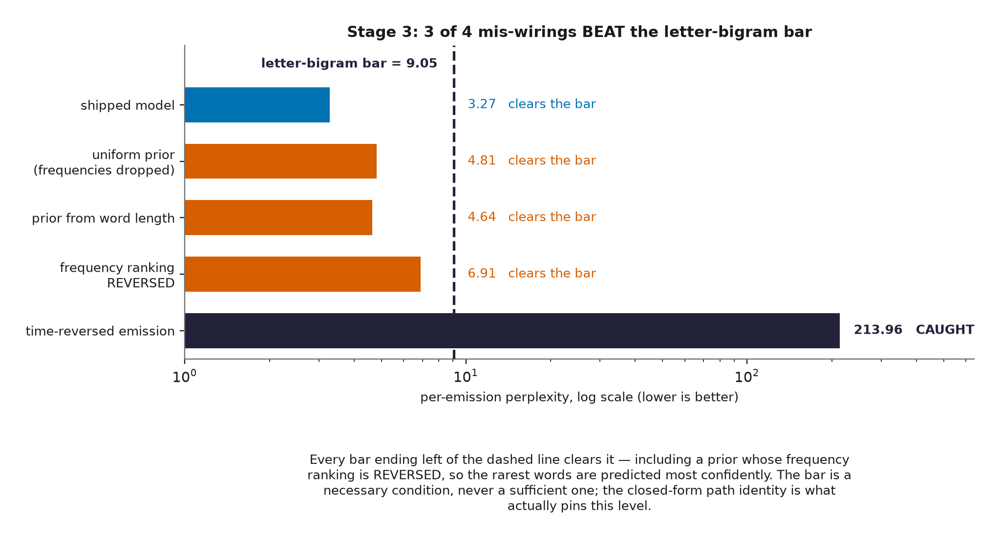
10.4.2 The closed form scales to every length-eligible training type
The vocabulary bound is a property of the agent, not of the model, and the two scale differently. Because every factor except the word prior is deterministic, the closed form is exact at any vocabulary size — a word’s score simply is its prior mass — so the model can be measured wherever a lexicon can be built.
Measured over all 38,007 Brown training types that meet the word-length eligibility rule, coverage rises to 96.74% of held-out tokens and the level scores 3.6062 per emission against a letter-bigram bar of 10.1266 over 548,866 emissions.
Numeric coverage and per-emission perplexity both rise, but their utility directions oppose: more coverage is desirable and more perplexity is worse. So the level is measured at 8 nested frequency-ranked lexicon sizes rather than at two endpoints (fig. 30).
Reading that ladder correctly requires two cautions, and both cut against the easy version of the result.
The comparator is not re-fit at each rung. It is estimated once from the full training frequencies and re-scored on whatever tokens each rung’s lexicon covers, so its matrices are bit-identical at every rung and all of its movement is the changing evaluation population rather than a changing model. That population is the second caution: a rung scores only the held-out tokens its lexicon can represent, because the model assigns no mass outside its vocabulary, so a smaller lexicon is scored on a smaller and more frequent — that is, easier — subset of the same stream. Perplexity is an average over that subset, which makes the per-emission gain incomparable across rungs by construction.
Both numbers are therefore recorded. Per emission the gain is nearly flat, from 0.9638 to 1.0325 nats, and slightly non-monotone. Weighted so that every rung shares the top rung’s denominator — the same one-denominator rule the coverage axis already follows — the gain widens strictly and by 111.49%, from 0.4882 to 1.0325. The shared-denominator series is the one that compares rungs; the per-emission series is what a reader of the table at a single operating point sees. Quoting only the per-emission series would report a property of the denominator as a property of the model, which is the error this level’s own coverage rule exists to prevent.
The tempting reading, that the margin narrows because a larger lexicon is a harder problem, is an artifact of comparing per-emission means over moving populations. On the shared denominator, the gain widens across every rung.
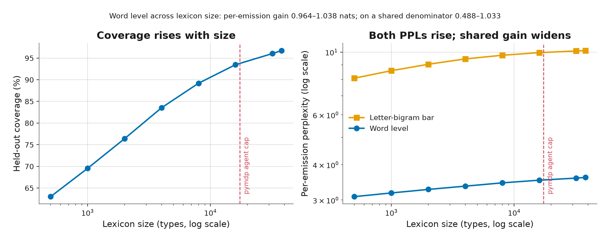
pymdp transition stops fitting in memory; the closed
form is exact beyond it, which is the distinction between what can be
run and what can be measured. The comparator is
estimated once on the full training frequencies and re-scored per rung,
not re-fit, so its curve moves only with the evaluation population. The
panel is falsified if the shared-denominator gain fails to rise
monotonically, if any rung’s recomputed gain disagrees with its recorded
pair, or if numeric coverage and perplexity fail to rise together.
Curve-crossing is deliberately not offered as a falsifier: on
nested frequency-ranked prefixes of a Zipfian corpus these curves cannot
cross, so a reader should treat their separation as arithmetic rather
than as evidence.The gate stays bracketed at every rung: no rung has the comparator at or below the model.
The pymdp agent does not follow it there. The word
factor’s dense transition would be 5.78 GB at float32, so instantiation
caps at roughly 17,320 types, and the builder raises with that
arithmetic rather than failing on an allocation. Stating which of the
two capabilities is lost above the cap — the ability to run
pymdp, not the ability to measure the model — is
the point of enforcing the bound explicitly. A custom lexicon can be
substituted for the frequency-ranked one, in which case evaluation still
uses held-out running text restricted to what that lexicon covers, never
the lexicon scored against itself.
A comparison the reader must not make: the perplexities in this
section are per emission over 27 symbols — 26 letters plus an
end-of-word marker — while Level 1’s are over 30 running-text symbols
including space and punctuation. They are different quantities over
different alphabets and different position sets, and placing them in one
table would be a category error. N_OBS and
N_SYMBOLS are asserted to differ so that the warning is
enforced rather than remembered.
10.5 Beating the context-free baseline is necessary, not sufficient
Level 1 established that a mis-wired emission is detectable numerically but not structurally. Level 2 sharpens the lesson, because its emission and transition are both learned and expose separate placements for the error, and because one of the mis-wirings tested against it passed the signature that caught the first one.
| Mis-wiring | Caught by “beats the context-free baseline”? | What does catch it |
|---|---|---|
Time-reversed B, i.e. \(P(\text{prev} \mid \text{cur})\) |
yes — falls below the bar | the baseline comparison, and an index assertion on
B[0, next, current, 0] |
Uniform, information-free A |
yes — collapses far below the bar | the baseline comparison |
A normalized over phones instead of letters, then
renormalized so pymdp still validates it |
no — clears the bar while wrong | column sums of A[0, :, p] checked before any
renormalization, and a value-for-value comparison of the shipped
emission against an independent numpy re-derivation |
The third row in tbl. 28 is
the useful one. An emission normalized along the wrong axis and then
renormalized is column-stochastic, so pymdp._validate()
accepts it; it is also close enough to the correct emission that a
filtering decode still beats a lookup table. Every check of the form
“the model beats the trivial comparator” would pass. Two invariants pin
the emission, and they catch the mis-wiring at different moments. The
first is that A[0, :, p] sums to one over letters
for each phone \(p\) — but only
before renormalization, because renormalizing is exactly what
restores that sum, and the guard is paired with a control asserting that
the phone-normalized matrix does break it. The second catches the
renormalized variant, where the first cannot: the shipped emission is
compared value-for-value against an independent numpy re-derivation of
\(P(\text{letter} \mid \text{phone})\),
and that comparison carries its own non-vacuity assertion — the
mis-normalized matrix must differ from the correct one by more than the
comparison’s tolerance, or value equality would not be able to see it
either. Structural validation and comparator-beating are both necessary;
neither is sufficient, and only a value-level comparison against an
independent derivation is sensitive to the difference between a right
answer and a nearly right one.
10.6 Held-back replication of eligible family members
The sixteen-member significance family was assembled retrospectively, on the population every gate was revised against, and no correction factor turns that into confirmation. The family is frozen and this section does not reopen it. Its clause-level member is the case-only arm’s paired classification test, which is the arm that was scored when the family was frozen; promoting the widened arm to canonical does not move that member, rename it, or add one. The members with a genuine held-back partition available were the four computed on EWT populations: the UD English EWT test split, which no script in this repository had scored. Under the protocol of sec. 4.12, registered as decision 111 in the decisions log, those four were scored against it exactly once. The population is the whole of that split, 2077 sentences and 25,094 tokens across 316 authenticated source documents, vendored through the identical generators, oracles, exclusion rules and minimum-length filters, with no stride applied because nothing is fitted on it. Every model parameter was read unchanged from the existing development train fits, and the recorder refused to run unless the arrays it built were equal, element for element, to the ones the development artifacts produce. The document identities are disjoint from every development document identity. Both controls were run on this same population before any member was scored: the planted-effect positive control fired decisively (1131 against 448 discordant pairs, p = 3.525e-68), and the label-shuffled negative control did not (445 against 490, p = 0.1501), so a null on this population is a measurement rather than an instrument failure. Of the 4 members scored, two cross the frozen per-test threshold of 0.000625 in the direction their development result recorded, and two yield no discordant pair at all and are therefore not shown rather than shown absent (tbl. 29). Every registered direction and threshold prediction held. The remaining 12 members of the frozen family were not rescored and remain development-population inference. The controls, paired counts, and document-clustered intervals are shown together in fig. 31. The run cannot be repeated: the sentinel claim marks the population spent, and the recorder refuses a second pass.
| Member | Units | Favored | Opposed | Discordant | p | Crosses frozen threshold | Holm rejects |
|---|---|---|---|---|---|---|---|
| Stage 4, derived population | 6878 positions | 1090 | 447 | 1537 | 4.284e-62 | true | true |
| Stage 4, gold population | 1267 positions | 0 | 0 | 0 | 1 | false | false |
| Stage 5, clause type | 1018 sentences | 0 | 0 | 0 | 1 | false | false |
| Stage 6, observed-position sign test | 1090 sentences | 700 | 390 | 1090 | 4.377e-21 | true | true |
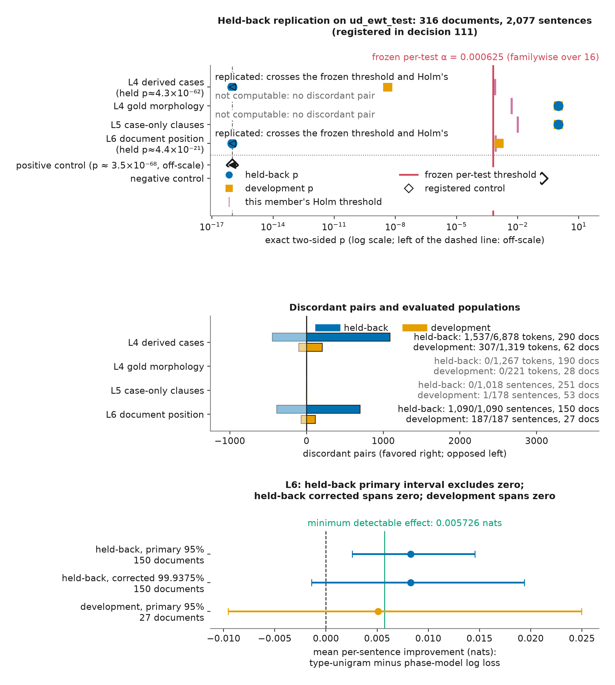
10.6.1 Stage 4 on the derived population, against the per-tag argmax baseline
On the derived case population the forward-filtering decoder was compared against the context-free per-tag argmax baseline over 6878 held-back token positions drawn from 290 documents. The decoder agrees with the oracle labels on 52.14 percent of positions against the comparator’s 42.79 percent. The paired exact McNemar test finds 1090 positions where only the decoder is right against 447 where only the baseline is, giving p = 4.284e-62 over 1537 discordant pairs. The direction agrees with the development result and the comparison crosses the frozen threshold, and Holm’s step-down correction over the same frozen family rejects it as well. The limit this result does not escape is the one the derived population always carried (sec. 10.1.5): most of the case roles have no morphological ground truth in English, so this is agreement with a documented syntactic heuristic and never accuracy against ground truth.
10.6.2 Stage 4 on the gold population, where only marked case roles appear
On the gold population, where labels come from real morphological case marking and cover only the minority of case roles that English marks, the same paired comparison over 1267 held-back positions from 190 documents finds 0 discordant pairs. The decoder and the comparator are right on exactly the same positions, both scoring 60.69 percent, so there is no direction to test and p is 1 by construction. This reproduces the development outcome of sec. 5.6.2, which was also a zero-discordance tie, and it has the same character: the gold population’s observation alphabet contains a single symbol, so the emission carries no information, and on this split the fitted transition did not move the decoder off its comparator. As in sec. 5.6.2, this is an empirical null, not a structural guarantee. The registration named this possibility in advance and required it to be recorded as the outcome rather than designed around. It is a measured null with no resolving power, and it must be read as not shown, never as evidence of no effect.
10.6.3 Stage 5 clause type, against the always-majority baseline
The arm rescored here is the retained case-only clause ablation. It is the member the frozen family names, and the canonical clause level of sec. 5.7.3 has no entry in this table, because the population was already spent when that arm was specified. The case-only mixture classifier was compared against the always-majority baseline over 1018 typed held-back sentences from 251 documents. Both reach 87.52 percent, and the paired test finds 0 discordant pairs, so p is 1. The mixture assigns the majority type to every sentence in the population. This is the development result reproduced in a stronger form on several times the sentences: the development comparison had a single discordant pair and it favored the baseline. The pre-registration predicted that this arm would not cross the threshold, and it did not. The honest reading is that the type signal is not detectable by this classifier on this observation alphabet at this order on this corpus, and the positive control above shows that the instrument would have detected a planted effect on the same population. The widened-observation arm of sec. 5.7.3 is the registered response to that reading, and it is now the canonical clause level. The promotion does not reach back into this row. What the widening changed is the alphabet, not this result: the case-only comparison stands exactly as recorded, on the held-back population, with its zero discordant pairs, and it is the only clause-level statement in this paper that a held-back partition ever tested.
10.6.4 Stage 6 document position, against the phase-blind unigram bar
The narrative level’s registered observed-position score compares the phase-conditional type distribution against the phase-blind unigram bar, sentence by sentence, over 1090 held-back sentences from 150 eligible documents. Mean log loss is 0.3681 nats for the phase model against 0.3763 for the bar, an improvement of 0.0083 nats per sentence. The exact two-sided sign test finds 700 sentences favoring the phase model against 390 favoring the bar, p = 4.377e-21. The direction agrees with the development result, and unlike the development run this crosses the frozen threshold, with Holm’s correction agreeing. Two limits travel with that. The effect size is small in absolute terms, a fraction of a nat per sentence, and a sign test is a statement about direction rather than magnitude. And this is the sentence-level observed-position estimand, in which the true tercile is supplied rather than inferred; the document-level clustered estimand is a different quantity and this result does not speak to it. That quantity was registered separately and carried to this same population, where its interval excludes zero (sec. 5.8.2); the two results agree here, but the development population illustrates the distinction: its sentence-sign statistic is nominally favorable but crosses neither corrected threshold, while its document-clustered log-loss interval spans zero. Neither was allowed to stand in for the other.
11 Supplement B: Channel Factorial and Proper-Loss Re-Scoring
sec. 4.10 reports the measured cross-level interventions and the novel-information criterion that organizes their disagreeing signs. Two of those channels — the letter-predictive and lexical-prefix messages into the letter-to-phone decoder — were swept at one insertion point each, which confounds which message was sent with where it entered the receiver. This supplement carries the exploratory extension built to separate the two confounds: a factorial crossing message source with insertion point under a shared executor, a control that varies the combination rule itself, a fitted variant that replaces four hand-set values with measured ones, and a re-scoring of every cell on the receiver’s own proper predictive loss rather than on accuracy alone. None of it revises sec. 4.10’s reported signs; it explains why the two swept channels disagreed and how much of that disagreement is attributable to the mixing rule rather than to the message.
These are historical receiver experiments. They do not decompose the later connected GUM result into per-channel gains: that comparison switches its named channels together under a different population and scoring schedule.
11.1 The channel factorial separates message source from insertion point
The sweeps above differ in message source and in insertion point, so the gap between them attributes to neither. The crossed combinations were built with one executor dispatching into the same shipped primitives, gated before use by requiring it to reproduce both existing cells’ per-position hit vectors exactly rather than their accuracies, over all 42,820 positions. Each cell reports its best engaged weight, never zero, because zero weight is the uncoupled anchor and a harmful channel maximized over a grid containing zero would report the anchor and appear to do nothing. tbl. 30 gives the complete factorial.
Every weight in this section is selected on the positions its p-value is computed over, and that is a defect in the inferential reading rather than in the measurement. Each cell’s reported weight is the argmax of a grid scored on the held-out split, and the accompanying paired test is then computed on that same split at that same weight. Optimizing a criterion on a finite sample and reporting the optimized value against it biases the estimate optimistically, by an amount that grows with the grid and with the noise in the criterion, and no multiplicity correction repairs it: Bonferroni bounds a declared family of tests, and this is a selection made before any of them was declared. The margins are therefore upper-leaning, and the p-values are smaller than a selection-aware procedure would return.
The exception is the fitted arm below, which is the one place the separation is made: its 81-point grid is scored against an inner split of the training set, the held-out positions are scored once after selection closes, and the recorder refuses to run if any selection word appears in the evaluation half. Its gain on the selection split (1.5958 points) and on the held-out set (1.4736) being close is the evidence that the fit transferred rather than memorized. Reading the two together is the honest comparison available here: the sweep arms show what a channel can reach when its weight is chosen with hindsight, and the fitted arm shows what one reaches when it is not.
| Message source | Insertion point | Weight | Accuracy | Margin | Bound at 95% | b/c | p |
|---|---|---|---|---|---|---|---|
| Letter (L1) | Evidence | 0.1 | 70.5371 | -0.2639 | [-0.3693, -0.1556] | 217/330 | 1.547e-06 |
| Letter (L1) | Predictive | 0.1 | 70.9038 | 0.1028 | [-0.0414, 0.2463] | 502/458 | 0.1652 |
| Lexicon (L3) | Evidence | 0.2 | 70.8034 | 0.0023 | [-0.108, 0.1126] | 280/279 | 1 |
| Lexicon (L3) | Predictive | 1 | 74.1453 | 3.3442 | [3.0216, 3.6631] | 3333/1901 | 3.598e-88 |
The evidence site harms the letter message and does nothing detectable for the lexical one. The lexical message buys 3.3442 points at the predictive site and moves accuracy by 0.0023 at the evidence site (p = 1), which resolves neither way. Same message, same receiver, same weight grid: a gain at one site and nothing detectable at the other, and the only thing that differs is where it enters. Before the backoff correction of decision 110 that cell recorded a significant cost and this paragraph read “both evidence-site cells harm”; the corrected cell is the null the table now shows. The letter message at the predictive site is the other cell that resolves neither way. Every cell of this table is also re-scored on the receiver’s proper predictive loss in tbl. 31 — the axis the working-hypothesis box of sec. 4.10.4 declares, on which the accuracies here are the secondary readout — and the axes are compared cell for cell there.
The decomposition follows. Message source is worth 0.2662 points at the evidence site and 3.2415 at the predictive one; insertion point is worth 0.3667 for the letter source and 3.3419 for the lexical one. The interaction is 2.9752 points against a diagonal gap of 3.6081, so most of what the two sweeps appeared to say about message content is carried by where the message was inserted.
The mechanism is legible after the fact and was not predicted here in advance, which is why it was worth measuring. The evidence site mixes a message into the observation likelihood, which holds the model’s only hard information about the current position; softening it trades certain evidence for a prior, and that trade is bad however good the prior. The predictive site mixes into the state prior, which is where a prior belongs.
That reading is correct and narrower than it first appears, and the narrowing is worth stating because it was found by asking what the factorial held fixed. Every factorial cell shares one combination rule: linear mixing. Under geometric pooling — a product of experts (Hinton 2002), and the rule the underlying library uses when it combines modalities — the evidence and predictive sites are provably the same computation, since multiplication is associative and the intermediate normalization cancels. Measured on the shipped matrices at an exponent of 0.5 the two sites agree to 9.99e-16 with 0 argmax disagreements anywhere. So what this table establishes is not that the insertion point governs a message’s sign, but that linear mixing makes the insertion point govern it: the rule trades away a certainty in proportion to the weight, and no message repays that trade. A factorial cannot see the factor every one of its cells holds fixed, and naming that factor is the more transferable result. The consequence for the working hypothesis of sec. 4.10 is a qualification rather than a retraction: the novel-information criterion predicted the L3→L2B pair correctly, and the factorial shows the prediction would have found nothing at the other insertion point with the same message.
11.1.1 Combination-rule controls
Varying the rule settles the question the two earlier readings could not, and it does so through a control rather than through a better number. Under geometric pooling a uniform message is inert by construction, since a constant raised to any power cancels in normalization. Measured, it returns the anchor to every recorded digit at every exponent on zero discordant pairs, a margin of 0 points. Under linear mixing the same uniform message moves posteriors materially, which is why any linear result mixes information with regularization and the two can be separated only by argument.
With dilution structurally excluded, the remaining effects are content. The lexical message gains 5.3573 points at exponent 1, with a 95% bound of [5.1321, 5.5741] points on 3704 discordant pairs (p = 0 as computed; the exact value lies below double-precision range); the scrambled control loses at every exponent, widening to -7.9659 points at full weight, so the gain is correspondence to the phone inventory and not smoothing. And the letter message still harms, moving accuracy -0.1868 points at its best exponent — bounded at [-0.3177, -0.0545] points, an interval entirely below zero, so the harm is small but its direction is not in doubt — and -2.1579 at full weight, monotonically worse the more it is weighted. Monotone degradation under a rule that cannot dilute is content rather than arithmetic.
That is the working hypothesis’s original claim, established at last on evidence rather than on a plausible story: the letter message carries nothing the letter-to-phone level does not already observe. Reaching it took one reinterpretation that was wrong about the site, one derivation showing the site effect was itself a rule artifact, and a third rule whose control can tell dilution from content.
11.1.2 Train-fitted channel parameters
Four numbers governing this gain were nobody’s measurement: the
message’s max_prefix, min_count and
smoothing, all set by hand, and the pooling exponent read
off a declared grid. They are now fitted, on a grid of 81 points
selected against an inner split of the training set — 20,748 pairs to
fit and 5188 to select on — with the matrices for selection built from
the fit half alone. The held-out set is scored once, after selection
closes, and the recorder refuses to run if any selection word appears in
it. Choosing a value on the positions the headline is reported on is the
likeliest way an arm like this manufactures a gain, so the guard is code
rather than intention.
The fitted configuration scores 76.0766% against the hand-chosen 74.603% and the uncoupled 70.801%, a paired gain of 1.4736 points, 95% bound [1.3281, 1.6121], on 941/310 discordant pairs (p = 3.172e-74) and 5.2756 points above the uncoupled decode. That the gain on the selection split (1.5958 points) and on the held-out set (1.4736) are close is the evidence that the fit transferred rather than memorized; both are reported because a large selection gain beside a small held-out one is the opposite finding and would be invisible if only the second were shown.
4 of the 4 values moved. The selection set the longest conditioned prefix at 4 letters, admitted prefixes seen at least 2 times, set the pseudocount at 0.5, and set the pooling exponent at 0.75 against the grid-selected 1 — which is to say it trusts sparse short contexts more, and the longest contexts and the full message weight less, than the hand-chosen configuration did. The fitted configuration is not adopted as the shipped default here: doing so in the same revision that first measures it would leave no version of this paper in which the declared and the measured configuration can be compared, which is the reason sec. 4.2 gives for deferring the calibration gate.
On accuracy the geometric rule leads — it peaks at 76.1583% against linear’s 74.1453% — but both weights were selected on the evaluation positions, so nothing here recommends changing the shipped decoder, and it is unchanged. What the rule buys is not performance but the ability to say which of two explanations a measurement supports.
11.2 Factorial cells under proper predictive loss
One cell is measured on both axes over a full weight grid. The letter-at-evidence cell of tbl. 30 is re-scored as the receiver’s proper predictive loss, \(-\log q_t(y_t)\) at the gold phone, over the same 42,820 held-out positions (6484 words) that produced its accuracy. The uncoupled anchor costs 0.927068 nats per position, and no engaged weight improves on it. Writing the realized gain as anchor minus weighted loss, so that a positive number would be an improvement, the best of the 4 non-zero weights scores -0.035174 nats at weight 0.05 and the worst -0.454083: every one of them is a cost. The decline is monotone in the weight, and the accuracy on the identical positions declines monotonically too (-0.0981 points at weight 0.05, a weight on this re-scoring grid that the factorial grid does not contain, against the uncoupled 70.801%). The two axes agree in sign and in shape class. For this cell the diagnostic is a property of the channel and not of the statistic — which is a result about the diagnostic, established by a measurement that could have gone the other way.
The oracle-sender arm says why the decline is structural rather than incidental, and it supplies the hypothesis box’s own sensitivity term. Replace the L1 message with a perfect one — a point mass on the letter actually at that position — and the receiver’s loss does not move at all: the spread across every weight is 0 nats, exactly, because the mixture \((1-\alpha)\,\delta_{x_t} + \alpha\,\delta_{x_t}\) is \(\delta_{x_t}\) for every \(\alpha\). The receiver’s sensitivity to the variable this message carries is 0: it already observes the letter, so no message about the letter can be worth anything to it, however well calibrated. With the information term at zero, nothing remains on the positive side of the decomposition of sec. 4.10: a message about an already-observed variable cannot contribute conditional information, so the only outcomes available were “no effect” and the mismatch term going the wrong way, which is harm. Mixing a distribution over a variable the receiver observes directly can only spread the evidence, and the sweep is the size of that cost.
The remaining linear cells of tbl. 30, and the geometric and fitted non-diluting lexical arms, are now on the same axis. Each is re-scored as held-out per-position log loss over the identical 42,820 positions, with the channel engaged at its recorded weight — a point re-scoring, not a sweep, so it speaks to each cell’s sign on the declared axis and not to its shape class, which only the letter-at-evidence cell has on both axes. The loss is the primary column of tbl. 31 and the accuracy the secondary one, because the loss is the axis the hypothesis box declares and the accuracy is the statistic the rest of this section reports. For every linear-sweep cell the engaged weight was selected on the same held-out split the loss is reported on, so these loss numbers inherit, unchanged, the selection caveat stated at the head of sec. 11 for the accuracies, and the ledger records each of them with an explicit exploratory status. The fitted arm’s weight came from an inner split of the training set (decision 49’s leak guard), and it is the one row whose weight the evaluation set did not choose.
| Cell | Rule | Weight | Loss (nats) | Gain over anchor (nats) | Accuracy (%) | Weight chosen on |
|---|---|---|---|---|---|---|
| Letter at evidence | linear | 0.1 | 1.001154 | -0.074085 | 70.5371 | held-out split |
| Letter at predictive | linear | 0.1 | 0.920421 | 0.006647 | 70.9038 | held-out split |
| Lexicon at evidence | linear | 0.2 | 0.960078 | -0.03301 | 70.8034 | held-out split |
| Lexicon at predictive | linear | 1 | 0.842033 | 0.085036 | 74.1453 | held-out split |
| Lexicon, geometric | geometric | 1 | 0.832156 | 0.094912 | 76.1583 | held-out split |
| Lexicon, fitted | geometric | 0.75 | 0.810529 | 0.116539 | 76.0766 | inner train split |
Every decided sign agrees across both axes, and the undecided cells are named. The lexical message helps at the predictive site on both axes, under the linear rule and the geometric rule and the fitted configuration; the letter message harms at the evidence site on both axes. The cells that resolve neither way on accuracy lean in opposite directions on the loss axis, and neither lean is a result: the letter-at-predictive cell leans the same small positive way (0.006647 nats beside +0.1028 points), and the lexicon-at-evidence cell leans to a small cost (-0.03301 nats beside 0.0023 points), which the text records, as the table’s caption requires, rather than resolves. A point re-scoring at a test-selected weight attaches no test, so nothing here promotes either. The research-queue falsifier — a sign disagreement between decided cells that would make the section’s diagnostic a property of the argmax statistic — fires on none of the reported configurations. On this axis the fitted geometric arm leads the linear lexicon-at-predictive cell (0.116539 against 0.085036 nats), as it does on accuracy, and it is the one row whose weight the evaluation set did not choose, so its lead is the comparison here that a selection caveat does not qualify.
What this extension does not do is also worth separating. It is not the measurement sec. 5 names as missing: \(I(Y; M \mid X)\) is a property of the message independent of any insertion rule, and every row is still an end-to-end intervention at a fixed combination rule. It attaches no inferential apparatus — these are descriptive re-scorings of decided and undecided cells alike, and no p-value moves. And it reaches only the channels that share the G2P receiver: the punctuation-type-oracle→word-prior intervention is already scored on its own held-out log loss (sec. 5.10.3), while the generation channel (scored on total-variation distance and lexicon membership) and the L6→L5 prior intervention remain off this axis and would each need their own construction to join it.
12 Supplement C: Exact Computational and Memory Costs
AILM’s interpretability is usually priced in accuracy, the capability cost that sec. 6.1 accepts openly. Its other price is what each level costs to run, in scalar operations and in bytes — priced here, in a supplement, because sec. 6.1 needs only that conclusion while checking it needs the exact counts and the instrumented reconciliation below. Asymptotic statements are easy to assert and hard to falsify, so the project’s complexity claims are held to the same standard as its accuracy claims: every big-O below is backed by an exact closed-form count, and every closed form is reconciled against an instrumented execution of the shipped recursion on the shipped workload. The reconciliation is exact — one disagreeing operation, or one disagreeing byte, and the recorder refuses to write the claim.
Every figure below is a property of two specific choices — the state
spaces AILM enumerates, and the dense arrays pymdp requires
to hold them — and generalizes no further. A model can be explicit and
symbolic without being dense, and sec. 12.3 gives this project’s own
numbers for the difference, so none of what follows should be read as
the price of interpretability as such.
These are historical component workloads, not a census of the complete connected runtime. Additional bridge and observation-encoder arrays, message transformations and compiled execution overhead are outside the totals below.
Nothing in this section is a timing. Operation counts are exact for the stated recursion and workload; parameter bytes additionally depend on the declared dtypes and dense representation. These quantities can be derived by independent routes and required to agree. Deterministic replay of this census does not imply that fresh externally served measurements must repeat unchanged.
12.1 The component filtering cost model and its exact closed form
The instrumented component cost model uses the scaled alpha recursion, the two halves of eq. 6. One scored position over \(S\) hidden states costs a likelihood row product, a normalization, and, at every position except the last of a sequence, a transition push:
\[\underbrace{S}_{\text{likelihood } \times} \;+\; \underbrace{(S-1)}_{\text{normalizer } +} \;+\; \underbrace{S}_{\text{normalize } \div} \;+\; \underbrace{1}_{\log Z_t} \;+\; \underbrace{S^2 + S(S-1)}_{\text{push } \mathbf{B}q \;(t < T)}\qquad{(22)}\]
Every term names the matrix that causes it. The first is one entry of the \(\mathbf{A}\) row for the observed symbol against one entry of the predictive prior, per state. The next three are the normalization of that product and the logarithm of its normalizer, which is the position’s contribution to the log evidence; they touch no matrix at all. The last is the entire \(\mathbf{B}\) product, one multiply per transition entry and one add per accumulation. The prior \(\mathbf{D}\) is copied once per sequence and is free, and \(\mathbf{C}\) and the policy prior are never read during recognition.
Collected, the closed form is compact enough to state exactly. A position that carries a push costs \(2S^2 + 2S\) scalar operations; the last position of a sequence, which pushes nothing, costs \(3S\); a decoding level adds \(S-1\) comparisons at every position. Every scored position therefore lies between \(3S\) and \(2S^2 + 3S - 1\), and a corpus of \(n\) sequences totaling \(T\) positions costs \(T\,S + (T-n)\,S^2\) multiplications, \(\Theta(T\!\cdot\!S^2)\) overall with one push withheld per sequence, plus \(T(S-1)\) comparisons when the level decodes — the standard per-step cost of the forward algorithm’s trellis recursion over \(S\) hidden states, exact here because eq. 6 is computed rather than approximated (Rabiner 1989). The push is not one term among several: \(2S^2 - S\) exceeds \(3S\) for every \(S > 2\), and their ratio is \((2S-1)/3\), so above a two-state inventory the \(\mathbf{B}\) product is essentially the whole bill and grows without bound relative to everything else. Filtering is quadratic because transition is quadratic; nothing else in eq. 22 is.
The \(T-n\) term is the easiest to
state wrongly, and it is what the instrumentation checks: the counter in
ailm.complexity increments beside each statement of the
recursion as it executes, so a formula with the off-by-one (a push after
the final observation) fails the reconciliation, and
tests/test_complexity.py carries that wrong formula as a
negative control that must fail.
| level | hidden states \(S\) | workload (sequences · positions) | ops / position | live agent memory |
|---|---|---|---|---|
| letters (L1) | 30 | 1 · 1323 | 1858.7 | 7444 B |
| phonemes (L2A) | 39 | 32,420 · 215,349 | 2667.9 | 12,484 B |
| G2P decode (L2B) | 39 | 6484 · 42,820 | 2703.3 | 11,044 B |
| words (L3) | 2000 × 21 | 78,241 tokens | 2 per token | 20,545,960 B |
| cases (L4, decode) | 8 | 229 · 1319 | 130.2 | 724 B |
| generation (L1g) | 30, one action per symbol | — | \(\Theta(V + S)\) per emitted letter | 111,960 B |
The recorded rates sit below \(2S^2 + 2S\) by exactly the fraction of positions that withhold a push, which is why the short-sequence levels sit further below their ceiling than the letter level does: the phoneme and G2P workloads are lexicon words, so one position in every word is word-final and pushes nothing, while the letter workload is a single passage that withholds one push in total.
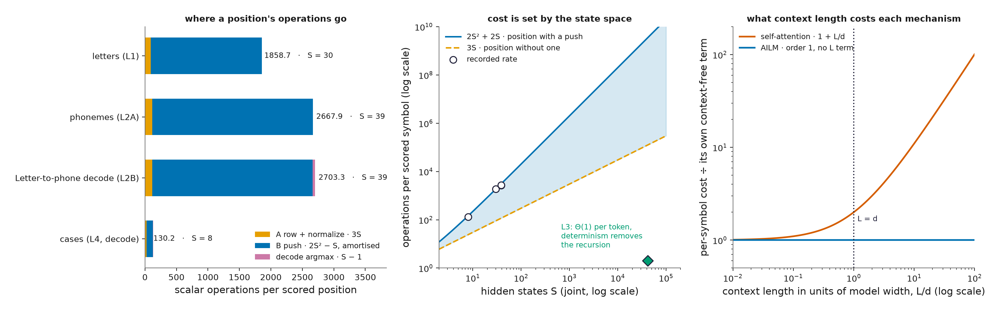
12.2 Factored storage and the remaining joint-emission cost
A level with \(F\) hidden factors of sizes \(S_1,\dots,S_F\) has a joint state space of size \(\prod_f S_f\), and eq. 6 is defined over that joint however the factors are stored. Substituting that joint size for \(S\) in the closed form, one position of an unfactored joint costs \(2(\prod_f S_f)^2 + 2\prod_f S_f\) operations and its dense transition holds \((\prod_f S_f)^2\) entries. The product is what makes both explode, and it does so where a sum would be affordable: adding a modest factor multiplies the state space rather than extending it.
Factoring the transition changes the second of those quantities and not the first. With one transition per factor the stored transition drops from \((\prod_f S_f)^2\) to \(\sum_f S_f^2\), while the emission stays dense over the joint. One closed form then prices every level of tbl. 32 from its declared shape alone, given \(N_o\) observations, \(N_u\) control states, and four bytes per float32 entry, as in eq. 23:
\[4\left( \underbrace{N_o \prod_f S_f}_{\mathbf{A}} \;+\; \underbrace{N_u \sum_f S_f^2}_{\mathbf{B}} \;+\; \underbrace{N_o}_{\mathbf{C}} \;+\; \underbrace{\sum_f S_f}_{\mathbf{D}} \;+\; \underbrace{N_u}_{\mathbf{E}} \right) \text{ bytes}\qquad{(23)}\]
The last term is the policy prior pymdp materializes for
every agent, one scalar at the single-action recognition levels; it was
found because the first reconciliation missed by exactly four bytes per
level, and dropping it is a tested negative control. fig. 33 overlays this form on each level’s
measured bytes, and it reproduces all six of them exactly.
The product survives linearly in the emission, which is dense over the joint at any factorization, and is squared only in an unfactored transition, which is the term Level 3 deletes. Which term dominates afterwards is a question about the factor sizes rather than about the architecture. At the word level the vocabulary factor dwarfs the position factor, so the \(V^2\) identity over word states is the binding cost while the emission’s \(N_o V P\) entries stay linear in \(V\). It is the identity, the least informative matrix in the level, that sets the vocabulary cap.
12.3 Determinism collapses the largest state space to a lookup
The one level that escapes \(\Theta(S^2)\) is the one with by far the largest state space. Level 3’s hidden state factorizes into word identity (2000 states) and position (21 states), and every factor except the word prior is deterministic — the identity over word identity, the +1 shift over position, the spelling-table emission. The path identity of sec. 4.5 (\(P(\text{path of } w) = \mathbf{D}_{f0}[w]\)) is therefore also a complexity statement: scoring a token is one prior lookup, one logarithm and one accumulate, 2 operations per token over all 78,241 held-out tokens, at any vocabulary size. The unfactored joint would have cost \(2(VP)^2 + 2VP\) operations per position; the measured cost is 2, and the gap is the whole payoff.
Memory is where the factorization is priced. A dense transition over the unfactored joint — one hidden factor over (word, position) pairs — would need \((V\!\cdot\!P)^2\) float32 entries: 7.056 GB at the shipped configuration. The factored transitions need \(V^2 + P^2\) entries: 16 MB. The ratio is 441 — exactly \(P^2\), up to the negligible \(P^2\) term in the denominator.
That exponent belongs to the dense encoding rather than to the
decision to factor: the arithmetic is correct, and its obvious reading
is not. Both transitions are deterministic maps: from each state exactly
one successor is reachable, so the joint holds 42,000 structurally
nonzero entries and the factored pair holds 2021. Priced that way the
ratio is 20.78, which tends to \(P\) as
\(V\) grows. Under any storage that
does not materialize structural zeros the factorization buys a factor of
\(P\); the second factor of \(P\) is bought by storing the arrays
densely. Crediting it to the factorization would state as a property of
hierarchical models what is a property of this implementation’s
representation, and the representation is not free to change through
pymdp’s public Agent API. What remains is the
\(V^2\) identity over word states,
which pymdp materializes densely; that term sets the instantiation cap
of roughly 17,320 words (sec. 4.5), while
the closed-form scorer, being \(\Theta(1)\) per token, is exact at any size
— the complete length-eligible training vocabulary of 38,007 types would
need 5.86 GB as a live agent but adds no additional lookup cost per
token to the closed-form scorer.
The trie the design document asked for is the third pricing, and it
is the one that does not fit at all. Words as paths through a letter
trie put the trie’s nodes in the state space: over the length-matched
G2P vocabulary that is 78,398 nodes joined by 78,397 edges, so a dense
transition over them is 24.6 GB at float32 and 0.0013% occupied. That
occupancy is not a surprise to be measured but a consequence to be
predicted: a tree has one parent per node, so a dense \(\text{nodes} \times \text{nodes}\) array is
occupied at essentially \(1/\text{nodes}\) and the rest of it is
structurally zero. At full CMUdict the same encoding is roughly 0.37 TB.
No sparse path is reachable through pymdp’s public
Agent API: the sparse contraction machinery exists in its
JAX backend and the transition contraction is already sparse-capable,
but Agent rejects sparse arrays at construction and does
not preserve sparsity across the filtering loop. This is therefore not a
constant to optimize away; it is where the dense representation stops
being a representation through the interface this project uses.
The trie is not discarded but induced: after a prefix, the posterior
over the word factor is supported exactly on the words sharing it, which
is the trie node (sec. 4.5), and the
induced form costs the \(V^2\) of the
factored transition rather than the 24.6 GB of the dense node
encoding.
That same occupancy bounds what the number licenses. It prices a
dense array, not a trie and not explicitness: stored by its edges, the
identical automaton holds 78,397 entries against the \(\text{nodes} \times \text{nodes}\) cells
the dense form materializes. Sparse edge storage is the ordinary
representation for weighted finite-state machinery of this shape, and is
why that tradition carries explicit symbolic models no dense transition
could hold. The obstacle recorded here is that pymdp is a
dense-array interface; the decision is a choice of host, not a
finding that explicit structure is inherently expensive.
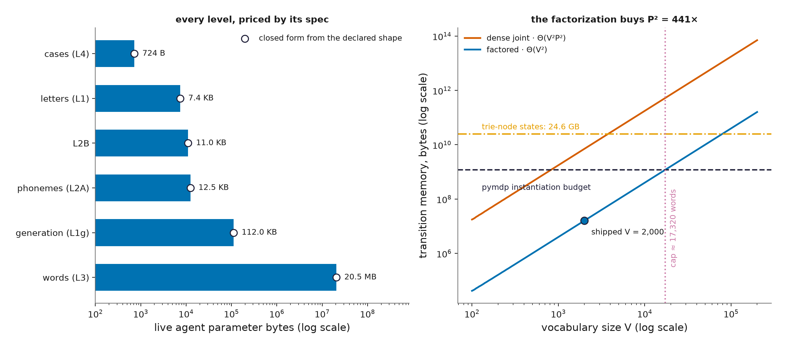
12.4 Computational costs and fixed historical context
The systems of sec. 13 can be compared with AILM on cost in one respect only: which quantity each one’s per-symbol arithmetic scales with. AILM’s scales with the size of an enumerated state space and with nothing else. eq. 22 has no term in the amount of text already seen, because an order-one model carries all of it in a belief of fixed size; scoring the thousandth symbol of a passage costs exactly what scoring the second cost. A decoder-only transformer (Vaswani et al. 2017) is the other way round. Per generated symbol, with a cache, each layer spends \(\Theta(d^2)\) on its projections and feed-forward block, which is context-free, and \(\Theta(Ld)\) on attending to \(L\) cached positions, which is not; over a whole sequence the attention term is \(\Theta(L^2d)\). Width is paid for quadratically, context linearly per symbol, and the output layer pays \(\Theta(d|\mathcal{V}|)\) over a token vocabulary \(\mathcal{V}\) — linear in the inventory, where AILM’s inventory cost is quadratic. The right panel of fig. 32 draws the shape of that difference in the only units in which it is well posed: each system’s per-symbol cost divided by its own context-free term, which needs no constant from either.
Two things follow, and a third does not. The first is that AILM’s
cost is context-free and its state space is not: doubling the alphabet
quadruples the bill under the dense transition pymdp
requires, and the state space must be enumerated in advance, which is
the same constraint that makes the model interpretable. The second is
that a transformer’s cost is inventory-free in the sense that matters
here: it never enumerates a hidden state, so its arithmetic is
independent of how many distinct things the world might be in, and it
pays instead for the width that lets it represent them implicitly. What
does not follow is any statement about value for money. A comparison of
per-symbol operations between an order-one filter over a small
enumerated inventory and an instruction-tuned transformer pretrained on
a web-scale corpus is a statement about mechanism: it says which
quantity each system’s arithmetic scales with, and it says nothing about
what either system can do. sec. 13 lists what would have to be
equalized before a capability comparison meant anything, and none of it
is equalized here.
Constant factors and units deserve the same honesty. The counts in
tbl. 32 are scalar operations, one per
array element the recursion touches, which is the natural currency for a
model whose arrays are small enough to state exactly. Transformer costs
are conventionally counted in floating-point operations inside dense
matrix products, executed as fused multiply-adds on wide vector units at
throughputs no scalar count anticipates. An operation here and a FLOP
there are not the same unit, a ratio of counts is not a ratio of times,
and this section deliberately reports neither system’s seconds. The
counts here also exclude everything outside the recursion — interpreter
dispatch, pymdp‘s array bookkeeping, JAX tracing — none of
it counted, and any of it larger than the recursion itself at these
sizes. A level costing 130.2 operations per position does not run in
130.2 operations’ worth of time, and nothing here claims it does.
Finally, measured and derived quantities are kept distinct. Every per-level operation total and every memory figure in tbl. 32 is measured: an instrumented execution of the shipped recursion, and a live agent’s actual array bytes. Every asymptotic form, every closed form, and both envelopes drawn in fig. 32 are derived, and each is required to reproduce the measurement exactly. The transformer side of this subsection is derived alone: it follows from the published architecture, no transformer was profiled for it, and no number in it is a claim in the ledger.
12.5 Lexicon-scan cost per generated letter
Generation (sec. 4.9) adds one term the recognition levels do not have. Selecting each emitted letter evaluates the top-down preference, a scan of the 2000-word lexicon for the current prefix at \(\Theta(V)\), and then a policy posterior over the 30 actions at \(\Theta(S)\), so a letter costs \(\Theta(V + S)\) and the lexicon scan dominates at every shipped configuration. This is the honest asymmetry of the architecture: recognition is quadratic in a level’s own alphabet, while generation is linear in the vocabulary of the level above. The top-down channel is what costs, and it costs at every emitted symbol. An action set is also what makes generation the memory outlier among the letter-sized levels: with one control state per emitted symbol, \(N_u = S\), the \(N_u \sum_f S_f^2\) term of sec. 12.2 becomes \(S^3\), which is almost the whole of 111,960 B. A trie index over the vocabulary would reduce the scan to the prefix’s own support; it is not built, because no measured claim depends on generation throughput.
Two properties are worth stating plainly. First, every level priced
here runs in kilobytes to megabytes, from the 8-state case level’s 724 B
to the word level’s 20,545,960 B (fig. 33), so what interpretability costs at
these sizes is accuracy rather than compute. Where those bytes sit in a
given machine’s memory hierarchy is not measured here and is not
claimed: cache capacities are hardware-specific, the platform string
recorded in sec. 8 names no cache
hierarchy, and a byte count on its own licenses no statement about
residency or speed. The priced set is the one tbl. 32 lists: the four filtering levels L1, L2A,
L2B and L4, the word level L3, and the generation agent L1g.
scripts/record_complexity_claims.py instruments no others,
so the clause and document-position (narrative in code)
levels carry no operation count and no memory figure here, and none
should be read off the ones that do. Second, every number in this
section is refutable by re-execution: the instrumented counter, the
closed forms, and the spec-derived memory prices are three independent
derivations bound together by exact equality, and
scripts/record_complexity_claims.py re-derives all of them
on every run.
13 Supplement D: Non-Comparative Reference Probes on the Same Next-Symbol Tasks
13.1 Reference-probe scope and limits on capability comparisons
This section is a non-comparative accessory reference frame, confined to this supplement exactly as sec. 2 frames it: the explicit discrete model, connected evaluation and gate-audit-and-claims-ledger method do not depend on anything measured here. It reports what externally served zero-shot models return on the same next-symbol items the comparator is scored on, under one declared protocol, so that a reader has a point of reference for the units this paper reports in. The paired task-specific contrasts below are comparisons under the recorded protocol. Here, “non-comparative” means that they do not support a general capability ranking of the systems: the conditions such a ranking would need are enumerated below, and several are not met. The supplement therefore reports bounded probe readings, with the fitting, interface and population differences kept visible.
AILM is an order-one discrete pymdp system with no web-scale
pretraining and no learned embeddings. Its parameters are estimated from
the vendored Brown and CMUdict artifacts, and each AILM number below is
traceable to the corresponding matrix construction. Gemma 3 4B
(gemma3:4b), Qwen 2.5 3B (qwen2.5:3b), and
SmolLM 1.7B Base v0.2 (smollm:1.7b-base-v0.2-q4_K_M) are
externally served zero-shot references with fundamentally different
training histories and objectives. 2 of the 3 registered reference
models are instruction-tuned chat models; the remaining one is a
non-instruct base model queried with its raw completion template, so
even the registered probes do not share one training objective — one
more reason the section ranks nothing. We therefore expect the external
models to be stronger on raw next-symbol accuracy; that expectation is
why the section is framed as a reference frame rather than as a
competitiveness claim.
13.2 Requirements unmet by a capability comparison
Placing a fitted discrete matrix beside a prompted external model would be a fair comparison only under conditions that have to be stated before any number is read, because some of them hold here and some do not. They are collected here rather than raised one at a time beside the arm each one qualifies, and the ones that fail are why the section is labeled non-comparative rather than merely hedged.
| Condition a fair comparison would need | Status in this section |
|---|---|
| Both systems answer the same items, under the same scoring rule, on the same denominator | Holds, with one declared exception on G2P (position-aligned letter-to-phone) alignment, which is consequently reported as two separate readings rather than as one row |
| The score measures the ability the task names | Fails on the full-inventory letter arm |
| Neither system has prior exposure to the evaluation corpus | Unverifiable for the external probes; the stipulated arm reduces exact-artifact overlap but cannot establish their training contents |
| Both systems have the same opportunity to fit the task | Does not hold in any arm as run; the in-context arm below supplies order-one transition examples from the comparator’s training source and measures that bounded intervention rather than claiming equal opportunity |
| Both systems answer through the same interface | Does not hold in any arm |
| The comparison can resolve the contrasts it draws | Holds in some arms and not in others |
The first condition is the one the protocol was built to satisfy. Every system is scored on the same positions, against the same declared inventory, under the same treatment of invalid answers: an invalid answer is wrong, stays in the denominator, and is never re-prompted. Each contrast is also reported as a paired difference on identical positions rather than as a gap between two independently sampled accuracies. The sampling, deduplication and splitting rules this rests on are stated in the protocol below.
One quantity resists that condition, and the section’s response is structural rather than a caveat. G2P position accuracy is alignment-dependent: the comparator is scored by strict positional alignment and each probe by Levenshtein alignment, which are two different matching operators and therefore two different questions. A single row carrying both would be a comparison whose systems were not scored by the same rule, and disclosing that in a footnote does not repair it. The arm is consequently reported as two readings — a Levenshtein reading, which every system carries, and a strict-alignment reading, which only the comparator carries — and neither reading is combined with the other. G2P exact match is not alignment-dependent, since it is equality of the whole predicted phone sequence with the gold one under either rule; it is the quantity the paired G2P contrast is taken on.
The second condition fails on one arm, and it fails in a way the section measures rather than assumes. On the full-inventory letter task a system’s score depends in part on whether it will emit a non-alphabetic symbol at all — the scored inventory contains a space, and space is the most frequent symbol in the stream — which is a fact about what a system is willing to produce rather than about next-symbol prediction. The alphabetic-target arm below separates the two, and both arms are scored from the same calls, so the difference between them is attributable to the scored positions alone.
The third condition fails on the English arms, and the two sides fail it differently. Brown and CMUdict are longstanding, widely distributed resources and may have occurred in external-model training data; Brown’s upstream NLTK metadata separately restricts it to non-commercial use (sec. 8). The benchmark is consequently not a contamination-controlled comparison and should not be interpreted as a test of generalization from an unseen corpus. The comparator’s exposure to those corpora is of a different kind: its parameters are estimated from them by construction, and that exposure is declared and bounded by a training split every scored position is held out from. Whatever exposure an external model has is undeclared, unbounded, and unmeasurable from here, and if present it would act in that model’s favor. The stipulated-language arm below instead uses a locally generated, non-natural corpus designed to reduce exact-corpus overlap. It does not establish the contents of any external model’s pretraining data.
The fourth condition does not hold anywhere, including that synthetic arm. AILM’s matrices are estimated from in-domain training counts, while each external model has no offline fit and no separately labeled demonstrations. Its query is not observation-free: it contains 40 symbols from the held-out chain and can expose up to 39 adjacent transitions. A difference in either direction therefore confounds whatever separates the two kinds of system with unequal fitting opportunities. The stipulated-language arm reduces the exact-corpus-overlap concern and leaves this asymmetry intact.
The in-context arm below tests one bounded remediation: it supplies the same kind of labeled pair the comparator’s counts are estimated from, sweeps the number supplied, and compares each treatment with a character-level prefix-and-label-multiset-matched derangement. A failure to exploit that particular format cannot establish that the fitted-versus-unfitted asymmetry is harmless. It reports how the registered probes respond under the declared prompt and grid, while the broader asymmetry remains unresolved.
The fifth condition does not hold either, and it is the one most easily mistaken for a property of a model. The AILM comparator is a deterministic matrix rather than a prompted system. Its answer is the argmax of a transition column, so it has no prompt, no output format to comply with, and no sensitivity to how the question is worded. Each external model answers a prompt written here, under a response contract declared here. The wording, the delimiters, the named inventory and the prefix width are free parameters on one side of the comparison and absent on the other. They were fixed once and their effect measured rather than tuned, which is what the prompt-format and context-window arms below report; no search was run for a prompt that raises a probe’s score.
The sixth condition holds unevenly, and the section says in which arms it holds. Each paired contrast is corrected inside a declared family, and the detectability of the effect a contrast could have found is reported beside it. A contrast that fails to clear the corrected threshold at low power is unresolved rather than shown to be absent, and that reading is stated at each such arm rather than left to the reader.
The local external models registered for the English and aligned-pronunciation arms are separate families, not rungs of one scale ladder. Hosted synthetic and in-context labels instead identify repeated run cohorts of one served model, as disclosed beside those experiments. Every pairwise difference belongs to the specific named models and nothing more: no trend across parameter count is claimed, drawn, or implied, and the families differ in training recipe as well as size, so even a “smaller is worse” reading would be confounded.
Read under these conditions, the section supports statements of one shape: the named systems answered the same items under a stated protocol, they differed by some amount on those items, and some part of that difference the protocol cannot attribute. It does not support a ranking of these systems as language models, a trend across model families, a statement about text no system has seen, or a claim that either kind of system would score as it does here under a different prompt or a different inventory.
13.3 Probe protocol, fixed positions, and declared seed
Every system is evaluated on the same fixed, evenly spaced positions
rather than a prefix. The protocol identifier is
external-benchmark-v4 and the seed is 20,260,807. The
evaluation covers 7952 letter positions, 400 phoneme positions, and 400
G2P words.
The letter, phoneme, and G2P arms are not the same kind of object and the difference has to be stated before any interval below is read. The letter arm is a census: it scores every distinct position in the held-out fixture, so 7952 equals 7952 and the sampling fraction is one. The phoneme and G2P arms are samples, of 400 and 400 drawn from far larger held-out splits.
What an interval means differs accordingly, and this section commits to one reading. Nothing here is an inference about positions that were not scored, because on the letter arm there are none. The intervals are randomization statements, not sampling ones: the exact paired interval is conditional on the observed number of discordant pairs and quantifies which system wins at each discordant position under the null that the two are exchangeable there. That null is well defined on a complete enumeration, which is why the letter arm can carry an interval at all despite having no sampling variability. The per-group Wilson intervals are the weaker case and are reported as descriptive precision under the same exchangeability reading rather than as coverage statements about a superpopulation of prose this project never defined. A reader who wants to generalize from these numbers to English at large is doing something the design does not license, on any arm.
Letters use a held-out prose fixture of 7952 scored positions, of which 7952 are distinct prefix-and-target pairs. Positions are deduplicated before scoring, and every distinct pair is then scored, so the count above is a count of distinct positions and not a draw from them. The comparator is deterministic, and an ordinary cached reply repeats the same stored observation. Repeated fixture positions therefore do not supply independent evidence merely by appearing again; counting them as such could narrow intervals without adding independent observations. Fresh service replies can vary despite fixed requested settings, which is a separate source of variation rather than a reason to count duplicated fixture positions as new items. The deduplication is retained as a guard even where the fixture contains no repeats, since it is the sampling contract rather than a patch for one passage.
Phonemes use the CMUdict primary pronunciation stream restricted to the Stage 2 held-out word split, and the AILM phoneme comparator’s bigram statistics are recomputed from the training split alone. The vendored phone counts are pooled over every CMUdict base word, which includes the words the task is scored on; using them directly would fit the comparator on its own test set. G2P uses the same Stage 2 held-out word split.
Each external model receives one zero-shot call per position at
temperature zero under a bounded JSON response contract. The prompt
demands exactly one JSON object with a single answer field,
and Ollama constrains the answer slot with a JSON schema
(format) enumerating the letter alphabet or the 39-symbol
ARPAbet inventory. The vocabulary is therefore enforced by the model’s
structured-output path, before any parser sees the text. The letter
prompt also names that inventory in words. It has to: the scored
alphabet includes a space, an apostrophe, a hyphen and a period
alongside the 26 letters, and a prompt that asks for a narrower set than
the scorer accepts penalizes the probe for obeying it. The prompt also
delimits the sequence, so a prefix ending in a space remains visible to
the model rather than being trimmed away before the model reads the
prefix. Letter and phoneme outputs are scored as exact inventory
symbols; a probe’s G2P answer is scored by Levenshtein-aligned position
accuracy and by exact-sequence match, and the comparator’s is scored by
both Levenshtein-aligned and strict positional accuracy so that the
alignment-dependent quantity can be read under either rule. Any
malformed JSON, extra explanation, empty answer, or inventory violation
is invalid; every invalid answer counts as wrong, remains in the
denominator, and is reported as a diagnostic. No answer is ever
re-prompted.
AILM is scored on these identical positions using its trained letter-bigram, phoneme-bigram, and filtering G2P constructions. The external probes are not part of the AILM generative-model stack.
This section is the one measurement in the paper that needs a live
service. scripts/record_external_benchmark_claims.py
measures every registered model and writes the bench_
labels; scripts/record_synthetic_benchmark_claims.py and
scripts/record_incontext_benchmark_claims.py write the
bench_synth_ and bench_ctx_ labels for the
stipulated-language probes below, scored through the hosted OpenRouter
transport. The external recorder requires the selected local Ollama
endpoint and its registered models. The synthetic and in-context
recorders instead require the configured hosted provider and
OPENROUTER_API_KEY; their cohort tags do not name local
weights. The in-context recorder also authenticates its synthetic
producer receipt. Their preflight and complete-stratum checks refuse
publication when a required service, credential or producer is
unavailable. Reproducing this section therefore means pulling
gemma3:4b, qwen2.5:3b and
smollm:1.7b-base-v0.2-q4_K_M locally, exporting the hosted
credential, and rerunning the network phase through
scripts/orchestrate_claim_recorders.py network — which runs
the external, synthetic, in-context, aligned-G2P, and
log-probability-drift recorders under their single-writer lock; every
other step in the reproduction path is independent of the network.
13.4 Letter, phoneme, and letter-to-phone probe outcomes
The table below carries the letter, phoneme, and G2P tasks, with G2P position accuracy split into the alignment readings the arm supports. The subsections then report the paired contrasts; letter-inventory, prompt-format, and context-window controls; G2P length strata; a stipulated-language synthetic corpus; its phoneme-inventory extension; the stipulated aligned spelling-to-pronunciation comparator arm; calibration; the calibration eligibility gate; protocol determinism; and the in-context arm.
| Task | AILM | Gemma 3 4B | Qwen 2.5 3B | SmolLM 1.7B Base v0.2 |
|---|---|---|---|---|
| Letter top-1 accuracy | 0.26961770623742454 (0.2599770195459606–0.27948088016888534) | 0.07595573440643863 (0.07033532690261741–0.08198565445025414) | 0.1613430583501006 (0.15342178597783698–0.1695913821073596) | 0.06287726358148893 (0.05775009850170683–0.06842657148126517) |
| Phoneme top-1 accuracy | 0.2125 (0.17524287819884765–0.2552268901459687) | 0.0825 (0.059345516507342–0.11359753839339136) | 0.08 (0.057235397942962354–0.11075522016076943) | 0.035 (0.0209610999014911–0.05788565585621193) |
| G2P position accuracy, Levenshtein alignment | 0.716412213740458 (no interval recorded) | 0.46526717557251906 (0.4462323132995615–0.4844037433892264) | 0.5572519083969466 (0.5381618709403909–0.5761742993528159) | 0.10534351145038168 (0.0941603371348161–0.11768232897734553) |
| G2P position accuracy, strict positional alignment | 0.6973282442748091 (0.6794580536226713–0.7146206133212478) | not recorded | not recorded | not recorded |
| G2P exact-match rate | 0.1275 (0.09832071558850791–0.16376620165825423) | 0.0175 (0.008502182660789141–0.03567751551790271) | 0.0075 (0.0025538429629852373–0.02181610802770022) | 0 (0–0.009512640599680667) |
The Levenshtein and strict-alignment rows of that table are incomplete, and in opposite directions. The Levenshtein reading covers every system but carries an interval only for the probes, because the comparator’s Levenshtein score is recorded as a point figure. The strict reading carries an interval but covers the comparator alone, because no probe answer is scored under strict positional alignment anywhere in the recorder. Completing either cell is a recording change rather than a presentational one, and until it is made the alignment-dependent part of the G2P arm has no single row a reader can rank systems in. What would close the gap is a recorded strict-alignment position accuracy for each probe, scored on the same gold-phone denominator the comparator uses.
The AILM comparator is a deterministic matrix-based reference, not a separately prompted system, so its two readings can be compared with each other: they are the same predictions scored twice. Under strict positional alignment it scores 0.6973282442748091 and under the probes’ own alignment rule 0.716412213740458. Strict alignment is the lower of the two, so wherever the two rules are still placed side by side — the G2P position panel of fig. 37 draws the comparator strictly and each probe by Levenshtein — the headline comparison is the one less favorable to AILM. That direction is why the arrangement was defensible, and it is not why the row has been split. It was split because a row scoring one system by one matching operator and the others by another is not one axis whichever way the disclosure runs.
The invalid/unparsable diagnostic recorded 0 unparsable answers for Gemma 3 4B, 0 for Qwen 2.5 3B, and 316 for SmolLM 1.7B Base v0.2 out of 8752 calls each (invalid rates 0, 0 and 0.03610603290676417) across the letter, phoneme, and G2P tasks. The Wilson intervals in fig. 37 are proportion intervals computed on the declared denominator; they do not drop invalid answers.
13.4.1 Paired differences and multiplicity correction
The per-group intervals above answer a different question than the paired comparison does, so each contrast is also reported on the paired scale: the difference in accuracy on identical positions, with an exact interval built from the discordant pairs. That interval is conditional on the observed number of discordant pairs — it is the standard conditional McNemar interval, not a marginal interval for the accuracy difference, and it is conservative for the same reason it is exact.
| Contrast | b/c | Paired difference (probe minus AILM) | Exact 95% interval | p |
|---|---|---|---|---|
| Letter, Gemma 3 4B | 484/2024 | -0.1936619718309859 | -0.20329964173985837–-0.18356997798434413 | 1.045944585012877e-222 |
| Letter, Qwen 2.5 3B | 504/1365 | -0.10827464788732394 | -0.11768204155208271–-0.09852629837025442 | 2.2391853040202766e-91 |
| Letter, SmolLM 1.7B Base v0.2 | 455/2099 | -0.2067404426559356 | -0.21615744646784096–-0.19684698983383456 | 4.302078327405658e-251 |
| Phoneme, Gemma 3 4B | 15/67 | -0.13 | -0.16147639118244697–-0.08868284501300125 | 5.2573169769006436e-09 |
| Phoneme, Qwen 2.5 3B | 7/60 | -0.1325 | -0.15307845822964564–-0.0993311164804902 | 1.3280368233066496e-11 |
| Phoneme, SmolLM 1.7B Base v0.2 | 12/83 | -0.1775 | -0.20567217889892508–-0.13762889909990672 | 3.211393990185144e-14 |
| G2P exact, Gemma 3 4B | 4/48 | -0.11 | -0.12444728751224024–-0.08179688286031314 | 1.3065282189472782e-10 |
| G2P exact, Qwen 2.5 3B | 2/50 | -0.12 | -0.1287800048575896–-0.09564661410803135 | 6.123990203832363e-13 |
| G2P exact, SmolLM 1.7B Base v0.2 | 0/51 | -0.1275 | -0.1275–-0.10970685715886765 | 8.881784197001252e-16 |
The G2P rows are the exact-match contrast rather than the position contrast, which is what makes them alignment-free: exact match is equality of the whole predicted sequence with the gold one, and the two alignment rules agree on it by construction. No paired contrast is taken on G2P position accuracy, because the two systems are not scored on it under the same rule.
These paired tests are not members of the repository-wide significance family; they concern an external reference point rather than any hypothesis this project advances. They are corrected within their own declared family of 18 tests at a Bonferroni threshold of 0.002777777777777778, which is the level any claim of a real difference here must clear. The membership rule is six contrast types on each of the three probes: the letter contrast, the alphabetic-only letter contrast, the prompt-format contrast, the phoneme contrast, the G2P exact-match contrast, and the context-window contrast. The letter, phoneme, and G2P exact-match contrasts are the rows above; the alphabetic-only, prompt-format, and context-window contrasts are introduced below, so the family is larger than the table it is first stated beside.
Detectability is reported at the same fixed reference discordant share of 0.55 as elsewhere in this paper, rather than at the observed effect, since power at the observed effect is a monotone transform of the p-value and carries no additional evidence; unlike the repository family, it is reported at the uncorrected 0.05 (see below). At significance level 0.05 the recorded pair counts give power 0.998823938340913 for the Gemma 3 4B letter contrast, 0.11619375400371001 for phonemes, and 0.08748367011601257 for G2P exact match; the corresponding Qwen 2.5 3B values are 0.9904269870425549, 0.12908774606886264 and 0.08748367011601257; and the corresponding SmolLM 1.7B Base v0.2 values are 0.998914736486961, 0.14050019839141392 and 0.1080913811497086. A contrast whose interval spans zero at a power value well below one is unresolved at this sample size, not shown to be absent.
Power is recorded for the letter, phoneme and G2P arms and for no others. The alphabetic, prompt-format and context-window arms have their own discordant totals and therefore their own detectability, and no recorder writes a power value for any of them. Power at a fixed reference share is a function of the discordant counts alone, and those counts are recorded, so the missing figures are derived from them rather than remeasured. The derivation uses the same reference share of 0.55 and the same significance level 0.05 as the recorded values, and a test applies it to the arms that do carry a recorded power and requires it to reproduce each recorded value and its rendered text exactly; agreement there is what licenses the derived figures for the arms where no recorded value exists to check against. That test also fails if a recorder ever starts writing those labels, so the derivation cannot silently become a second producer of a measured quantity. The largest of the nine derived values is 0.9806070660624776, and every remaining derived value is no larger; the largest sits on the base model’s alphabetic arm, whose discordant total is the largest of the nine arms. At the census pool these arms are no longer uniformly underpowered; a contrast that fails to clear the corrected threshold is unresolved rather than absent whatever its power figure (sec. 15.3), and the per-arm values below are what a reader checks. No power figure is carried across from one arm to another.
Those power values are computed at 0.05, while the decision rule these tests are actually judged against is the corrected family threshold of 0.002777777777777778. Power falls as the threshold tightens, so every power figure in this section, recorded or derived, is an upper bound on the detectability of the rule actually in force. The gap between the two is wide rather than incidental: at the letter arm’s discordance rate, a pair count that would be well powered at 0.05 loses a substantial part of that power at 0.002777777777777778. Both thresholds are named because a reader who carried a power figure across from one to the other would misstate the design substantially in whichever direction they moved.
For the letter task the pool bound was structural in the earlier revision: the fixture then held only a few hundred distinct positions, so no selection inside it could reach a reference-sized effect at this alpha. The fixture in this revision is a substantially longer non-repeating public-domain passage holding 7952 distinct positions, above the number the reference share needs at 0.05. The letter contrast is therefore no longer unresolved by construction: whether it resolves depends on the measured pair counts and the power recorded above.
13.4.2 Letter-inventory choices and non-equivalent readings
“Predict the next letter” has full-inventory and alphabetic-only readings, and they are not equivalent. The corpus stream contains 30 symbols — the 26 alphabetic ones plus space, apostrophe, hyphen and period — and space is its most frequent single symbol. Scoring against the full inventory asks a probe to produce symbols a reader might not think of as letters at all; scoring against the alphabetic ones alone discards the most frequent symbol in the stream. Either choice can move the comparison, so both are reported, from the same calls: the alphabetic arm is a restriction of the recorded per-position outcomes, not a second run, and the comparator’s prediction rule is unchanged between them — only the scored positions differ.
The full-inventory and alphabetic-only arms do not agree, and the reason is not predictive skill. Of the 7952 scored positions, 1552 have a non-alphabetic target, almost all of them a space. Accuracy on exactly those positions is 0.6030927835051546 for AILM, 0 for Gemma 3 4B, 0.7809278350515464 for Qwen 2.5 3B, and 0 for SmolLM 1.7B Base v0.2. Two of the probes score on almost none of them and the remaining one on most, and the gap between those readings is far larger than any accuracy difference the alphabetic arm shows. That the probes at the floor are of both kinds — one instruct, one base — says the floor is about emission behavior rather than instruction tuning: a base model withholds a space when the stream has one, exactly as the instruct one does. The prompt names the full inventory and the response schema enumerates it, so the spread is a difference in what each model is willing to emit, not in what it was permitted to emit.
The full-inventory letter arm therefore measures inventory compliance more than next-symbol prediction, and its ranking should be read that way. The alphabetic arm removes the behavior, because on those positions no system can score by emitting a space.
On the 6400 positions whose target is alphabetic, the systems score as follows, with each probe’s discordant pairs and p-value taken against AILM on the same positions.
| System | Top-1 on alphabetic targets [descriptive 95% Wilson] | b/c vs AILM | p |
|---|---|---|---|
| AILM | 0.18875 (0.1793506806416364–0.19852275083112214) | — | — |
| Gemma 3 4B | 0.094375 (0.08745377756349292–0.10178288313092528) | 484/1088 | 1.5158145519941665e-53 |
| Qwen 2.5 3B | 0.01109375 (0.00880494416927661–0.013969135689288285) | 60/1197 | 2.224028281928797e-275 |
| SmolLM 1.7B Base v0.2 | 0.078125 (0.07180016012055541–0.0849559969961353) | 455/1163 | 1.801459825530734e-71 |
Comparing these with the full-inventory row of the table above is the point of reporting both: a letter conclusion that holds under one inventory and not under the other is a conclusion about the inventory, and reporting only the arm that favors either system would be a choice presented as a measurement.
Read against the declared threshold of 0.002777777777777778, every alphabetic-arm contrast clears it, and the discordant pairs run in the comparator’s favor in every one. Removing the positions where symbol compliance can act therefore does not remove the difference: it survives on the alphabetic targets alone. The alphabetic arms are well powered at the reporting level 0.05: the derived power at the reference share is 0.9761545364568099 for Gemma 3 4B, 0.942683545359296 for Qwen 2.5 3B, and 0.9806070660624776 for SmolLM 1.7B Base v0.2, so each arm could reliably have found a reference-sized effect at that level, and the contrasts clear the corrected threshold on effects larger than that share. Power at the corrected threshold 0.002777777777777778 is lower, as it is for every arm in this section, and a contrast that had failed to clear it here would have been unresolved rather than absent. Qwen 2.5 3B remains the extreme case in both directions, scoring highest of the probes on non-alphabetic targets and lowest once they are excluded, which is the compliance behavior seen from the other side rather than a separate effect.
The letter task is the only arm here carrying an explicit prompt-sensitivity control. Naming the inventory in the prompt and delimiting the sequence are each necessary for the task to be answerable as scored, and each changes what the probes emit. No letter number in this section should be treated as a stable property of a model.
13.4.3 Prompt format as a paired diagnostic, not a second accuracy headline
The corrected letter protocol makes the sequence boundary explicit, but that choice is itself part of the measurement. The prompt-sensitivity arm holds the positions, inventory, response schema and seed fixed while removing the angle brackets and the explicit trailing-space notice. It is therefore not a second accuracy headline: it is a paired diagnostic of whether the answer changes when the formatting cue changes.
Under the delimited protocol, the external systems score their ordinary letter accuracy; under the otherwise identical undelimited protocol, Gemma 3 4B scores 0.11016096579476861 (0.10346672329896339–0.11723168779056858) and Qwen 2.5 3B scores 0.16398390342052313 (0.15600834902568475–0.17228395885535694), while SmolLM 1.7B Base v0.2 scores 0.06388329979879276 (0.058716082323267256–0.06947168853431239). The paired undelimited-minus-delimited contrasts are 0.03420523138832998 for Gemma 3 4B (494/222, p = 1.1338652476561629e-24), 0.002640845070422535 for Qwen 2.5 3B (177/156, p = 0.2730580092734079), and 0.001006036217303823 for SmolLM 1.7B Base v0.2 (68/60, p = 0.5362687140711064). These values quantify protocol sensitivity; they do not establish that either prompt is intrinsically more correct. The registered probes now separate. The Gemma 3 4B contrast clears the corrected family threshold of 0.002777777777777778, so that probe’s prompt sensitivity is a resolved effect rather than a nominal one; the Qwen 2.5 3B and SmolLM 1.7B Base v0.2 contrasts do not clear it and stay unresolved. The derived power at the reference share is 0.7577932297718774 for Gemma 3 4B, 0.44168838995457094 for Qwen 2.5 3B, and 0.18336691183473525 for SmolLM 1.7B Base v0.2. This arm is the clearest case in the section of a contrast that the earlier sample could not resolve. The pre-census effect estimates are not recoverable from a versioned recorder artifact, so they are not quantified here; the reproducible claim is that the complete recorded pool resolves the Gemma 3 4B contrast and not the Qwen 2.5 3B or SmolLM 1.7B Base v0.2 contrasts. Reading the earlier null as evidence that the formatting cue went unused would have been wrong, and the interval convention of sec. 15.3 is what kept that reading off the page. The answer-versus-encoding separation therefore has complementary controls: the alphabetic/full-inventory contrast separates symbol compliance from alphabetic prediction, and the paired prompt-format contrast separates prediction from encoding.
13.4.4 Wider prefixes and remaining fit asymmetry
The letter task is the one axis where extra context is available to a transformer and unavailable to AILM by construction: the comparator is order one, so it conditions on the immediately preceding symbol and nothing else, and its accuracy is identical at every window. Each probe was therefore rerun on the same positions with the prefix widened from 40 to 160 characters. The protocol rejects a window that reaches the passage’s whole-string repetition period; this guards against a fixture made by repeating the same passage. The current fixture does not repeat as a whole, so that guard cannot fire at any available prefix length. Local repetition can still put an earlier instance of the target after verbatim context inside the wider window. The period check neither measures nor bounds that source of literal answer availability.
| System | Short window | Long window | b/c | p |
|---|---|---|---|---|
| AILM | 0.26961770623742454 | 0.26961770623742454 | — | — |
| Gemma 3 4B | 0.07595573440643863 | 0.06350603621730383 | 336/435 | 0.00040966234386164243 |
| Qwen 2.5 3B | 0.1613430583501006 | 0.14763581488933603 | 203/312 | 1.7882483831604968e-06 |
| SmolLM 1.7B Base v0.2 | 0.06287726358148893 | 0.060362173038229376 | 31/51 | 0.03524144017874746 |
The AILM row prints its accuracy twice so a reader can check the invariance rather than take it on assurance. That equality is a property of an order-one model, not a finding about context.
The Gemma 3 4B and Qwen 2.5 3B contrasts clear the corrected family threshold of 0.002777777777777778; the SmolLM 1.7B Base v0.2 contrast does not and is unresolved, with derived power at the reference share of 0.777625432105211 for Gemma 3 4B, 0.5967539361299515 for Qwen 2.5 3B, and 0.11619375400371001 for SmolLM 1.7B Base v0.2. The widened prefix changes what these probes predict, and the direction is recorded in the table rather than asserted here. The comparison this licenses is narrow and worth stating as such. It establishes that the probes are sensitive to the amount of context they are given, on positions where AILM is invariant by construction. It does not establish that the extra context is used well: a sensitivity is not an improvement, and the accuracy columns are where a reader checks which it was.
13.4.5 Letter-to-phone accuracy stratified by word length
G2P words are stratified by gold phone count into 130 short words (five phones or fewer), 242 mid-length words (six to nine phones) and 28 long words (ten phones or more). Position accuracy by bucket is:
| System | Short | Mid-length | Long |
|---|---|---|---|
| AILM | 0.7157534246575342 (0.67785296590558–0.7508339456705996) | 0.7052692530399537 (0.6833296515024772–0.7262976650584374) | 0.6181229773462783 (0.562814416961958–0.6705305090325389) |
| Gemma 3 4B | 0.464041095890411 (0.4239601072889302–0.5045920741150398) | 0.4719166184134337 (0.44846027608397654–0.4954976227786345) | 0.43042071197411 (0.3764006786839787–0.48614957038775614) |
| Qwen 2.5 3B | 0.6027397260273972 (0.56250515538045–0.6416314691796355) | 0.5686160972785177 (0.5451303945034689–0.5917972134301515) | 0.4077669902912621 (0.35443175396547866–0.4633674134086814) |
| SmolLM 1.7B Base v0.2 | 0.14554794520547945 (0.11926197452884309–0.17646667073886163) | 0.1013317892298784 (0.08797238531949819–0.11646087997756885) | 0.05177993527508091 (0.03212023495119197–0.08244764860393626) |
Each cell keeps the alignment rule its own pooled number uses, so the comparator row is strict-aligned and the probe rows are Levenshtein-aligned. The table therefore decomposes each of the two readings above by word length; it does not put them on one scale, and a comparator cell should not be read against a probe cell in the same column for the same reason the pooled row was split.
The pooled G2P number cannot distinguish a system that is uniformly accurate from one that is accurate only on short transparent orthography, and the stratification is reported so that distinction is visible. Every cell carries the Wilson interval of its own bucket, so a column can be read for separation and not only for order. Among the three probes, which share one alignment rule, the short and the mid-length columns separate all three pairwise. The long bucket holds far fewer words than either of the other two, and its column is where that shows: the Gemma 3 4B and Qwen 2.5 3B intervals overlap there, so the long column orders those two without separating them, while SmolLM 1.7B Base v0.2 stays clear of both. A comparator cell carries an interval on the same footing, but reading it against a probe cell in the same column still crosses two alignment rules as well as two systems, so a separation across those rows is not a like-for-like one.
13.4.6 The stipulated-language control that reduces exact-artifact overlap
Serving identity boundary. These stipulated letter
and phone requests use meta-llama/llama-3.3-70b-instruct
through the recorded provider route groq. Labels ending in
“run” preserve the registered cohort keys and identify separate fresh
calls to that same hosted model; they do not identify Gemma, Qwen, or
SmolLM weights. The English and aligned spelling-to-pronunciation
comparisons retain their separately recorded local-model identities. The
in-context sweep below uses the same hosted model with its own measured
receipt. Requested and returned slug hashes do not identify immutable
serving weights; the observed provider and raw response metadata are
retained, and a missing system fingerprint supplies no weight pin.
The English corpora are public and may overlap an external model’s
training data. The reference study therefore runs a separate probe on a
locally generated, non-natural language designed to reduce
exact-artifact overlap. It does not claim knowledge of an external
model’s training contents. The protocol stipulates an order-one chain
over 26 symbols from recorded corpus seed 20,260,808. Evaluation uses
120 independently seeded trajectories under
independent-seeded-chains-v1, beginning at seed 20,260,809.
Each trajectory has 41 symbols and contributes one scored target; the
target marginal’s total-variation distance from stationarity is
7.100576900481541e-05. AILM and every registered probe receive these
identical independent positions. A missing model row is a hard failure
rather than a partial family.
The corpus artifact is vendored and checksum-verified. The synthetic
comparator is fit only to its generated training counts. Every external
probe has no offline fit or separately labeled demonstration in this
arm, but each query carries 40 symbols and exposes at most 39
within-query transitions. The response opportunity contains exactly 26
symbols, matching the stipulated alphabet. The recorded measurement
protocol is synthetic-zero-shot-v3; its cache identity is
external-benchmark-v4:synthetic-zero-shot-v3:alternating-full-short-by-position-v1.
Every scored request declares a context window of 8192 tokens and a
32-token response cap. The longest prompt has 319 ASCII characters in
the preflight; the server then reports an executed maximum of 113 prompt
tokens. That measured count, the response cap, and the recorded
256-token safety margin fit inside the declared context window.
Publication recording used 0 scored cache hits and 720 fresh scored
calls.
| System | Top-1 [descriptive 95% Wilson] | Probe − AILM [descriptive 95% paired interval] | Probe-only / AILM-only | Paired p | Unparsable |
|---|---|---|---|---|---|
| AILM | 46.67% [37.98%–55.56%] | — | — | — | — |
| gemma3 run | 5.83% [2.85%–11.55%] | -40.83 pp [-44.79, -31.97] | 3/52 | 1.54e-12 | 0 |
| qwen25 run | 5.83% [2.85%–11.55%] | -40.83 pp [-44.79, -31.97] | 3/52 | 1.54e-12 | 0 |
| smollm run | 5.83% [2.85%–11.55%] | -40.83 pp [-44.79, -31.97] | 3/52 | 1.54e-12 | 0 |
The uniform floor is 3.85%. Discordance is reported as positions correct only for the named probe followed by positions correct only for AILM. On this declared run, the fitted AILM comparator separates from every registered no-demonstration probe on the held-out stipulated chain at the synthetic family’s corrected threshold. This is evidence about transfer to a stipulated transition system, not a general language-capability ranking; the synthetic task is deliberately narrow and its result should be read alongside the calibration and held-out phoneme and G2P results.
These contrasts are corrected inside their own separately declared descriptive family of 3 tests at 0.0167, not inside the 18-test external-reference family used above. The two are separate experiments on separate corpora asking separate questions, so they are corrected separately rather than pooled. The p-values reported here are to be read against 0.0167 and against no other threshold in this section.
The query itself supplies chain evidence, so an audit-specified
prefix-width arm shortens the prefix to 1 symbol, exposing at most 0
adjacent transitions, while preserving every target position. It is a
post-discovery descriptive family, not a preregistered test. The hosted
run makes no warm-up call under
hosted-no-warmup-fresh-scored-cells-v1; each scored cell is
requested fresh, and the full/short order follows
alternating-full-short-by-position-v1 so arm identity is
not server order.
| Probe | Short top-1 [descriptive 95% Wilson] | Full top-1 | Full − short [descriptive 95% paired interval] | Full-only / short-only | Paired p | Invalid short/full |
|---|---|---|---|---|---|---|
| gemma3 run | 0.83% [0.15%–4.57%] | 5.83% | +5.00 pp [-0.35, +6.62] | 7/1 | 0.0703 | 0/0 |
| qwen25 run | 0.83% [0.15%–4.57%] | 5.83% | +5.00 pp [-0.35, +6.62] | 7/1 | 0.0703 | 0/0 |
| smollm run | 0.83% [0.15%–4.57%] | 5.83% | +5.00 pp [-0.35, +6.62] | 7/1 | 0.0703 | 0/0 |
At the audit-specified context family’s corrected threshold, the paired sensitivity is unresolved for gemma3 run, qwen25 run, smollm run. The prefix-width p-values are corrected inside their own 3-member family at 0.0167. The intervals are descriptive, not simultaneous familywise intervals. A non-separation leaves this protocol contrast unresolved; it is not evidence that the exposed transitions have no effect, and changing prefix width does not identify a unique causal “context contribution.”
13.4.7 The same stipulation carried over to the phoneme inventory
The stipulated-control logic extends from letters to phones without
new network machinery: a second order-one chain is written down in code
over the canonical ARPAbet inventory — the phoneme level’s exact
39-symbol set — with the letter chain’s mixture weights, its seeded
sampler contract, and a vendored count artifact generated by a named
script from a recorded seed. The inventory partition into 39 response
symbols is the phoneme task’s own; the stipulated transition over it is
what is new, not the symbols. Training drew 200,000 symbols from seed
20,260,808; evaluation uses 120 independently seeded trajectories under
independent-seeded-chains-v1, beginning at seed 20,260,809,
each trajectory 41 symbols long with one scored target. The target
marginal’s total-variation distance from stationarity is
6.81655382455057e-05. The artifact reproduces byte-for-byte from its
generator before any claim is written, and the fitted comparator must
clear prospectively specified recorder refusals — four times the uniform
floor, twice a transposed-count fit, and twice an English-trained
CMUdict fit, all on the identical positions — before anything is
recorded.
The probe contract is the existing exact phoneme task: the same
prompt builder, the 39-symbol response schema, and the same parser the
external phoneme arm uses, with no changes to the task layer. The full
query exposes 40 phones; the sensitivity arm reduces it to 1, with the
same alternating arm order and no hosted or local warm-up under
hosted-no-warmup-fresh-scored-cells-v1. Scored requests
declare a context window of 8192 tokens, a 32-token response cap, and a
256-token safety margin; the longest prompt is 262 characters in
preflight and 126 prompt tokens as server-reported. Publication
recording used 0 scored cache hits and 720 fresh scored calls. Its
measurement protocol is synthetic-phone-zero-shot-v2 over
chain synthetic-phone-chain-v1, with cache identity
external-benchmark-v4:synthetic-phone-zero-shot-v2:alternating-full-short-by-position-v1.
| System | Top-1 [descriptive 95% Wilson] | Probe − AILM [descriptive 95% paired interval] | Probe-only / AILM-only | Paired p | Unparsable |
|---|---|---|---|---|---|
| AILM | 48.33% [39.58%–57.19%] | — | — | — | — |
| gemma3 run | 3.33% [1.30%–8.26%] | -45.00 pp [-45.00, -39.06] | 0/54 | 1.11e-16 | 0 |
| qwen25 run | 3.33% [1.30%–8.26%] | -45.00 pp [-45.00, -39.06] | 0/54 | 1.11e-16 | 0 |
| smollm run | 3.33% [1.30%–8.26%] | -45.00 pp [-45.00, -39.06] | 0/54 | 1.11e-16 | 0 |
The prospectively specified prediction holds: the comparator fitted on the stipulated corpus beats every registered probe, and the paired p-values clear their 3-member family threshold 0.0167 with orders of magnitude to spare. The one-phone sensitivity arm scores 0.025, 0.016666666666666666, and 0.025 respectively — at or below the uniform floor of one in 39, the recorded finding that decision 108 pre-registered. The paired full-versus-short context results for this publication run are: gemma3 run: does not clear the corrected threshold; qwen25 run: does not clear the corrected threshold; smollm run: does not clear the corrected threshold. Paired p-values are 1, 0.6875, and 1, respectively. Which contrasts clear is itself not run-stable at these cell sizes: the preceding publication run of the same registered population recorded no contrast clearing (decision 130). Any resolved contrast is therefore reported as that run’s outcome, not as a stable property of its cohort or the served model. Previous one-observation changes on the live hosted transport have produced conflicting full-versus-short point-estimate directions across consecutive publication runs of the same registered population (decision 128). This section therefore states the sensitivity comparison through the pre-registered floor outcome and the validated corrected contrasts, without assuming a direction or a resolved contrast for a future run. The comparator-versus-probe contrasts are corrected inside their separately declared 3-member descriptive family at 0.0167, with the sensitivity contrasts corrected inside their own 3-member family at 0.0167; neither family pools with the letter arm’s. Decision 108 specifies the design prospectively within the same development session, without an independently timestamped prior registration; the findings remain descriptive.
This arm does not establish absent pretraining exposure. It reduces exact-artifact overlap: the scored trajectories are generated locally under a transition written down in code, disjoint from the training draw. It cannot establish that an external model’s undisclosed pretraining corpus lacks the same sequences, a similar phone inventory, an alternating vowel/consonant regularity, or a related transition rule — all generic properties an English-exposed model has prior mass on. The result licenses a statement about transfer to this stipulated structure by these registered probes under this prompt contract, and nothing about general phonotactic competence or about what any model saw in training.
13.4.8 A stipulated aligned spelling-to-pronunciation correspondence (design B)
The letter arm and the phoneme arm above each stipulate an order-one
continuation chain. Protocol P2’s design B (Protocol
P2 aligned correspondence) stipulates something the pair-structured
tasks never had: a per-letter correspondence
T from the letter inventory to a fixed subset of the
39-symbol phone inventory, drawn by a named seeded generator and frozen,
together with train and test spelling/pronunciation splits generated
under it, into the vendored artifact
vendor/synthetic_aligned_g2p_counts.json (schema
ailm-synthetic-aligned-g2p-v1, digest
a6bdd76c4ced420661ab3dd1c2e772910604630e3227504e9dfd22dfb7d715c1).
The correspondence is recorded in the artifact and is deliberately
not an English letter-to-phone reading: the inventories
are the task’s own, the stipulated correspondence is new. Design B’s
erratum withdrew the generator-owned “nothing to leak” reasoning, so the
design states what it is instead of what it is not: a stipulated
correspondence that reduces exact-artifact overlap and is never known to
be free of exposure — the artifact makes no claim that the probes’
pretraining contents are known or absent, and unknown pretraining
exposure remains the standing limitation of the whole stipulated
family.
The scored population is the artifact’s test split: 60 test words,
360 scored positions under the correspondence’s per-letter 1:1
alignment. The comparator arm is recorded offline, before any probe
call, and the engine is the shipped G2P stack refit on the stipulated
train pairs — build_g2p_emission,
build_g2p_transition through the train-only pronunciation
bigrams, and build_g2p_start, decoded by the shipped
readout with default additive smoothing: 1 for the emission and 1 for
transitions and the initial-state prior. The closed-form T
lookup is a separately named baseline: the trivial map
is exactly right on T-generated data by construction, so it
is reported as a comparison and never presented as the shipped engine,
and the recorder’s recorded tie verdict — the native engine does not tie
the trivial map’s predictions — is what the panel states rather than a
verdict re-derived in prose.
| Arm | Position accuracy [descriptive 95% Wilson] | Exact-word accuracy [descriptive 95% Wilson] |
|---|---|---|
| Native stipulated fit | 99.72% (98.44%–99.95%) | 98.33% (91.14%–99.71%) |
T lookup (the trivial map) |
100.00% (98.94%–100.00%) | 100.00% (93.98%–100.00%) |
| Context-free pronunciation bigram | 42.78% (37.77%–47.94%) | 0.00% (0.00%–6.02%) |
| A1: fit on English CMUdict pairs | 3.89% (2.33%–6.42%) | 0.00% (0.00%–6.02%) |
| A2: fit on the broken correspondence | 0.00% (0.00%–1.06%) | 0.00% (0.00%–6.02%) |
The intervals in the table and in fig. 34 are derived at render time from each
arm’s recorded accuracy and the recorded test denominator it was scored
on — a Wilson interval on its own denominator per the decision-101
convention stated with fig. 15. The
uniform floor is 2.56% per position (1/39) and 2.84e-08%
per whole word, an analytic reference the native bar must clear on both
readings (A3) and not a measured arm, so it is drawn as a rule rather
than as a bar.
The A1 and A2 rows are attribution controls, and
their design is a refusal, not a ranking. A1 refits the same engine on
English CMUdict pairs and must not meet or clear the native bar on the
identical stipulated positions; a fired A1 would mean the stipulated
signal is not separable from English transfer, an attribution ambiguity
reported by refusal and never silently retried. A2 refits on a
shape-valid broken correspondence — a complete seeded derangement of
T’s phone codomain — and must likewise fail below the
native bar. Both controls sit far below the native fit on both readings
in the recorded run, and the uniform floor sits far below both controls,
so the recorded evaluation shows the native bar holding above every gate
it was pre-registered to clear. The context-free pronunciation-bigram
comparator is recorded descriptively: it is the pronunciation-only bar,
not a spelling arm, and it never gates anything.
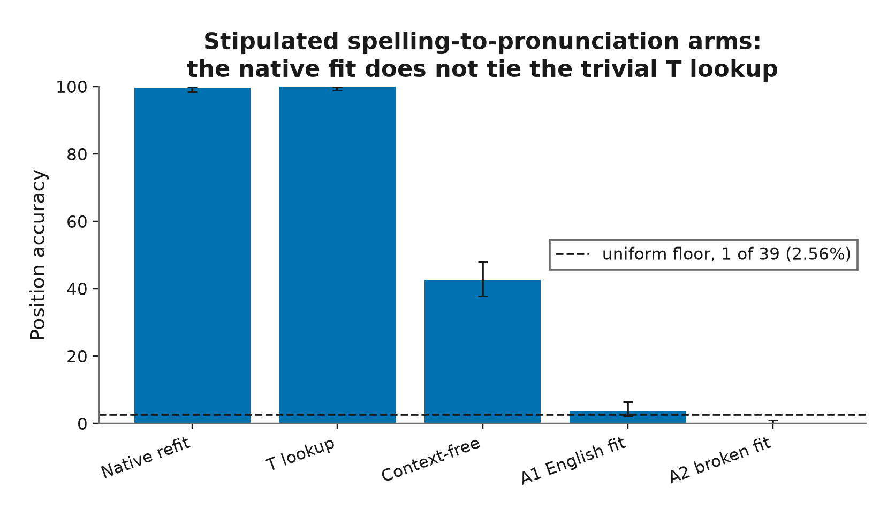
Closure, and what stays open. The queue item this
protocol answered asked for an aligned pronunciation design; the
recorded evaluation — artifact, attribution controls, and comparator —
closes the design’s artifact-and-comparator portion, and the zero-shot
probe arms are recorded beside it under run
synthetic_aligned_g2p_probe_v1. The Gemma 3 4B and Qwen 2.5
3B arms scored 60 and 60 test words, at 1.67% and 3.61% position
accuracy and 0.00% and 0.00% exact-word accuracy, with contract
compliance 100.00% and 100.00%; the SmolLM 1.7B Base v0.2 probe is
recorded as a contract refusal rather than a score. Both scoring arms
sit far below the analytic contract floor (97.44%), which is the
design’s pre-registered expectation for zero-shot models against a
stipulated correspondence, so the native-bar comparison closes by
refusal and is reported as that refusal, not as a ranking. What is
closed closes the way every arm in this section closes: unknown
pretraining exposure remains the stipulated family’s standing
limitation, and the arm licenses a statement about transfer to this
stipulated correspondence and nothing about an English reading.
13.4.9 Giving the probe order-one transition examples, a bounded reduction of the fit asymmetry
This sweep requests meta-llama/llama-3.3-70b-instruct
through the recorded provider route groq. Each named panel
is a separate run cohort of that same hosted model.
The fourth condition above does not hold: AILM is fitted to 200,000 generated symbols, while each probe starts without an offline fit or separately labeled demonstrations. This arm measures one bounded attempt to reduce that asymmetry; it cannot by itself remove it.
The probe is given k labeled continuation pairs drawn
from the same corpus AILM’s counts are estimated from. Each prefix
contains exactly 1 symbol, so each pair supplies one order-one
transition—the comparator’s sufficient statistic—and contains 0
unrelated internal transitions. At the headline rung the prompt supplies
128 labeled transitions and retains 0 within-prefix transitions. Draws
follow per-position-derived-seed-v1: each is
deterministically keyed by the example seed, k, and the
scored prefix (never its gold target), and samples the separate fixed
training stream. A set is accepted only when its labels admit a complete
derangement; otherwise that position is redrawn, up to 64 attempts. This
conditions the realized example distribution. The exact seeded
diagnostics below are injected from the claims ledger and independently
reconstructed from the frozen protocol:
| k | Retried positions | Total rejected draws | Maximum attempt used |
|---|---|---|---|
| 4 | 7/400 | 7 | 2 |
| 16 | 0/400 | 0 | 1 |
| 48 | 0/400 | 0 | 1 |
| 128 | 0/400 | 0 | 1 |
The grid is 0,4,16,48,128. The probe is not given AILM’s fitted column. Supplying the comparator’s own answer would cap the probe at the comparator by construction, put the prediction on the first line of its own prompt, and produce a large number that measures nothing; that option is recorded as rejected rather than pending. The chain and artifact are generated locally, reducing exact-artifact recall as an explanation without establishing the external model’s complete pretraining contents or behavior. Each query still carries 40 symbols and up to 39 adjacent transitions under an exact 26-symbol response contract.
Each k runs twice. The control shows the same examples
with their symbols permuted so that no example keeps its own — a
derangement, so the displayed prefixes, the symbol multiset and the
prompt length are all preserved exactly at the character level, while
only the prefix-to-symbol mapping is destroyed. No claim is
made that a tokenizer assigns identical token counts after that
permutation. Without it a lift cannot be told apart from the probe being
pulled toward the alphabet by the sight of plausible symbols. The hosted
transport uses no warm-up under
hosted-no-warmup-fresh-scored-cells-v1; all scored cells
are fresh and all arms are interleaved under
rotating-arms-by-position-v1 so a complete arm is never
synonymous with one period of the server run.
The fixed terminal-mapping learner scored 45.25% on the real one-transition examples and 6.25% on their deranged controls (b/c = 175/19, p = 8.67e-33; separately corrected one-test family, alpha = 0.05). This data-level positive control consumes the exact transition tuples used to serialize the prompts and shows that the stimulus/control pairing contains detectable mapping information. It does not prove that a particular tokenizer or prompt interface conveys that mapping to a probe. It prevents probe-level non-separation from being misread as proof that the underlying stimulus or control was vacuous.
gemma3 run
| k | Top-1 [descriptive 95% Wilson] | Deranged [descriptive 95% Wilson] | Invalid real/control | p vs no-demonstration | p vs deranged |
|---|---|---|---|---|---|
| 0 | 7.25% [5.10%–10.22%] | — | 0/— | — | — |
| 4 | 6.75% [4.68%–9.64%] | 5.50% [3.66%–8.19%] | 0/0 | 0.88 | 0.458 |
| 16 | 11.25% [8.51%–14.72%] | 6.50% [4.47%–9.35%] | 0/0 | 0.0599 | 0.0145 |
| 48 | 9.50% [7.00%–12.77%] | 7.75% [5.51%–10.79%] | 0/0 | 0.306 | 0.337 |
| 128 | 13.50% [10.50%–17.20%] | 8.75% [6.36%–11.93%] | 0/0 | 0.00523 | 0.0163 |
qwen25 run
| k | Top-1 [descriptive 95% Wilson] | Deranged [descriptive 95% Wilson] | Invalid real/control | p vs no-demonstration | p vs deranged |
|---|---|---|---|---|---|
| 0 | 7.75% [5.51%–10.79%] | — | 0/— | — | — |
| 4 | 6.25% [4.27%–9.06%] | 5.00% [3.26%–7.60%] | 0/0 | 0.441 | 0.458 |
| 16 | 11.00% [8.30%–14.45%] | 7.00% [4.89%–9.93%] | 0/0 | 0.136 | 0.0328 |
| 48 | 9.50% [7.00%–12.77%] | 7.50% [5.30%–10.50%] | 0/0 | 0.45 | 0.28 |
| 128 | 13.25% [10.27%–16.92%] | 9.00% [6.57%–12.21%] | 0/0 | 0.0154 | 0.0213 |
smollm run
| k | Top-1 [descriptive 95% Wilson] | Deranged [descriptive 95% Wilson] | Invalid real/control | p vs no-demonstration | p vs deranged |
|---|---|---|---|---|---|
| 0 | 8.00% [5.72%–11.08%] | — | 0/— | — | — |
| 4 | 6.25% [4.27%–9.06%] | 4.75% [3.06%–7.30%] | 0/0 | 0.371 | 0.345 |
| 16 | 9.75% [7.21%–13.05%] | 6.25% [4.27%–9.06%] | 0/0 | 0.45 | 0.0704 |
| 48 | 9.50% [7.00%–12.77%] | 7.75% [5.51%–10.79%] | 0/0 | 0.532 | 0.36 |
| 128 | 11.50% [8.73%–15.00%] | 9.25% [6.79%–12.49%] | 0/0 | 0.125 | 0.243 |
Accuracy cells include descriptive, non-simultaneous 95% Wilson intervals. Invalid structured replies remain in each denominator and are reported beside the two prompt conditions. P-values are rounded to three significant digits for display; exact values remain in the claims ledger.
Scored over 400 independent evaluation trajectories under
independent-seeded-chains-v1 (base seed 20,260,809,
trajectory length 41, target-start TVD 7.100576900481541e-05) against a
uniform floor of 3.85% and an AILM comparator at 50.75%, with every
external-probe contrast p-value corrected inside its declared family of
27 at 0.00185. Every scored request declares a context window of 8192
tokens and a 32-token response cap. The longest prompt has 1873 ASCII
characters in the preflight; the server reports at most 949 executed
prompt tokens. That measured count, the response cap, and the 256-token
safety margin fit inside the declared context window. The canonical run
recorded 0 scored cache hits and 10,800 fresh scored calls.
At the recorded family-corrected threshold, gemma3 run: no treatment rung separated from the no-demonstration arm; no treatment rung separated from its deranged control; qwen25 run: no treatment rung separated from the no-demonstration arm; no treatment rung separated from its deranged control; smollm run: no treatment rung separated from the no-demonstration arm; no treatment rung separated from its deranged control. The deranged control was descriptively ahead in 0 of 12 nonzero-rung probe cells. This bounds only the declared prompt format and grid; it does not remove the fitted-versus-unfitted opportunity asymmetry. The sweep itself is drawn in fig. 35.
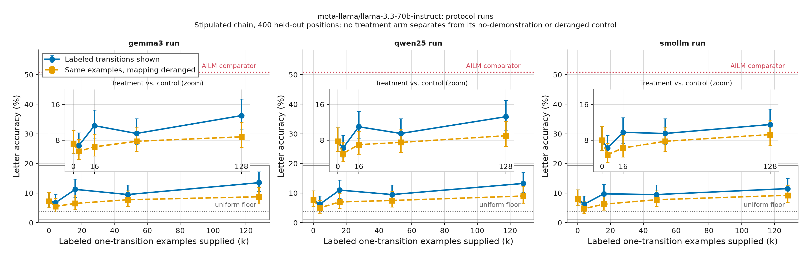
meta-llama/llama-3.3-70b-instruct through provider route
groq, scored against the number of labeled
single-transition continuation examples supplied, with the
character-level multiset-matched derangement control built from the same
examples. The comparator and uniform floor are reference levels, not
series. Each full-scale panel retains both arms and reference levels;
its inset enlarges the same treatment/control intervals on a shared
narrower vertical scale, with the enlarged region outlined in the
parent. The title is generated from the validated family outcomes rather
than typed from an earlier run. This panel would be falsified by a
plotted cell not matching its recorded token, by a rung or registered
probe omitted from the figure, by a treatment/control prompt mismatch
beyond the derangement, or by a title that disagrees with the corrected
paired contrasts.In the article PDF, enlarged views of fig. 35 retain both percent-accuracy axes and reference lines. Blue circles show labeled transitions; orange squares show the matched derangement. The overview retains the shared legend and generated outcome headline.
At the audit-specified final registered rung k = 128, probe
accuracy minus the comparator was -37.25 percentage points for gemma3
run (95% interval -40.36 to -32.82 percentage points, p = 2.29e-33);
-37.50 percentage points for qwen25 run (95% interval -40.61 to -33.07
percentage points, p = 1.24e-33); -39.25 percentage points for smollm
run (95% interval -42.24 to -34.92 percentage points, p = 4.73e-36). The
signed ratios of headline lift to each respective no-demonstration gap
were gemma3 run: 14.37%; qwen25 run: 12.79%; smollm run: 8.19%; negative
values mean the examples reduced accuracy. This bounds performance under
the declared maximum k, prompt, and derangement; it does
not demonstrate equal training opportunity and does not exclude fitting
asymmetry as an explanation of the remaining margin.
Scope, because a result this shaped invites over-reading in both directions. The three registered run cohorts of the same hosted model were tested on the stipulated order-one chain under the recorded prompt and grid ending at 128 examples. Agreement across these run cohorts is still not a general claim: a different family of model, a longer context, or a chain with a different marginal could each behave differently, and nothing here is evidence about in-context learning in general.
13.4.10 Calibration scores and limits of interpretation
On the letter task both kinds of system put a distribution over the same declared inventory, so the same scoring rules can be computed for both. That is not enough to make the resulting numbers commensurable, and this subsection does not treat them as though it were. The two distributions are objects of different kinds. The comparator’s is its own exact transition column. Each probe’s is a reconstruction assembled here from a truncated candidate list — filtered to the scored inventory, completed for the symbols the truncation hid, and renormalized by the procedure set out in the next paragraph. A probe’s Brier and negative log likelihood below are therefore proper scores of that reconstructed inventory distribution rather than of the external model’s constrained-output distribution, while the comparator’s are scores of the column it actually uses. Nothing in the table ranks one kind of object against the other.
Expected calibration error uses 10 equal-width bins over 200 positions, an evenly spaced stride subsample of the letter census, so the table’s Top-1 column is a subsample figure and differs from the census accuracy above. Calibration is reported only for a system whose own answer-slot candidates survive the direct dual-rule check: the two completion rules are both applied to that system’s recorded distributions, and a system whose reported calibration numbers move by more than 0.01 between them is withheld from the table. That gate is the one decision 93 adopted, replacing the captured-mass floor the protocol originally declared; the floor is retained as provenance and the subsection after this one measures it. Under the adopted gate two of the three registered probes are withheld, and their withheld figures are still recorded in the ledger — a withheld calibration is an audited one, not an absent one.
AILM’s distribution is the exact bigram column it takes its argmax of. Each probe’s distribution is read from the answer-slot token logprobs of the same schema-constrained call the accuracy is scored from — restricting the read to a declared answer slot is the same move that lets a language model’s stated probabilities be well calibrated on a closed-set question in the first place (Kadavath et al. 2022), and the protocol here inherits that precondition rather than establishing it fresh. Because each probe’s answer-slot distribution is reconstructed from a truncated top-k list rather than observed in full, the external calibration figures are explicitly exploratory: no full-distribution reading or missing-mass bound is computed, and the captured-mass floor of the next subsection exists precisely to measure how much the truncation decides. (Vaicenavicius et al. 2019), (Kumar et al. 2019), and (Nixon et al. 2019) make the general point that binned calibration estimates on reconstructed distributions carry completion-rule sensitivity; this protocol treats those references as design guidance for the floor rather than as computed checks here. Two properties of that list matter. The server reports at most 20 candidates for a 30-symbol inventory, so it is truncated. And what it returns is the raw next-token distribution rather than the schema-masked one, so it also carries multi-character tokens the response contract could never emit. That mass is discarded rather than redistributed, since it belongs to no inventory symbol, and the remainder is renormalized. An inventory symbol absent from the truncated list fell below every reported one, so it is assigned that smallest reported probability as an upper bound and the distribution renormalized again.
The share genuinely observed is itself recorded — 0.8610770659256101 for Gemma 3 4B, 0.9958682213188665 for Qwen 2.5 3B, and 0.31769408336977845 for SmolLM 1.7B Base v0.2 on average — because the completion is an assumption and its weight should be visible. The answer slot was unlocatable on 0 positions for Gemma 3 4B, 0 for Qwen 2.5 3B, and 0 for SmolLM 1.7B Base v0.2. Those are the only positions scored from an entirely assumed distribution; elsewhere the assumed part is the uncaptured mass recorded above. The captured share is not a property of the inventory alone: a model whose probability mass sits mostly on multi-symbol tokens the grammar forbids yields a low share whatever the inventory size, which is why the share is recorded per system.
That share is not always concentrated. Where it is spread, most positions are near-fully observed and a minority near-empty, and the mean then sits between two clusters and matches neither; where every position is well observed the mean is simply the answer. A mean alone can describe neither of those two cases, so both summaries are reported. The median captured share is 0.9607762736604557 for Gemma 3 4B against an individually starved fraction of 0.09, 0.999320694664291 for Qwen 2.5 3B against 0, and 0.31870724608653683 for SmolLM 1.7B Base v0.2 against 0.975: Gemma 3 4B is the spread case, Qwen 2.5 3B the concentrated one, and SmolLM 1.7B Base v0.2 the starved one — nearly every position scored from an assumed distribution rather than a reported one. The retired floor was applied to the mean, which is the stricter summary whenever the two differ, and both are recorded so a reader can see how much of each figure rests on mostly-reconstructed positions. An absent inventory symbol is completed with the smallest probability the server did report, never with a share of the discarded mass; that bound cannot exceed any observed candidate, so it perturbs the distribution less than spreading the discarded mass would.
The size of that advantage is not something the method guarantees. The gap between these numbers and an observed-only renormalization grows with the starved fraction, and the registered probes do not sit between the near-clean and near-starved extremes — Gemma 3 4B and Qwen 2.5 3B sit near the clean end and SmolLM 1.7B Base v0.2 at the starved one. Above the declared floor Qwen 2.5 3B is close to rule-insensitive and Gemma 3 4B is not; that is an observation about this data, not a guarantee. What the floor rests on is the narrower fact that below it no completion rule recovers a distribution that was almost entirely unobserved, so the reported quantity would be the rule rather than the model. Where between those two extremes the transition actually falls is a measurable question, and the next subsection answers it offline, on distributions whose truncation can be swept.
The class each probe is scored on is the answer it returned, not the argmax of the reconstructed distribution. The two can differ. The reported candidates are the raw pre-mask distribution, while generation is grammar-constrained, so the constrained decoder can be pushed off its raw argmax. On this run they agree on 1, 0.99 and 1 of positions for Gemma 3 4B, Qwen 2.5 3B and SmolLM 1.7B Base v0.2. That is near-total, and it is not guaranteed: agreement is a property of the decode rather than of the method — one more reason the gate, not the table, decides what appears here. Where the two differ, scoring the argmax would report a calibration accuracy the benchmark never recorded. The parsed answer is used instead, and the agreement rate is reported beside it rather than assumed.
Expected calibration error, Brier score, and negative log likelihood are reported per system, all computed over the full distribution rather than the top symbol alone. Expected calibration error is the binned gap between stated confidence and realized accuracy; the Brier score is the multiclass form \(\sum_k (p_k - y_k)^2\); and the negative log likelihood is the mean of \(-\log p\) on the gold symbol. The latter two are strictly proper (Gneiting and Raftery 2007) as rules applied to whatever distribution is handed to them, which is why a top-symbol Brier variant is not used: it can rank a system that is uniformly wrong at low confidence above one that is often right at moderate confidence. Propriety here is a property of the rule and of the argument it is given, and for a probe that argument is the reconstruction. A strictly proper rule is minimized in expectation by reporting one’s own beliefs, and that incentive attaches to whatever produced the scored vector; since the scored vector is assembled here rather than emitted by the external system, the score carries no strictly-proper interpretation with respect to that system. It remains a proper score of the reconstruction, which is the quantity the table reports. Both proper rules are reported rather than one, because they are not redundant: under a change to how an unreported symbol is completed they can move in opposite directions on the same system, so a single rule would present a reconstruction choice as a property of the model.
| System | Top-1 | Mean confidence | ECE | Multiclass Brier | NLL |
|---|---|---|---|---|---|
| AILM | 30.50% | 26.31% | 6.53% | 0.850 | 2.450 |
| Qwen 2.5 3B | 15.50% | 88.93% | 73.43% | 1.532 | 8.329 |
The first three numeric columns are percentages. Proper scores are rounded to three decimal places for display; their exact values remain in the claims ledger.
A system the gate withholds has no row in that table, and the reason is the same specific misreading the captured-mass analysis located, now measured directly. A reconstruction the completion rule dominates flattens toward the smallest reported probability; flattening lowers the stated confidence, and on a system that is usually wrong a lowered confidence reduces the measured calibration error. A rule-dependent system would therefore tend to appear as the best-calibrated row in the table, and marking such a row unreliable does not stop a reader ranking it. Gemma 3 4B is that system on this run: its two rules move its expected calibration error by 0.012740862022979305 and its Brier score by 0.012133730087630523, both beyond the 0.01 tolerance, so it has no row. SmolLM 1.7B Base v0.2 is withheld by the same gate, and by larger margins — 0.12938914494705284 in expected calibration error and 0.117593444691241 in Brier — and its recorded-but-unpublished expected calibration error is the lowest among the probes’ recorded figures, which is the flattening trap above working exactly as described: the most reconstructed probe distribution would have appeared the best calibrated among them. Both systems’ figures remain in the ledger, and the gate’s verdict is recomputable from them — recording nothing was never what stopped the misreading; measuring the rule was.
Calibration is a distinct axis from accuracy rather than a restatement of it: a system whose distribution were one-hot at every position would post an expected calibration error of exactly one minus its accuracy, and the measured values above do not coincide with that. The mean-confidence column is what separates the two — a system may state a confidence far from the rate at which it is right, in either direction, at any accuracy.
13.4.11 Captured-mass floor and calibration scope
The captured-mass floor was the gate the calibration table originally applied, and it was argued rather than located. The declared value 0.5 follows from a sound premise — below some captured mass the completion rule rather than the model decides the reported number — but nothing measured where that mass is. The live arm cannot supply the answer: its probes sit at 0.8610770659256101, 0.9958682213188665 and 0.31769408336977845 captured mass, so almost the entire range in which the transition could fall is unsampled. This subsection is a measurement of the project’s own gate rather than of any model.
The measurement needs distributions whose truncation behavior can be
swept, and it needs them without a model call, so it uses AILM’s own
letter transition columns: real next-symbol distributions over the same
30-symbol inventory the benchmark scores, already the comparator the
calibration arm reports. Protocol calibration-floor-v1 at
seed 20,260,807 scores 200 positions with 10 bins, matching the sample
size and binning of the live arm. At each of 96 target captured masses
from 0.05 to 1 in steps of 0.01, every column is truncated to the
smallest top-k reaching that target — the truncation the logprob cap
imposes — and reconstructed twice: once under the shipped min-bound
rule, read out of the benchmark’s own reconstruction path rather than
restated, and once under an observed-only rule that renormalizes the
survivors and gives an absent symbol nothing. The measured quantity is
the gap between the two rules, not either rule’s fidelity to the
untruncated column, because that gap is precisely what “the completion
rule rather than the model decides the number” means. The whole sweep is
offline; it issues no request and reaches no service.
The located floor is the smallest captured mass above which neither expected calibration error nor the Brier score again disagrees between the two rules by more than 0.01. It is 0.9913050462092039, which is 1.9826100924184078 times the declared 0.5. The declared floor is therefore not a conservative choice: it sits below the located one by that factor, admitting systems at a captured mass where the two rules still disagree. Repeating the sweep at 800 positions puts the floor at 0.9828332448712668, so the location is not an artifact of the sample size a binned statistic is computed at.
At the declared floor itself the two rules have not converged. The grid point whose achieved mass is nearest it captures 0.5009002481860143, and there the reconstructions differ by 0.027279486311722168 in expected calibration error and 0.006624834640688415 in Brier score, while sitting 0.8657528071598947 apart in total variation. AILM’s whole recorded expected calibration error is 0.06525983583459523, so a rule-induced disagreement of 0.027279486311722168 is a large fraction of the effect this axis reports. A system admitted at the gate could have a substantial part of its published calibration number decided by a reconstruction choice rather than by its own distribution.
Raising the gate to the located floor is not available through this endpoint. Reaching 0.9913050462092039 captured mass on these columns needs 19.205 of 30 candidates on average, against a server cap of 20, and 0.395 of positions need more than the cap allows. The declared floor by contrast needs 3.035 candidates, comfortably inside the cap, which is part of why it was easy to declare and never tested. The located floor is consequently unreachable in principle here rather than merely unmet by the registered probes, and the constraint is the API’s, not the models’. What would falsify that: an endpoint returning all 30 candidates, on which the located floor becomes an ordinary requirement.
The locator has one property worth reporting on its own, because a plausible alternative would have produced a wrong answer that looked like a confirmation. Each metric’s divergence first drops below 0.01 far below the located floor: at 0.46163474055756576 captured mass for expected calibration error and 0.4955158182362678 for Brier, both just below the declared 0.5, while the two reconstructions are still 0.8852931589225496 apart in total variation and so agree on almost nothing. The two rules bias a metric in opposite directions, min-bound flattening the distribution and observed-only sharpening it, and each signed difference passes through zero exactly once (1 sign change for expected calibration error, 1 for Brier). A locator that took the first crossing would have landed on those two values, each of which makes the declared floor look conservative, from a sweep in which the completion rule is still deciding almost the whole distribution. The recorded locator requires a sustained crossing instead — the smallest point above which the divergence never again exceeds the threshold — and that requirement is load-bearing rather than cosmetic: the metric divergences are not monotone in captured mass, rising on 26 grid steps for expected calibration error and 23 for Brier, even though the total variation between the two reconstructions rises on 0. The distributional gap closes monotonically; its image in either metric does not.
fig. 36 puts the whole sweep on one set of axes: the two signed differences with the distributional gap they cross zero inside, the same divergences against the threshold on a log axis, the size of the rule-decided part of a published number, the candidate cost of reaching the located floor, and a captured-mass ruler carrying both floors beside the measured probes.
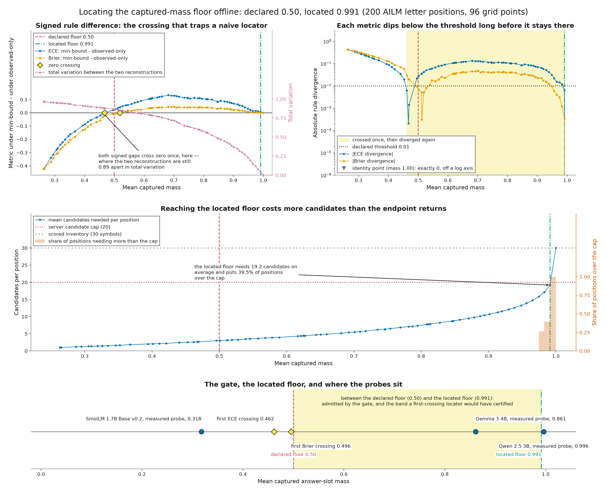
The sweep also carries an identity control, and it is what makes the rest of these numbers a measurement of the shipped code. At the top of the grid the truncation removes nothing, so both rules must reduce to the untruncated column: they differ there by 4.3290289040797235e-17 in total variation against a declared tolerance of 1e-12, and the figures at that point are 0.06525983583459523 and 0.8503736136135569 — the same expected calibration error and Brier score the calibration table above records for AILM, 0.06525983583459523 and 0.8503736136135569. The sweep is therefore exercising the benchmark’s own reconstruction and scoring path, not a reimplementation that happens to resemble it. Either pair failing to coincide would falsify that claim, and the recorder writes no claim at all if the two rules disagree beyond the tolerance at the top of the grid.
What this does and does not say about the reported calibration numbers turns on whose distributions were swept. The ground truth here is AILM’s column shape, and column shape is exactly what the result depends on. AILM’s mean confidence is 0.26311069214401095, against 0.7754387805479024 for Gemma 3 4B, 0.8893152498409304 for Qwen 2.5 3B, and 0.3690826094370471 for SmolLM 1.7B Base v0.2: the probes’ reported distributions are far more peaked, so a truncation reaching a given captured mass leaves them far less structure to disagree about, and the two rules have correspondingly less room to diverge. The sweep states a divergence at a captured mass for AILM-shaped distributions, and that statement does not transfer to a peaked one. Nothing here shows that the calibration figures reported above are wrong.
The conclusion is narrower, and it is about the gate rather than about the numbers it admitted. Captured mass is a proxy for rule-dependence, and on at least one realistic distribution family the proxy is not conservative at the value the protocol declares. Gemma 3 4B’s 0.8610770659256101 sits above the declared floor and below the located one, so one of the registered systems is inside the band this sweep flags; Qwen 2.5 3B’s 0.9958682213188665 sits above both; and SmolLM 1.7B Base v0.2’s 0.31769408336977845 sits below the declared floor itself, so the floor alone would have excluded it — and the direct check excludes it on its own divergence regardless. It is Gemma 3 4B on which the two verdicts disagree: the floor admits what the divergence check withholds.
What would actually license a probe’s calibration number is not its captured mass but the divergence measured on that probe’s own recorded candidates under the two rules — the same quantity this sweep measures on AILM’s columns, applied to each probe’s answer-slot list instead. That quantity is now recorded. Under the two completion rules the probes’ calibration numbers move by 0.012740862022979305 in ECE and 0.012133730087630523 in Brier for Gemma 3 4B, by 0.005863058804346677 and 0.006855875349030871 for Qwen 2.5 3B, and by 0.12938914494705284 and 0.117593444691241 for SmolLM 1.7B Base v0.2, against a tolerance of 0.01. Qwen 2.5 3B is inside that tolerance on both metrics and Gemma 3 4B and SmolLM 1.7B Base v0.2 are outside it on both, which is the direct measurement the captured-mass proxy was standing in for — and the two verdicts disagree on exactly one system. SmolLM is the flattening trap demonstrated rather than argued: its recorded-but-unpublished expected calibration error is the lowest among the probes’ recorded figures, and publishing it would have credited the completion rule’s own flattening to the model.
That disagreement was the finding, and it is now the gate. The proxy
admitted both probes; the direct check showed one of them to be
rule-dependent enough to matter at the declared tolerance. Both signed
divergences were negative for every probe, so the shipped min-bound rule
reports a lower error than the observed-only rule in every case
rather than in some — the reconstruction is not simply noisy around the
observed value, it is biased in one direction. The gate change — gating
on the dual-rule divergence exceeding 0.01 rather than on captured mass
falling below 0.5 — was deferred so that a version of the paper
comparing both rules would exist; the record under version 1.0.0 is that
version, and the gate was adopted on its evidence (decision 93). The
calibration table above already reports under the adopted gate: Gemma 3
4B and SmolLM 1.7B Base v0.2 are withheld and Qwen 2.5 3B reports.
CALIBRATION_MASS_FLOOR stands in the code at 0.5 as
provenance only; it no longer decides anything.
13.4.12 Registered greedy-decoding stability diagnostic
Decoding is greedy at temperature zero, so the sampling seed cannot reach the output and the expected run-to-run spread is exactly zero. That is a prediction about the protocol, and it was measured rather than assumed.
The prediction holds for the answer and not for the distribution, and the two are separate claims that this section previously ran together. Re-issuing a recorded request against the live server reproduces the reply string exactly; it reproduces the answer-slot logprobs only approximately. Over 24 re-queried positions the answer agreed on a fraction 1 of them, while the logprobs drifted by up to 0.034735 in log space, 0.00102773 in reconstructed probability and 0.0002442 in captured mass, with 0 candidate tokens entering or leaving the truncated top-k lists entirely. Every accuracy number from the locally served arms of this section is therefore exactly reproducible (the hosted arms are not run-stable; decisions 128 and 130), and every calibration number carries that drift as a floor on its precision — ECE, Brier and captured mass are computed from the quantity that moves. The cache audit checks the two separately for the same reason: the answer must match byte-for-byte, the distribution within a declared tolerance. The stability and determinism arms draw their own stride subsamples from the same letter pool rather than reusing the scored positions, so they replicate the protocol independently rather than rerunning the table above.
Rerunning the letter task over 120 positions at two neighboring seeds gives:
| System | First seed | Second seed | Spread |
|---|---|---|---|
| Gemma 3 4B | 0.075 | 0.075 | 0 |
| Qwen 2.5 3B | 0.1 | 0.1 | 0 |
| SmolLM 1.7B Base v0.2 | 0.05 | 0.05 | 0 |
Issuing the identical request twice at the identical seed reproduces the reply string on a fraction 1 of 30 positions for Gemma 3 4B, 1 for Qwen 2.5 3B, and 1 for SmolLM 1.7B Base v0.2. Reproducibility holds under matched server state; a model load or an intervening workload is a change in that state, which is why the protocol issues one discarded warm-up call before any position is scored. These are determinism replications and not estimates of sampling variance; there is no sampling variance to estimate under greedy decoding.
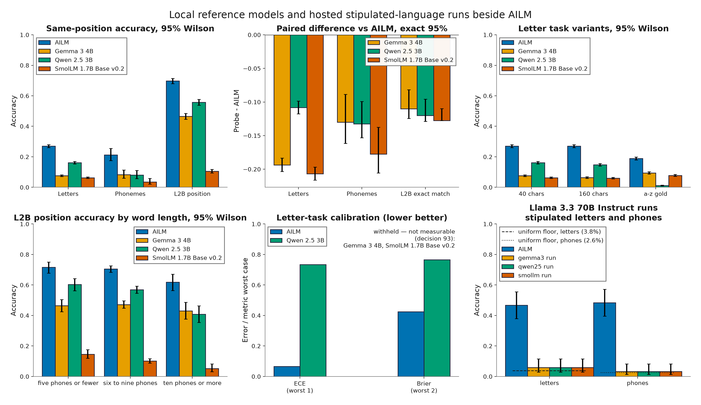
meta-llama/llama-3.3-70b-instruct through provider route
groq on the stipulated letter and phone chains; these
labels do not identify the local weights shown in the other panels. The
stipulated panel shows each bar group against its own uniform floor
(3.85% letters, 2.56% phones). The other bottom panels show letter-task
expected calibration error and Brier score scaled by their respective
theoretical maxima for the systems the direct dual-rule gate admits,
with the withheld probes named in-panel rather than drawn (decision 93),
and G2P position accuracy stratified by gold phone count. The
prefix-window and phone-count panels carry Wilson intervals on their own
denominators: the scored positions of each letter arm, and the gold
phone positions of each bucket (584, 1727, and 309). The G2P position
panels are not single-rule readings: the comparator uses strict
positional alignment and each probe uses Levenshtein alignment, which is
why the section reports separate readings. Invalid answers are scored
wrong and never dropped, and there is no top-k series because the
endpoint returns a single answer per call. Any of the following would
falsify this panel: a bar not matching the recorded tokens once the
calibration panel’s worst-case scaling is undone; an interval not
matching the paired or Wilson tokens; an AILM context bar that differs
between the prefix windows; a sampled-position count that has changed; a
figure that silently includes a model the recorders did not register; a
withheld system drawn as a calibration bar; a G2P position bar drawn
from an alignment token other than the one this caption assigns its
system; or a line connecting the external models as a
trend.In the article PDF, enlarged views reproduce the panels of fig. 37 from the same image, grouped to retain their complete headlines, axes, intervals, and legends. The global identity headline and complete caption remain in the overview. The stipulated-chain panel uses hosted run cohorts; the other panels use the locally served model identities named in their legends.
13.5 External reference probes and same-position comparators
The finding and the reason it holds are not separable, so both are stated here rather than quoted out of the main text. Over the 7952-position letter census the comparator scores 0.26961770623742454 against 0.07595573440643863, 0.1613430583501006 and 0.06287726358148893. Much of that margin is inventory compliance, not prediction, in a direction that differs by probe: the scored alphabet contains a space, space is the most frequent symbol in the stream, and a system’s score therefore depends in part on whether it will emit a non-alphabetic symbol at all, which is a fact about what a model is willing to produce. On the 6400 positions whose target is alphabetic, where no system can score by emitting a space, the comparator falls to 0.18875 and Qwen 2.5 3B falls further than it does, to 0.01109375. The contrast survives that restriction, which is the result worth having; the raw census margin is not, and a reader who takes the first number without the second has the arithmetic and not the finding.
13.6 Scope of the external reference evidence
What follows restates the conditions at the head of this section against what the arms returned.
This measurement does not certify AILM competitiveness, compare perplexity across different tokenizations, or claim that any external model registered here is a generative model of the same kind. On the letter task it establishes less than the headline numbers suggest: the full-inventory comparison is dominated by whether a probe will emit a non-alphabetic symbol at all, and the task is sensitive to how the prompt names the inventory. The separation does survive on alphabetic targets alone, where that behavior cannot act, and every alphabetic contrast clears the corrected family threshold. The phoneme and G2P contrasts do not share the compliance weakness — both are scored on a held-out split with no comparable compliance channel.
The alphabetic, prompt-format, and context-window controls state their detectability rather than leaving it open. Power for the alphabetic, prompt-format and context-window arms is derived from the discordant counts those arms already record, using the reference share and significance level the recorded arms use, and the derivation is checked against the arms that carry a recorded power. The largest of those figures is 0.9806070660624776. The census changed what these controls support, and in the direction that is easiest to under-report. At the sampled size every letter control was underpowered and every contrast in them was unresolved; over the full pool the alphabetic arm’s contrasts clear the corrected threshold on effects larger than the reference share, the instruct probes’ context-window contrasts clear it, and the Gemma 3 4B prompt-format contrast clears it. What remain unresolved are the Qwen 2.5 3B and SmolLM 1.7B Base v0.2 prompt-format contrasts and the SmolLM 1.7B Base v0.2 context-window contrast. The reading that survives is narrower and firmer than the old one: the instruct probes are demonstrably sensitive to prefix width and, for one of them, to prompt formatting, on positions where AILM is invariant by construction. Sensitivity is not skill, and the accuracy columns rather than the p-values are where a reader sees which it was.
On this declared run, the fitted AILM comparator separates from every registered no-demonstration probe on the held-out stipulated chain at the synthetic family’s corrected threshold. The locally generated stipulated artifact reduces the exact-overlap threat but does not establish any external model’s training contents. A stipulated order-one chain is not English, so the complete registered-probe measurement narrows one exposure concern without resolving the English-corpus limitation.
Calibration is not a commensurable axis, and the section no longer treats it as one. The comparator is scored on its own exact transition column; each probe is scored on a reconstruction of its answer-slot distribution, truncated by the server’s candidate cap, filtered to the scored inventory, completed for the symbols the cap hid, and renormalized. Brier and the negative log likelihood are proper scores of that reconstruction and carry no strictly-proper interpretation with respect to the external system, because the vector they score is not the one that system emits. What the calibration arm reports is how the endpoint’s answer-slot report behaves once assembled into an inventory distribution, beside a comparator whose distribution needed no assembly.
The gate deciding which systems that arm reports is itself measured here, and it does not come out well. Located offline against AILM’s own letter columns, the mass above which the two completion rules stop deciding the reported number is 0.9913050462092039, some 1.9826100924184078 times the declared 0.5, and at the declared value the rules still differ by 0.027279486311722168 in expected calibration error against an AILM total of 0.06525983583459523. The declared floor is not conservative on that distribution family, and the located one cannot be adopted, since reaching it needs more candidates than the server reports. This does not show that the calibration numbers above are wrong: the swept distributions are AILM-shaped and the probes’ are far more peaked, so the sweep’s divergence at a given captured mass is not a prediction for them. What it shows is that captured mass is a proxy for rule-dependence and an uncalibrated one. The arm is therefore no longer gated on it: decision 93 adopts the direct per-model rule divergence as the measurability decision, and two probes’ calibration (Gemma 3 4B, SmolLM 1.7B Base v0.2) is withheld on exactly that evidence.
What the section does is place a mechanistic discrete model beside zero-shot external references under identical next-symbol units, on a letter pool of 7952 distinct positions drawn from a longer non-repeating held-out passage. The Brown and CMUdict arms do not control prior exposure: those corpora are public and may have occurred in external-model training data. The stipulated arm reduces exact-artifact overlap, but does not prove absence from or independence of pretraining. Contrasts whose paired interval spans zero are unresolved at this sample size even so.
13.7 What a fair comparison with a prompted transformer would require
sec. 13 scores AILM against three externally served zero-shot models — Gemma 3 4B (Gemma Team, Google DeepMind 2025), Qwen 2.5 3B (Qwen Team 2024), and SmolLM 1.7B Base v0.2 (Ben Allal et al. 2024) — on identical next-symbol positions, and calls itself a reference frame rather than a competitiveness claim. That disclaimer is load bearing, so it needs an argument rather than a sentence.
Start with how the mechanistic comparator and the external systems differ. AILM’s letter comparator is one transition matrix over a 30-symbol inventory, estimated by counting 5,856,736 adjacent pairs in a frozen corpus; its prediction is the argmax of a column that exists whether or not anyone asks for it. The probes are decoder-only transformers (Vaswani et al. 2017), pretrained on corpora whose size and composition are described only in summary, instruction-tuned afterwards except for the base model SmolLM 1.7B Base v0.2, and then queried zero-shot in the manner Brown et al. (2020) established as an evaluation mode. Four things differ at once — parameter count, training data, training objective, and the interface through which a prediction is obtained — and the first two are not separately adjustable in any case, since the compute-optimal frontier (Hoffmann et al. 2022) makes capability a joint function of both. “The same size” and “the same data” are not two independent knobs one could hold fixed while turning the other.
The interface is the confound the letter arm measures most directly. A probe’s answer is a token sequence produced in response to an instruction, restricted here to an enumerated inventory by the server’s structured-output path (Willard and Louf 2023). That restriction is what closes one failure channel: the invalid-answer rates recorded for the probes are 0, 0 and 0.03610603290676417 — zero for the instruct probes and non-zero for the base model — and every invalid answer counts as wrong and stays in the denominator, so the comparison never rewards malformed output. What it leaves open is which legal symbol a model is willing to emit. Of the 7952 scored letter positions, 1552 have a non-alphabetic target, and the probes’ accuracy on exactly those positions varies between them far more than their accuracy on the alphabetic ones does (sec. 13). A prompted model’s prior over answer strings is a property of the model and the instruction jointly rather than of the task (Zhao et al. 2021), so a full-inventory letter score is partly a compliance score. That is why the alphabetic-only arm over 6400 positions is reported beside it, and why the separation surviving there is the result that carries weight.
Prompt wording is a second interface effect, and it is not a nuisance that careful phrasing removes. Changes that leave a task’s content untouched can move a prompted model’s accuracy by more than the differences such comparisons usually report, which is the case Sclar et al. (2024) makes and quantifies across formats. The benchmark measures one such perturbation on identical positions, holding the inventory, schema and seed fixed, and over the full pool that arm resolves for Gemma 3 4B but not Qwen 2.5 3B or SmolLM 1.7B Base v0.2. The honest reading is unchanged and now has a measurement behind it: every letter number here is a point drawn from a distribution over plausible prompt formats that was never sampled, and the single control run says how far the tested perturbation moves the answer, not how wide the space is. Its decisiveness for Gemma 3 4B is a reason to treat the unsampled space as a live threat rather than a caveat.
Contamination is uncontrolled on the English letter, phoneme, and G2P tasks and cannot be resolved by assertion. Brown (Francis and Kučera 1979) and CMUdict (Carnegie Mellon University Speech Group, n.d.) are longstanding, widely distributed resources; that fact is relevant to possible training-data exposure and does not override Brown’s upstream non-commercial-use terms (sec. 8). No probe’s training corpus is documented at the granularity that would let anyone check for their presence — the difficulty Dodge et al. (2021) demonstrates even for a corpus that is released — and overlap is a property of a benchmark and a model together rather than something a model report could settle once (Sainz et al. 2023). The synthetic arm is the control, and it is narrow on purpose: a stipulated order-one chain over 26 symbols generated from a recorded seed, scored on 120 independently generated evaluation trajectories. It reduces exact-artifact overlap without certifying pretraining contents or removing the other opportunity and interface differences. It preserves every registered run cohort while using a single hosted model, but a stipulated chain is not English, so it licenses a statement about transfer to a declared transition system and not a statement about the English arms.
What would have to be equalized for a competitiveness claim is therefore the following set of conditions, each of which is either unavailable or changes the object being compared. Both systems would need the same training corpus and the same amount of it, which for these probes is neither published nor reproducible. They would need the same training objective, which for a fitted transition matrix and an instruction-tuned transformer is not a shared quantity. They would need the same interface — either both prompted, which a matrix cannot be, or both scored from a distribution over the same declared inventory, which is available only where a server reports enough candidates. Every arm would need independently verified training-corpus non-exposure, which no arm here establishes. And the comparison would need either enough discordant pairs to resolve the effects it reports, or a declared equivalence bound where it cannot. The benchmark does not equalize training-corpus identity and quantity, training objective, interface, or unseen-corpus coverage, and it does not establish the inferential-resolution condition.
One axis survives that list, and it is the reason the calibration arm exists. Where both systems place a distribution over the same declared inventory they are emitting the same kind of object, and accuracy is not the only thing worth reading off it — the multi-metric position Liang et al. (2023) argues for, with calibration as a first-class axis rather than an appendix to accuracy. Even there the footing is not level: AILM’s distribution is the exact column it takes its argmax of, while a probe’s is reconstructed from at most 20 reported candidates over a 30-symbol inventory, so part of it is a completion rule rather than a model. sec. 13 measures how much of a published calibration number that rule can decide, found the gate that admitted systems to the arm was a proxy that is not conservative where it was set, and now gates the arm on the measured divergence itself. The consequence for this section is sharper than a caveat. Calibration was the axis this comparison had the best claim to share, and it does not survive inspection either: the score is computed on a reconstruction rather than on the distribution the external system actually reports, so no axis here is commensurable in the strict sense the word implies.
The claim the benchmark supports is consequently narrow and stated as such: on these positions, under this protocol, with these prompts, these are the numbers. No arm of it orders the participating systems as language models, and this manuscript makes no such ordering anywhere.
14 Supplement E: Machine-Checked Lean Proofs and Their Scope
sec. 8 states what the machine-checked layer proves and the one thing it cannot: that any recorded number is correct. This supplement carries the layer’s full argument — how the generated ledger module binds the proofs to the recorded measurements, what a falsifying re-record looks like, and where the deliberate scope boundaries lie — kept separate from the body because that argument needs the Lean definitions themselves, not only their conclusion.
14.1 Lean proof coverage and implementation boundaries
Selected mathematical claims are stated and proved in Lean 4 under
formal/: the gate taxonomy of eq. 10 and eq. 12, the pre-registered sweep-shape
predicates of sec. 4.10, both halves of
eq. 6, and the Bonferroni arithmetic behind
tbl. 36. The layer ships 149
named theorems and 34 witness examples. No proof in it is incomplete:
the recorded formal_sorry_free verdict is true, established
by a word-boundary scan and by #print axioms on
every named theorem, because an unfinished Lean proof raises a warning
rather than an error and a zero exit code alone would not catch one. The
number of axioms it reaches beyond Lean’s propext and
Quot.sound is 1: Classical.choice, which
core’s own Rat.add_comm already depends on, so a stricter
policy would be unsatisfiable against core rationals rather than
stricter about anything proved here. native_decide is used
nowhere, so no proof trades kernel checking for compiler trust. The
toolchain is pinned in formal/lean-toolchain, and the Lake
project declares no dependencies, not even Mathlib, so
lake build runs offline from a clean checkout once the
pinned Lean toolchain is installed.
The theorems that touch measured values are proved about
formal/AILM/LedgerData.lean, the one module holding
recorded numbers, and that module is generated from
data/claims.json by
scripts/generate_lean_ledger.py rather than written.
tests/test_formal_isomorphism.py requires a fresh
generation to reproduce the committed file byte for byte, and separately
re-derives every emitted literal from the ledger through an
independently written conversion, so byte identity cannot pass on a
generator that converts consistently wrongly. The machine-checked layer
therefore cannot drift from the recorded measurements in either
direction: a hand edit fails byte identity, and a re-record nobody
regenerated fails it too.
The falsifier is concrete, and it is the reason this layer is a check
rather than a decoration. Every ledger-facing theorem that fixes a
threshold closes by decide, so the kernel — not a tolerance
— evaluates the recorded values; the two that instead quantify over
every threshold or every bounded model are derived
from the general theorems, which is what makes them stronger than a
check at one bar. A re-record that moved a channel sweep’s argmax off
its interior point, or moved a baseline or a ceiling across a declared
threshold, changes LedgerData.lean on regeneration and the
corresponding proof stops compiling. What the layer does
not establish is that any recorded number is
correct: Lean checks that the values have the logical
properties sec. 5 and
scripts/audit_gates.py assert of them, not that they were
measured over the right positions, and no theorem here should ever be
cited as evidence that a measurement is right.
formal/README.md names the rest of the deliberate scope
boundary, familywise error control first among them:
AILM/Bonferroni.lean proves the arithmetic of the
union bound, and the step from that arithmetic to a statement about
rejection probabilities is assumed, not proved.
The connected runtime’s conditional-update checks and GUM comparison do not acquire a theorem of global posterior correctness from this layer. The Lean results retain the specific statements and measurement bindings listed above.
15 Supplement F: Paired Tests, Multiplicity, and Null Bounds
sec. 4.11 states which instruments this project runs and what each was built to catch. This supplement is the argument behind three of them: why the paired test is the exact one rather than an aggregate comparison, how the declared significance family is corrected and what each correction admits, and what a bound on a null does and does not license.
It sits here rather than in the main text because the reader who wants the verdicts needs a page, and the reader who wants to check them needs thirty. The verdicts are in sec. 4.11 and sec. 5; the derivations, the assumption audits, the fragility analyses and the exact-value tables are here. Every number in both places resolves to the same ledger entry.
15.1 Paired testing for thin margins
The letter-to-phone margin is 0.546 points (70.801% against 70.255%).
A margin that small cannot be established by comparing two aggregate
accuracies — it sits inside the range a different tie-break rule or
smoothing constant could produce. The gate therefore pairs the two
decoders position-for-position through decode_positions and
baseline_positions in
src/ailm/levels/phoneme.py and applies the exact
conditional (binomial) form of McNemar’s test (McNemar 1947) to the discordant pairs.
Let \(b\) count positions only the
filtering agent gets right, \(c\)
positions only the context-free baseline gets right, and \(n = b + c\). Under the null the two
decoders are equally likely to win a discordant pair, so \(b \sim \operatorname{Binomial}(n,
\tfrac12)\). The test is conditional on the observed
discordant count \(n\). The
discordant-pair interval constructed from it retains that conditioning
rather than estimating uncertainty in the marginal accuracy difference
without fixing the discordance rate. Newcombe (1998)
explains this distinction and develops paired-difference score intervals
that this manuscript does not compute. The reported significance is the
two-sided exact binomial probability
\[p \;=\; \min\!\left(1,\;\; 2 \sum_{k=0}^{\min(b,\,c)} \binom{n}{k} 2^{-n}\right),\qquad{(24)}\]
the doubling being exact because the null distribution is symmetric
about \(n/2\), and the cap binding only
in the degenerate case \(b = c\). This
is the statistic the code computes:
exact_two_sided_binomial_p in
src/ailm/statistics.py calls
scipy.stats.binomtest(b, b + c, 0.5) for nonzero
discordance and returns unit probability for zero discordance. Both
scripts/record_stage2_claims.py and mcnemar in
src/ailm/levels/coupling.py use that shared helper;
tests/test_stage2_gate.py also checks the direct SciPy
calculation. None of these paths uses the \(\chi^2\) approximation. Measured over the
full held-out set: b = 1379, c = 1145, 2524 discordant
pairs in total, and p = 3.468e-06.
The unit those counts accumulate over is not the unit the corpus samples, and that is worth stating at the point the test is introduced rather than after its results. The 42,820 G2P positions come from 6484 held-out words; the 1319 Stage 4 tokens come from 229 sentences nested in 62 source documents; the 178 Stage 5 sentences come from 53 documents; the 187 Stage 6 sentences come from 27 documents. Every p-value in the declared family of sec. 15.2 is computed at the inner unit. That is a fact about the design and not about any measurement — it is fixed by how the corpora are drawn, so it holds whatever the numbers turn out to be — and it conditions every p-value, interval and power figure below. What follows states the assumption it violates, and the direction of the resulting error.
15.1.1 Exact-test choice and power cost
The \(\chi^2\) form is the asymptotic approximation to this same conditional binomial, and on the full held-out set the two would agree to more digits than anything here reports. It is rejected anyway, for a reason about the family rather than about this row. The identical procedure is run on subsamples where \(b + c\) is small, and on Stage 5 where it is very small, and there the approximation is least trustworthy and would need a continuity correction that the exact test has no use for. Choosing per row by sample size would mean the procedure changes with the answer’s size, which is the shape of a defensible decision made indefensibly often. One test is used everywhere.
The price is paid in power, and it is real. The exact test on a
discrete statistic is conservative: the attainable tail masses are a
finite set, so the achieved size sits strictly below the nominal level
almost everywhere, and at small \(n\)
there is no rejection region at all.
exact_two_sided_rejection_region in
src/ailm/statistics.py returns that region explicitly, and
returns an empty one when the corrected threshold cannot be reached at
any outcome — which is how sec. 15.2 can
say that two family members were never able to reject rather than
inferring it from their p-values.
15.1.2 Paired-test assumptions and dependence
The null is conditional: given the discordant total, each discordant pair is an independent fair coin. The conditioning matters for reading the result. The interval and share reported for each effect in tbl. 36 describe the win share among discordant positions, not the accuracy difference, and the two are different quantities on different scales — a large win share over few discordant pairs is a small accuracy gain.
The independence half is the strained one, and it is strained the same way in every paired comparison this manuscript reports. The G2P unit is a letter position, and letter positions inside one word are not independent: they share a word, a decoder trajectory, and an orthographic neighborhood. The Stage 4 unit is a token nested inside a sentence and source document; the Stage 5 and Stage 6 units are sentences inside documents. In all three, the authenticated source document is the outer sampling unit.
A cluster-level reanalysis at the outer sampling unit has been run. The design follows the clustered-errors literature: resampling clusters rather than observations preserves the within-cluster dependence that invalidates unit-level intervals (Cameron et al. 2008), and the small number of outer units — 27 documents at Stage 6 — sits squarely where that literature warns naive cluster-robust inference overrejects, so the wild cluster bootstrap of Cameron et al. (2008) Section 4 is computed as a sensitivity arm beside every interval below, not left as a promised refinement. 6 arms are resampled at their outer unit — words for Stage 2B, source documents for Stage 4’s English gold, English derived, and Czech arms, and documents for Stage 6’s sign and log-loss arms, each arm retaining its original cluster sizes — with 10,000 cluster bootstrap replicates at 0.95 coverage under a recorded seed. The estimand is fixed first and both analyses are routed through the same code path, with the independence case expressed as no clusters rather than as a second implementation, so the comparison isolates exactly what clustering changes: the uncertainty, never the point estimate.
Primary uncertainty is carried by the cluster-bootstrap interval.
Each *_P token is a whole-cluster sign-flip sensitivity
analysis, finite-sample exact only under the strong assumption that
independent whole-cluster difference vectors (or their sums for this
statistic) are jointly invariant under sign reversal. Marginally fair
discordance directions and a zero expected cluster sum do not imply that
central symmetry, so this is not McNemar’s pair-level null lifted
automatically to clusters. The table’s normal-tail column is a
self-normalized large-cluster approximation under a weaker mean-zero
null; it requires independent clusters, finite variance, no dominant
cluster, and enough clusters, and is not finite-sample exact.
| Arm | Unit | Clusters | ICC | Var. inflation | Clustered interval | Naive normal-tail p | Clustered normal-tail p |
|---|---|---|---|---|---|---|---|
| Stage 2B letter-to-phone | word | 6484 | 0.003821 | 0.9845 | [0.317905, 0.77891] pts | 3.198e-06 | 3.226e-06 |
| Stage 4 derived | document | 62 | 0.028825 | 1.4666 | [4.889581, 11.180282] pts | 4.139e-09 | 0.0002638 |
| Stage 6 log loss | document | 27 | 0.057971 | 1.5139 | [-0.009563, 0.024959] nats | 0.4728 | 0.5362 |
| Stage 6 sign | document | 27 | -0.084473 | 0.5679 | [0.14655, 0.359562] share | 0.0009993 | 0.0003587 |
Several things in that table and its companion recorders are worth stating plainly, because two of them cut against the expectation the argument above sets up.
The Stage 2B margin survives. It is the thinnest in the family and was the comparison most exposed to clustering, but the measured intraclass correlation between letter positions in a word is 0.003821 — small enough that the variance inflation is 0.9845, indistinguishable from one at the bootstrap’s Monte Carlo resolution, and the clustered interval is essentially the naive one. Letter positions within a word are less alike, for this decoder’s purposes, than the sampling structure suggests.
The Stage 4 derived margin survives at the document unit, with wider uncertainty. Its 62 contributing documents give an interval of [4.889581, 11.180282] percentage points. The intracluster correlation is 0.028825 and the variance inflation is 1.4666, so treating 1319 nested tokens as independent is anti-conservative even though it does not change the sign of the result.
The case-only clause arm is also document-primary, but its distinct uncertainties live in its own recorder. The paired privileged-label gain resamples 53 whole documents and spans zero on both reported scales. The rank interval likewise resamples 53 documents. The default classification difference is -0.5618 points with a 99% whole-document interval of [-2.7779, 0]; its sentencewise McNemar row in tbl. 37 remains a conditional secondary bound. Both this interval and the paired-gain interval above are read at the same declared confidence level; the two intervals state one coverage by construction.
Stage 6’s primary log-loss arm is non-confirmatory. At the document unit its interval spans zero, -0.009563 to 0.024959 nats, and its p-value is 0.5469 under the assumption-conditional whole-document sign-flip sensitivity analysis. The positive point estimate remains descriptive, but treating 187 sentences as independent would understate that they came from only 27 sampled documents.
Stage 6’s secondary sign arm tightens, but is not promoted. Its variance inflation is 0.5679, below one, because the measured intraclass correlation is negative (-0.084473): within a document, sentences disagree with each other more than random assignment would produce. Clustering is not uniformly conservative. More importantly, reversed tercile columns can make mean log loss worse while retaining a nominally favorable sentence sign. The sign statistic therefore cannot rescue the registered mean-log-loss prediction or the non-confirmatory primary analysis.
Within each fixed evaluation population, the effect sizes are unaffected by changing the uncertainty estimator — \(b\), \(c\) and the accuracy differences they map to are descriptive counts over the positions scored, and the reanalysis leaves every one of them where it was. What clustering moved was the inferential half, and it moved it in both directions.
15.1.3 Wild cluster bootstrap under limited outer clusters
Because few outer units is exactly where the percentile cluster bootstrap under-covers, each clustered arm above also carries a wild cluster bootstrap sensitivity interval in the style of Cameron et al. (2008) Section 4: a Rademacher weight (equal chance of \(+1\) or \(-1\)) is drawn independently for every cluster, and each replicate re-forms the observation-weighted mean from the demeaned cluster contributions, \(\mathrm{effect} + \sum_k w_k (S_k - \mathrm{effect}\, n_k) / n\), where \(S_k\) and \(n_k\) are a cluster’s difference sum and size. The demeaning makes the perturbation orthogonal to the point estimate, and with Rademacher weights the replicate variance equals the cluster-robust (CR0-style) variance of the mean exactly, so the interval is a symmetric sensitivity band on the same estimand — never a replacement: the cluster bootstrap keeps primary uncertainty. The wild arm draws 10,000 replicates at 0.95 coverage under the same recorded seed discipline as the primary arm, and its spans-zero verdict is compared with the recorded cluster-bootstrap verdict, not with the naive one. On this manuscript’s data the prediction that every verdict agrees holds: 6 of the 6 clustered arms, including the Stage 4 English gold and Czech arms omitted from the table above, agree; tbl. 34 sets the two intervals side by side, arm for arm. Agreement on this sample does not establish nominal coverage. With few outer units, both intervals remain sensitive to the sampled documents and the resampling assumptions; their agreement does not make either interval a calibrated uncertainty bound. The Stage 6 log-loss arm stays non-confirmatory on both.
| Arm | Wild interval | Cluster-bootstrap interval | Verdict agrees |
|---|---|---|---|
| Stage 2B letter-to-phone | [0.319878, 0.773631] pts | [0.317905, 0.77891] pts | true |
| Stage 4 derived | [4.761375, 10.830519] pts | [4.889581, 11.180282] pts | true |
| Stage 6 log loss | [-0.011343, 0.02152] nats | [-0.009563, 0.024959] nats | true |
| Stage 6 sign | [0.137579, 0.342337] share | [0.14655, 0.359562] share | true |
15.1.4 Document-boundary correction for sentence-stride generators
The original Stage 4 and Stage 5 generators applied the stride to
sentence indices. Reconstructing the raw # newdoc id blocks
reveals 140 source documents in both Stage 4 arms and 114 in both Stage
5 arms. The corrected generators partition all 318 identities before
population filtering; both current overlap counts are exactly 0 and 0.
The before arm below is recomputed from the pinned raw corpus by
scripts/record_ewt_document_correction_claims.py; no
historical measurement is typed into this manuscript. The before/after
comparison tbl. 35 places the
retired sentence-unit analysis beside the document-disjoint replacement
on their respective populations and resampling units.
| Quantity | Retired sentence split/resampling | Document-disjoint correction |
|---|---|---|
| Stage 4 held-out sequences | 253 | 229 |
| Stage 4 held-out tokens | 1390 | 1319 |
| Stage 4 agreement / baseline | 49.14% / 42.45% | 50.72% / 42.91% |
| Stage 4 margin, points | 6.690647 | 7.808946 |
| Stage 4 primary interval, points | [4.483931, 8.868786] (sentence) | [4.889581, 11.180282] (document) |
| Stage 5 train / test sentences | 813 / 211 | 846 / 178 |
| Stage 5 held-out positions | 1182 | 1072 |
| Stage 5 type-free / mixture / fitted reference perplexity | 4.4298 / 4.4404 / 4.424 | 4.3741 / 4.3858 / 4.3819 |
| Stage 5 paired gain, nats/sentence | 0.007288 | -0.010698 |
| Stage 5 gain interval, nats/sentence | [-0.020032, 0.037204] (sentence bootstrap) | [-0.034233, 0.008941] (document bootstrap) |
| Stage 5 AUC and interval | 0.7035 [0.5526, 0.8316] (sentence bootstrap) | 0.6483 [0.5026, 0.7724] (document bootstrap) |
15.1.5 Null-effect controls
A pairing routine with an off-by-one in the discordance count would
report significance on everything, so the procedure is required to
return “no effect” on inputs that have none, three times over in
tests/test_stage2_gate.py. The first null is real
underpowered data: the same procedure on the bounded pymdp subsample
must come back non-significant, which it does. The second is exact — a
cyclic rotation of the baseline hit vector against itself preserves the
hit count, so \(b = c\) and the exact
null p-value follows by construction, and the test additionally asserts
that the rotation produced discordant pairs at all, because a null with
no discordant pairs demonstrates nothing about the machinery. The third
is a false-positive rate: a seeded batch of accuracy-matched Bernoulli
comparators is run against the real baseline and the count of nominally
significant results is held to a declared budget, because one seeded
null is a cherry-pick and a batch is a measurement. Note that comparing
a decoder with itself would be the wrong control here: it
yields no discordant pairs at all, which the exact test cannot score.
The rotation is the construction that keeps the discordant count
non-zero while forcing the null to be true.
15.2 Declared families and their corrected thresholds
15.2.1 Historical component and external-reference families
The historical component experiments and external benchmark declare separate multiplicity families at different familywise levels. A reader must identify the relevant family before interpreting a corrected p-value. The locally specified connected GUM document-bootstrap interval is reported separately in tbl. 7; it is not appended retrospectively to either family and is not a claim of family-corrected significance.
The historical component family holds 16 tests at familywise \(\alpha =\) 0.01; what it delivers is development-population inference — the sense fixed two subsections below — and not confirmation, and every appearance of this family in this manuscript is to be read under that label. The external benchmark declares its own family of 18 contrasts, 6 on each of the 3 served probes, at a familywise level of 0.05 and therefore a per-test threshold of 0.002777777777777778. The benchmark’s per-test bar is consequently 4.4 times looser than the repository’s.
That difference is deliberate and it is defensible, but only because the two families answer different questions. The historical component family is the set of hypotheses the original stage and channel conclusions rest on: whether a level beat its comparator, whether a channel helped, whether a phase effect is real. A false positive there is a false claim about AILM, so the level is strict. The benchmark family is an external reference frame — a descriptive comparison against prompted probes that the paper explicitly declines to draw conclusions from, and whose section states in its own summary that it does not certify competitiveness. A false positive there still misstates a protocol-bound contrast, even when that contrast is not used to claim general model competitiveness.
The stipulated synthetic and in-context experiments additionally declare their own descriptive contrast families, recorded with each protocol in sec. 13. Their p-values use their own thresholds, rather than the original external-reference family’s bar or the historical component bar.
Two things follow for the original families. No test belongs to both:
the benchmark contrasts are excluded from
SIGNIFICANCE_FAMILY by name and with a recorded reason, so
nothing is corrected twice and nothing is corrected by neither. And no
benchmark result may be promoted into a claim about AILM without being
re-judged at the repository level, because the threshold it cleared is
not the threshold this paper’s claims are held to.
15.2.2 Retrospective family definition and selection limits
Bonferroni bounds the familywise Type-I rate of a family fixed
before the data are seen. This family was not fixed before the
data were seen, and the way it was built is on the record. Members enter
SIGNIFICANCE_FAMILY as levels are built, so the family that
fixes the corrected threshold has grown across the project’s life rather
than having been enumerated in advance. Of its 16 members, three exist
only because an earlier measurement was inspected: the
subsample re-analyses were chosen after the alphabetical prefix was
found to overstate the Stage 2B margin (sec. 10.1), so the evaluation split had been read
before those tests were defined on it. And every declared gate in this
project was restated or re-scoped after its stage had been built and
measured, without exception (tbl. 22,
tbl. 27);
scripts/audit_gates.py then sets each restated threshold
to the measured baseline of the population the model is scored
on. The method practiced here is retrospective re-certification, not
sequential validation. That is a property of the process rather than of
any one number it produced, which is why it belongs here rather than
among the limitations of the individual results.
Multiplicity correction does not address this, because it is not the failure multiplicity correction is for. A correction bounds the rate at which a fixed set of null hypotheses is rejected by chance; it says nothing about a procedure that decides which hypothesis to ask, and against which threshold, after seeing what the evaluation set answers. Repeated adaptive use of a held-out set can overfit that set directly, and selection over a criterion produces optimism in the estimate the selection was made on. Neither failure raises a p-value, so neither is visible anywhere in the arithmetic of this section, and dividing the level by 16 does not touch either.
The bias runs in the optimistic direction, and the mechanism is concrete rather than theoretical: a threshold restated to a stage’s own measured baseline is chosen with that stage’s numbers already in view, so clearing it cannot be evidence the author had no opportunity to anticipate. What keeps this from being a claim that every restated gate is a foregone conclusion is a counterexample in the ledger — the retained case-only clause gate was restated the same way and its model fails it. Its separate document-clustered, paired-sentence privileged-label gain interval spans zero, so the result remains unresolved rather than being promoted to an equivalence claim (sec. 4.7).
What this costs the labels defined below is stated exactly rather
than hedged. A member that crosses the corrected threshold has survived
a retrospective multiplicity procedure on the population this project
developed against. It has not been confirmed in the sense that requires
an evaluation population untouched at the moment the test was fixed, and
outside the ud_ewt_test members rescored under decision 111
(sec. 10.6) no result in this manuscript
meets that condition. The pre-registered predictions come closest and
show precisely where the distinction bites. Several predictions here
were committed to version control before the measurements that scored
them — decisions 22, 25, 27, 28 and 29 among them — and that is what
keeps a hypothesis from being written to fit its answer; one of them,
the predicted clause-to-word harm, duly failed to reproduce. What a
commit timestamp cannot fix is the population: the corpus, the level
design and the operationalization each prediction is stated over were
settled earlier, with related data already in view.
Closing the gap is not a matter of a further correction factor. It
requires a partition of Brown, CMUdict and EWT that nothing in this
project has scored against, or an independently sourced replication
corpus, with the family frozen as it now stands and run once against it.
That is done here for the 4 members that had such a partition (sec. 10.6), and an honest census of the vendored
artifacts says why it cannot be done for the rest. The CMUdict artifact
holds no unscored material: the interleave’s train side fitted the
model, its test side is scored in full, and the family-disjoint
re-partition of decision 74 has itself been scored, so the
CMUdict-population members can only be replicated against an
independently sourced lexicon. The UD EWT artifacts are built from the
dev split alone, whose test side is scored in full; the corpus’s own
test file is the registered replication population for the
EWT members, and no family member had been scored against it before the
run of decision 111. The subsample re-analyses are diagnostics of the
shipped split and have no analogue on fresh data. That census, the exact
partition rule for the EWT re-vendor, the frozen per-member endpoint and
test, and the one-run discipline were pre-registered as
CONFIRMATORY_REPLICATION in
src/ailm/statistics.py and decision 79 of the decision log.
The run was then executed to its first data touch and stopped by its own
discipline: the registered external_lexicon population —
upstream CMUdict entries absent from the vendored pin — was measured
empty, because upstream is byte-identical to the pin, and the
replication is retired by exhaustion for those members (decision 91).
The ud_ewt_test members were then scored exactly once
against the held-back test split under decision 111 (sec. 4.12, sec. 10.6): two clear the frozen per-test bar in
their recorded direction and two yield no discordant pair. Every other
verdict in this section is a development-population verdict, and the
sections that report those verdicts — sec. 5
and sec. 10.1 — are to be read under this
heading rather than in spite of it.
15.2.3 Declared family membership
Every p-value used for a threshold-crossing inference in this
manuscript belongs to a single declared multiplicity family, stated
executably rather than approximately. Descriptive diagnostics and
re-analyses of an existing family member are reported only when their
exclusion is named and machine-checked: SIGNIFICANCE_FAMILY
in src/ailm/statistics.py enumerates the 16 p-value claims,
and scripts/record_statistical_claims.py re-derives every
family verdict from the ledger on each run. The recorder refuses to run
if any declared member is absent from the ledger or if the declared list
contains a duplicate, so the family cannot shrink by a label quietly
failing to be produced.
The membership rule is one slot per recorded label, not one
per scientific hypothesis. The subsample re-analyses each hold their own
slot: they are deliberate re-measurements of the Stage 2 comparison over
different subsets of one test split. Those subsets are neither disjoint
nor nested — an alphabetical prefix and the registered strides overlap
partially and contain one another not at all — so they are dependent
measurements rather than independent ones, which is a reason to count
them separately rather than a reason to merge them. The bounded pymdp
subsample and the subsample study’s strided arms enter as separate
labels for the same reason: they are separate recorded measurements over
different position filters. The full-set Stage 2 comparison holds one
slot only — subsample_full_mcnemar_p is a second label for
the same paired comparison and must not consume a second slot. This rule
is conservative for every positive claim: a smaller, de-duplicated
family could only loosen the threshold. It does tighten the threshold
that the Stage 6 sign test is judged against, and the verdict there is
the same under each family definition considered — see below.
15.2.4 Bonferroni correction and its power cost
Bonferroni is the least powerful of the standard familywise corrections, and it is the one used here. The reason is not conservatism for its own sake but the shape of the family. Its members are strongly and unquantifiably dependent: several are re-analyses of one test split, and the lexical and coupling channels score the same G2P positions under different mixing weights. Bonferroni controls the familywise error rate under arbitrary dependence, so nothing has to be assumed or estimated about that dependence structure. Benjamini–Hochberg would be more powerful but controls the false discovery rate, a weaker guarantee than the one the claim-strength labels below are defined against, and its usual form additionally assumes a dependence structure this family does not obviously have.
Holm’s step-down procedure is the real alternative: it also controls
the familywise rate under arbitrary dependence and is uniformly at least
as powerful, so every member Bonferroni admits Holm admits too, and the
converse can fail. The arithmetic of that domination is machine-checked
as holm_rejects_every_bonferroni_rejection in
formal/AILM/Holm.lean, which proves the containment on a
sorted family and exhibits a family on which it is strict, and which
proves nothing about familywise error control: that step is Boole’s
inequality applied to the rejection events and stays assumed here,
exactly as it does for Bonferroni. What Bonferroni buys for that loss is
a threshold that is a constant. Under Holm, the bar a given test is
judged against depends on the whole sorted vector of the family’s
p-values, so re-measuring an unrelated member — or adding one, which
this project does every time a level is built — can flip a claim’s
verdict without anything about that claim having changed. A single fixed
per-test threshold keeps each claim’s status a function of its own
measurement, which is what makes the ledger’s per-claim verdicts stable
across runs. The cost is recorded honestly here: the survivor set
reported below is the conservative one, and a uniformly more powerful
procedure at the same familywise level would admit at least as much.
15.2.5 Claim-strength labels and demotion rules
The manuscript uses the following threshold-defined labels for a p-value claim. Nominally significant means \(p <\) 0.01, the uncorrected familywise level, and is demoted by nothing except a re-measurement. Corrected-threshold survivor means \(p <\) 0.000625, the Bonferroni per-test threshold for the declared family, and is demoted by a re-measurement or by the family growing. Neither strength is asserted in prose: the survivor set is a recorded list re-derived from the ledger on every recorder run, and the Stage 6 verdict is a recorded boolean, so a threshold that moved in code and not in prose changes the rendered sentence rather than being contradicted by it.
Both labels name a threshold crossed on the development population
and neither means confirmed, for the reason given above: the
family is retrospective, and a corrected threshold bounds a fixed
family’s Type-I rate rather than restoring independence to a reused
split. The stronger word is reserved for a result produced by running
the frozen family once against data it has never scored, and in this
manuscript only the ud_ewt_test members rescored under
decision 111 (sec. 10.6) were produced
that way. That run was pre-registered rather than merely wished for:
CONFIRMATORY_REPLICATION in
src/ailm/statistics.py freezes every substantive member
with its replication population and assigns each split re-analysis the
explicit non-rescored diagnostic disposition; decision 79 registers the
partition rules and the one-run discipline. It was executed to its first
data touch and retired by exhaustion for the
external_lexicon members (decision 91); the
ud_ewt_test members were scored once under decision 111
(sec. 10.6). One ledger label preserves
the older vocabulary — the recorded boolean is
stat_stage6_familywise_confirmed, and it keeps that name
because renaming a recorded label would rewrite the ledger and break the
token that reads it. It records the threshold crossing described here
and nothing else; the name is a key, not a claim.
15.2.6 Development-population outcomes after correction
Survival below is survival of the retrospective procedure, on the development population, in the sense fixed two subsections above; it is reported as a threshold crossing and not as a confirmation.
At familywise \(\alpha =\) 0.01 the
Bonferroni per-test threshold is 0.000625, and 7 of the 16 declared
tests cross it, the recorded survivor set being
coupling_mcnemar_p, fitted_paired_p,
geometric_lexicon_paired_p,
lexical_best_mcnemar_p, stage2_g2p_mcnemar_p,
stage4_derived_mcnemar_p and
subsample_prefix_mcnemar_p. The prefix re-analysis among
them is significant precisely because the prefix subsample it measures
is unrepresentative (sec. 10.1), so
surviving the correction is not by itself an endorsement — a corrected
p-value inherits every bias in the population it was computed over.
Holm’s step-down correction over the same family at the same familywise level admits 7: every fixed-threshold survivor above, which it must, plus 0 more. Both corrections are reported throughout, because they answer the same question with different properties. The fixed threshold is a constant, so a regression test can assert against it and a reader can check a single p-value against a single number. A Holm threshold depends on the whole ordered family, so a member’s verdict can change when an unrelated measurement moves — informative in a paper, unstable in a gate.
Within the declared family, two members could not have rejected under
any outcome, and a survivor count read without them overstates how
discriminating the family is. The gold case comparison has \(b = c =\) 0: the two predictors are
identical on that population, so there are no discordant pairs to test.
The Stage 5 comparison has discordant pairs but too few for the exact
two-sided test to possess any critical region at the corrected
threshold, which is a property of \(n\)
and the threshold alone and is computed as such by
exact_two_sided_rejection_region rather than read off the
p-value. Excluding both leaves 7 survivors among the members that were
structurally able to reject.
15.2.7 Stage 6 uncertainty and robustness limits
The registered P1 estimand is the mean held-out log-loss difference under the observed-position conditional table, not the number of sentences on which that table wins. The direction of that mean was registered before the held-out run, and its point estimate is positive. Population inference must nevertheless use the sampled document as the outer unit. The document-clustered mean-log-loss interval spans zero and its randomization p-value is 0.5469, so the primary analysis is imprecise and non-confirmatory. No target-effect power analysis was recorded.
The repository-wide family contains the secondary sentence-level sign test. Its two-sided p-value is 0.001232362495942883: nominally significant at \(\alpha =\) 0.01, and it crosses neither the fixed Bonferroni threshold nor its Holm step-down threshold, the step-down bar being 0.00111111 and the fixed one 0.000625. The corresponding recorded booleans are false for Holm and false for the fixed threshold. The latter label is a historical ledger key; as sec. 15.2 states, neither boolean licenses the word confirmed on this reused development population.
The sign statistic is not merely a noisier form of the registered mean. It drops magnitude, thereby testing a different estimand. Reversing the fitted tercile columns is a falsifier: it makes the mean log loss worse than the comparator yet still yields a nominally favorable sentence sign. That control shows why a Holm crossing, a one-sided p-value of 0.000616181, or the document-clustered sign p-value 0.0003587 must stay secondary. Selecting the sign formulation that crosses after the mean analysis does not would exchange estimands in the model’s favor.
Family-size and correction sensitivities remain useful arithmetic checks. If the subsample re-analyses were collapsed, the two-sided sign p-value would still not cross the resulting fixed threshold. Applied to all 16 declared members, Holm admits 7 tests, with Stage 6 at rank 8; Bonferroni admits the fixed survivor set reported above. These facts describe the secondary statistic. The paper’s Stage 6 verdict comes from the registered positive point estimate together with the document-clustered mean-log-loss uncertainty: promising, imprecise, and non-confirmatory.
A separate descriptive score runs sequential prediction through the live pymdp Agent and is reported in sec. 4.8. It establishes live execution and transition dependence, but it is neither the registered observed-position estimand nor a substitute for the document-clustered primary analysis.
15.2.8 Effect sizes, intervals, and agreement interpretation
One warning goes before the numbers, because the shape of the display invites the wrong reading. None of the intervals in tbl. 36 or fig. 38 is a confidence interval on an accuracy difference. They are intervals on the win share among discordant pairs, a conditional quantity on a different scale whose null is one half rather than zero. A forest plot of them has the visual grammar of a treatment-effect plot and does not carry its meaning: mapping a row onto the accuracy scale multiplies it by that row’s discordance rate, which for the Stage 2B row is 2524 over 42,820, so a share far from one half sits alongside an accuracy difference of 0.546 points. eq. 25 is that mapping and tbl. 37 is where the accuracy-scale intervals are reported.
Effect sizes carry exact uncertainty, not only p-values. Each primary
paired effect reports the favored share of its discordant pairs with an
exact binomial Clopper–Pearson 95% interval and the power of the exact
two-sided test at the corrected threshold against a fixed reference
share of 0.55 (clopper_pearson_interval and
exact_binomial_power in
src/ailm/statistics.py).
The interval is Clopper–Pearson rather than Wilson or Wald, for the same reason the test is exact rather than asymptotic and at the same cost. Clopper–Pearson guarantees at-least-nominal coverage for every \(n\) and every true share; Wilson is shorter and better centered on average but its coverage oscillates and dips below nominal for some parameter values, and Wald’s coverage collapses near the boundary. In a document whose thesis is that a check must be able to fail, an interval that is sometimes narrower than its stated confidence is the wrong trade, so the reported intervals are wider than they need to be and never narrower than they claim. What the interval covers is the conditional win share among discordant pairs, not an accuracy difference; the two are not interchangeable, and intervals on the paired accuracy difference are reported separately, under the mapping and at the coverage stated in sec. 15.3.
The reference share is a declared convention, not a derived quantity:
one constant in src/ailm/statistics.py, applied unchanged
to all registered primary comparisons, fixed as the smallest paired
effect the project would treat as scientifically interesting. Its
arbitrariness is bounded by being fixed — a reference share
chosen per comparison would make every power figure a statement about
the choice. Power at the observed share is deliberately not
tabulated: it is a monotone transform of the p-value and adds no
independent evidence. Power at the fixed reference share is genuinely
informative and separates the comparisons — the two large-\(n\) comparisons could have detected a small
effect, while the coupling and Stage 4 comparisons, at their
corpus-determined sizes, largely could not.
Two limits on reading those power figures. They are computed at the observed discordant total, treated as fixed, although \(n\) is itself random in a paired design — so each is a conditional detectability statement about the sample that was obtained, not about the design that would obtain it again. And all of them are retrospective diagnostics, not prospective sample-size justifications: no sample here was sized to reach a power target, because every one of them is the whole of an available corpus.
15.2.9 Forest-plot geometry and exact-value provenance
fig. 38 draws this family’s geometry on the share scale — the Stage 2B, Stage 4, lexical-channel, and coupling-harm intervals against the structural null of one half, and the Stage 6 one- and two-sided p values against the familywise, Bonferroni, Holm, and collapsed-family thresholds — while tbl. 36 below remains the exact-value record.
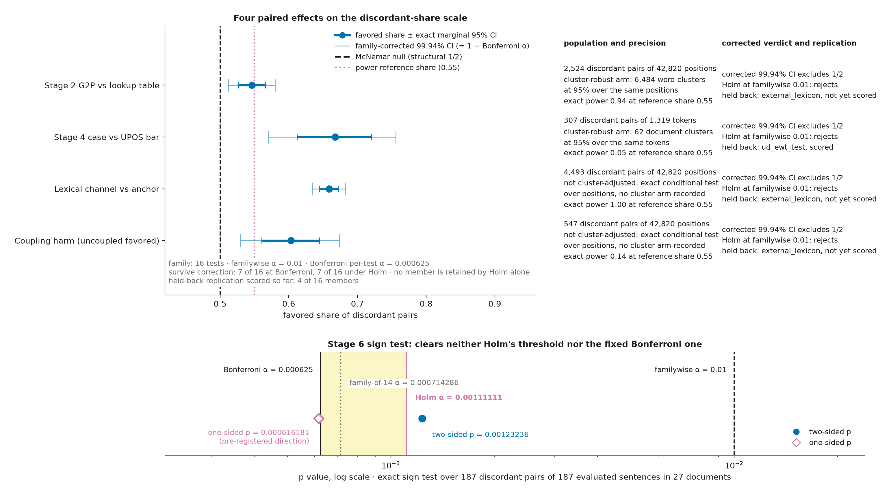
| Paired effect | Discordant pairs | Favored share | Exact 95% interval | Power at share 0.55 |
|---|---|---|---|---|
| Stage 2B letter-to-phone against the lookup table (eq. 24) | 2524 | 0.546355 | [0.52669, 0.565912] | 0.943796 |
| Stage 4 derived against the UPOS bar (sec. 10.1.5) | 307 | 0.667752 | [0.612006, 0.720224] | 0.04599 |
| Lexical channel against the anchor (sec. 4.10) | 4493 | 0.658803 | [0.644728, 0.67267] | 0.999488 |
| Coupling harm, uncoupled decoder favored (sec. 6.1) | 547 | 0.603291 | [0.560912, 0.644548] | 0.138409 |
15.3 Null bounds and limits on absence claims
Several results in this project are null or near-null, and “we found
no effect” is weaker than what the data support. What the data support
is a bound: an interval saying how large the effect can be.
That convention is stated once, executably, in the module docstring of
src/ailm/statistics.py, rather than restated approximately
at each null where it could drift between sections.
15.3.1 Share and difference scales with distinct nulls
Every paired comparison here is exact and conditional, and it admits two scales that answer different questions. The discordant share \(b/(b+c)\) is the probability that a discordant pair falls the probe’s way; its null value is one half, and tbl. 36 reports it. The paired difference \((b-c)/n\) is the probe’s accuracy minus the comparator’s over the same positions; its null value is zero, and tbl. 37 reports it. The second is the first mapped back through
\[\delta \;=\; (2s - 1)\,\frac{b + c}{n},\qquad{(25)}\]
so a large win share over few discordant pairs is a small accuracy
difference, and the two numbers are never interchangeable.
paired_difference_interval in
src/ailm/benchmarks/ is the single implementation of that
mapping.
Difference bounds are drawn at 95% two-sided coverage, and at
99.9375% — one minus the Bonferroni per-test threshold — wherever the
bound has to pair with a family-corrected decision. An interval is read
at the level of the decision it supports, so the two levels are not
substitutes for one another. The share intervals of tbl. 36 sit at the same coverage as the
difference bounds: SHARE_CONFIDENCE and
DIFFERENCE_CONFIDENCE are one constant, and both print 95%.
That is a property of one line of source rather than of a convention,
which is the point of writing it once: a future divergence would have to
be declared there deliberately instead of accumulating between two
recorders. The Stage 5 bootstrap intervals — the paired privileged-label
gain, the rank interval, and the classification difference — are the
declared exception: they are read at 99% under their recorder’s own
contract (STAGE5_BOOTSTRAP_CONFIDENCE), because they are
percentile intervals rather than the share interval and were kept out of
the harmonization on that ground (decision 66).
15.3.2 Derivation and scope of null bounds
No bound in tbl. 37 is a new
measurement. The recorder wrote *_delta_low_* and
*_delta_high_* for the external-benchmark arms and for
nothing else, so every other paired result in this project could state
its contrast but not how large the effect can be.
paired_difference_interval is a pure function of \(b\), \(c\)
and \(n\), and all three are already in
the ledger for each arm, so the missing bounds need no run — only the
same call at render time.
paired_difference_bound_from_counts in
src/ailm/manuscript_variables/__init__.py makes that
call.
It wraps the recorder’s own function rather than reimplementing it,
and that distinction carries the argument. A reimplementation at a
different confidence level, or with a Wald interval in place of the
exact conditional one, or over the unconditional difference, would each
produce a plausible pair of numbers, render without error, and place two
different kinds of interval in one table under one name.
tests/test_statistics.py::TestDerivedPairedBound forecloses
that: it runs the derivation on every arm that does have a recorded
bound and requires it to reproduce each recorded endpoint. Those arms
are the only place the recorder and render-time derivation can be
compared, and a failure there would not mean the tolerance is too tight
— it would mean the recorder builds its interval from something other
than \(b\), \(c\) and \(n\), and that no row derived from those
three is admissible.
The denominator is the one input the counts cannot check about themselves. Both \(b\) and \(c\) are read from labels naming the arm, so reading the wrong one is loud; \(n\) is read from a different label, and a plausible wrong choice — test positions instead of test sentences, the full pool instead of the subsample — rescales every bound in the block while leaving each number looking reasonable. Each arm’s \((b-c)/n\) is therefore checked against a point estimate recorded by a different code path, and the arms whose comparison admits no ties are additionally required to have their counts exhaust the denominator exactly. The denominator-doubling and fixed-width controls stop those checks from being satisfied by a stub: doubling \(n\) must halve the bound, because the share is mapped back through the discordance rate, and a derivation hard-wired to a fixed wide interval must fail the requirements that the bound move with its inputs and narrow as pairs accumulate.
15.3.3 Interpretation limits of null bounds
A bound says that values outside it are inconsistent with the data at the stated coverage. That is the whole of what it says. An interval that contains the null value bounds the effect; it does not establish that the effect is absent. “The difference is between -0.561798 and 0.533708 points” is a claim about how large the effect can be. “There is no difference” is a different claim, and no interval containing the null has ever supported it.
Coverage here is marginal, not simultaneous, and it carries no multiplicity correction below 99.9375%. A 95% interval that excludes the null is therefore not equivalent to clearing the corrected threshold 0.000625, and this project holds the case that makes the gap concrete. The Stage 6 sign test’s bound of [0.093249, 0.380275] excludes zero while its recorded corrected-threshold survival flag is false. Reading “excludes zero” as “significant” would contradict sec. 15.2. The lexical channel at mixing weight 0.9 was a second such case, with a bound excluding zero beside a p-value above even the uncorrected level, until its backoff defect was corrected (decision 110); its corrected p-value is 3.903e-87, and it is now a decided effect on both readings.
Conditioning on the discordant set is what makes the construction exact, and the price is conservatism. With few discordant pairs the interval is wide, and a wide interval is a weak bound rather than a strong null. The case-only clause arm is the limit case: 1 discordant pairs, and a bound nearly as wide as the quantity it bounds. Its lower endpoint coincides exactly with its point estimate -0.561798, which is a property of the construction rather than a coincidence: every discordant pair there fell one way, so the exact lower limit on the share is zero and eq. 25 cannot map it past the observed difference. A reader who treats that endpoint as independent information is counting one number twice.
15.3.4 Conditions for an equivalence claim
Turning a bound into an equivalence claim — “the effect is
negligible” rather than “the effect is at most this large” — needs a
smallest effect of interest declared before the data are seen. This
project declares one, on the share scale: 0.55, already in service as
the fixed reference share for power. equivalence_region
mirrors it about the null, giving [0.45, 0.55], so the region is
symmetric and covers effects in either direction.
share_interval_supports_equivalence is then the
two-one-sided-tests decision read straight off the interval: the claim
holds only when both ends fall inside the region. Checking only
that the interval contains one half would pass every arm with too few
pairs to say anything, which is exactly the defect that makes an
underpowered null look like a positive finding.
The estimand is the win share among discordant pairs, so an equivalence claim made here is never a claim that two systems are equivalent in accuracy, and no sentence in this manuscript converts one into the other. The two are different quantities: a split close to the exact-test null over many discordant pairs and the same split over a handful bound the marginal disagreement by amounts that differ by the ratio of their discordance rates.
The region is declared on the share scale and not on the difference scale, and the asymmetry is deliberate. Converting it through eq. 25 requires the observed discordance rate, so the threshold would depend on the data it judges, and the dependence runs the wrong way: the fewer discordant pairs an arm produced, the smaller the converted threshold would become, so equivalence would be easiest to claim precisely where the evidence is thinnest. No difference-scale margin is declared here, so no difference-scale equivalence claim is made anywhere in this manuscript.
How many discordant pairs an equivalence claim needs at all is
analytic in the sense that matters: it consumes no measurement.
minimum_discordant_pairs_for_equivalence asks, of the most
favorable outcome available at each pair count — the split closest to
even, where the interval is narrowest — how many pairs are needed before
that interval fits inside the region. The answer is 420 pairs at 95% and
1204 at 99.9375%. The search requires the predicate to keep holding over
a window of further counts, because it is not monotone in the pair
count: an odd count cannot split evenly, so its most balanced split is
off-center and its interval is wider than that of the even count below
it. Returning the first count that qualifies would report a parity
artifact as a sample-size requirement.
That threshold is what separates “this null is only a bound” from “this null could have been an equivalence and was not”. The case-only clause arm at 1 discordant pairs and Stage 6 at 187 sit below it, so each of those results is a bound and nothing more. That is a statement about what that many pairs can support, not a complaint about the measurement: every one of these corpora is used whole, and none was sized to a target.
The registered context-window arms were listed here, and the census removed them from the list twice over. They now carry 771 and 515 discordant pairs, both above the threshold, and both contrasts clear the corrected family threshold, so they are established effects rather than nulls of any kind. They remain in tbl. 37 because the table is the inventory of arms whose bounds are derived rather than recorded, which is a statement about provenance and not about verdict; they are absent from fig. 39, which is the inventory of nulls. Keeping a resolved contrast in a bounds panel would report it as unresolved, so the figure refuses to draw such a contrast rather than relabel it. The separation is enforced by the drawing code, not by the caption.
No arm in the current ledger passes the equivalence test. The lexical
channel at mixing weight 0.9 did, under the backoff defect corrected in
decision 110: with 5029 discordant pairs it had the precision, and its
corrected-level share interval then sat inside the region. Corrected,
the same arm is a decided effect;
share_interval_supports_equivalence reports 0 for it at
99.9375% coverage, the indicator being nonzero only when both ends of
the interval fall inside the region, and its interval sits far outside
it. Every other near-null drawn in fig. 39 is below the pair count an equivalence
claim needs, so what the roster now shows is the general case:
equivalence is paid for in precision, and no near-null in this project
has produced the pairs to pay. The arm’s two readings before and after
the correction are set out together below, because together they say
more about the convention than either does alone.
| Paired arm | Direction and scale | Discordant pairs | Point estimate | Bound at 95% |
|---|---|---|---|---|
| Stage 5 clause-type classification (sec. 4.7) | agent minus majority baseline, points | 1 | -0.561798 | [-0.561798, 0.533708] |
| Stage 6 narrative-phase sign test (sec. 4.8) | phase model minus comparator, net directional share | 187 | 0.240642 | [0.093249, 0.380275] |
| Stage 2 G2P versus the per-letter bar (sec. 4.4) | model minus bar among discordant positions, net directional share | 2524 | 0.09271 | [0.053381, 0.131824] |
| Lexical channel at mixing weight 0.9 (sec. 4.10) | mixed minus anchor, points | 5029 | 3.258 | [2.941811, 3.57005] |
| Context window, Gemma 3 4B (sec. 13) | long minus short window, accuracy difference (proportion) | 771 | -0.01245 | [-0.019304, -0.0055] |
| Context window, Qwen 2.5 3B (sec. 13) | long minus short window, accuracy difference (proportion) | 515 | -0.013707 | [-0.019207, -0.008049] |
The punctuation-type-oracle→word-prior intervention is intentionally absent from tbl. 37. Its 74,013 token outcomes are nested inside 52 Brown documents, so an exact interval that treats tokens as independent pairs would be pseudoreplication. Its declared uncertainty is instead the whole-document bootstrap over per-emission log gain: [0.00088152, 0.00233064] nats per emission, reported in sec. 5.10.3.
fig. 39 draws tbl. 37 and adds the question the table cannot answer by itself: not how wide each bound is, but whether the arm that produced it could ever have supported an equivalence claim. Most could not, at any outcome, and that is a property of the arm rather than of the result.
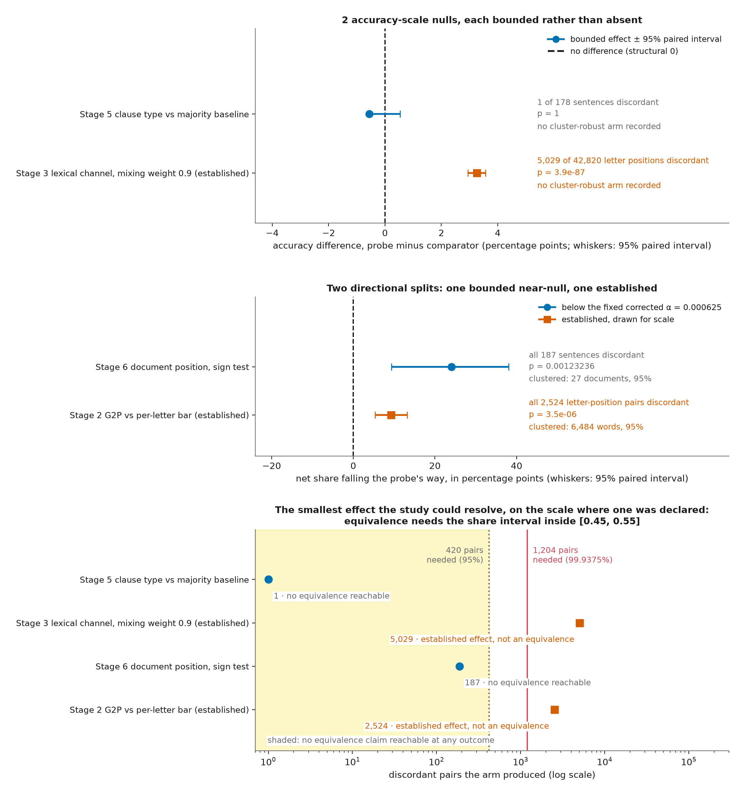
15.3.5 Nominal equivalence and the effect of correction
The Stage 3 lexical channel at mixing weight 0.9 carried, until decision 110, two readings a reader is likely to take as incompatible: a 95% difference bound that excluded zero beside an exact p-value that missed even the uncorrected level, and a corrected-level share interval that fit inside the equivalence region. The arm is kept in this section because the argument it prompted is about the convention and survives the arm’s own correction, and because the corrected arm shows the convention’s other face on the same counts. On its 5029 discordant positions the mixed decoder now wins 3212 and the anchor wins 1817; the 95% difference bound is [2.941811, 3.57005] points and the exact test of eq. 24 returns 3.903e-87, far below the corrected threshold 0.000625. Both readings now agree, and why they must is the point.
The exclusion is not a second opinion about the p-value; it is the p-value. A Clopper–Pearson interval at coverage \(1 - \alpha\) is the inversion of the same exact two-sided procedure the p-value comes from, so it excludes one half exactly when that procedure rejects at \(\alpha\) — the endpoint condition and the tail condition are one inequality on one binomial tail. eq. 25 then rescales by a strictly positive factor, so the difference interval excludes zero exactly when the share interval excludes one half. Composing the two, “the 95% bound excludes zero” carries exactly one piece of information — that \(p\) falls below the level complementary to that coverage — and carries nothing beyond it. That level is not one this project ever declared: its weakest declared bar is 0.01 and its operative bar is 0.000625. Under the defective lookup the two readings disagreed for the ordinary reason that the arm’s p-value then lay between those levels, not because two instruments disagreed about the arm; corrected, its p-value lies below both, and the readings agree for the same ordinary reason.
Read at the coverage that matches the decision, as this section’s convention requires, the corrected arm’s interval is the one at 99.9375% — one minus 0.000625 — and that interval excludes one half, agreeing with the p-value. It is also the interval the recorded equivalence indicator is computed from, and 0 is what it reports: a decided effect is not a bounded null, and one interval says so in both directions.
What the correction removed from the ledger is the one arm with the precision to support an equivalence claim. 5029 discordant pairs clears 1204, the analytic minimum at that coverage, by a wide margin, but the arm is no longer near the null; every arm in this project whose corrected-level interval covers the null sits below 420 and so could not have supported an equivalence claim under any outcome, the nearest being the Stage 6 sign test at 187 pairs. An equivalence claim needs a near-null and the pairs to resolve it, and no arm in the ledger now has both.
What is claimed here stops at the share scale. The equivalence region is declared on shares only, for the reason given above — a difference-scale margin would depend on the observed discordance rate and so would be easiest to meet where the evidence is thinnest — so the 95% difference bound in tbl. 37 stays a bound and is not converted into a claim of any other kind. Two recomputations from 3212 and 1817 would falsify this passage without any new run: a corrected-level interval that contained one half, or a recorded 0 of one. The absence of an equivalence arm is a statement about the ledger as it stands rather than about the method — another arm accumulating pairs while staying near the null would supply one, and that would be new evidence rather than a changed convention.
15.4 Statistical choices and rejected alternatives
The apparatus that decides whether a difference in this manuscript is real is standard, but it is assembled out of four separate literatures, and every choice in it has a named alternative that was declined rather than overlooked.
The paired test is the exact conditional form of McNemar’s test (McNemar 1947). Conditioning on the number of discordant pairs is what makes it exact and also what makes it conservative, and the long argument over conditional versus unconditional exact procedures for matched pairs is surveyed by Agresti (2001); this manuscript takes the conditional side and says where the resulting interval is conditional rather than marginal (sec. 13). Interval estimates appear in two forms, distinguished by the role each plays rather than by the population each covers: a verdict-bearing form and a descriptive form. The primary paired family uses Clopper–Pearson (Clopper and Pearson 1934), whose coverage is never below nominal, because a verdict is read off it (sec. 4.11). The benchmark proportions, and the per-decoder Wilson bars drawn on fig. 15 in the main text, use Wilson (Wilson 1927) instead, which is shorter and better centered on average but whose coverage oscillates; wherever it appears, it is reported as a description of one group’s accuracy rather than as the interval a verdict is read from.
The assumption that test makes about independence between pairs has its own literature, and this manuscript uses it to bound its results rather than to repair them. Eliasziw and Donner (1991) state the assumption explicitly and derive the variant that applies when matched pairs arrive in clusters; Obuchowski (1998) shows that ignoring positive intracluster correlation inflates the size of the test, so nominal p-values come out smaller than a cluster-aware analysis would give. Every paired unit reported here is nested below what its corpus samples — positions within a word, and tokens or sentences within a document — and the cluster-robust variant is computed for 6 of them at 10,000 replicates (tbl. 33). What these citations add is that the direction of the error under positive intracluster correlation is a property of the estimator rather than an intuition about this particular data, which is what makes the measured result worth reporting: on this corpus the correlation is near zero at the word unit, positive for the Stage 4 document arm, and negative for one Stage 6 document arm. Thus clustering leaves the thinnest margin in the family intact, widens Stage 4, and makes one Stage 6 arm tighter rather than wider. The literature supplies the direction under an assumption; the reanalysis supplies the sign and size that this data actually has. Durkalski et al. (2003) give the practical variant for unequal cluster sizes, which is the case here — the largest word contributes 19 positions — and Gönen (2004) sets out why the design question is the number of clusters rather than the number of observations, which is exactly what disqualifies the sentence-level reading of Stage 6’s log-loss arm and the sentence- or token-level primary readings of the English Stage 4 and Stage 5 arms.
Correction at a constant threshold is the Bonferroni inequality as
applied to simultaneous inference by Dunn (1961). Holm’s step-down procedure (Holm 1979) controls the same familywise
rate and is uniformly at least as powerful, and the Benjamini–Hochberg
procedure (Benjamini and
Hochberg 1995) is more powerful still but controls the false
discovery rate, which is a weaker guarantee. This project reports the
first two and not the third. Bonferroni is primary because its constant
per-test threshold is auditable against a single recorded number; Holm’s
step-down is reported alongside it as a sensitivity analysis, computed
over the same family by holm_step_down
(src/ailm/statistics.py), and every Holm crossing is stated
wherever a familywise verdict appears. sec. 15.2 records where the two verdicts
differ.
Multiplicity is nonetheless the smaller of the two threats to a confirmatory reading, and the larger one is a distinct failure with its own name. Dwork et al. (2015) show that repeatedly using a holdout adaptively — inspecting it, revising a hypothesis on what it showed, testing again — overfits the holdout itself, and that no correction applied to a fixed family addresses this, because the family was selected after looking. Cawley and Talbot (2010) establish the adjacent result for model selection: selecting over a criterion biases the estimate that criterion reports, independently of any parameter overfitting. Simmons et al. (2011) catalog how researcher degrees of freedom exercised after seeing preliminary results inflate the false-positive rate even when each individual decision looks defensible in isolation, and Gelman and Loken (2013) name the same failure a garden of forking paths: no single choice need resemble p-hacking for the path-dependent multiplicity to be real. This project revised gates after seeing stage outcomes and assembled its test family retrospectively, on the same population every gate was tuned against, which sec. 4.11 and sec. 5 both state in those terms before reporting a number. The consequence is that the corrected threshold of sec. 15.2 controls exactly what it claims and nothing else: crossing it makes an effect a corrected-threshold survivor on the development population, not a confirmed one. Only a partition nothing in this manuscript had touched could change that label, and one did, for those of the 4 members it scored that cleared the frozen bar (sec. 10.6). No such partition remains among the vendored artifacts; the one registered outside them for the CMUdict members was measured empty and that replication is retired by exhaustion (decision 91), while the EWT members’ registered population is spent by the one run of decision 111; split diagnostics are explicitly not re-scored, and their full-set member carries the replication (sec. 15.2, decision 79).
Power is reported the way it is because retrospective power computed at the observed effect is a monotone transform of the p-value and adds nothing to it (Hoenig and Heisey 2001). What is informative is detectability against an effect size fixed in advance — the design-analysis position of Gelman and Carlin (2014) — and that is what the declared reference share of 0.55 implements here. That comparisons in this field are routinely underpowered, and that their test sets are often too small to resolve the differences reported on them, is the finding of Card et al. (2020); Dror et al. (2018) surveys significance-testing practice for the same field. The verdict unresolved rather than absent, which recurs throughout sec. 4.11 and sec. 13, is that recommendation applied to this project’s own nulls.
That verdict is deliberately weaker than the one a reader might want, and the literature says what the stronger one costs. Establishing that an effect is absent rather than undetected requires an equivalence test — the two one-sided tests procedure (Schuirmann 1987) against a bound declared before the data are seen (Lakens 2017). sec. 4.11 declares such a bound, on the win-share scale, and reads the decision off the same interval the p-value is read from. The price it names is precision rather than reinterpretation: an equivalence claim needs both a near-null and enough discordant pairs to resolve one, and no near-null in the plotted paired-bound roster now has both. Because the bound is declared on shares and not on differences, no null in this manuscript is a negligibility claim about an accuracy difference.
Calibration has its own lineage. That a forecaster’s stated probabilities should match realized frequencies, and that this is separable from how sharp those probabilities are, is DeGroot and Fienberg (1983). The binned estimator that sec. 13 reports as expected calibration error is the one introduced by Naeini et al. (2015) and made standard for neural classifiers by Guo et al. (2017), and it is a diagnostic rather than a score: it can be driven down by flattening a distribution instead of by improving it, which is exactly the failure mode that makes the supplement withhold a calibration figure for a system whose calibration numbers move beyond tolerance between the completion rules. The Brier and negative-log-likelihood statistics reported beside it are strictly proper in the sense of Gneiting and Raftery (2007) — the multiclass Brier score (Brier 1950) and the negative log likelihood — which is the property that a system cannot improve its number by reporting something other than what it believes, a property that for an external probe attaches only to the reconstructed distribution (sec. 13).